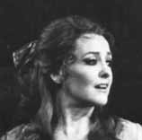
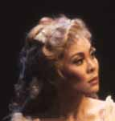
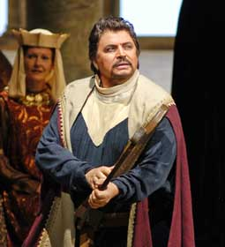

| Search Results |
[Met Performance] CID:282990
Lohengrin {594}
Metropolitan Opera House; 01/1/1986
|
[Met Performance] CID:283000
Le Nozze di Figaro {292}
Metropolitan Opera House; 01/2/1986
Debut: Max Epstein |
[Met Performance] CID:283010
Parade: An Evening of French Music Theater {25}
Parade {25}
Les Mamelles de Tirésias {25}
L'Enfant et les Sortilèges {25}
Metropolitan Opera House; 01/3/1986
Debuts: Joey Farr, Evelyn Petros |
[Met Performance] CID:283020
L'Italiana in Algeri {44}
Metropolitan Opera House; 01/4/1986
Broadcast |
[Met Performance] CID:283030
Lohengrin {595}
Metropolitan Opera House; 01/4/1986
Debuts: Sabine Hass, Roland Bracht |
[Met Performance] CID:283040
Jenufa {21}
Metropolitan Opera House; 01/6/1986
|
[Met Performance] CID:283050
Lohengrin {596}
Metropolitan Opera House; 01/7/1986
|
[Met Performance] CID:283060
L'Italiana in Algeri {45}
Metropolitan Opera House; 01/8/1986
|
[Met Performance] CID:283070
Roméo et Juliette {255}
Metropolitan Opera House; 01/9/1986
Debuts: Andrew Wentzel, Sylvain Cambreling
Review |
[Met Performance] CID:283080

Lohengrin {597}
Metropolitan Opera House; 01/10/1986
Broadcast / Telecast |
[Met Performance] CID:283090
Jenufa {22}
Metropolitan Opera House; 01/11/1986
Broadcast |
[Met Performance] CID:283100
L'Italiana in Algeri {46}
Metropolitan Opera House; 01/11/1986
Broadcast / Telecast |
[Met Performance] CID:283110
Roméo et Juliette {256}
Metropolitan Opera House; 01/13/1986
|
[Met Performance] CID:283120
Jenufa {23}
Metropolitan Opera House; 01/14/1986
|
[Met Performance] CID:283130
Tosca {695}
Metropolitan Opera House; 01/15/1986
|
[Met Performance] CID:283140
Lohengrin {598}
Metropolitan Opera House; 01/16/1986
|
[Met Performance] CID:283150
Idomeneo {14}
Metropolitan Opera House; 01/17/1986
|
[Met Performance] CID:283160
Opera News
Tosca {696}
Metropolitan Opera House; 01/18/1986
Broadcast |
[Met Performance] CID:283170
Roméo et Juliette {257}
Metropolitan Opera House; 01/18/1986
|
[Met Performance] CID:283180
Idomeneo {15}
Metropolitan Opera House; 01/20/1986
Review |
[Met Performance] CID:283190
Roméo et Juliette {258}
Metropolitan Opera House; 01/21/1986
|
[Met Performance] CID:283200
Tosca {697}
Metropolitan Opera House; 01/22/1986
|
[Met Performance] CID:283210
Idomeneo {16}
Metropolitan Opera House; 01/23/1986
|
[Met Performance] CID:283220
Khovanshchina {15}
Metropolitan Opera House; 01/24/1986
|
[Met Performance] CID:283230
Opera News
Roméo et Juliette {259}
Metropolitan Opera House; 01/25/1986
Broadcast |
[Met Performance] CID:283240
Tosca {698}
Metropolitan Opera House; 01/25/1986
|
[Met Performance] CID:283250
Khovanshchina {16}
Metropolitan Opera House; 01/27/1986
|
[Met Performance] CID:283260
Roméo et Juliette {260}
Metropolitan Opera House; 01/28/1986
|
[Met Performance] CID:283270
Idomeneo {17}
Metropolitan Opera House; 01/29/1986
|
[Met Performance] CID:283280
Porgy and Bess {30}
Metropolitan Opera House; 01/30/1986
|
[Met Performance] CID:283290
Roméo et Juliette {261}
Metropolitan Opera House; 01/31/1986
|
[Met Performance] CID:283300
Khovanshchina {17}
Metropolitan Opera House; 02/1/1986
Broadcast |
[Met Performance] CID:283310
Idomeneo {18}
Metropolitan Opera House; 02/1/1986
|
[Met Concert/Gala] CID:350752
Norman - Levine Concert
Metropolitan Opera House; 02/02/1986
|
[Met Performance] CID:283320
Metropolitan Opera Premiere
Samson {1}
Metropolitan Opera House; 02/3/1986
Debuts: Sarah Walker, Timothy O'Brien, Eleanor Fazan
Review |
[Met Performance] CID:283330
Idomeneo {19}
Metropolitan Opera House; 02/4/1986
Debuts: Dennis Bailey, Gary Lakes |
[Met Performance] CID:283340
Porgy and Bess {31}
Metropolitan Opera House; 02/5/1986
|
[Met Performance] CID:283350
Roméo et Juliette {262}
Metropolitan Opera House; 02/6/1986
|
[Met Performance] CID:283360
Samson {2}
Metropolitan Opera House; 02/7/1986
|
[Met Performance] CID:283370
Porgy and Bess {32}
Metropolitan Opera House; 02/8/1986
Broadcast |
[Met Performance] CID:283380
Idomeneo {20}
Metropolitan Opera House; 02/8/1986
|
[Met Performance] CID:283390
Samson {3}
Metropolitan Opera House; 02/10/1986
|
[Met Performance] CID:283400
Roméo et Juliette {263}
Metropolitan Opera House; 02/11/1986
|
[Met Performance] CID:283410
Idomeneo {21}
Metropolitan Opera House; 02/12/1986
|
[Met Performance] CID:283420
Francesca da Rimini {28}
Metropolitan Opera House; 02/13/1986
|
[Met Performance] CID:283430
Roméo et Juliette {264}
Metropolitan Opera House; 02/14/1986
|
[Met Performance] CID:283440
Opera News
Idomeneo {22}
Metropolitan Opera House; 02/15/1986
Broadcast |
[Met Performance] CID:283450
Samson {4}
Metropolitan Opera House; 02/15/1986
Debuts: Sandra Walker, David Gordon |
[Met Performance] CID:283460
Roméo et Juliette {265}
Metropolitan Opera House; 02/17/1986
|
[Met Performance] CID:283470
Francesca da Rimini {29}
Metropolitan Opera House; 02/18/1986
|
[Met Performance] CID:283480
Samson {5}
Metropolitan Opera House; 02/19/1986
|
[Met Performance] CID:283490
Idomeneo {23}
Metropolitan Opera House; 02/20/1986
|
[Met Performance] CID:283500
Simon Boccanegra {95}
Metropolitan Opera House; 02/21/1986
Debut: Myung-Whun Chung |
[Met Performance] CID:283510
Opera News
Francesca da Rimini {30}
Metropolitan Opera House; 02/22/1986
Broadcast |
[Met Performance] CID:283520
Roméo et Juliette {266}
Metropolitan Opera House; 02/22/1986
|
[Met Performance] CID:283530
Simon Boccanegra {96}
Metropolitan Opera House; 02/24/1986
|
[Met Performance] CID:283540
Francesca da Rimini {31}
Metropolitan Opera House; 02/25/1986
|
[Met Performance] CID:283550
Samson {6}
Metropolitan Opera House; 02/26/1986
|
[Met Performance] CID:283560
Simon Boccanegra {97}
Metropolitan Opera House; 02/27/1986
|
[Met Performance] CID:283570
Falstaff {139}
Metropolitan Opera House; 02/28/1986
|
[Met Performance] CID:283580
Opera News 1
Opera News 2
Samson {7}
Metropolitan Opera House; 03/1/1986
Broadcast |
[Met Performance] CID:283590
Francesca da Rimini {32}
Metropolitan Opera House; 03/1/1986
|
[Met Performance] CID:283600
Falstaff {140}
Metropolitan Opera House; 03/3/1986
|
[Met Performance] CID:283610
Simon Boccanegra {98}
Metropolitan Opera House; 03/4/1986
|
[Met Performance] CID:283620
Francesca da Rimini {33}
Metropolitan Opera House; 03/5/1986
|
[Met Performance] CID:283630
Samson {8}
Metropolitan Opera House; 03/6/1986
|
[Met Performance] CID:283640
Simon Boccanegra {99}
Metropolitan Opera House; 03/7/1986
|
[Met Performance] CID:283650
Opera News
Falstaff {141}
Metropolitan Opera House; 03/8/1986
Broadcast |
[Met Performance] CID:283660
Francesca da Rimini {34}
Metropolitan Opera House; 03/8/1986
|
[Met Performance] CID:283670
New Production
Carmen {785}
Metropolitan Opera House; 03/10/1986
Debuts: Charles Duval, Elizabeth Keen |
[Met Performance] CID:283680
Falstaff {142}
Metropolitan Opera House; 03/11/1986
|
[Met Performance] CID:283690
Simon Boccanegra {100}
Metropolitan Opera House; 03/12/1986
|
[Met Performance] CID:283700
Francesca da Rimini {35}
Metropolitan Opera House; 03/13/1986
|
[Met Performance] CID:283710
Carmen {786}
Metropolitan Opera House; 03/14/1986
|
[Met Performance] CID:283720
Simon Boccanegra {101}
Metropolitan Opera House; 03/15/1986
Broadcast |
[Met Performance] CID:283730
Falstaff {143}
Metropolitan Opera House; 03/15/1986
|
[Met Performance] CID:283740
Francesca da Rimini {36}
Metropolitan Opera House; 03/17/1986
|
[Met Performance] CID:283750
Carmen {787}
Metropolitan Opera House; 03/18/1986
|
[Met Performance] CID:283760
Simon Boccanegra {102}
Metropolitan Opera House; 03/19/1986
|
[Met Performance] CID:283770
Francesca da Rimini {37}
Metropolitan Opera House; 03/20/1986
|
[Met Performance] CID:283780
Aida {900}
Metropolitan Opera House; 03/21/1986
|
[Met Performance] CID:283790
Opera News
Carmen {788}
Metropolitan Opera House; 03/22/1986
Broadcast |
[Met Performance] CID:283800
Simon Boccanegra {103}
Metropolitan Opera House; 03/22/1986
|
[Met Performance] CID:283810
Der Rosenkavalier {304}
Metropolitan Opera House; 03/24/1986
Debut: Jon Rowen |
[Met Performance] CID:283820
Aida {901}
Metropolitan Opera House; 03/25/1986
|
[Met Performance] CID:283830
Carmen {789}
Metropolitan Opera House; 03/26/1986
|
[Met Performance] CID:283840
Simon Boccanegra {104}
Metropolitan Opera House; 03/27/1986
|
[Met Performance] CID:283850
Der Rosenkavalier {305}
Metropolitan Opera House; 03/28/1986
|
[Met Performance] CID:283860
Opera News
Aida {902}
Metropolitan Opera House; 03/29/1986
Broadcast |
[Met Performance] CID:283870
Carmen {790}
Metropolitan Opera House; 03/29/1986
|
[Met Performance] CID:283880
Don Carlo {138}
Metropolitan Opera House; 03/31/1986
|
[Met Performance] CID:283890
Der Rosenkavalier {306}
Metropolitan Opera House; 04/1/1986
|
[Met Performance] CID:283900
Carmen {791}
Metropolitan Opera House; 04/2/1986
|
[Met Performance] CID:283910
Aida {903}
Metropolitan Opera House; 04/3/1986
Debut: Madelyn Renee |
[Met Performance] CID:283920
Don Carlo {139}
Metropolitan Opera House; 04/4/1986
|
[Met Performance] CID:283930
Der Rosenkavalier {307}
Metropolitan Opera House; 04/5/1986
Broadcast |
[Met Performance] CID:283940
Carmen {792}
Metropolitan Opera House; 04/5/1986
|
[Met Performance] CID:283950
Aida {904}
Metropolitan Opera House; 04/7/1986
|
[Met Performance] CID:283960
Carmen {793}
Metropolitan Opera House; 04/8/1986
|
[Met Performance] CID:283970
Don Carlo {140}
Metropolitan Opera House; 04/9/1986
|
[Met Performance] CID:283980
Parsifal {251}
Metropolitan Opera House; 04/10/1986
Debuts: Kathryn Harries, Gary Bachlund |
[Met Performance] CID:283990
Carmen {794}
Metropolitan Opera House; 04/11/1986
|
[Met Performance] CID:284000
Don Carlo {141}
Metropolitan Opera House; 04/12/1986
Broadcast |
[Met Performance] CID:284010
La Traviata {714}
Metropolitan Opera House; 04/12/1986
|
[Met Concert/Gala] CID:284020
Pension Fund Benefit
Gala Performance
Metropolitan Opera House; 04/13/1986
|
[Met Performance] CID:284030
Parsifal {252}
Metropolitan Opera House; 04/14/1986
Debut: Gail Gilmore |
[Met Performance] CID:284040
Don Carlo {142}
Metropolitan Opera House; 04/15/1986
Debut: Giovanna Casolla |
[Met Performance] CID:284050
Carmen {795}
Metropolitan Opera House; 04/16/1986
|
[Met Performance] CID:284060
La Traviata {715}
Metropolitan Opera House; 04/16/1986
|
[Met Performance] CID:284070
Carmen {796}
Metropolitan Opera House; 04/17/1986
|
[Met Performance] CID:284080
Don Carlo {143}
Metropolitan Opera House; 04/18/1986
|
[Met Performance] CID:284090
Parsifal {253}
Metropolitan Opera House; 04/19/1986
Broadcast |
[Met Performance] CID:284100
La Traviata {716}
Metropolitan Opera House; 04/19/1986
|
[Met Concert/Gala] CID:350580
National Council Winners Concert
Metropolitan Opera House; 04/20/1986
First Appearance: Mark W. Baker, Michael Sylvester, Gordon Hawkins, Barbara Kilduff, Stanford Olsen, Marilyn Mims |
[Met Performance] CID:284110
Carmen {797}
Metropolitan Opera House; 04/21/1986
|
[Met Performance] CID:284120
Don Carlo {144}
Metropolitan Opera House; 04/22/1986
|
[Met Performance] CID:284130
L'Italiana in Algeri {47}
Metropolitan Opera House; 04/23/1986
|
[Met Performance] CID:284140
Cavalleria Rusticana {572}
Pagliacci {612}
Metropolitan Opera House; 04/24/1986
|
[Met Performance] CID:284150
Carmen {798}
Metropolitan Opera House; 04/25/1986
|
[Met Performance] CID:284160
L'Italiana in Algeri {48}
Metropolitan Opera House; 04/26/1986
|
[Met Performance] CID:284170
Don Carlo {145}
Metropolitan Opera House; 04/26/1986
|
[Met Performance] CID:284180
Cavalleria Rusticana {573}
Pagliacci {613}
Metropolitan Opera House; 04/28/1986
|
[Met Performance] CID:284190
Carmen {799}
Metropolitan Opera House; 04/29/1986
|
[Met Performance] CID:284200
L'Italiana in Algeri {49}
Metropolitan Opera House; 04/30/1986
|
[Met Performance] CID:284210
Cavalleria Rusticana {574}
Pagliacci {614}
Metropolitan Opera House; 05/1/1986
|
[Met Performance] CID:284220
Carmen {800}
Metropolitan Opera House; 05/2/1986
|
[Met Performance] CID:284230
Cavalleria Rusticana {575}
Pagliacci {615}
Metropolitan Opera House; 05/3/1986
|
[Met Performance] CID:284240
L'Italiana in Algeri {50}
Metropolitan Opera House; 05/3/1986
|
[Met Performance] CID:284250
Tosca {699}
Wang Center for the Performing Arts, Boston, Massachusetts; 05/5/1986
Debuts: Lando Bartolini, Christian Badea |
[Met Performance] CID:284260
Cavalleria Rusticana {576}
Pagliacci {616}
Wang Center for the Performing Arts, Boston, Massachusetts; 05/6/1986
|
[Met Performance] CID:284270
L'Italiana in Algeri {51}
Wang Center for the Performing Arts, Boston, Massachusetts; 05/7/1986
|
[Met Performance] CID:284280
Aida {905}
Wang Center for the Performing Arts, Boston, Massachusetts; 05/8/1986
Debut: Bruno Sebastian |
[Met Performance] CID:284290
Carmen {801}
Wang Center for the Performing Arts, Boston, Massachusetts; 05/9/1986
|
[Met Performance] CID:284300
La Traviata {717}
Wang Center for the Performing Arts, Boston, Massachusetts; 05/10/1986
Debut: Dennis O'Neill |
[Met Performance] CID:284310
Roméo et Juliette {267}
Wang Center for the Performing Arts, Boston, Massachusetts; 05/10/1986
|
[Met Performance] CID:284320
Tosca {700}
Playhouse Square Center, Cleveland, Ohio; 05/12/1986
|
[Met Performance] CID:284330
Cavalleria Rusticana {577}
Pagliacci {617}
Playhouse Square Center, Cleveland, Ohio; 05/13/1986
|
[Met Performance] CID:284340
L'Italiana in Algeri {52}
Playhouse Square Center, Cleveland, Ohio; 05/14/1986
|
[Met Performance] CID:284350
Aida {906}
Playhouse Square Center, Cleveland, Ohio; 05/15/1986
|
[Met Performance] CID:284360
Carmen {802}
Playhouse Square Center, Cleveland, Ohio; 05/16/1986
|
[Met Performance] CID:284370
Roméo et Juliette {268}
Playhouse Square Center, Cleveland, Ohio; 05/17/1986
Debut: Monique Baudoin |
[Met Performance] CID:284380
La Traviata {718}
Playhouse Square Center, Cleveland, Ohio; 05/17/1986
|
[Met Performance] CID:284390
Tosca {701}
Atlanta Civic Center, Atlanta, Georgia; 05/19/1986
|
[Met Performance] CID:284400
Cavalleria Rusticana {578}
Pagliacci {618}
Atlanta Civic Center, Atlanta, Georgia; 05/20/1986
|
[Met Performance] CID:284410
L'Italiana in Algeri {53}
Atlanta Civic Center, Atlanta, Georgia; 05/21/1986
|
[Met Performance] CID:284420
Aida {907}
Atlanta Civic Center, Atlanta, Georgia; 05/22/1986
|
[Met Performance] CID:284430
Carmen {803}
Atlanta Civic Center, Atlanta, Georgia; 05/23/1986
|
[Met Performance] CID:284440
Roméo et Juliette {269}
Atlanta Civic Center, Atlanta, Georgia; 05/24/1986
|
[Met Performance] CID:284450
La Traviata {719}
Atlanta Civic Center, Atlanta, Georgia; 05/24/1986
|
[Met Performance] CID:284460
Tosca {702}
University of Minnesota, Northrop Auditorium, Minneapolis, Minnesota; 05/26/1986
|
[Met Performance] CID:284470
Cavalleria Rusticana {579}
Pagliacci {619}
University of Minnesota, Northrop Auditorium, Minneapolis, Minnesota; 05/27/1986
|
[Met Performance] CID:284480
L'Italiana in Algeri {54}
University of Minnesota, Northrop Auditorium, Minneapolis, Minnesota; 05/28/1986
|
[Met Performance] CID:284490
Aida {908}
University of Minnesota, Northrop Auditorium, Minneapolis, Minnesota; 05/29/1986
|
[Met Performance] CID:284500
Carmen {804}
University of Minnesota, Northrop Auditorium,Minneapolis, Minnesota; 05/30/1986
|
[Met Performance] CID:284510
Roméo et Juliette {270}
University of Minnesota, Northrop Auditorium, Minneapolis, Minnesota; 05/31/1986
|
[Met Performance] CID:284520
La Traviata {720}
University of Minnesota, Northrop Auditorium, Minneapolis, Minnesota; 05/31/1986
|
[Met Performance] CID:284530
Aida {909}
New York, Manhattan, Central Park; 06/17/1986
|
[Met Performance] CID:284540
Roméo et Juliette {271}
New York, Staten Island, Snug Harbor; 06/18/1986
|
[Met Performance] CID:284550
Aida {910}
New York, Brooklyn, Marine Park; 06/20/1986
|
[Met Performance] CID:284560
Roméo et Juliette {272}
New York, Queens, Cunningham Park; 06/21/1986
|
[Met Performance] CID:284570
Roméo et Juliette {273}
New York, Manhattan, Central Park; 06/23/1986
|
[Met Performance] CID:284580
Aida {911}
New York, Bronx, Botanical Gardens; 06/25/1986
|
[Met Performance] CID:284590
Roméo et Juliette {274}
New York, Bronx, Green Way; 06/27/1986
|
[Met Performance] CID:284600
Aida {912}
East Meadow, New York, Eisenhower Park; 6/28/1986
|
[Met Performance] CID:286000
New Production
Die Walküre {446}
Metropolitan Opera House; 09/22/1986
Opening Night {102}
Bruce Crawford, General Manager
Debuts: Wendy Hillhouse, Marita Napier, Martha Thigpen, Jacalyn Bower, Pamela Smith, Sheila Smith, Joyce Castle, Rolf Langenfass
Review |
[Met Performance] CID:286010
Aida {913}
Metropolitan Opera House; 09/23/1986
Debuts: Alfredo Zanazzo, Joseph Fritz |
[Met Performance] CID:286020
Manon Lescaut {190}
Metropolitan Opera House; 09/24/1986
Debut: Mary Meyers
Review |
[Met Performance] CID:286030
Die Walküre {447}
Metropolitan Opera House; 09/25/1986
|
[Met Performance] CID:286040
Aida {914}
Metropolitan Opera House; 09/26/1986
|
[Met Performance] CID:286050
Manon Lescaut {191}
Metropolitan Opera House; 09/27/1986
|
[Met Performance] CID:350421
Madama Butterfly {635}
Metropolitan Opera House; 09/27/1986
Debut: Renata Scotto [Stage Director], Alexander Myers |
[Met Performance] CID:286060
Aida {915}
Metropolitan Opera House; 09/29/1986
|
[Met Performance] CID:286070
Die Walküre {448}
Metropolitan Opera House; 09/30/1986
Review |
[Met Performance] CID:286080
Madama Butterfly {636}
Metropolitan Opera House; 10/1/1986
|
[Met Performance] CID:286090
Aida {916}
Metropolitan Opera House; 10/2/1986
|
[Met Performance] CID:286100
Manon Lescaut {192}
Metropolitan Opera House; 10/3/1986
|
[Met Performance] CID:286110
Madama Butterfly {637}
Metropolitan Opera House; 10/4/1986
|
[Met Performance] CID:286120
Die Walküre {449}
Metropolitan Opera House; 10/4/1986
|
[Met Performance] CID:286130
Manon Lescaut {193}
Metropolitan Opera House; 10/6/1986
|
[Met Performance] CID:286140
Aida {917}
Metropolitan Opera House; 10/7/1986
|
[Met Performance] CID:286150
Die Walküre {450}
Metropolitan Opera House; 10/8/1986
|
[Met Performance] CID:286160
Le Nozze di Figaro {293}
Metropolitan Opera House; 10/9/1986
Debuts: Thomas Hampson, Ugo Benelli
Review |
[Met Performance] CID:286170
Madama Butterfly {638}
Metropolitan Opera House; 10/10/1986
|
[Met Performance] CID:286180
Aida {918}
Metropolitan Opera House; 10/11/1986
|
[Met Performance] CID:286190
Manon Lescaut {194}
Metropolitan Opera House; 10/11/1986
|
[Met Performance] CID:286200
Die Walküre {451}
Metropolitan Opera House; 10/13/1986
Debut: Siegfried Vogel |
[Met Performance] CID:286210
Madama Butterfly {639}
Metropolitan Opera House; 10/14/1986
|
[Met Performance] CID:286220
Le Nozze di Figaro {294}
Metropolitan Opera House; 10/15/1986
|
[Met Performance] CID:286230
Aida {919}
Metropolitan Opera House; 10/16/1986
|
[Met Performance] CID:286240
Die Walküre {452}
Metropolitan Opera House; 10/17/1986
|
[Met Performance] CID:286250
Madama Butterfly {640}
Metropolitan Opera House; 10/18/1986
Debut: Yoko Watanabe |
[Met Performance] CID:286260
Le Nozze di Figaro {295}
Metropolitan Opera House; 10/18/1986
|
[Met Performance] CID:286270
Tosca {703}
Metropolitan Opera House; 10/20/1986
Review |
[Met Performance] CID:286280
Le Nozze di Figaro {296}
Metropolitan Opera House; 10/21/1986
|
[Met Performance] CID:286290
Madama Butterfly {641}
Metropolitan Opera House; 10/22/1986
|
[Met Performance] CID:286300
Aida {920}
Metropolitan Opera House; 10/23/1986
Review |
[Met Performance] CID:286310
Le Nozze di Figaro {297}
Metropolitan Opera House; 10/24/1986
|
[Met Performance] CID:286320
Tosca {704}
Metropolitan Opera House; 10/25/1986
Review |
[Met Performance] CID:286330
Madama Butterfly {642}
Metropolitan Opera House; 10/25/1986
|
[Met Performance] CID:286340
Le Nozze di Figaro {298}
Metropolitan Opera House; 10/27/1986
|
[Met Performance] CID:286350
Aida {921}
Metropolitan Opera House; 10/28/1986
|
[Met Performance] CID:286360
Tosca {705}
Metropolitan Opera House; 10/29/1986
|
[Met Performance] CID:286370
Der Rosenkavalier {308}
Metropolitan Opera House; 10/30/1986
Debuts: Gottfried Hornik, Taro Ichihara, Stephen O'Mara, Mark (W.) Baker |
[Met Performance] CID:286380
Aida {922}
Metropolitan Opera House; 10/31/1986
|
[Met Performance] CID:286390
Le Nozze di Figaro {299}
Metropolitan Opera House; 11/1/1986
|
[Met Performance] CID:286400
Tosca {706}
Metropolitan Opera House; 11/1/1986
|
[Met Performance] CID:286410
Aida {923}
Metropolitan Opera House; 11/3/1986
|
[Met Performance] CID:286420
Der Rosenkavalier {309}
Metropolitan Opera House; 11/4/1986
|
[Met Performance] CID:286430
Tosca {707}
Metropolitan Opera House; 11/5/1986
|
[Met Performance] CID:286440
Roméo et Juliette {275}
Metropolitan Opera House; 11/6/1986
Debuts: Cecilia Gasdia, Christopher Trakas |
[Met Performance] CID:286450
Le Nozze di Figaro {300}
Metropolitan Opera House; 11/7/1986
|
[Met Performance] CID:286460
Tosca {708}
Metropolitan Opera House; 11/8/1986
|
[Met Performance] CID:286470
Der Rosenkavalier {310}
Metropolitan Opera House; 11/8/1986
|
[Met Performance] CID:286480
Roméo et Juliette {276}
Metropolitan Opera House; 11/10/1986
|
[Met Performance] CID:286490
Tosca {709}
Metropolitan Opera House; 11/11/1986
Debut: Maria Slatinaru |
[Met Performance] CID:286500
Der Rosenkavalier {311}
Metropolitan Opera House; 11/12/1986
Debut: Romano Nieders |
[Met Performance] CID:286510
Roméo et Juliette {277}
Metropolitan Opera House; 11/13/1986
Debut: Diana Soviero |
[Met Performance] CID:286520
I Puritani {19}
Metropolitan Opera House; 11/14/1986
Debuts: Salvatore Fisichella, Christopher Cameron
Joan Sutherland's 25th Anniversary
Review |
[Met Performance] CID:286530
Der Rosenkavalier {312}
Metropolitan Opera House; 11/15/1986
Debut: Mechthild Gessendorf |
[Met Performance] CID:286540
Tosca {710}
Metropolitan Opera House; 11/15/1986
|
[Met Performance] CID:286550
Roméo et Juliette {278}
Metropolitan Opera House; 11/17/1986
|
[Met Performance] CID:286560
I Puritani {20}
Metropolitan Opera House; 11/18/1986
|
[Met Performance] CID:286570
Der Rosenkavalier {313}
Metropolitan Opera House; 11/19/1986
|
[Met Performance] CID:286580
Tosca {711}
Metropolitan Opera House; 11/20/1986
|
[Met Performance] CID:286590
Roméo et Juliette {279}
Metropolitan Opera House; 11/21/1986
|
[Met Performance] CID:286600
Der Rosenkavalier {314}
Metropolitan Opera House; 11/22/1986
|
[Met Performance] CID:286610
I Puritani {21}
Metropolitan Opera House; 11/22/1986
|
[Met Performance] CID:286620
Tosca {712}
Metropolitan Opera House; 11/24/1986
|
[Met Performance] CID:286630
Roméo et Juliette {280}
Metropolitan Opera House; 11/25/1986
|
[Met Performance] CID:286640
I Puritani {22}
Metropolitan Opera House; 11/26/1986
|
[Met Performance] CID:286650
Der Rosenkavalier {315}
Metropolitan Opera House; 11/27/1986
|
[Met Performance] CID:286660
Tosca {713}
Metropolitan Opera House; 11/28/1986
Debut: Robert David Cavanaugh |
[Met Performance] CID:286670
I Puritani {23}
Metropolitan Opera House; 11/29/1986
|
[Met Performance] CID:286680
Roméo et Juliette {281}
Metropolitan Opera House; 11/29/1986
|
[Met Performance] CID:286690
Tosca {714}
Metropolitan Opera House; 12/1/1986
|
[Met Performance] CID:286700
I Puritani {24}
Metropolitan Opera House; 12/2/1986
|
[Met Performance] CID:286710
Roméo et Juliette {282}
Metropolitan Opera House; 12/3/1986
|
[Met Performance] CID:286720
New Production
Die Fledermaus {119}
Metropolitan Opera House; 12/4/1986
Debut: David Birkmeyer |
[Met Performance] CID:286730
Tosca {715}
Metropolitan Opera House; 12/5/1986
|
[Met Performance] CID:286740
Opera News
Roméo et Juliette {283}
Metropolitan Opera House; 12/6/1986
Broadcast |
[Met Performance] CID:286750
I Puritani {25}
Metropolitan Opera House; 12/6/1986
|
[Met Performance] CID:286760
Die Fledermaus {120}
Metropolitan Opera House; 12/8/1986
|
[Met Performance] CID:286770
I Puritani {26}
Metropolitan Opera House; 12/9/1986
|
[Met Performance] CID:286780
Fidelio {175}
Metropolitan Opera House; 12/10/1986
Debuts: Robert Schunk, Marie McLaughlin, Barry McCauley |
[Met Performance] CID:286790
Roméo et Juliette {284}
Metropolitan Opera House; 12/11/1986
|
[Met Performance] CID:286800
Die Fledermaus {121}
Metropolitan Opera House; 12/12/1986
|
[Met Performance] CID:286810
Opera News
I Puritani {27}
Metropolitan Opera House; 12/13/1986
Broadcast |
[Met Performance] CID:286820
Fidelio {176}
Metropolitan Opera House; 12/13/1986
|
[Met Performance] CID:286830
La Bohème {902}
Metropolitan Opera House; 12/15/1986
|
[Met Performance] CID:286840
Die Fledermaus {122}
Metropolitan Opera House; 12/16/1986
|
[Met Performance] CID:286850
Fidelio {177}
Metropolitan Opera House; 12/17/1986
Review |
[Met Performance] CID:286860
I Puritani {28}
Metropolitan Opera House; 12/18/1986
|
[Met Performance] CID:286870
La Bohème {903}
Metropolitan Opera House; 12/19/1986
|
[Met Performance] CID:286880
Fidelio {178}
Metropolitan Opera House; 12/20/1986
Broadcast |
[Met Performance] CID:286890
Die Fledermaus {123}
Metropolitan Opera House; 12/20/1986
|
[Met Performance] CID:286900
Rigoletto {629}
Metropolitan Opera House; 12/22/1986
Debuts: Stanford Olsen, David Hamilton, Maria Donaldi, Mitchell Sendrowitz |
[Met Performance] CID:286910
La Bohème {904}
Metropolitan Opera House; 12/23/1986
|
[Met Performance] CID:286920
Die Fledermaus {124}
Metropolitan Opera House; 12/24/1986
|
[Met Performance] CID:286930
Rigoletto {630}
Metropolitan Opera House; 12/25/1986
|
[Met Performance] CID:286940
La Bohème {905}
Metropolitan Opera House; 12/26/1986
|
[Met Performance] CID:286950
Die Fledermaus {125}
Metropolitan Opera House; 12/27/1986
Broadcast |
[Met Performance] CID:286960
Fidelio {179}
Metropolitan Opera House; 12/27/1986
Debut: Faith Esham |
[Met Performance] CID:286970
La Bohème {906}
Metropolitan Opera House; 12/29/1986
|
[Met Performance] CID:286980
Rigoletto {631}
Metropolitan Opera House; 12/30/1986
|
[Met Performance] CID:286990
Die Fledermaus {126}
Metropolitan Opera House; 12/31/1986
Broadcast / Telecast
Review |
[Met Performance] CID:287000
Fidelio {180}
Metropolitan Opera House; 01/1/1987
|
[Met Performance] CID:287010
Rigoletto {632}
Metropolitan Opera House; 01/2/1987
|
[Met Performance] CID:287020
La Bohème {907}
Metropolitan Opera House; 01/3/1987
Broadcast |
[Met Performance] CID:287030
Die Fledermaus {127}
Metropolitan Opera House; 01/3/1987
Debut: Vinson Cole |
[Met Performance] CID:287040
Rigoletto {633}
Metropolitan Opera House; 01/5/1987
|
[Met Performance] CID:287050
Die Fledermaus {128}
Metropolitan Opera House; 01/6/1987
|
[Met Performance] CID:287060
La Bohème {908}
Metropolitan Opera House; 01/7/1987
Review |
[Met Performance] CID:287070
Madama Butterfly {643}
Metropolitan Opera House; 01/8/1987
Debut: Vyacheslav M. Polozov |
[Met Performance] CID:287080
Die Fledermaus {129}
Metropolitan Opera House; 01/9/1987
|
[Met Performance] CID:287090
Rigoletto {634}
Metropolitan Opera House; 01/10/1987
Broadcast |
[Met Performance] CID:287100
La Bohème {909}
Metropolitan Opera House; 01/10/1987
|
[Met Concert/Gala] CID:287110
Pension Fund Benefit
Gala Performance
Metropolitan Opera House; 01/11/1987
Broadcast / Telecast
Review |
[Met Performance] CID:287120
Madama Butterfly {644}
Metropolitan Opera House; 01/12/1987
|
[Met Performance] CID:287130
Rigoletto {635}
Metropolitan Opera House; 01/13/1987
|
[Met Performance] CID:287140
Die Fledermaus {130}
Metropolitan Opera House; 01/14/1987
|
[Met Performance] CID:287150
Tannhäuser {442}
Metropolitan Opera House; 01/15/1987
Debuts: Jan-Hendrik Rootering, Joseph Cahill, Marcello Cipriano, Paul Coffey, Michael Eggar
Review |
[Met Performance] CID:287160
Rigoletto {636}
Metropolitan Opera House; 01/16/1987
|
[Met Performance] CID:287170
Madama Butterfly {645}
Metropolitan Opera House; 01/17/1987
Broadcast |
[Met Performance] CID:287180
Die Fledermaus {131}
Metropolitan Opera House; 01/17/1987
|
[Met Performance] CID:287190
Tannhäuser {443}
Metropolitan Opera House; 01/19/1987
Debut: Matthew Fish |
[Met Performance] CID:287200
Manon Lescaut {195}
Metropolitan Opera House; 01/20/1987
|
[Met Performance] CID:287210
Rigoletto {637}
Metropolitan Opera House; 01/21/1987
|
[Met Performance] CID:287220
La Clemenza di Tito {15}
Metropolitan Opera House; 01/22/1987
Debut: Diana Montague |
[Met Performance] CID:287230
Manon Lescaut {196}
Metropolitan Opera House; 01/23/1987
|
[Met Performance] CID:287240
Opera News
Tannhäuser {444}
Metropolitan Opera House; 01/24/1987
Broadcast |
[Met Performance] CID:287250
Rigoletto {638}
Metropolitan Opera House; 01/24/1987
|
[Met Performance] CID:287260
La Clemenza di Tito {16}
Metropolitan Opera House; 01/26/1987
|
[Met Performance] CID:287270
Tannhäuser {445}
Metropolitan Opera House; 01/27/1987
|
[Met Performance] CID:287280
Manon Lescaut {197}
Metropolitan Opera House; 01/28/1987
|
[Met Performance] CID:287290
Le Nozze di Figaro {301}
Metropolitan Opera House; 01/29/1987
|
[Met Performance] CID:287300
La Clemenza di Tito {17}
Metropolitan Opera House; 01/30/1987
|
[Met Performance] CID:287310
Opera News
Manon Lescaut {198}
Metropolitan Opera House; 01/31/1987
Broadcast |
[Met Performance] CID:287320
Tannhäuser {446}
Metropolitan Opera House; 01/31/1987
|
[Met Performance] CID:287330
Le Nozze di Figaro {302}
Metropolitan Opera House; 02/2/1987
|
[Met Performance] CID:287340
Manon Lescaut {199}
Metropolitan Opera House; 02/3/1987
|
[Met Performance] CID:287350
La Clemenza di Tito {18}
Metropolitan Opera House; 02/4/1987
|
[Met Performance] CID:287360
Tannhäuser {447}
Metropolitan Opera House; 02/5/1987
|
[Met Performance] CID:287370
New Production
Manon {211}
Metropolitan Opera House; 02/6/1987
Debut: Harolyn Blackwell |
[Met Performance] CID:287380
Opera News
Le Nozze di Figaro {303}
Metropolitan Opera House; 02/7/1987
Broadcast |
[Met Performance] CID:287390
La Clemenza di Tito {19}
Metropolitan Opera House; 02/7/1987
|
[Met Performance] CID:287400
Manon {212}
Metropolitan Opera House; 02/9/1987
|
[Met Performance] CID:287410
La Clemenza di Tito {20}
Metropolitan Opera House; 02/10/1987
|
[Met Performance] CID:287420
Tannhäuser {448}
Metropolitan Opera House; 02/11/1987
|
[Met Performance] CID:287430
Carmen {805}
Metropolitan Opera House; 02/12/1987
Debut: Maria Benitez
Review |
[Met Performance] CID:287440
Der Rosenkavalier {316}
Metropolitan Opera House; 02/13/1987
|
[Met Performance] CID:287450
Opera News
La Clemenza di Tito {21}
Metropolitan Opera House; 02/14/1987
Broadcast |
[Met Performance] CID:287460
Manon {213}
Metropolitan Opera House; 02/14/1987
|
[Met Performance] CID:287470
Carmen {806}
Metropolitan Opera House; 02/16/1987
|
[Met Performance] CID:287480
Der Rosenkavalier {317}
Metropolitan Opera House; 02/17/1987
|
[Met Performance] CID:287490
Manon {214}
Metropolitan Opera House; 02/18/1987
|
[Met Performance] CID:287500
La Clemenza di Tito {22}
Metropolitan Opera House; 02/19/1987
|
[Met Performance] CID:287510
Carmen {807}
Metropolitan Opera House; 02/20/1987
|
[Met Performance] CID:287520
Opera News
Der Rosenkavalier {318}
Metropolitan Opera House; 02/21/1987
Broadcast |
[Met Performance] CID:287530
Manon {215}
Metropolitan Opera House; 02/21/1987
|
[Met Performance] CID:287540
Boris Godunov {231}
Metropolitan Opera House; 02/23/1987
|
[Met Performance] CID:287550
Carmen {808}
Metropolitan Opera House; 02/24/1987
|
[Met Performance] CID:287560
Manon {216}
Metropolitan Opera House; 02/25/1987
|
[Met Performance] CID:287570
Die Walküre {453}
Metropolitan Opera House; 02/26/1987
|
[Met Performance] CID:287580
Boris Godunov {232}
Metropolitan Opera House; 02/27/1987
|
[Met Performance] CID:287590
Opera News
Manon {217}
Metropolitan Opera House; 02/28/1987
Broadcast |
[Met Performance] CID:287600
Carmen {809}
Metropolitan Opera House; 02/28/1987
Broadcast / Telecast |
[Met Performance] CID:287610
Boris Godunov {233}
Metropolitan Opera House; 03/2/1987
|
[Met Performance] CID:287620
Manon {218}
Metropolitan Opera House; 03/3/1987
Debuts: Gregory Kunde, Erich Parce |
[Met Performance] CID:287630
Die Walküre {454}
Metropolitan Opera House; 03/4/1987
|
[Met Performance] CID:287640
Carmen {810}
Metropolitan Opera House; 03/5/1987
|
[Met Performance] CID:287650
Boris Godunov {234}
Metropolitan Opera House; 03/6/1987
Review |
[Met Performance] CID:287660
Die Walküre {455}
Metropolitan Opera House; 03/7/1987
Broadcast |
[Met Performance] CID:287670
Manon {219}
Metropolitan Opera House; 03/7/1987
Debut: Jerry Hadley |
[Met Performance] CID:287680
Boris Godunov {235}
Metropolitan Opera House; 03/9/1987
|
[Met Performance] CID:287690
Manon {220}
Metropolitan Opera House; 03/10/1987
|
[Met Performance] CID:287700
Carmen {811}
Metropolitan Opera House; 03/11/1987
|
[Met Performance] CID:287710
New Production
Turandot {132}
Metropolitan Opera House; 03/12/1987
Debuts: Hugues Cuénod, Dada Saligeri, Chiang Ching, Roger Koch
Reviews |
[Met Performance] CID:287720
Manon {221}
Metropolitan Opera House; 03/13/1987
|
[Met Performance] CID:287730
Boris Godunov {236}
Metropolitan Opera House; 03/14/1987
Broadcast |
[Met Performance] CID:287740
Carmen {812}
Metropolitan Opera House; 03/14/1987
|
[Met Performance] CID:287750
Manon {222}
Metropolitan Opera House; 03/16/1987
|
[Met Performance] CID:287760
Turandot {133}
Metropolitan Opera House; 03/17/1987
|
[Met Performance] CID:287770
Carmen {813}
Metropolitan Opera House; 03/18/1987
|
[Met Performance] CID:287780
Boris Godunov {237}
Metropolitan Opera House; 03/19/1987
Review |
[Met Performance] CID:287790
Turandot {134}
Metropolitan Opera House; 03/20/1987
|
[Met Performance] CID:287800
Opera News
Carmen {814}
Metropolitan Opera House; 03/21/1987
Broadcast |
[Met Performance] CID:287810
Dialogues des Carmélites {33}
Metropolitan Opera House; 03/21/1987
|
[Met Performance] CID:287820
Boris Godunov {238}
Metropolitan Opera House; 03/23/1987
|
[Met Performance] CID:287830
Dialogues des Carmélites {34}
Metropolitan Opera House; 03/24/1987
|
[Met Performance] CID:287840
Turandot {135}
Metropolitan Opera House; 03/25/1987
|
[Met Performance] CID:287850
Carmen {815}
Metropolitan Opera House; 03/26/1987
|
[Met Performance] CID:287860
Dialogues des Carmélites {35}
Metropolitan Opera House; 03/27/1987
|
[Met Performance] CID:287870
Turandot {136}
Metropolitan Opera House; 03/28/1987
Broadcast |
[Met Performance] CID:287880
Samson et Dalila {165}
Metropolitan Opera House; 03/28/1987
Debut: Jean Fournet
Review |
[Met Concert/Gala] CID:350619
National Council Winners Concert
Metropolitan Opera House; 03/29/1987
|
[Met Performance] CID:287890
Dialogues des Carmélites {36}
Metropolitan Opera House; 03/30/1987
|
[Met Performance] CID:287900
Samson et Dalila {166}
Metropolitan Opera House; 03/31/1987
|
[Met Performance] CID:287910
Turandot {137}
Metropolitan Opera House; 04/1/1987
|
[Met Performance] CID:287920
La Bohème {910}
Metropolitan Opera House; 04/2/1987
|
[Met Performance] CID:287930
Samson et Dalila {167}
Metropolitan Opera House; 04/3/1987
|
[Met Performance] CID:287940
Dialogues des Carmélites {37}
Metropolitan Opera House; 04/4/1987
Broadcast / Telecast |
[Met Performance] CID:287950
Turandot {138}
Metropolitan Opera House; 04/4/1987
Broadcast / Telecast |
[Met Performance] CID:287960
Parsifal {254}
Metropolitan Opera House; 04/6/1987
|
[Met Performance] CID:287970
Dialogues des Carmélites {38}
Metropolitan Opera House; 04/7/1987
|
[Met Performance] CID:287980
La Bohème {911}
Metropolitan Opera House; 04/8/1987
Debut: Stephen Dupont |
[Met Performance] CID:287990
Samson et Dalila {168}
Metropolitan Opera House; 04/8/1987
Debut: Alexandrina Milcheva |
[Met Performance] CID:288000
Turandot {139}
Metropolitan Opera House; 04/9/1987
|
[Met Performance] CID:288010
Dialogues des Carmélites {39}
Metropolitan Opera House; 04/10/1987
|
[Met Performance] CID:288020
Parsifal {255}
Metropolitan Opera House; 04/11/1987
Broadcast |
[Met Performance] CID:288030
La Bohème {912}
Metropolitan Opera House; 04/11/1987
|
[Met Performance] CID:288040
Samson et Dalila {169}
Metropolitan Opera House; 04/13/1987
|
[Met Performance] CID:288050
Parsifal {256}
Metropolitan Opera House; 04/14/1987
|
[Met Performance] CID:288060
La Bohème {913}
Metropolitan Opera House; 04/15/1987
|
[Met Performance] CID:288070
Dialogues des Carmélites {40}
Metropolitan Opera House; 04/16/1987
|
[Met Performance] CID:288080
Parsifal {257}
Metropolitan Opera House; 04/17/1987
|
[Met Performance] CID:288090
Opera News
Samson et Dalila {170}
Metropolitan Opera House; 04/18/1987
Broadcast |
[Met Performance] CID:288100
La Bohème {914}
Metropolitan Opera House; 04/18/1987
|
[Met Performance] CID:288110
Tosca {716}
New York, Manhattan, Central Park; 06/16/1987
|
[Met Performance] CID:288120
La Bohème {915}
New York, Brooklyn, Prospect Park; 06/17/1987
|
[Met Performance] CID:288130
Tosca {717}
New York, Brooklyn, Marine Park; 06/19/1987
|
[Met Performance] CID:288140
La Bohème {916}
New York, Staten Island, Snug Harbor; 06/20/1987
|
[Met Performance] CID:288150
La Bohème {917}
New York, Manhattan, Central Park; 06/23/1987
|
[Met Performance] CID:288160
Tosca {718}
New York, Bronx, Botanical Gardens; 06/24/1987
|
[Met Performance] CID:288170
Tosca {719}
East Meadow, New York, Eisenhower Park; 06/27/1987
|
[Met Performance] CID:288180
La Bohème {918}
New York, Queens, Cunningham Park; 06/28/1987
|
[Met Performance] CID:288181
Tosca {720}
Stanhope, New Jersey, Waterloo Village; 6/29/1987
|
[Met Performance] CID:288182
La Bohème {919}
Stanhope, New Jersey, Waterloo Village; 6/30/1987
|
[Met Performance] CID:288190
La Bohème {920}
New Brunswick, New Jersey, Rutgers University; 07/3/1987
|
[Met Performance] CID:288200
Tosca {721}
Jersey City, New Jersey, Liberty State Park; 7/5/1987
|
[Met Performance] CID:290000
Otello {255}
Metropolitan Opera House; 09/21/1987
Opening Night {103}
Bruce Crawford, General Manager
Review |
[Met Performance] CID:290010
Manon {223}
Metropolitan Opera House; 09/22/1987
Debuts: Gino Quilico, Richard Van Allan, Dawn Kotoski |
[Met Performance] CID:290020
Ariadne auf Naxos {43}
Metropolitan Opera House; 09/23/1987
Debuts: Paul Frey, Gweneth Bean, Steven Cole
Review |
[Met Performance] CID:290030
L'Elisir d'Amore {153}
Metropolitan Opera House; 09/24/1987
Debuts: Sona Ghazarian, Ralf Weikert
Review |
[Met Performance] CID:290040
Otello {256}
Metropolitan Opera House; 09/25/1987
|
[Met Performance] CID:290050
Manon {224}
Metropolitan Opera House; 09/26/1987
|
[Met Performance] CID:290060
Ariadne auf Naxos {44}
Metropolitan Opera House; 09/26/1987
|
[Met Performance] CID:290070
L'Elisir d'Amore {154}
Metropolitan Opera House; 09/28/1987
|
[Met Performance] CID:290080
Otello {257}
Metropolitan Opera House; 09/29/1987
|
[Met Performance] CID:290090
Manon {225}
Metropolitan Opera House; 09/30/1987
|
[Met Performance] CID:290100
Ariadne auf Naxos {45}
Metropolitan Opera House; 10/1/1987
|
[Met Performance] CID:290110
L'Elisir d'Amore {155}
Metropolitan Opera House; 10/2/1987
|
[Met Performance] CID:290120
Manon {226}
Metropolitan Opera House; 10/3/1987
|
[Met Performance] CID:290130
Otello {258}
Metropolitan Opera House; 10/3/1987
|
[Met Performance] CID:290140
Ariadne auf Naxos {46}
Metropolitan Opera House; 10/5/1987
Debut: Barbara Kilduff |
[Met Performance] CID:290150
Manon {227}
Metropolitan Opera House; 10/6/1987
|
[Met Performance] CID:290160
Otello {259}
Metropolitan Opera House; 10/7/1987
|
[Met Performance] CID:290170
L'Elisir d'Amore {156}
Metropolitan Opera House; 10/8/1987
|
[Met Performance] CID:290180
New Production
Das Rheingold {115}
Metropolitan Opera House; 10/9/1987
Debuts: Waltraud Meier, Anne Gjevang, Phillip Joll, Horst Hiestermann, Mi Hae Park, Meredith Parsons
Review |
[Met Performance] CID:290190
Manon {228}
Metropolitan Opera House; 10/10/1987
|
[Met Performance] CID:290200
Ariadne auf Naxos {47}
Metropolitan Opera House; 10/10/1987
Debut: Blythe Walker |
[Met Performance] CID:290210
Das Rheingold {116}
Metropolitan Opera House; 10/12/1987
|
[Met Performance] CID:290220
L'Elisir d'Amore {157}
Metropolitan Opera House; 10/13/1987
|
[Met Performance] CID:290230
Ariadne auf Naxos {48}
Metropolitan Opera House; 10/14/1987
|
[Met Performance] CID:290240
Das Rheingold {117}
Metropolitan Opera House; 10/15/1987
Review |
[Met Performance] CID:290250
Tosca {722}
Metropolitan Opera House; 10/16/1987
Debut: Clark Utterback |
[Met Performance] CID:290260
L'Elisir d'Amore {158}
Metropolitan Opera House; 10/17/1987
|
[Met Performance] CID:290270
Ariadne auf Naxos {49}
Metropolitan Opera House; 10/17/1987
|
[Met Performance] CID:290280
Manon {229}
Metropolitan Opera House; 10/19/1987
|
[Met Performance] CID:290290
L'Elisir d'Amore {159}
Metropolitan Opera House; 10/20/1987
|
[Met Performance] CID:290300
Tosca {723}
Metropolitan Opera House; 10/21/1987
|
[Met Performance] CID:290310
Das Rheingold {118}
Metropolitan Opera House; 10/22/1987
Debut: Paul Crook |
[Met Performance] CID:290320
Manon {230}
Metropolitan Opera House; 10/23/1987
|
[Met Performance] CID:290330
Die Walküre {456}
Metropolitan Opera House; 10/24/1987
Debuts: Pyramid Sellers, Penelope Daner, Gail Tremitiere, Joan Khara, Patricia McCaffrey
Review |
[Met Performance] CID:290340
L'Elisir d'Amore {160}
Metropolitan Opera House; 10/24/1987
|
[Met Performance] CID:290350
Das Rheingold {119}
Metropolitan Opera House; 10/26/1987
|
[Met Performance] CID:290360
Tosca {724}
Metropolitan Opera House; 10/27/1987
|
[Met Performance] CID:290370
Die Walküre {457}
Metropolitan Opera House; 10/28/1987
|
[Met Performance] CID:290380
Manon {231}
Metropolitan Opera House; 10/29/1987
|
[Met Performance] CID:290390
La Bohème {921}
Metropolitan Opera House; 10/30/1987
Debut: Bruno Beccaria |
[Met Performance] CID:290400
Tosca {725}
Metropolitan Opera House; 10/31/1987
|
[Met Performance] CID:290410
Die Walküre {458}
Metropolitan Opera House; 10/31/1987
|
[Met Concert/Gala] CID:350812
Margaret Price - James Levine Concert
Metropolitan Opera House; 11/01/1987
|
[Met Performance] CID:290420
La Bohème {922}
Metropolitan Opera House; 11/2/1987
|
[Met Performance] CID:290430
Manon {232}
Metropolitan Opera House; 11/3/1987
|
[Met Performance] CID:290440
Tosca {726}
Metropolitan Opera House; 11/4/1987
|
[Met Performance] CID:290450
Die Walküre {459}
Metropolitan Opera House; 11/5/1987
|
[Met Performance] CID:290460
Manon {233}
Metropolitan Opera House; 11/6/1987
|
[Met Performance] CID:290470
La Bohème {923}
Metropolitan Opera House; 11/7/1987
|
[Met Performance] CID:290480
Tosca {727}
Metropolitan Opera House; 11/7/1987
|
[Met Performance] CID:290490
Manon {234}
Metropolitan Opera House; 11/9/1987
|
[Met Performance] CID:290500
La Bohème {924}
Metropolitan Opera House; 11/10/1987
|
[Met Performance] CID:290510
Die Walküre {460}
Metropolitan Opera House; 11/11/1987
|
[Met Performance] CID:290520
New Production
Il Trovatore {493}
Metropolitan Opera House; 11/12/1987
Debuts: Livia Budai, Franco De Grandis, Ray Morrison |
[Met Performance] CID:290530
La Bohème {925}
Metropolitan Opera House; 11/13/1987
|
[Met Performance] CID:290540
Tosca {728}
Metropolitan Opera House; 11/14/1987
|
[Met Performance] CID:290550
Die Walküre {461}
Metropolitan Opera House; 11/14/1987
|
[Met Performance] CID:290560
Il Trovatore {494}
Metropolitan Opera House; 11/16/1987
|
[Met Performance] CID:290570
Tosca {729}
Metropolitan Opera House; 11/17/1987
|
[Met Performance] CID:290580
La Bohème {926}
Metropolitan Opera House; 11/18/1987
|
[Met Performance] CID:290590
La Traviata {721}
Metropolitan Opera House; 11/19/1987
Debuts: Neil Rosenshein, Herbert Eckhoff, Margaret Jane Wray |
[Met Performance] CID:290600
Tosca {730}
Metropolitan Opera House; 11/20/1987
|
[Met Performance] CID:290610
La Bohème {927}
Metropolitan Opera House; 11/21/1987
|
[Met Performance] CID:290620
Il Trovatore {495}
Metropolitan Opera House; 11/21/1987
Review |
[Met Performance] CID:290630
Tosca {731}
Metropolitan Opera House; 11/23/1987
|
[Met Performance] CID:290640
Il Trovatore {496}
Metropolitan Opera House; 11/24/1987
|
[Met Performance] CID:290650
La Traviata {722}
Metropolitan Opera House; 11/25/1987
|
[Met Performance] CID:290660
Die Entführung aus dem Serail {40}
Metropolitan Opera House; 11/26/1987
Debut: Erie Mills
Review |
[Met Performance] CID:290670
Il Trovatore {497}
Metropolitan Opera House; 11/27/1987
Debut: Harry Dworchak |
[Met Performance] CID:290680
Tosca {732}
Metropolitan Opera House; 11/28/1987
|
[Met Performance] CID:290690
La Traviata {723}
Metropolitan Opera House; 11/28/1987
|
[Met Performance] CID:290700
Die Entführung aus dem Serail {41}
Metropolitan Opera House; 11/30/1987
|
[Met Performance] CID:290710
Il Trovatore {498}
Metropolitan Opera House; 12/1/1987
|
[Met Performance] CID:290720
Tosca {733}
Metropolitan Opera House; 12/2/1987
|
[Met Performance] CID:290730
La Traviata {724}
Metropolitan Opera House; 12/2/1987
|
[Met Performance] CID:290740
Die Entführung aus dem Serail {42}
Metropolitan Opera House; 12/3/1987
|
[Met Performance] CID:290750
Die Fledermaus {132}
Metropolitan Opera House; 12/4/1987
Debut: Claudio Nicolai, Sid Caesar |
[Met Performance] CID:290760
Tosca {734}
Metropolitan Opera House; 12/5/1987
Broadcast |
[Met Performance] CID:290770
Il Trovatore {499}
Metropolitan Opera House; 12/5/1987
|
[Met Performance] CID:290780
Die Fledermaus {133}
Metropolitan Opera House; 12/7/1987
|
[Met Performance] CID:290790
Die Entführung aus dem Serail {43}
Metropolitan Opera House; 12/8/1987
|
[Met Performance] CID:290800
La Traviata {725}
Metropolitan Opera House; 12/9/1987
|
[Met Performance] CID:290810
Il Trovatore {500}
Metropolitan Opera House; 12/10/1987
|
[Met Performance] CID:290820
Die Fledermaus {134}
Metropolitan Opera House; 12/11/1987
|
[Met Performance] CID:290830
Opera News
Die Entführung aus dem Serail {44}
Metropolitan Opera House; 12/12/1987
Broadcast |
[Met Performance] CID:290840
La Traviata {726}
Metropolitan Opera House; 12/12/1987
|
[Met Performance] CID:290850
Turandot {140}
Metropolitan Opera House; 12/14/1987
Debuts: Ghena Dimitrova, Christine Flasch
Review |
[Met Performance] CID:290860
Die Fledermaus {135}
Metropolitan Opera House; 12/15/1987
|
[Met Performance] CID:290870
Il Trovatore {501}
Metropolitan Opera House; 12/16/1987
|
[Met Performance] CID:290880
La Traviata {727}
Metropolitan Opera House; 12/17/1987
|
[Met Performance] CID:290890
Turandot {141}
Metropolitan Opera House; 12/18/1987
|
[Met Performance] CID:290900
Opera News
Il Trovatore {502}
Metropolitan Opera House; 12/19/1987
Broadcast |
[Met Performance] CID:290910
Die Fledermaus {136}
Metropolitan Opera House; 12/19/1987
|
[Met Performance] CID:290920
Les Contes d'Hoffmann {183}
Metropolitan Opera House; 12/21/1987
Debuts: Susan Quittmeyer, Charles Dutoit
Review |
[Met Performance] CID:290930
La Traviata {728}
Metropolitan Opera House; 12/22/1987
|
[Met Performance] CID:290940
Turandot {142}
Metropolitan Opera House; 12/23/1987
|
[Met Performance] CID:290950
Die Fledermaus {137}
Metropolitan Opera House; 12/24/1987
|
[Met Performance] CID:290960
Les Contes d'Hoffmann {184}
Metropolitan Opera House; 12/25/1987
|
[Met Performance] CID:290970
La Traviata {729}
Metropolitan Opera House; 12/26/1987
Broadcast |
[Met Performance] CID:290980
Turandot {143}
Metropolitan Opera House; 12/26/1987
|
[Met Performance] CID:290990
Die Fledermaus {138}
Metropolitan Opera House; 12/28/1987
|
[Met Performance] CID:291000
Turandot {144}
Metropolitan Opera House; 12/29/1987
|
[Met Performance] CID:291010
Les Contes d'Hoffmann {185}
Metropolitan Opera House; 12/30/1987
|
[Met Performance] CID:291020
Die Fledermaus {139}
Metropolitan Opera House; 12/31/1987
|
[Met Performance] CID:291030
La Traviata {730}
Metropolitan Opera House; 01/1/1988
|
[Met Performance] CID:291040
Opera News
Les Contes d'Hoffmann {186}
Metropolitan Opera House; 01/2/1988
Broadcast |
[Met Performance] CID:291050
Turandot {145}
Metropolitan Opera House; 01/2/1988
|
[Met Performance] CID:291060
Die Fledermaus {140}
Metropolitan Opera House; 01/4/1988
|
[Met Performance] CID:291070
Les Contes d'Hoffmann {187}
Metropolitan Opera House; 01/5/1988
|
[Met Performance] CID:291080
Turandot {146}
Metropolitan Opera House; 01/6/1988
|
[Met Performance] CID:291090
Macbeth {71}
Metropolitan Opera House; 01/7/1988
Debuts: Eva Zseller, Philip Cokorinos |
[Met Performance] CID:291100
Les Contes d'Hoffmann {188}
Metropolitan Opera House; 01/8/1988
Broadcast / Telecast |
[Met Performance] CID:291110
Die Fledermaus {141}
Metropolitan Opera House; 01/9/1988
Broadcast |
[Met Performance] CID:291120
Das Rheingold {120}
Metropolitan Opera House; 01/9/1988
Debut: Julian Patrick |
[Met Concert/Gala] CID:291130
Horne - Levine Concert
Metropolitan Opera House; 01/10/1988
|
[Met Performance] CID:291140
Macbeth {72}
Metropolitan Opera House; 01/11/1988
|
[Met Performance] CID:291150
Das Rheingold {121}
Metropolitan Opera House; 01/12/1988
|
[Met Performance] CID:291160
Die Fledermaus {142}
Metropolitan Opera House; 01/13/1988
Debut: Marilyn Mims |
[Met Performance] CID:291170
Pelléas et Mélisande {85}
Metropolitan Opera House; 01/14/1988
Review |
[Met Performance] CID:291180
Macbeth {73}
Metropolitan Opera House; 01/15/1988
|
[Met Performance] CID:291190
Das Rheingold {122}
Metropolitan Opera House; 01/16/1988
Broadcast |
[Met Performance] CID:291200
Die Fledermaus {143}
Metropolitan Opera House; 01/16/1988
|
[Met Performance] CID:291210
Pelléas et Mélisande {86}
Metropolitan Opera House; 01/18/1988
Review |
[Met Performance] CID:291220
Macbeth {74}
Metropolitan Opera House; 01/19/1988
|
[Met Performance] CID:291230
Luisa Miller {50}
Metropolitan Opera House; 01/20/1988
Debut: Silvia Mosca, Meredith Derr |
[Met Performance] CID:291240
Pelléas et Mélisande {87}
Metropolitan Opera House; 01/21/1988
|
[Met Performance] CID:291250
La Bohème {928}
Metropolitan Opera House; 01/22/1988
Debuts: Jonathan Summers, Claudio Giombi, Carlos Kleiber
Review |
[Met Performance] CID:291260
Cancelled Performance
Macbeth: Acts I, II partial
Metropolitan Opera House; 01/23/1988
Broadcast
During the second intermission, following Act II, a member of the audience leapt to his death from the side Family Circle; the balance of the performance was cancelled. |
[Met Performance] CID:291270
Luisa Miller {51}
Metropolitan Opera House; 01/23/1988
|
[Met Performance] CID:291280
La Bohème {929}
Metropolitan Opera House; 01/25/1988
|
[Met Performance] CID:291290
Pelléas et Mélisande {88}
Metropolitan Opera House; 01/26/1988
|
[Met Performance] CID:291300
Macbeth {75}
Metropolitan Opera House; 01/27/1988
Debut: Juli McSorley |
[Met Performance] CID:291310
La Bohème {930}
Metropolitan Opera House; 01/28/1988
|
[Met Performance] CID:291320
Luisa Miller {52}
Metropolitan Opera House; 01/29/1988
|
[Met Performance] CID:291330
Pelléas et Mélisande {89}
Metropolitan Opera House; 01/30/1988
Broadcast |
[Met Performance] CID:291340
Macbeth {76}
Metropolitan Opera House; 01/30/1988
|
[Met Performance] CID:291350
La Bohème {931}
Metropolitan Opera House; 02/1/1988
|
[Met Performance] CID:291360
Luisa Miller {53}
Metropolitan Opera House; 02/2/1988
|
[Met Performance] CID:291370
Pelléas et Mélisande {90}
Metropolitan Opera House; 02/3/1988
|
[Met Performance] CID:291380
Macbeth {77}
Metropolitan Opera House; 02/4/1988
|
[Met Performance] CID:291390
Turandot {147}
Metropolitan Opera House; 02/5/1988
Debut: Nicola Martinucci |
[Met Performance] CID:291400
Luisa Miller {54}
Metropolitan Opera House; 02/6/1988
Broadcast |
[Met Performance] CID:291410
La Bohème {932}
Metropolitan Opera House; 02/6/1988
|
[Met Performance] CID:291420
Macbeth {78}
Metropolitan Opera House; 02/8/1988
|
[Met Performance] CID:291430
Turandot {148}
Metropolitan Opera House; 02/9/1988
|
[Met Performance] CID:291440
Luisa Miller {55}
Metropolitan Opera House; 02/10/1988
|
[Met Performance] CID:291450
Macbeth {79}
Metropolitan Opera House; 02/11/1988
Debut: Neil Wilson |
[Met Performance] CID:291460
New Production
Siegfried {236}
Metropolitan Opera House; 02/12/1988
Debut: Wolfgang Neumann |
[Met Performance] CID:291470
Turandot {149}
Metropolitan Opera House; 02/13/1988
Broadcast |
[Met Performance] CID:291480
Luisa Miller {56}
Metropolitan Opera House; 02/13/1988
|
[Met Performance] CID:291490
Macbeth {80}
Metropolitan Opera House; 02/15/1988
|
[Met Performance] CID:291500
Siegfried {237}
Metropolitan Opera House; 02/16/1988
Review |
[Met Performance] CID:291510
L'Elisir d'Amore {161}
Metropolitan Opera House; 02/17/1988
Debut: Alberto Rinaldi |
[Met Performance] CID:291520
Otello {260}
Metropolitan Opera House; 02/18/1988
|
[Met Performance] CID:291530
Luisa Miller {57}
Metropolitan Opera House; 02/19/1988
Debut: Giancarlo Pasquetto |
[Met Performance] CID:291540
Opera News
L'Elisir d'Amore {162}
Metropolitan Opera House; 02/20/1988
Broadcast |
[Met Performance] CID:291550
Siegfried {238}
Metropolitan Opera House; 02/20/1988
Debut: Toni Krämer |
[Met Performance] CID:291560
Khovanshchina {18}
Metropolitan Opera House; 02/22/1988
Debuts: Stefania Toczyska, Timothy Noble, Elizabeth Knighton |
[Met Performance] CID:291570
Otello {261}
Metropolitan Opera House; 02/23/1988
|
[Met Performance] CID:291580
L'Elisir d'Amore {163}
Metropolitan Opera House; 02/24/1988
|
[Met Performance] CID:291590
Siegfried {239}
Metropolitan Opera House; 02/25/1988
Debuts: Linda Kelm, Hubert Delamboye, Ekkehard Wlaschiha |
[Met Performance] CID:291600
Khovanshchina {19}
Metropolitan Opera House; 02/26/1988
|
[Met Performance] CID:291610
Opera News
Otello {262}
Metropolitan Opera House; 02/27/1988
Broadcast |
[Met Performance] CID:291620
L'Elisir d'Amore {164}
Metropolitan Opera House; 02/27/1988
|
[Met Performance] CID:291630
Siegfried {240}
Metropolitan Opera House; 02/29/1988
|
[Met Performance] CID:291640
Khovanshchina {20}
Metropolitan Opera House; 03/1/1988
|
[Met Performance] CID:291650
Turandot {150}
Metropolitan Opera House; 03/2/1988
|
[Met Performance] CID:291660
Ariadne auf Naxos {50}
Metropolitan Opera House; 03/3/1988
Debut: Barbara Bonney |
[Met Performance] CID:291670
Khovanshchina {21}
Metropolitan Opera House; 03/4/1988
|
[Met Performance] CID:291680
Siegfried {241}
Metropolitan Opera House; 03/5/1988
Broadcast |
[Met Performance] CID:291690
Turandot {151}
Metropolitan Opera House; 03/5/1988
|
[Met Performance] CID:291700
Così Fan Tutte {109}
Metropolitan Opera House; 03/7/1988
Debut: Carlos Feller
Review |
[Met Performance] CID:291710
Ariadne auf Naxos {51}
Metropolitan Opera House; 03/8/1988
|
[Met Performance] CID:291720
Khovanshchina {22}
Metropolitan Opera House; 03/9/1988
|
[Met Performance] CID:291730
Turandot {152}
Metropolitan Opera House; 03/10/1988
|
[Met Performance] CID:291740
Così Fan Tutte {110}
Metropolitan Opera House; 03/11/1988
|
[Met Performance] CID:291750
Opera News
Ariadne auf Naxos {52}
Metropolitan Opera House; 03/12/1988
Broadcast / Telecast |
[Met Performance] CID:291760
Khovanshchina {23}
Metropolitan Opera House; 03/12/1988
|
[Met Concert/Gala] CID:291770
Pension Fund Benefit
Gala Performance
Metropolitan Opera House; 03/13/1988
|
[Met Performance] CID:291780
Die Walküre {462}
Metropolitan Opera House; 03/14/1988
|
[Met Performance] CID:291790
Così Fan Tutte {111}
Metropolitan Opera House; 03/15/1988
|
[Met Performance] CID:291800
Les Contes d'Hoffmann {189}
Metropolitan Opera House; 03/16/1988
Debut: Martine Dupuy, Katherine Ciesinski |
[Met Performance] CID:291810
Khovanshchina {24}
Metropolitan Opera House; 03/17/1988
|
[Met Performance] CID:291820
Così Fan Tutte {112}
Metropolitan Opera House; 03/18/1988
|
[Met Performance] CID:291830
Die Walküre {463}
Metropolitan Opera House; 03/19/1988
Broadcast
Review |
[Met Performance] CID:291840
Les Contes d'Hoffmann {190}
Metropolitan Opera House; 03/19/1988
|
[Met Performance] CID:291850
Khovanshchina {25}
Metropolitan Opera House; 03/21/1988
|
[Met Performance] CID:291860
Così Fan Tutte {113}
Metropolitan Opera House; 03/22/1988
|
[Met Performance] CID:291870
Die Walküre {464}
Metropolitan Opera House; 03/23/1988
|
[Met Performance] CID:291880
Les Contes d'Hoffmann {191}
Metropolitan Opera House; 03/24/1988
|
[Met Performance] CID:291890
Lulu {20}
Metropolitan Opera House; 03/25/1988
Debut: Ronald Hamilton
Review |
[Met Performance] CID:291900
Khovanshchina {26}
Metropolitan Opera House; 03/26/1988
Broadcast |
[Met Performance] CID:291910
Così Fan Tutte {114}
Metropolitan Opera House; 03/26/1988
|
[Met Performance] CID:291920
Les Contes d'Hoffmann {192}
Metropolitan Opera House; 03/28/1988
|
[Met Performance] CID:291930
Lulu {21}
Metropolitan Opera House; 03/29/1988
|
[Met Performance] CID:291940

Werther {49}
Metropolitan Opera House; 03/30/1988
Review |
[Met Performance] CID:291950
Così Fan Tutte {115}
Metropolitan Opera House; 03/31/1988
|
[Met Performance] CID:291960
Il Trovatore {503}
Metropolitan Opera House; 04/1/1988
Debut: Franco Bonanome |
[Met Performance] CID:291970
Opera News
Lulu {22}
Metropolitan Opera House; 04/2/1988
Broadcast |
[Met Performance] CID:291980
Werther {50}
Metropolitan Opera House; 04/2/1988
|
[Met Performance] CID:291990
Così Fan Tutte {116}
Metropolitan Opera House; 04/4/1988
|
[Met Performance] CID:292000
Werther {51}
Metropolitan Opera House; 04/5/1988
|
[Met Performance] CID:292010
Il Trovatore {504}
Metropolitan Opera House; 04/6/1988
|
[Met Performance] CID:292020
Lulu {23}
Metropolitan Opera House; 04/7/1988
Debut: Donald Runnicles |
[Met Performance] CID:292030
Werther {52}
Metropolitan Opera House; 04/8/1988
|
[Met Performance] CID:292040
Opera News
Così Fan Tutte {117}
Metropolitan Opera House; 04/9/1988
Broadcast |
[Met Performance] CID:292050
Il Trovatore {505}
Metropolitan Opera House; 04/9/1988
|
[Met Concert/Gala] CID:350511
National Council Winners Concert
Metropolitan Opera House; 04/10/1988
First Appearance: Elizabeth Carter, Haijing Fu, Heidi Grant Murphy, Richard Drews, Susan Graham, Renée Fleming, Wendy Hoffman, Ben Heppner, Carolyn James, Lynda Keith |
[Met Performance] CID:292060
Lulu {24}
Metropolitan Opera House; 04/11/1988
|
[Met Performance] CID:292070
Il Trovatore {506}
Metropolitan Opera House; 04/12/1988
|
[Met Performance] CID:292080
Werther {53}
Metropolitan Opera House; 04/13/1988
|
[Met Performance] CID:292090
Così Fan Tutte {118}
Metropolitan Opera House; 04/14/1988
|
[Met Performance] CID:292100
Il Trovatore {507}
Metropolitan Opera House; 04/15/1988
|
[Met Performance] CID:292110
Opera News 1
Opera News 2
Werther {54}
Metropolitan Opera House; 04/16/1988
Broadcast |
[Met Performance] CID:292120
Lulu {25}
Metropolitan Opera House; 04/16/1988
|
[Met Performance] CID:292130
Les Contes d'Hoffmann {193}
Tokyo, Japan; 05/25/1988
|
[Met Performance] CID:292140
Le Nozze di Figaro {304}
Tokyo, Japan; 05/27/1988
|
[Met Performance] CID:292150
Les Contes d'Hoffmann {194}
Tokyo, Japan; 05/28/1988
|
[Met Performance] CID:292160
Il Trovatore {508}
Tokyo, Japan; 05/29/1988
|
[Met Performance] CID:292170
Le Nozze di Figaro {305}
Tokyo, Japan; 05/31/1988
|
[Met Performance] CID:292180
Les Contes d'Hoffmann {195}
Tokyo, Japan; 06/1/1988
|
[Met Performance] CID:292190
Il Trovatore {509}
Tokyo, Japan; 06/2/1988
|
[Met Performance] CID:292200
Le Nozze di Figaro {306}
Tokyo, Japan; 06/3/1988
|
[Met Concert/Gala] CID:292210
Concert
Tokyo, Japan; 06/4/1988
Broadcast / Telecast |
[Met Performance] CID:292220
Il Trovatore {510}
Tokyo, Japan; 06/5/1988
|
[Met Performance] CID:292230
Les Contes d'Hoffmann {196}
Nagoya, Japan; 06/7/1988
|
[Met Performance] CID:292240
Il Trovatore {511}
Nagoya, Japan; 06/8/1988
|
[Met Performance] CID:292250
Le Nozze di Figaro {307}
Osaka, Japan; 06/9/1988
|
[Met Performance] CID:292260
Les Contes d'Hoffmann {197}
Osaka, Japan; 06/10/1988
|
[Met Performance] CID:292270
L'Elisir d'Amore {165}
New York, Manhattan, Central Park; 06/21/1988
|
[Met Performance] CID:292280
Turandot {153}
New York, Staten Island, Snug Harbor; 06/22/1988
|
[Met Performance] CID:292290
L'Elisir d'Amore {166}
New York, Brooklyn, Prospect Park; 06/24/1988
|
[Met Performance] CID:292300
Turandot {154}
East Meadow, New York, Eisenhower Park; 06/25/1988
|
[Met Performance] CID:350736
Turandot {155}
New York, Manhattan, Central Park; 06/27/1988
|
[Met Performance] CID:292320
L'Elisir d'Amore {167}
New York, Queens, Corona Park; 06/29/1988
|
[Met Performance] CID:292330
Turandot {156}
New York, Queens, Cunningham Park; 07/1/1988
|
[Met Performance] CID:292340
L'Elisir d'Amore {168}
New York, Bronx, Botanical Garden; 07/2/1988
|
[Met Performance] CID:292341
Turandot {157}
Stanhope, New Jersey, Waterloo Village; 7/5/1988
|
[Met Performance] CID:292350
L'Elisir d'Amore {169}
Montclair, New Jersey, Brookdale Park; 07/6/1988
|
[Met Performance] CID:292360
Turandot {158}
New Brunswick, New Jersey, Rutgers University, Wood Lawn; 07/8/1988
|
[Met Performance] CID:351004
L'Elisir d'Amore {170}
Pennsauken, New Jersey, Cooper River Park; 07/9/1988
|
[Met Concert/Gala] CID:294000
Pavarotti - Levine
Metropolitan Opera House; 09/18/1988
Broadcast / Telecast |
[Met Performance] CID:294010
Il Trovatore {512}
Metropolitan Opera House; 09/26/1988
Opening Night {104)
Bruce Crawford, General Manager
Debut: Jeffrey Wells |
[Met Performance] CID:294020
Metropolitan Opera Premiere
Giulio Cesare {1}
Metropolitan Opera House; 09/27/1988
Debuts: Jeffrey Gall, Derek Lee Ragin, Trevor Pinnock, John Copley, John Pascoe, Michael Stennett
Review |
[Met Performance] CID:294030
Das Rheingold {123}
Metropolitan Opera House; 09/28/1988
Debuts: Hanna Schwarz, Birgitta Svendén |
[Met Performance] CID:294040
Il Trovatore {513}
Metropolitan Opera House; 09/29/1988
|
[Met Performance] CID:294050
Lucia di Lammermoor {456}
Metropolitan Opera House; 09/30/1988
|
[Met Performance] CID:294060
Das Rheingold {124}
Metropolitan Opera House; 10/1/1988
|
[Met Performance] CID:294070
Giulio Cesare {2}
Metropolitan Opera House; 10/1/1988
|
[Met Performance] CID:294080
Il Trovatore {514}
Metropolitan Opera House; 10/3/1988
|
[Met Performance] CID:294090
Giulio Cesare {3}
Metropolitan Opera House; 10/4/1988
|
[Met Performance] CID:294100
Lucia di Lammermoor {457}
Metropolitan Opera House; 10/5/1988
|
[Met Performance] CID:294110
Das Rheingold {125}
Metropolitan Opera House; 10/6/1988
|
[Met Performance] CID:294120
Giulio Cesare {4}
Metropolitan Opera House; 10/7/1988
|
[Met Performance] CID:294130
Lucia di Lammermoor {458}
Metropolitan Opera House; 10/8/1988
|
[Met Performance] CID:294140
Il Trovatore {515}
Metropolitan Opera House; 10/8/1988
Debut: Dolora Zajick |
[Met Performance] CID:294150
Giulio Cesare {5}
Metropolitan Opera House; 10/10/1988
|
[Met Performance] CID:294160
Il Trovatore {516}
Metropolitan Opera House; 10/11/1988
|
[Met Performance] CID:294170
Das Rheingold {126}
Metropolitan Opera House; 10/12/1988
Debut: Edward Cook |
[Met Performance] CID:294180
Lucia di Lammermoor {459}
Metropolitan Opera House; 10/13/1988
|
[Met Performance] CID:294190
Giulio Cesare {6}
Metropolitan Opera House; 10/14/1988
|
[Met Performance] CID:294200
Il Trovatore {517}
Metropolitan Opera House; 10/15/1988
Broadcast / Telecast |
[Met Performance] CID:294210
Das Rheingold {127}
Metropolitan Opera House; 10/15/1988
|
[Met Performance] CID:294220
Lucia di Lammermoor {460}
Metropolitan Opera House; 10/17/1988
|
[Met Performance] CID:294230
Il Trovatore {518}
Metropolitan Opera House; 10/18/1988
Debut: Arthur Fagen |
[Met Performance] CID:294240
Giulio Cesare {7}
Metropolitan Opera House; 10/19/1988
Debut: Michael Dash |
[Met Performance] CID:294250
Lucia di Lammermoor {461}
Metropolitan Opera House; 10/20/1988
Debut: Lucia Aliberti |
[Met Performance] CID:294260
New Production
Götterdämmerung {199}
Metropolitan Opera House; 10/21/1988
Debut: Joyce Guyer
Review |
[Met Performance] CID:294270
Giulio Cesare {8}
Metropolitan Opera House; 10/22/1988
|
[Met Performance] CID:294280
Il Trovatore {519}
Metropolitan Opera House; 10/22/1988
|
[Met Performance] CID:294290
Lucia di Lammermoor {462}
Metropolitan Opera House; 10/24/1988
|
[Met Performance] CID:294300
Götterdämmerung {200}
Metropolitan Opera House; 10/25/1988
|
[Met Performance] CID:294310
Il Barbiere di Siviglia {419}
Metropolitan Opera House; 10/26/1988
Debut: Robert Lloyd |
[Met Performance] CID:294320
Il Trovatore {520}
Metropolitan Opera House; 10/27/1988
|
[Met Performance] CID:294330
Lucia di Lammermoor {463}
Metropolitan Opera House; 10/28/1988
|
[Met Performance] CID:294340
Götterdämmerung {201}
Metropolitan Opera House; 10/29/1988
|
[Met Performance] CID:294350
Il Barbiere di Siviglia {420}
Metropolitan Opera House; 10/29/1988
|
[Met Performance] CID:294360
Il Trovatore {521}
Metropolitan Opera House; 10/31/1988
|
[Met Performance] CID:294370
Il Barbiere di Siviglia {421}
Metropolitan Opera House; 11/1/1988
|
[Met Performance] CID:294380
Götterdämmerung {202}
Metropolitan Opera House; 11/2/1988
|
[Met Performance] CID:294390
Lucia di Lammermoor {464}
Metropolitan Opera House; 11/3/1988
|
[Met Performance] CID:294400
Cavalleria Rusticana {580}
Pagliacci {620}
Metropolitan Opera House; 11/4/1988
Debuts: Bruno Pola, Alessandro Siciliani, Ilona Tokody
Review |
[Met Performance] CID:294410
Il Barbiere di Siviglia {422}
Metropolitan Opera House; 11/5/1988
|
[Met Performance] CID:294420
Götterdämmerung {203}
Metropolitan Opera House; 11/5/1988
|
[Met Performance] CID:294430
Cavalleria Rusticana {581}
Pagliacci {621}
Metropolitan Opera House; 11/7/1988
|
[Met Performance] CID:294440
Lucia di Lammermoor {465}
Metropolitan Opera House; 11/8/1988
|
[Met Performance] CID:294450
Il Barbiere di Siviglia {423}
Metropolitan Opera House; 11/9/1988
|
[Met Performance] CID:294460
Cavalleria Rusticana {582}
Pagliacci {622}
Metropolitan Opera House; 11/10/1988
|
[Met Performance] CID:294470
Carmen {816}
Metropolitan Opera House; 11/11/1988
Debuts: Alicia Nafé, Cheryl Studer, Jean-Philippe Lafont |
[Met Performance] CID:294480
Lucia di Lammermoor {466}
Metropolitan Opera House; 11/12/1988
|
[Met Performance] CID:294490
Il Barbiere di Siviglia {424}
Metropolitan Opera House; 11/12/1988
|
[Met Performance] CID:294500
Carmen {817}
Metropolitan Opera House; 11/14/1988
|
[Met Performance] CID:294510
Il Barbiere di Siviglia {425}
Metropolitan Opera House; 11/15/1988
|
[Met Performance] CID:294520
Cavalleria Rusticana {583}
Pagliacci {623}
Metropolitan Opera House; 11/16/1988
|
[Met Performance] CID:294530
Madama Butterfly {646}
Metropolitan Opera House; 11/17/1988
Debut: Sondra Kelly |
[Met Performance] CID:294540
Il Barbiere di Siviglia {426}
Metropolitan Opera House; 11/18/1988
Debut: William Matteuzzi |
[Met Performance] CID:294550
Carmen {818}
Metropolitan Opera House; 11/19/1988
|
[Met Performance] CID:294560
Cavalleria Rusticana {584}
Pagliacci {624}
Metropolitan Opera House; 11/19/1988
|
[Met Performance] CID:294570
Madama Butterfly {647}
Metropolitan Opera House; 11/21/1988
|
[Met Performance] CID:294580
Cavalleria Rusticana {585}
Pagliacci {625}
Metropolitan Opera House; 11/22/1988
|
[Met Performance] CID:294590
Carmen {819}
Metropolitan Opera House; 11/23/1988
Debut: Victoria Vergara |
[Met Performance] CID:294600
Il Barbiere di Siviglia {427}
Metropolitan Opera House; 11/24/1988
|
[Met Performance] CID:294610
Madama Butterfly {648}
Metropolitan Opera House; 11/25/1988
|
[Met Performance] CID:294620
Cavalleria Rusticana {586}
Pagliacci {626}
Metropolitan Opera House; 11/26/1988
Debut: Alain Fondary |
[Met Performance] CID:294630
Carmen {820}
Metropolitan Opera House; 11/26/1988
|
[Met Performance] CID:294640
Il Barbiere di Siviglia {428}
Metropolitan Opera House; 11/28/1988
|
[Met Performance] CID:294650
Cavalleria Rusticana {587}
Pagliacci {627}
Metropolitan Opera House; 11/29/1988
|
[Met Performance] CID:294660
Carmen {821}
Metropolitan Opera House; 11/30/1988
|
[Met Performance] CID:294670
Madama Butterfly {649}
Metropolitan Opera House; 12/1/1988
|
[Met Performance] CID:294680
Cavalleria Rusticana {588}
Pagliacci {628}
Metropolitan Opera House; 12/2/1988
|
[Met Performance] CID:294690
Il Barbiere di Siviglia {429}
Metropolitan Opera House; 12/3/1988
Broadcast / Telecast |
[Met Performance] CID:294700
Carmen {822}
Metropolitan Opera House; 12/3/1988
Debut: Veriano Luchetti
Review |
[Met Performance] CID:294710
Cavalleria Rusticana {589}
Pagliacci {629}
Metropolitan Opera House; 12/5/1988
|
[Met Performance] CID:294720
Carmen {823}
Metropolitan Opera House; 12/6/1988
|
[Met Performance] CID:294730
Madama Butterfly {650}
Metropolitan Opera House; 12/7/1988
|
[Met Performance] CID:294740
New Production
Aida {924}
Metropolitan Opera House; 12/8/1988
Debuts: Sarah Reese, Gianni Quaranta, Rodney Griffin
Review |
[Met Performance] CID:294750
Carmen {824}
Metropolitan Opera House; 12/9/1988
Debut: Mietta Sighele |
[Met Performance] CID:294760
Opera News
Cavalleria Rusticana {590}
Pagliacci {630}
Metropolitan Opera House; 12/10/1988
Broadcast |
[Met Performance] CID:294770
Madama Butterfly {651}
Metropolitan Opera House; 12/10/1988
|
[Met Performance] CID:294780
Aida {925}
Metropolitan Opera House; 12/12/1988
|
[Met Performance] CID:294790
Cavalleria Rusticana {591}
Pagliacci {631}
Metropolitan Opera House; 12/13/1988
|
[Met Performance] CID:294800
Carmen {825}
Metropolitan Opera House; 12/14/1988
|
[Met Performance] CID:294810
Le Nozze di Figaro {308}
Metropolitan Opera House; 12/15/1988
Debut: Anne Sofie von Otter, Mark Elder |
[Met Performance] CID:294820
Aida {926}
Metropolitan Opera House; 12/16/1988
|
[Met Performance] CID:294830
Opera News
Carmen {826}
Metropolitan Opera House; 12/17/1988
Broadcast |
[Met Performance] CID:294840
Madama Butterfly {652}
Metropolitan Opera House; 12/17/1988
Debut: Roger Crouthamel |
[Met Performance] CID:294850
Le Nozze di Figaro {309}
Metropolitan Opera House; 12/19/1988
|
[Met Performance] CID:294860
Aida {927}
Metropolitan Opera House; 12/20/1988
|
[Met Performance] CID:294870
Hänsel und Gretel {220}
Metropolitan Opera House; 12/21/1988
|
[Met Performance] CID:294880
Carmen {827}
Metropolitan Opera House; 12/22/1988
|
[Met Performance] CID:294890
Aida {928}
Metropolitan Opera House; 12/23/1988
|
[Met Performance] CID:294900
Hänsel und Gretel {221}
Metropolitan Opera House; 12/24/1988
Broadcast |
[Met Performance] CID:294910
Le Nozze di Figaro {310}
Metropolitan Opera House; 12/24/1988
|
[Met Performance] CID:294920
Hänsel und Gretel {222}
Metropolitan Opera House; 12/26/1988
|
[Met Performance] CID:294930
Le Nozze di Figaro {311}
Metropolitan Opera House; 12/27/1988
Review |
[Met Performance] CID:294940
Aida {929}
Metropolitan Opera House; 12/28/1988
Review |
[Met Performance] CID:294950
Hänsel und Gretel {223}
Metropolitan Opera House; 12/29/1988
|
[Met Performance] CID:294960
Die Fledermaus {144}
Metropolitan Opera House; 12/30/1988
|
[Met Performance] CID:294970
Le Nozze di Figaro {312}
Metropolitan Opera House; 12/31/1988
Broadcast |
[Met Performance] CID:294980
Aida {930}
Metropolitan Opera House; 12/31/1988
|
[Met Performance] CID:294990
Die Fledermaus {145}
Metropolitan Opera House; 01/2/1989
|
[Met Performance] CID:295000
Aida {931}
Metropolitan Opera House; 01/3/1989
Review |
[Met Performance] CID:295010
Le Nozze di Figaro {313}
Metropolitan Opera House; 01/4/1989
Debuts: Natale De Carolis, Susanne Mentzer |
[Met Performance] CID:295020
Hänsel und Gretel {224}
Metropolitan Opera House; 01/5/1989
|
[Met Performance] CID:295030
Die Fledermaus {146}
Metropolitan Opera House; 01/6/1989
|
[Met Performance] CID:295040
Opera News
Aida {932}
Metropolitan Opera House; 01/7/1989
Broadcast |
[Met Performance] CID:295050
Le Nozze di Figaro {314}
Metropolitan Opera House; 01/7/1989
|
[Met Performance] CID:295060
Hänsel und Gretel {225}
Metropolitan Opera House; 01/9/1989
|
[Met Performance] CID:295070
Le Nozze di Figaro {315}
Metropolitan Opera House; 01/10/1989
|
[Met Performance] CID:295080
Die Fledermaus {147}
Metropolitan Opera House; 01/11/1989
|
[Met Performance] CID:295090
Aida {933}
Metropolitan Opera House; 01/12/1989
|
[Met Performance] CID:295100
Le Nozze di Figaro {316}
Metropolitan Opera House; 01/13/1989
|
[Met Performance] CID:295110
Die Fledermaus {148}
Metropolitan Opera House; 01/14/1989
Broadcast |
[Met Performance] CID:295120
Hänsel und Gretel {226}
Metropolitan Opera House; 01/14/1989
|
[Met Performance] CID:295130
Metropolitan Opera Premiere (Erwartung)
New Production (Bluebeard's Castle)
Bluebeard's Castle {13}
Erwartung {1}
Metropolitan Opera House; 01/16/1989
Debuts: Göran Järvefelt, Hans Schavernoch, Lore Haas
Review |
[Met Performance] CID:295140
Il Trovatore {522}
Metropolitan Opera House; 01/17/1989
|
[Met Performance] CID:295150
Aida {934}
Metropolitan Opera House; 01/18/1989
|
[Met Performance] CID:295160
Die Fledermaus {149}
Metropolitan Opera House; 01/19/1989
Debut: Grace Millo |
[Met Performance] CID:295170
Bluebeard's Castle {14}
Erwartung {2}
Metropolitan Opera House; 01/20/1989
Review |
[Met Performance] CID:295180
Opera News
Il Trovatore {523}
Metropolitan Opera House; 01/21/1989
Broadcast |
[Met Performance] CID:295190
Aida {935}
Metropolitan Opera House; 01/21/1989
|
[Met Performance] CID:295200
Die Fledermaus {150}
Metropolitan Opera House; 01/23/1989
|
[Met Performance] CID:295210
Il Trovatore {524}
Metropolitan Opera House; 01/24/1989
|
[Met Performance] CID:295220
Bluebeard's Castle {15}
Erwartung {3}
Metropolitan Opera House; 01/25/1989
|
[Met Performance] CID:295230
Aida {936}
Metropolitan Opera House; 01/26/1989
|
[Met Performance] CID:295240
Don Carlo {146}
Metropolitan Opera House; 01/27/1989
|
[Met Performance] CID:295250
Opera News
Bluebeard's Castle {16}
Erwartung {4}
Metropolitan Opera House; 01/28/1989
Broadcast |
[Met Performance] CID:295260
Die Fledermaus {151}
Metropolitan Opera House; 01/28/1989
|
[Met Performance] CID:295270
Don Carlo {147}
Metropolitan Opera House; 01/30/1989
|
[Met Performance] CID:295280
Il Barbiere di Siviglia {430}
Metropolitan Opera House; 01/31/1989
Debut: Frank Lopardo |
[Met Performance] CID:295290
Bluebeard's Castle {17}
Erwartung {5}
Metropolitan Opera House; 02/1/1989
Broadcast / Telecast |
[Met Performance] CID:295300
Aida {937}
Metropolitan Opera House; 02/2/1989
|
[Met Performance] CID:295310
Don Carlo {148}
Metropolitan Opera House; 02/3/1989
|
[Met Performance] CID:295320
Il Barbiere di Siviglia {431}
Metropolitan Opera House; 02/4/1989
Broadcast |
[Met Performance] CID:295330
Bluebeard's Castle {18}
Erwartung {6}
Metropolitan Opera House; 02/4/1989
|
[Met Performance] CID:295340
Idomeneo {24}
Metropolitan Opera House; 02/6/1989
Debut: Howard Wilkinson |
[Met Performance] CID:295350
Don Carlo {149}
Metropolitan Opera House; 02/7/1989
|
[Met Performance] CID:295360
Bluebeard's Castle {19}
Erwartung {7}
Metropolitan Opera House; 02/8/1989
|
[Met Performance] CID:295370
Il Barbiere di Siviglia {432}
Metropolitan Opera House; 02/9/1989
|
[Met Performance] CID:295380
Idomeneo {25}
Metropolitan Opera House; 02/10/1989
|
[Met Performance] CID:295390
Don Carlo {150}
Metropolitan Opera House; 02/11/1989
Broadcast |
[Met Performance] CID:295400
Bluebeard's Castle {20}
Erwartung {8}
Metropolitan Opera House; 02/11/1989
|
[Met Performance] CID:295410
Idomeneo {26}
Metropolitan Opera House; 02/13/1989
|
[Met Performance] CID:295420
Lucia di Lammermoor {467}
Metropolitan Opera House; 02/14/1989
|
[Met Performance] CID:295430
Don Carlo {151}
Metropolitan Opera House; 02/15/1989
|
[Met Performance] CID:295440
Bluebeard's Castle {21}
Erwartung {9}
Metropolitan Opera House; 02/16/1989
|
[Met Performance] CID:295450
Idomeneo {27}
Metropolitan Opera House; 02/17/1989
|
[Met Performance] CID:295460
Opera News
Lucia di Lammermoor {468}
Metropolitan Opera House; 02/18/1989
Broadcast |
[Met Performance] CID:295470
Don Carlo {152}
Metropolitan Opera House; 02/18/1989
|
[Met Performance] CID:295480
New Production
Salome {118}
Metropolitan Opera House; 02/20/1989
Debuts: Bernard Fitch, Jürgen Rose, Byl Thompson
Review |
[Met Performance] CID:295490
Bluebeard's Castle {22}
Erwartung {10}
Metropolitan Opera House; 02/21/1989
|
[Met Performance] CID:295500
Idomeneo {28}
Metropolitan Opera House; 02/22/1989
|
[Met Performance] CID:295510
Don Carlo {153}
Metropolitan Opera House; 02/23/1989
|
[Met Performance] CID:295520
La Bohème {933}
Metropolitan Opera House; 02/24/1989
Debut: Fiamma Izzo D'Amico, Paolo Coni |
[Met Performance] CID:295530
Opera News
Idomeneo {29}
Metropolitan Opera House; 02/25/1989
Broadcast |
[Met Performance] CID:295540
Salome {119}
Metropolitan Opera House; 02/25/1989
review |
[Met Performance] CID:295550
La Bohème {934}
Metropolitan Opera House; 02/27/1989
|
[Met Performance] CID:295560
Idomeneo {30}
Metropolitan Opera House; 02/28/1989
|
[Met Performance] CID:295570
Salome {120}
Metropolitan Opera House; 03/1/1989
|
[Met Performance] CID:295580
Werther {55}
Metropolitan Opera House; 03/2/1989
Debut: Kathleen Kuhlmann |
[Met Performance] CID:295590
Idomeneo {31}
Metropolitan Opera House; 03/3/1989
|
[Met Performance] CID:295600
La Bohème {935}
Metropolitan Opera House; 03/4/1989
Broadcast |
[Met Performance] CID:295610
Salome {121}
Metropolitan Opera House; 03/4/1989
Debut: Katarina Ikonomu |
[Met Performance] CID:295620
Werther {56}
Metropolitan Opera House; 03/6/1989
|
[Met Performance] CID:295630
Salome {122}
Metropolitan Opera House; 03/7/1989
|
[Met Performance] CID:295640
La Bohème {936}
Metropolitan Opera House; 03/8/1989
Debut: Kallen Esperian |
[Met Performance] CID:295650
Eugene Onegin {88}
Metropolitan Opera House; 03/9/1989
|
[Met Performance] CID:295660
Werther {57}
Metropolitan Opera House; 03/10/1989
|
[Met Performance] CID:295670
Opera News
Salome {123}
Metropolitan Opera House; 03/11/1989
Broadcast |
[Met Performance] CID:295680
La Bohème {937}
Metropolitan Opera House; 03/11/1989
|
[Met Concert/Gala] CID:295690
Sutherland - Bonynge Concert
Metropolitan Opera House; 03/12/1989
Joan Sutherland's last appearance at the Metropolitan Opera. |
[Met Performance] CID:295700
Eugene Onegin {89}
Metropolitan Opera House; 03/13/1989
|
[Met Performance] CID:295710
Werther {58}
Metropolitan Opera House; 03/14/1989
|
[Met Performance] CID:295720
La Bohème {938}
Metropolitan Opera House; 03/15/1989
|
[Met Performance] CID:295730
Rigoletto {639}
Metropolitan Opera House; 03/16/1989
Debut: Annette Spann-Lewis |
[Met Performance] CID:295740
Salome {124}
Metropolitan Opera House; 03/17/1989
|
[Met Performance] CID:295750
Opera News
Werther {59}
Metropolitan Opera House; 03/18/1989
Broadcast |
[Met Performance] CID:295760
Eugene Onegin {90}
Metropolitan Opera House; 03/18/1989
|
[Met Performance] CID:295770
Rigoletto {640}
Metropolitan Opera House; 03/20/1989
|
[Met Performance] CID:295780
Eugene Onegin {91}
Metropolitan Opera House; 03/21/1989
|
[Met Performance] CID:295790
Salome {125}
Metropolitan Opera House; 03/22/1989
|
[Met Performance] CID:295800
Werther {60}
Metropolitan Opera House; 03/23/1989
|
[Met Performance] CID:295810
Die Walküre {465}
Metropolitan Opera House; 03/24/1989
|
[Met Performance] CID:295820
Opera News
Eugene Onegin {92}
Metropolitan Opera House; 03/25/1989
Broadcast |
[Met Performance] CID:295830
Rigoletto {641}
Metropolitan Opera House; 03/25/1989
|
[Met Performance] CID:295840
Das Rheingold {128}
Metropolitan Opera House; 03/27/1989
|
[Met Performance] CID:295850
Rigoletto {642}
Metropolitan Opera House; 03/28/1989
|
[Met Performance] CID:295860
Eugene Onegin {93}
Metropolitan Opera House; 03/29/1989
Debut: Judith Christin |
[Met Performance] CID:295870
Die Walküre {466}
Metropolitan Opera House; 03/30/1989
|
[Met Performance] CID:295880
Rigoletto {643}
Metropolitan Opera House; 03/31/1989
|
[Met Performance] CID:295890
Opera News 1
Opera News 2
Das Rheingold {129}
Ring Cycle [88] Uncut
Metropolitan Opera House; 04/1/1989
Broadcast |
[Met Performance] CID:295900
Eugene Onegin {94}
Metropolitan Opera House; 04/1/1989
|
[Met Concert/Gala] CID:350679
National Council Winners Concert
Metropolitan Opera House; 04/02/1989
First Appearance: Tichina Vaughn, Mark Oswald, Veronica Villarroel, Ning Liang, Christine Brewer, Kevin Short, Mary Mills |
[Met Performance] CID:295910
Billy Budd {29}
Metropolitan Opera House; 04/3/1989
Debuts: James Busterud, Brett D'Elia, Remi Artis, Jonathan Goch, Benjamin Schott |
[Met Performance] CID:295920
Die Walküre {467}
Metropolitan Opera House; 04/4/1989
|
[Met Performance] CID:295930
Eugene Onegin {95}
Metropolitan Opera House; 04/5/1989
|
[Met Performance] CID:295940
Rigoletto {644}
Metropolitan Opera House; 04/6/1989
Debuts: Sumi Jo, Jean Rawn |
[Met Performance] CID:295950
Billy Budd {30}
Metropolitan Opera House; 04/7/1989
|
[Met Performance] CID:295960
Opera News 1
Opera News 2
Die Walküre {468}
Ring Cycle [88] Uncut
Metropolitan Opera House; 04/8/1989
Broadcast / Telecast |
[Met Performance] CID:295970
Madama Butterfly {653}
Metropolitan Opera House; 04/8/1989
|
[Met Performance] CID:295980
Rigoletto {645}
Metropolitan Opera House; 04/10/1989
|
[Met Performance] CID:295990
Billy Budd {31}
Metropolitan Opera House; 04/11/1989
|
[Met Performance] CID:296000
Madama Butterfly {654}
Metropolitan Opera House; 04/12/1989
|
[Met Performance] CID:296010
Rigoletto {646}
Metropolitan Opera House; 04/13/1989
|
[Met Performance] CID:296020
Billy Budd {32}
Metropolitan Opera House; 04/14/1989
|
[Met Performance] CID:296030
Opera News 1
Opera News 2
Siegfried {242}
Ring Cycle [88] Uncut
Metropolitan Opera House; 04/15/1989
Broadcast |
[Met Performance] CID:296040
Madama Butterfly {655}
Metropolitan Opera House; 04/15/1989
|
[Met Performance] CID:296050
Billy Budd {33}
Metropolitan Opera House; 04/17/1989
Debut: Alan Held |
[Met Performance] CID:296060
Madama Butterfly {656}
Metropolitan Opera House; 04/18/1989
|
[Met Performance] CID:296070
Götterdämmerung {204}
Metropolitan Opera House; 04/19/1989
|
[Met Performance] CID:296080
Rigoletto {647}
Metropolitan Opera House; 04/20/1989
|
[Met Performance] CID:296090
L'Elisir d'Amore {171}
Metropolitan Opera House; 04/21/1989
Debut: Marcello Panni |
[Met Performance] CID:296100
Opera News 1
Opera News 2
Götterdämmerung {205}
Ring Cycle [88] Uncut
Metropolitan Opera House; 04/22/1989
Broadcast |
[Met Performance] CID:296110
Madama Butterfly {657}
Metropolitan Opera House; 04/22/1989
|
[Met Performance] CID:296120
L'Elisir d'Amore {172}
Metropolitan Opera House; 04/24/1989
|
[Met Performance] CID:296130
Das Rheingold {130}
Ring Cycle [89] Uncut
Metropolitan Opera House; 04/24/1989
Review |
[Met Performance] CID:296140
Die Walküre {469]
Der Ring des Nibelungen: Cycle [89] Uncut
Metropolitan Opera House; 04/25/1989
Debut: Adriana La Ganke |
[Met Performance] CID:296150
L'Elisir d'Amore {173}
Metropolitan Opera House; 04/26/1989
|
[Met Performance] CID:296160
Siegfried {243}
Ring Cycle [89] Uncut
Metropolitan Opera House; 04/27/1989
|
[Met Performance] CID:296170
Opera News
L'Elisir d'Amore {174}
Metropolitan Opera House; 04/29/1989
Broadcast |
[Met Performance] CID:296180
Götterdämmerung {206}
Ring Cycle [89] Uncut
Metropolitan Opera House; 04/29/1989
|
[Met Performance] CID:296190
Das Rheingold {131}
Ring Cycle [90] Uncut
Metropolitan Opera House; 05/1/1989
|
[Met Performance] CID:296200
Die Walküre {470}
Ring Cycle [90] Uncut
Metropolitan Opera House; 05/2/1989
|
[Met Performance] CID:296210
L'Elisir d'Amore {175}
Metropolitan Opera House; 05/3/1989
|
[Met Performance] CID:296220
Siegfried {244}
Ring Cycle [90] Uncut
Metropolitan Opera House; 05/4/1989
|
[Met Performance] CID:296230
L'Elisir d'Amore {176}
Metropolitan Opera House; 05/6/1989
|
[Met Performance] CID:296240
Götterdämmerung {207}
Ring Cycle [90] Uncut
Metropolitan Opera House; 05/6/1989
|
[Met Performance] CID:296250
Il Trovatore {525}
New York, Manhattan, Central Park; 06/19/1989
|
[Met Performance] CID:296260
Lucia di Lammermoor {469}
New York, Bronx, Botanical Garden; 06/21/1989
|
[Met Performance] CID:296270
Il Trovatore {526}
New York, Bronx, Van Cortlandt Park; 06/23/1989
|
[Met Performance] CID:296280
Lucia di Lammermoor {470}
New York, Brooklyn, Prospect Park; 06/24/1989
|
[Met Performance] CID:296290
Lucia di Lammermoor {471}
New York, Manhattan, Central Park; 06/26/1989
|
[Met Performance] CID:296300
Il Trovatore {527}
New York, Staten Island, Snug Harbor; 06/28/1989
|
[Met Performance] CID:296310
Lucia di Lammermoor {472}
New York, Queens, Cunningham Park; 06/30/1989
|
[Met Performance] CID:296320
Il Trovatore {528}
East Meadow, New York, Eisenhower Park; 07/1/1989
|
[Met Performance] CID:296330
Lucia di Lammermoor {473}
Montclair, New Jersey, Brookdale Park; 07/3/1989
|
[Met Performance] CID:296331
Il Trovatore {529}
Stanhope, New Jersey, Waterloo Village; 7/5/1989
|
[Met Performance] CID:296340
Lucia di Lammermoor {474}
New Brunswick, New Jersey, Rutgers University, Wood Lawn; 07/7/1989
|
[Met Performance] CID:296350
Il Trovatore {530}
Pennsauken, New Jersey, Cooper River Park; 7/8/1989
|
[Met Performance] CID:298000
Aida {938}
Metropolitan Opera House; 09/25/1989
Opening Night {105}
Hugh Southern, General Manager
Debut: Paata Burchuladze |
[Met Performance] CID:298010
Il Trittico {51}
Il Tabarro {55}
Suor Angelica {51}
Gianni Schicchi {115}
Metropolitan Opera House; 09/26/1989
Debuts: Federico Davià, Richard Fracker, Beverly Withers, Dylan Sage, Michael Sokol
Reviews |
[Met Performance] CID:298020
Porgy and Bess {33}
Metropolitan Opera House; 09/27/1989
Debuts: Gordon Hawkins, Edward Payne, Michael Forest, Karla Burns, Marjorie Wharton, Edward White, Raymond Bazemore, Linda Thompson, Lynn Randolph, Arvin Brown |
[Met Performance] CID:298030
Aida {939}
Metropolitan Opera House; 09/28/1989
Review |
[Met Performance] CID:298040
Il Trittico {52}
Il Tabarro {56}
Suor Angelica {52}
Gianni Schicchi {116}
Metropolitan Opera House; 09/29/1989
|
[Met Performance] CID:298050
La Bohème {939}
Metropolitan Opera House; 09/30/1989
Debuts: Richard Leech, Donato Renzetti
Review |
[Met Performance] CID:298060
Porgy and Bess {34}
Metropolitan Opera House; 09/30/1989
Debut: Robert Duerr |
[Met Performance] CID:298070
Aida {940}
Metropolitan Opera House; 10/2/1989
|
[Met Performance] CID:298080
Porgy and Bess {35}
Metropolitan Opera House; 10/3/1989
Debuts: Cedric Cannon, Clinton Ingram, Timothy Allen |
[Met Performance] CID:298090
La Bohème {940}
Metropolitan Opera House; 10/4/1989
|
[Met Performance] CID:298100
Il Trittico {53}
Il Tabarro {57}
Suor Angelica {53}
Gianni Schicchi {117}
Metropolitan Opera House; 10/5/1989
|
[Met Performance] CID:298110
Porgy and Bess {36}
Metropolitan Opera House; 10/6/1989
|
[Met Performance] CID:298120
Aida {941}
Metropolitan Opera House; 10/7/1989
Broadcast / Telecast |
[Met Performance] CID:298130
La Bohème {941}
Metropolitan Opera House; 10/7/1989
|
[Met Performance] CID:298140
Porgy and Bess {37}
Metropolitan Opera House; 10/9/1989
|
[Met Performance] CID:298150
Il Trittico {54}
Il Tabarro {58}
Suor Angelica {54}
Gianni Schicchi {118}
Metropolitan Opera House; 10/10/1989
|
[Met Performance] CID:298160
Aida {942}
Metropolitan Opera House; 10/11/1989
|
[Met Performance] CID:298170
La Bohème {942}
Metropolitan Opera House; 10/12/1989
|
[Met Performance] CID:298180
Porgy and Bess {38}
Metropolitan Opera House; 10/13/1989
|
[Met Performance] CID:298190
Aida {943}
Metropolitan Opera House; 10/14/1989
Debut: Alessandra Marc |
[Met Performance] CID:298200
Il Trittico {55}
Il Tabarro {59}
Suor Angelica {55}
Gianni Schicchi {119}
Metropolitan Opera House; 10/14/1989
|
[Met Performance] CID:298210
New Production
La Traviata {731}
Metropolitan Opera House; 10/16/1989
Debut: Wendy White, Cynthia Harvey |
[Met Performance] CID:298220
Porgy and Bess {39}
Metropolitan Opera House; 10/17/1989
|
[Met Performance] CID:298230
Aida {944}
Metropolitan Opera House; 10/18/1989
|
[Met Performance] CID:298240
Il Trittico {56}
Il Tabarro {60}
Suor Angelica {56}
Gianni Schicchi {120}
Metropolitan Opera House; 10/19/1989
|
[Met Performance] CID:298250
La Traviata {732}
Metropolitan Opera House; 10/20/1989
Debut: Walter MacNeil
Review |
[Met Performance] CID:298260
Il Barbiere di Siviglia {433}
Metropolitan Opera House; 10/21/1989
Debuts: Michael Cousins, Motti Kaston, Michael Edwards |
[Met Performance] CID:298270
Porgy and Bess {40}
Metropolitan Opera House; 10/21/1989
|
[Met Performance] CID:298280
Aida {945}
Metropolitan Opera House; 10/23/1989
|
[Met Performance] CID:298290
Il Barbiere di Siviglia {434}
Metropolitan Opera House; 10/24/1989
|
[Met Performance] CID:298300
La Traviata {733}
Metropolitan Opera House; 10/25/1989
Debut: Karen Huffstodt |
[Met Performance] CID:298310
Aida {946}
Metropolitan Opera House; 10/26/1989
|
[Met Performance] CID:298320
Il Barbiere di Siviglia {435}
Metropolitan Opera House; 10/27/1989
|
[Met Performance] CID:298330
La Bohème {943}
Metropolitan Opera House; 10/28/1989
Debuts: Nelly Miricioiu, David Malis |
[Met Performance] CID:298340
La Traviata {734}
Metropolitan Opera House; 10/28/1989
Debut: Leonid Kozlov |
[Met Performance] CID:298350
Il Barbiere di Siviglia {436}
Metropolitan Opera House; 10/30/1989
|
[Met Performance] CID:298360
La Traviata {735}
Metropolitan Opera House; 10/31/1989
|
[Met Performance] CID:298370
La Bohème {944}
Metropolitan Opera House; 11/1/1989
|
[Met Performance] CID:298380
Il Barbiere di Siviglia {437}
Metropolitan Opera House; 11/2/1989
|
[Met Performance] CID:298390
New Production
Rigoletto {648}
Metropolitan Opera House; 11/3/1989
Debuts: June Anderson, Zack Brown |
[Met Performance] CID:298400
La Traviata {736}
Metropolitan Opera House; 11/4/1989
Debut: Kyra Nichols |
[Met Performance] CID:298410
La Bohème {945}
Metropolitan Opera House; 11/4/1989
|
[Met Performance] CID:298420
Il Barbiere di Siviglia {438}
Metropolitan Opera House; 11/6/1989
|
[Met Performance] CID:298430
Rigoletto {649}
Metropolitan Opera House; 11/7/1989
|
[Met Performance] CID:298440
La Traviata {737}
Metropolitan Opera House; 11/8/1989
|
[Met Performance] CID:298450
La Bohème {946}
Metropolitan Opera House; 11/9/1989
|
[Met Performance] CID:298460
Il Barbiere di Siviglia {439}
Metropolitan Opera House; 11/10/1989
|
[Met Performance] CID:298470
Rigoletto {650}
Metropolitan Opera House; 11/11/1989
|
[Met Performance] CID:298480
La Traviata {738}
Metropolitan Opera House; 11/11/1989
Debut: Dennis Williams |
[Met Performance] CID:298490
Die Frau ohne Schatten {35}
Metropolitan Opera House; 11/13/1989
Debuts: Ruth Falcon, Heidi Grant Murphy |
[Met Performance] CID:298500
Il Barbiere di Siviglia {440}
Metropolitan Opera House; 11/14/1989
|
[Met Performance] CID:298510
Rigoletto {651}
Metropolitan Opera House; 11/15/1989
|
[Met Performance] CID:298520
La Traviata {739}
Metropolitan Opera House; 11/16/1989
|
[Met Performance] CID:298530
Il Barbiere di Siviglia {441}
Metropolitan Opera House; 11/17/1989
|
[Met Performance] CID:298540
Die Frau ohne Schatten {36}
Metropolitan Opera House; 11/18/1989
|
[Met Performance] CID:298550
Rigoletto {652}
Metropolitan Opera House; 11/18/1989
|
[Met Performance] CID:298560
Les Contes d'Hoffmann {198}
Metropolitan Opera House; 11/20/1989
Debut: Donald Kaasch |
[Met Performance] CID:298570
Die Frau ohne Schatten {37}
Metropolitan Opera House; 11/21/1989
Review |
[Met Performance] CID:298580
Rigoletto {653}
Metropolitan Opera House; 11/22/1989
|
[Met Performance] CID:298590
Die Frau ohne Schatten {38}
Metropolitan Opera House; 11/24/1989
Debut: Diane Curry |
[Met Performance] CID:298600
Les Contes d'Hoffmann {199}
Metropolitan Opera House; 11/25/1989
|
[Met Performance] CID:298610
Rigoletto {654}
Metropolitan Opera House; 11/25/1989
Debut: Paul Nadler |
[Met Performance] CID:298620
Die Frau ohne Schatten {39}
Metropolitan Opera House; 11/27/1989
|
[Met Performance] CID:298630
Rigoletto {655}
Metropolitan Opera House; 11/28/1989
Debut: Richard Zeller |
[Met Performance] CID:298640
Les Contes d'Hoffmann {200}
Metropolitan Opera House; 11/29/1989
|
[Met Performance] CID:298650
Aida {947}
Metropolitan Opera House; 11/30/1989
|
[Met Performance] CID:298660
Die Frau ohne Schatten {40}
Metropolitan Opera House; 12/1/1989
|
[Met Performance] CID:298670
Rigoletto {656}
Metropolitan Opera House; 12/2/1989
|
[Met Performance] CID:298680
Les Contes d'Hoffmann {201}
Metropolitan Opera House; 12/2/1989
|
[Met Performance] CID:298690
Aida {948}
Metropolitan Opera House; 12/4/1989
|
[Met Performance] CID:298700
Die Frau ohne Schatten {41}
Metropolitan Opera House; 12/5/1989
|
[Met Performance] CID:298710
Les Contes d'Hoffmann {202}
Metropolitan Opera House; 12/6/1989
|
[Met Performance] CID:298720
Il Trittico {57}
Il Tabarro {61}
Suor Angelica {57}
Gianni Schicchi {121}
Metropolitan Opera House; 12/7/1989
|
[Met Performance] CID:298730
Aida {949}
Metropolitan Opera House; 12/8/1989
|
[Met Performance] CID:298740
Opera News
Die Frau ohne Schatten {42}
Metropolitan Opera House; 12/9/1989
Broadcast |
[Met Performance] CID:298750
Les Contes d'Hoffmann {203}
Metropolitan Opera House; 12/9/1989
|
[Met Performance] CID:298760
New Production
Der Fliegende Holländer {116}
Metropolitan Opera House; 12/11/1989
Debut: Robert Gambill
Review |
[Met Performance] CID:298770
Il Trittico {58}
Il Tabarro {62}
Suor Angelica {58}
Gianni Schicchi {122}
Metropolitan Opera House; 12/12/1989
Debut: Jon Fredric West |
[Met Performance] CID:298780
Aida {950}
Metropolitan Opera House; 12/13/1989
|
[Met Performance] CID:298790
Les Contes d'Hoffmann {204}
Metropolitan Opera House; 12/14/1989
|
[Met Performance] CID:298800
Der Fliegende Holländer {117}
Metropolitan Opera House; 12/15/1989
|
[Met Performance] CID:298810
Il Trittico {59}
Il Tabarro {63}
Suor Angelica {59}
Gianni Schicchi {123}
Metropolitan Opera House; 12/16/1989
Debut: Carmen Tancredi
Broadcast |
[Met Performance] CID:298820
Aida {951}
Metropolitan Opera House; 12/16/1989
|
[Met Performance] CID:298830
Der Fliegende Holländer {118}
Metropolitan Opera House; 12/18/1989
|
[Met Performance] CID:298840
Les Contes d'Hoffmann {205}
Metropolitan Opera House; 12/19/1989
|
[Met Performance] CID:298850
Aida {952}
Metropolitan Opera House; 12/20/1989
|
[Met Performance] CID:298860
Wozzeck {40}
Metropolitan Opera House; 12/21/1989
Debut: Irwin Reese, Paul Pagano |
[Met Performance] CID:298870
Der Fliegende Holländer {119}
Metropolitan Opera House; 12/22/1989
|
[Met Performance] CID:298880
Opera News
Les Contes d'Hoffmann {206}
Metropolitan Opera House; 12/23/1989
Broadcast |
[Met Performance] CID:298890
Aida {953}
Metropolitan Opera House; 12/23/1989
|
[Met Performance] CID:298900
Die Fledermaus {152}
Metropolitan Opera House; 12/25/1989
Debut: Dom DeLuise, Hermann Michael |
[Met Performance] CID:298910
Wozzeck {41}
Metropolitan Opera House; 12/26/1989
|
[Met Performance] CID:298920
Der Fliegende Holländer {120}
Metropolitan Opera House; 12/27/1989
|
[Met Performance] CID:298930
Die Fledermaus {153}
Metropolitan Opera House; 12/28/1989
|
[Met Performance] CID:298940
Wozzeck {42}
Metropolitan Opera House; 12/29/1989
|
[Met Performance] CID:298950
Opera News
Der Fliegende Holländer {121}
Metropolitan Opera House; 12/30/1989
Broadcast |
[Met Performance] CID:298960
Die Fledermaus {154}
Metropolitan Opera House; 12/30/1989
|
[Met Performance] CID:298970
Turandot {159}
Metropolitan Opera House; 01/1/1990
|
[Met Performance] CID:298980
Wozzeck {43}
Metropolitan Opera House; 01/2/1990
|
[Met Performance] CID:298990
Die Fledermaus {155}
Metropolitan Opera House; 01/3/1990
Debut: Richard Drews |
[Met Performance] CID:299000
Der Fliegende Holländer {122}
Metropolitan Opera House; 01/4/1990
|
[Met Performance] CID:299010
Turandot {160}
Metropolitan Opera House; 01/5/1990
|
[Met Performance] CID:299020
Wozzeck {44}
Metropolitan Opera House; 01/6/1990
Broadcast |
[Met Performance] CID:299030
Die Fledermaus {156}
Metropolitan Opera House; 01/6/1990
|
[Met Performance] CID:299040
Così Fan Tutte {119}
Metropolitan Opera House; 01/8/1990
|
[Met Performance] CID:299050
Turandot {161}
Metropolitan Opera House; 01/9/1990
|
[Met Performance] CID:299060
Die Fledermaus {157}
Metropolitan Opera House; 01/10/1990
|
[Met Performance] CID:299070
Der Fliegende Holländer {123}
Metropolitan Opera House; 01/11/1990
|
[Met Performance] CID:299080
Così Fan Tutte {120}
Metropolitan Opera House; 01/12/1990
Review |
[Met Performance] CID:299090
Turandot {162}
Metropolitan Opera House; 01/13/1990
Broadcast |
[Met Performance] CID:299100
Die Fledermaus {158}
Metropolitan Opera House; 01/13/1990
|
[Met Performance] CID:299110
La Gioconda {268}
Metropolitan Opera House; 01/15/1990
Debut: Tim Willson |
[Met Performance] CID:299120
Così Fan Tutte {121}
Metropolitan Opera House; 01/16/1990
|
[Met Performance] CID:299130
Der Fliegende Holländer {124}
Metropolitan Opera House; 01/17/1990
Debut: Robert Hale |
[Met Performance] CID:299140
Porgy and Bess {41}
Metropolitan Opera House; 01/18/1990
|
[Met Performance] CID:299150
La Gioconda {269}
Metropolitan Opera House; 01/19/1990
|
[Met Performance] CID:299160
Opera News
Così Fan Tutte {122}
Metropolitan Opera House; 01/20/1990
Broadcast |
[Met Performance] CID:299170
Der Fliegende Holländer {125}
Metropolitan Opera House; 01/20/1990
|
[Met Performance] CID:299180
Porgy and Bess {42}
Metropolitan Opera House; 01/22/1990
|
[Met Performance] CID:299190
La Gioconda {270}
Metropolitan Opera House; 01/23/1990
|
[Met Performance] CID:299200
Porgy and Bess {43}
Metropolitan Opera House; 01/24/1990
|
[Met Performance] CID:299210
Der Fliegende Holländer {126}
Metropolitan Opera House; 01/25/1990
|
[Met Performance] CID:299220
Così Fan Tutte {123}
Metropolitan Opera House; 01/26/1990
|
[Met Performance] CID:299230
Porgy and Bess {44}
Metropolitan Opera House; 01/27/1990
Broadcast |
[Met Performance] CID:299240
La Gioconda {271}
Metropolitan Opera House; 01/27/1990
|
[Met Performance] CID:299250
La Traviata {740}
Metropolitan Opera House; 01/29/1990
|
[Met Performance] CID:299260
La Gioconda {272}
Metropolitan Opera House; 01/30/1990
|
[Met Performance] CID:299270
Così Fan Tutte {124}
Metropolitan Opera House; 01/31/1990
|
[Met Performance] CID:299280
New Production
Faust {674}
Metropolitan Opera House; 02/1/1990
Debuts: Delores Ziegler, Harold Prince, Gillian Lynne |
[Met Performance] CID:299290
La Traviata {741}
Metropolitan Opera House; 02/2/1990
|
[Met Performance] CID:299300
Opera News
La Gioconda {273}
Metropolitan Opera House; 02/3/1990
Broadcast |
[Met Performance] CID:299310
Così Fan Tutte {125}
Metropolitan Opera House; 02/3/1990
|
[Met Performance] CID:299320
Il Trovatore {531}
Metropolitan Opera House; 02/5/1990
Debuts: Susan Dunn, Paolo Gavanelli, Rico Saccani |
[Met Performance] CID:299330
Faust {675}
Metropolitan Opera House; 02/6/1990
|
[Met Performance] CID:299340
La Traviata {742}
Metropolitan Opera House; 02/7/1990
|
[Met Performance] CID:299350
La Gioconda {274}
Metropolitan Opera House; 02/8/1990
|
[Met Performance] CID:299360
Il Trovatore {532}
Metropolitan Opera House; 02/9/1990
|
[Met Performance] CID:299370
La Traviata {743}
Metropolitan Opera House; 02/10/1990
Broadcast |
[Met Performance] CID:299380
Faust {676}
Metropolitan Opera House; 02/10/1990
|
[Met Performance] CID:299390
Il Trovatore {533}
Metropolitan Opera House; 02/12/1990
Debut: Lajos Miller |
[Met Performance] CID:299400
Faust {677}
Metropolitan Opera House; 02/13/1990
|
[Met Performance] CID:299410
Samson et Dalila {171}
Metropolitan Opera House; 02/14/1990
|
[Met Performance] CID:299420
Il Trovatore {534}
Metropolitan Opera House; 02/15/1990
Debut: Ludmila Schemtchuk |
[Met Performance] CID:299430
Faust {678}
Metropolitan Opera House; 02/16/1990
|
[Met Performance] CID:299440
Opera News
Samson et Dalila {172}
Metropolitan Opera House; 02/17/1990
Broadcast |
[Met Performance] CID:299450
Rigoletto {657}
Metropolitan Opera House; 02/17/1990
|
[Met Performance] CID:299460
Manon Lescaut {200}
Metropolitan Opera House; 02/19/1990
Debuts: J. Patrick Raftery, Carolyn Sielski |
[Met Performance] CID:299470
Rigoletto {658}
Metropolitan Opera House; 02/20/1990
|
[Met Performance] CID:299480
Samson et Dalila {173}
Metropolitan Opera House; 02/21/1990
|
[Met Performance] CID:299490
Faust {679}
Metropolitan Opera House; 02/22/1990
|
[Met Performance] CID:299500
Manon Lescaut {201}
Metropolitan Opera House; 02/23/1990
|
[Met Performance] CID:299510
Opera News
Rigoletto {659}
Metropolitan Opera House; 02/24/1990
Broadcast |
[Met Performance] CID:299520
Samson et Dalila {174}
Metropolitan Opera House; 02/24/1990
|
[Met Performance] CID:299530
Die Entführung aus dem Serail {45}
Metropolitan Opera House; 02/26/1990
Debut: Lars Magnusson |
[Met Performance] CID:299540
Faust {680}
Metropolitan Opera House; 02/27/1990
|
[Met Performance] CID:299550
Samson et Dalila {175}
Metropolitan Opera House; 02/28/1990
|
[Met Performance] CID:299560
Manon Lescaut {202}
Metropolitan Opera House; 03/1/1990
|
[Met Performance] CID:299570
Die Entführung aus dem Serail {46}
Metropolitan Opera House; 03/2/1990
|
[Met Performance] CID:299580
Opera News
Faust {681}
Metropolitan Opera House; 03/3/1990
Broadcast |
[Met Performance] CID:299590
Samson et Dalila {176}
Metropolitan Opera House; 03/3/1990
|
[Met Performance] CID:299600
Otello {263}
Metropolitan Opera House; 03/5/1990
|
[Met Performance] CID:299610
Manon Lescaut {203}
Metropolitan Opera House; 03/6/1990
|
[Met Performance] CID:299620
Faust {682}
Metropolitan Opera House; 03/7/1990
|
[Met Performance] CID:299630
Die Entführung aus dem Serail {47}
Metropolitan Opera House; 03/8/1990
Debut: Deon Van der Walt |
[Met Performance] CID:299640
Otello {264}
Metropolitan Opera House; 03/9/1990
|
[Met Concert/Gala] CID:299650
Texaco-Metropolitan Opera 50th Anniversary Concert
Metropolitan Opera House; 03/10/1990
Broadcast |
[Met Performance] CID:299660
Manon Lescaut {204}
Metropolitan Opera House; 03/10/1990
|
[Met Performance] CID:299670
Otello {265}
Metropolitan Opera House; 03/12/1990
|
[Met Performance] CID:299680
Manon Lescaut {205}
Metropolitan Opera House; 03/13/1990
|
[Met Performance] CID:299690
Faust {683}
Metropolitan Opera House; 03/14/1990
|
[Met Performance] CID:299700
Die Entführung aus dem Serail {48}
Metropolitan Opera House; 03/15/1990
|
[Met Performance] CID:299710
Otello {266}
Metropolitan Opera House; 03/16/1990
|
[Met Performance] CID:299720
Opera News
Manon Lescaut {206}
Metropolitan Opera House; 03/17/1990
Broadcast |
[Met Performance] CID:299730
Faust {684}
Metropolitan Opera House; 03/17/1990
|
[Met Performance] CID:299740
Otello {267}
Metropolitan Opera House; 03/19/1990
|
[Met Performance] CID:299750
Faust {685}
Metropolitan Opera House; 03/20/1990
|
[Met Performance] CID:299760
Die Entführung aus dem Serail {49}
Metropolitan Opera House; 03/21/1990
Debut: Uwe Heilmann |
[Met Performance] CID:299770
New Production
Don Giovanni {388}
Metropolitan Opera House; 03/22/1990
Debut: Karita Mattila
Review |
[Met Performance] CID:299780
Manon Lescaut {207}
Metropolitan Opera House; 03/23/1990
|
[Met Performance] CID:299790
Opera News
Die Entführung aus dem Serail {50}
Metropolitan Opera House; 03/24/1990
Broadcast |
[Met Performance] CID:299800
Faust {686}
Metropolitan Opera House; 03/24/1990
|
[Met Performance] CID:299810
Don Giovanni {389}
Metropolitan Opera House; 03/26/1990
|
[Met Performance] CID:299820
Die Entführung aus dem Serail {51}
Metropolitan Opera House; 03/27/1990
|
[Met Performance] CID:299830
La Bohème {947}
Metropolitan Opera House; 03/28/1990
Debuts: Nancy Gustafson, Kevin Langan, Glenn Alpert |
[Met Performance] CID:299840
Don Giovanni {390}
Metropolitan Opera House; 03/29/1990
|
[Met Performance] CID:299850
Die Entführung aus dem Serail {52}
Metropolitan Opera House; 03/30/1990
|
[Met Performance] CID:299860
La Bohème {948}
Metropolitan Opera House; 03/31/1990
Broadcast |
[Met Performance] CID:299870
Das Rheingold {132}
Ring Cycle [91] Uncut
Metropolitan Opera House; 03/31/1990
|
[Met Concert/Gala] CID:350680
National Council Winners Concert
Metropolitan Opera House; 04/01/1990
First Appearance: Adrienne Dugger, Kitt Reuter-Foss, Catherine Cook, Roy Cornelius Smith, Steven Combs, Rebecca Russell, Youngok Shin |
[Met Performance] CID:299880
Don Giovanni {391}
Metropolitan Opera House; 04/2/1990
|
[Met Performance] CID:299890
La Bohème {949}
Metropolitan Opera House; 04/3/1990
|
[Met Performance] CID:299900
Die Fledermaus {159}
Metropolitan Opera House; 04/4/1990
|
[Met Performance] CID:299910
Don Giovanni {392}
Metropolitan Opera House; 04/5/1990
Telecast |
[Met Performance] CID:299920
La Bohème {950}
Metropolitan Opera House; 04/6/1990
|
[Met Performance] CID:299930
Die Walküre {471}
Ring Cycle [91] Uncut
Metropolitan Opera House; 04/7/1990
Broadcast
Debut: Ruthild Engert-Ely |
[Met Performance] CID:299940
Die Fledermaus {160}
Metropolitan Opera House; 04/7/1990
|
[Met Performance] CID:299950
La Bohème {951}
Metropolitan Opera House; 04/9/1990
|
[Met Performance] CID:299960
Die Fledermaus {161}
Metropolitan Opera House; 04/10/1990
Debut: Tonio Di Paolo |
[Met Performance] CID:299970
Don Giovanni {393}
Metropolitan Opera House; 04/11/1990
|
[Met Performance] CID:299980
Die Fledermaus {162}
Metropolitan Opera House; 04/12/1990
|
[Met Performance] CID:299990
Siegfried {245}
Ring Cycle [91] Uncut
Metropolitan Opera House; 04/13/1990
|
[Met Performance] CID:300000
Opera News 1
Opera News 2
Don Giovanni {394}
Metropolitan Opera House; 04/14/1990
Broadcast |
[Met Performance] CID:300010
La Bohème {952}
Metropolitan Opera House; 04/14/1990
|
[Met Performance] CID:300020
Die Fledermaus {163}
Metropolitan Opera House; 04/16/1990
|
[Met Performance] CID:300030
Don Giovanni {395}
Metropolitan Opera House; 04/17/1990
|
[Met Performance] CID:300040
Il Barbiere di Siviglia {442}
Metropolitan Opera House; 04/18/1990
Debut: Dwayne Croft |
[Met Performance] CID:300050
Die Fledermaus {164}
Metropolitan Opera House; 04/19/1990
|
[Met Performance] CID:300060
Don Giovanni {396}
Metropolitan Opera House; 04/20/1990
|
[Met Performance] CID:300070
Götterdämmerung {208}
Ring Cycle [91 Uncut
Metropolitan Opera House; 04/21/1990
Broadcast / Telecast
Debuts: Hanna Lisowska, Andrea Gruber |
[Met Performance] CID:300080
Il Barbiere di Siviglia {443}
Metropolitan Opera House; 04/21/1990
|
[Met Performance] CID:300090
Das Rheingold {133}
Ring Cycle [92] Uncut
Metropolitan Opera House; 04/23/1990
Broadcast / Telecast |
[Met Performance] CID:300100
Die Walküre {472}
Ring Cycle [92] Uncut
Metropolitan Opera House; 04/24/1990
|
[Met Performance] CID:300110
Die Fledermaus {165}
Metropolitan Opera House; 04/25/1990
Debuts: Frances Ginsberg, Frederic Rabemananjara |
[Met Performance] CID:300120
Il Barbiere di Siviglia {444}
Metropolitan Opera House; 04/25/1990
|
[Met Performance] CID:300130
Siegfried {246}
Ring Cycle [92] Uncut
Metropolitan Opera House; 04/26/1990
Broadcast / Telecast |
[Met Performance] CID:300140
Il Trovatore {535}
Metropolitan Opera House; 04/27/1990
Debut: Sharon Sweet
Review |
[Met Performance] CID:300150
Il Barbiere di Siviglia {445}
Metropolitan Opera House; 04/28/1990
|
[Met Performance] CID:300160
Götterdämmerung {209}
Ring Cycle [92] Uncut
Metropolitan Opera House; 04/28/1990
|
[Met Performance] CID:300170
Das Rheingold {134}
Ring Cycle [93] Uncut
Metropolitan Opera House; 04/30/1990
|
[Met Performance] CID:300180
Die Walküre {473}
Ring Cycle [93] Uncut
Metropolitan Opera House; 05/1/1990
Christa Ludwig's 30th Anniversary
Debut: Gudrun Volkert |
[Met Performance] CID:300190
Il Trovatore {536}
Metropolitan Opera House; 05/2/1990
|
[Met Performance] CID:300200
Siegfried {247}
Ring Cycle [93] Uncut
Metropolitan Opera House; 05/3/1990
|
[Met Performance] CID:300210
Il Trovatore {537}
Metropolitan Opera House; 05/5/1990
|
[Met Performance] CID:300220
Götterdämmerung {210}
Ring Cycle [93] Uncut
Metropolitan Opera House; 05/5/1990
|
[Met Performance] CID:300230
Rigoletto {660}
New York, Manhattan, Central Park; 06/12/1990
|
[Met Performance] CID:300240
La Traviata {744}
New York, Brooklyn, Prospect Park; 06/13/1990
|
[Met Performance] CID:300250
Rigoletto {661}
New York, Brooklyn, Dyker Beach Park; 06/15/1990
|
[Met Performance] CID:300260
La Traviata {745}
New York, Staten Island, Snug Harbor; 06/16/1990
|
[Met Performance] CID:300270
Rigoletto {662}
New York, Bronx, Botanical Garden; 06/20/1990
|
[Met Performance] CID:300280
La Traviata {746}
New York, Manhattan, Central Park; 06/21/1990
|
[Met Performance] CID:300290
La Traviata {747}
New York, Queens, Cunningham Park; 06/22/1990
|
[Met Performance] CID:300300
Rigoletto {663}
East Meadow, New York, Eisenhower Park; 06/23/1990
|
[Met Performance] CID:300310
Rigoletto {664}
Montclair, New Jersey, Brookdale Park; 06/26/1990
|
[Met Performance] CID:300311
La Traviata {748}
Stanhope, New Jersey, Waterloo Village; 6/27/1990
|
[Met Performance] CID:300320
Rigoletto {665}
New Brunswick, New Jersey, Rutgers University, Wood Lawn; 06/29/1990
|
[Met Performance] CID:300330
La Traviata {749}
Pennsauken, New Jersey, Cooper River Park; 6/30/1990
|
[Met Concert/Gala] CID:302000
Music in Memory of David Stivender
Metropolitan Opera House; 09/21/1990
|
[Met Performance] CID:302010
La Bohème {953}
Metropolitan Opera House; 09/24/1990
Opening Night {106}
Joseph Volpe, General Manager
Debut: Richard Cowan
Review |
[Met Performance] CID:302020
Der Rosenkavalier {319}
Metropolitan Opera House; 09/25/1990
Debuts: Felicity Lott, Juliana Gondek, Joel Evans, Deborah Saverance |
[Met Performance] CID:302030
Rigoletto {666}
Metropolitan Opera House; 09/26/1990
Debut: Guido Ajmone-Marsan, Sharon Thomas |
[Met Performance] CID:302040
Don Giovanni {397}
Metropolitan Opera House; 09/27/1990
Debuts: Hans Peter Blochwitz, Patricia Schuman |
[Met Performance] CID:302050
La Bohème {954}
Metropolitan Opera House; 09/28/1990
|
[Met Performance] CID:302060
Rigoletto {667}
Metropolitan Opera House; 09/29/1990
|
[Met Performance] CID:302070
Der Rosenkavalier {320}
Metropolitan Opera House; 09/29/1990
|
[Met Performance] CID:302080
Don Giovanni {398}
Metropolitan Opera House; 10/1/1990
|
[Met Performance] CID:302090
La Bohème {955}
Metropolitan Opera House; 10/2/1990
|
[Met Performance] CID:302100
Rigoletto {668}
Metropolitan Opera House; 10/3/1990
|
[Met Performance] CID:302110
Der Rosenkavalier {321}
Metropolitan Opera House; 10/4/1990
|
[Met Performance] CID:302120
Don Giovanni {399}
Metropolitan Opera House; 10/5/1990
|
[Met Performance] CID:302130
La Bohème {956}
Metropolitan Opera House; 10/6/1990
|
[Met Performance] CID:302140
Rigoletto {669}
Metropolitan Opera House; 10/6/1990
|
[Met Performance] CID:302150
Boris Godunov {239}
Metropolitan Opera House; 10/8/1990
Debut: Ted Huffman, John Horton Murray |
[Met Performance] CID:302160
Der Rosenkavalier {322}
Metropolitan Opera House; 10/9/1990
|
[Met Performance] CID:302170
La Bohème {957}
Metropolitan Opera House; 10/10/1990
|
[Met Performance] CID:302180
Don Giovanni {400}
Metropolitan Opera House; 10/11/1990
|
[Met Performance] CID:302190
Boris Godunov {240}
Metropolitan Opera House; 10/12/1990
|
[Met Performance] CID:302200
Der Rosenkavalier {323}
Metropolitan Opera House; 10/13/1990
|
[Met Performance] CID:302210
La Bohème {958}
Metropolitan Opera House; 10/13/1990
Debut: Franco Farina |
[Met Performance] CID:302220
Don Giovanni {401}
Metropolitan Opera House; 10/15/1990
|
[Met Performance] CID:302230
Rigoletto {670}
Metropolitan Opera House; 10/16/1990
|
[Met Performance] CID:302240
Der Rosenkavalier {324}
Metropolitan Opera House; 10/17/1990
|
[Met Performance] CID:302250
Boris Godunov {241}
Metropolitan Opera House; 10/18/1990
|
[Met Performance] CID:302260
Don Giovanni {402}
Metropolitan Opera House; 10/19/1990
|
[Met Performance] CID:302270
Rigoletto {671}
Metropolitan Opera House; 10/20/1990
|
[Met Performance] CID:302280
Der Rosenkavalier {325}
Metropolitan Opera House; 10/20/1990
|
[Met Performance] CID:302290
Boris Godunov {242}
Metropolitan Opera House; 10/22/1990
Debut: Peter Kazaras |
[Met Performance] CID:302300
Rigoletto {672}
Metropolitan Opera House; 10/23/1990
|
[Met Performance] CID:302310
Don Giovanni {403}
Metropolitan Opera House; 10/24/1990
|
[Met Performance] CID:302320
New Production
Un Ballo in Maschera {193}
Metropolitan Opera House; 10/25/1990
Review |
[Met Performance] CID:302330
Rigoletto {673}
Metropolitan Opera House; 10/26/1990
|
[Met Performance] CID:302340
Don Giovanni {404}
Metropolitan Opera House; 10/27/1990
|
[Met Performance] CID:302350
Boris Godunov {243}
Metropolitan Opera House; 10/27/1990
|
[Met Performance] CID:302360
Un Ballo in Maschera {194}
Metropolitan Opera House; 10/29/1990
|
[Met Performance] CID:302370
Boris Godunov {244}
Metropolitan Opera House; 10/30/1990
|
[Met Performance] CID:302380
Porgy and Bess {45}
Metropolitan Opera House; 10/31/1990
Debuts: Larry Marshall, Tichina Vaughn, Carmen De Lavallade (Choreographer) |
[Met Performance] CID:302390
Don Giovanni {405}
Metropolitan Opera House; 11/1/1990
Debut: John Keenan |
[Met Performance] CID:302400
Un Ballo in Maschera {195}
Metropolitan Opera House; 11/2/1990
|
[Met Performance] CID:302410
Boris Godunov {245}
Metropolitan Opera House; 11/3/1990
|
[Met Performance] CID:302420
Porgy and Bess {46}
Metropolitan Opera House; 11/3/1990
|
[Met Performance] CID:302430
Un Ballo in Maschera {196}
Metropolitan Opera House; 11/5/1990
|
[Met Performance] CID:302440
Porgy and Bess {47}
Metropolitan Opera House; 11/6/1990
|
[Met Performance] CID:302450
Boris Godunov {246}
Metropolitan Opera House; 11/7/1990
|
[Met Performance] CID:302460
La Traviata {750}
Metropolitan Opera House; 11/8/1990
Debut: Suzanna Guzman |
[Met Performance] CID:302470
Un Ballo in Maschera {197}
Metropolitan Opera House; 11/9/1990
|
[Met Performance] CID:302480
Porgy and Bess {48}
Metropolitan Opera House; 11/10/1990
|
[Met Performance] CID:302490
Boris Godunov {247}
Metropolitan Opera House; 11/10/1990
|
[Met Performance] CID:302500
La Traviata {751}
Metropolitan Opera House; 11/12/1990
|
[Met Performance] CID:302510
Porgy and Bess {49}
Metropolitan Opera House; 11/13/1990
|
[Met Performance] CID:302520
Un Ballo in Maschera {198}
Metropolitan Opera House; 11/14/1990
Review |
[Met Performance] CID:302530
Salome {126}
Metropolitan Opera House; 11/15/1990
|
[Met Performance] CID:302540
Porgy and Bess {50}
Metropolitan Opera House; 11/16/1990
|
[Met Performance] CID:302550
La Traviata {752}
Metropolitan Opera House; 11/17/1990
|
[Met Performance] CID:302560
Un Ballo in Maschera {199}
Metropolitan Opera House; 11/17/1990
|
[Met Performance] CID:302570
Salome {127}
Metropolitan Opera House; 11/19/1990
|
[Met Performance] CID:302580
Un Ballo in Maschera {200}
Metropolitan Opera House; 11/20/1990
|
[Met Performance] CID:302590
La Traviata {753}
Metropolitan Opera House; 11/21/1990
|
[Met Performance] CID:302600
Salome {128}
Metropolitan Opera House; 11/23/1990
|
[Met Performance] CID:302610
Porgy and Bess {51}
Metropolitan Opera House; 11/24/1990
Debut: Stanley Ware |
[Met Performance] CID:302620
Un Ballo in Maschera {201}
Metropolitan Opera House; 11/24/1990
|
[Met Performance] CID:302630
La Traviata {754}
Metropolitan Opera House; 11/26/1990
|
[Met Performance] CID:302640
Salome {129}
Metropolitan Opera House; 11/27/1990
|
[Met Performance] CID:302650
Porgy and Bess {52}
Metropolitan Opera House; 11/28/1990
|
[Met Performance] CID:302660
La Traviata {755}
Metropolitan Opera House; 11/29/1990
|
[Met Performance] CID:302670
New Production
Semiramide {10}
Metropolitan Opera House; 11/30/1990
Debuts: Lella Cuberli, Youngok Shin, Chris Merritt
Review |
[Met Performance] CID:302680
Porgy and Bess {53}
Metropolitan Opera House; 12/1/1990
Debut: Jubilant Sykes |
[Met Performance] CID:302690
Salome {130}
Metropolitan Opera House; 12/1/1990
|
[Met Performance] CID:302700
Semiramide {11}
Metropolitan Opera House; 12/3/1990
|
[Met Performance] CID:302710
La Traviata {756}
Metropolitan Opera House; 12/4/1990
|
[Met Performance] CID:302720
Salome {131}
Metropolitan Opera House; 12/5/1990
|
[Met Performance] CID:302730
Porgy and Bess {54}
Metropolitan Opera House; 12/6/1990
|
[Met Performance] CID:302740
Semiramide {12}
Metropolitan Opera House; 12/7/1990
|
[Met Performance] CID:302750
La Traviata {757}
Metropolitan Opera House; 12/8/1990
Broadcast |
[Met Performance] CID:302760
New Production
Andrea Chénier {143}
Metropolitan Opera House; 12/8/1990
Debuts: Wolfram Skalicki, Diana Levy (Choreographer)
Review |
[Met Performance] CID:302770
Salome {132}
Metropolitan Opera House; 12/10/1990
|
[Met Performance] CID:302780
Andrea Chénier {144}
Metropolitan Opera House; 12/11/1990
|
[Met Performance] CID:302790
Semiramide {13}
Metropolitan Opera House; 12/12/1990
|
[Met Performance] CID:302800
La Traviata {758}
Metropolitan Opera House; 12/13/1990
Debut: Haijing Fu |
[Met Performance] CID:302810
Andrea Chénier {145}
Metropolitan Opera House; 12/14/1990
|
[Met Performance] CID:302820
Opera News
Salome {133}
Metropolitan Opera House; 12/15/1990
Broadcast |
[Met Performance] CID:302830
Semiramide {14}
Metropolitan Opera House; 12/15/1990
|
[Met Performance] CID:302840
Faust {687}
Metropolitan Opera House; 12/17/1990
Debut: Max Charruyer |
[Met Performance] CID:302850
Semiramide {15}
Metropolitan Opera House; 12/18/1990
|
[Met Performance] CID:302860
Andrea Chénier {146}
Metropolitan Opera House; 12/19/1990
|
[Met Performance] CID:302870
Salome {134}
Metropolitan Opera House; 12/20/1990
Debut: Stephanie Sundine |
[Met Performance] CID:302880
Faust {688}
Metropolitan Opera House; 12/21/1990
|
[Met Performance] CID:302890
Andrea Chénier {147}
Metropolitan Opera House; 12/22/1990
Sherrill Milnes's 25th Anniversary
Broadcast |
[Met Performance] CID:302900
Semiramide {16}
Metropolitan Opera House; 12/22/1990
Broadcast / Telecast |
[Met Performance] CID:302910
Faust {689}
Metropolitan Opera House; 12/24/1990
|
[Met Performance] CID:302920
Semiramide {17}
Metropolitan Opera House; 12/26/1990
Review |
[Met Performance] CID:302930
Andrea Chénier {148}
Metropolitan Opera House; 12/27/1990
|
[Met Performance] CID:302940
Faust {690}
Metropolitan Opera House; 12/28/1990
|
[Met Performance] CID:302950
Semiramide {18}
Metropolitan Opera House; 12/29/1990
Broadcast |
[Met Performance] CID:302960
La Traviata {759}
Metropolitan Opera House; 12/29/1990
|
[Met Performance] CID:302970
Andrea Chénier {149}
Metropolitan Opera House; 12/31/1990
|
[Met Performance] CID:302980
La Traviata {760}
Metropolitan Opera House; 01/1/1991
|
[Met Performance] CID:302990
Faust {691}
Metropolitan Opera House; 01/2/1991
|
[Met Performance] CID:303000
Andrea Chénier {150}
Metropolitan Opera House; 01/3/1991
Debut: Maria Guleghina |
[Met Performance] CID:303010
Rigoletto {674}
Metropolitan Opera House; 01/4/1991
|
[Met Performance] CID:303020
Opera News
Faust {692}
Metropolitan Opera House; 01/5/1991
Broadcast |
[Met Performance] CID:303030
La Traviata {761}
Metropolitan Opera House; 01/5/1991
|
[Met Performance] CID:303040
Andrea Chénier {151}
Metropolitan Opera House; 01/7/1991
|
[Met Performance] CID:303050
Faust {693}
Metropolitan Opera House; 01/8/1991
Debut: Thomas Woodman |
[Met Performance] CID:303060
Rigoletto {675}
Metropolitan Opera House; 01/9/1991
|
[Met Performance] CID:303070
New Production
Die Zauberflöte {261}
Metropolitan Opera House; 01/10/1991
Debuts: Luciana Serra, Manfred Hemm, Mimi Lerner, Per-Christian Brevig, Guus Mostart |
[Met Performance] CID:303080
Boris Godunov {248}
Metropolitan Opera House; 01/11/1991
|
[Met Performance] CID:303090
Rigoletto {676}
Metropolitan Opera House; 01/12/1991
Broadcast |
[Met Performance] CID:303100
Faust {694}
Metropolitan Opera House; 01/12/1991
|
[Met Performance] CID:303110
Die Zauberflöte {262}
Metropolitan Opera House; 01/14/1991
|
[Met Performance] CID:303120
Boris Godunov {249}
Metropolitan Opera House; 01/15/1991
|
[Met Performance] CID:303130
Faust {695}
Metropolitan Opera House; 01/16/1991
|
[Met Performance] CID:303140
Die Zauberflöte {263}
Metropolitan Opera House; 01/17/1991
|
[Met Performance] CID:303150
Un Ballo in Maschera {202}
Metropolitan Opera House; 01/18/1991
|
[Met Performance] CID:303160
Boris Godunov {250}
Metropolitan Opera House; 01/19/1991
Broadcast |
[Met Performance] CID:303170
Faust {696}
Metropolitan Opera House; 01/19/1991
|
[Met Performance] CID:303180
Die Fledermaus {166}
Metropolitan Opera House; 01/21/1991
Debut: Pamela Coburn, Tracy Dahl |
[Met Performance] CID:303190
Un Ballo in Maschera {203}
Metropolitan Opera House; 01/22/1991
|
[Met Performance] CID:303200
Die Zauberflöte {264}
Metropolitan Opera House; 01/23/1991
|
[Met Performance] CID:303210
Don Giovanni {406}
Metropolitan Opera House; 01/24/1991
|
[Met Performance] CID:303220
Die Fledermaus {167}
Metropolitan Opera House; 01/25/1991
|
[Met Performance] CID:303230
Opera News
Un Ballo in Maschera {204}
Metropolitan Opera House; 01/26/1991
Broadcast / Telecast |
[Met Performance] CID:303240
Die Zauberflöte {265}
Metropolitan Opera House; 01/26/1991
|
[Met Performance] CID:303250
Die Fledermaus {168}
Metropolitan Opera House; 01/28/1991
|
[Met Performance] CID:303260
Don Giovanni {407}
Metropolitan Opera House; 01/29/1991
|
[Met Performance] CID:303270
Die Zauberflöte {266}
Metropolitan Opera House; 01/30/1991
|
[Met Performance] CID:303280
Fidelio {181}
Metropolitan Opera House; 01/31/1991
Debuts: Hartmut Welker, Helen Donath, Andreas Schmidt
Review |
[Met Performance] CID:303290
Die Fledermaus {169}
Metropolitan Opera House; 02/1/1991
Debut: Virginia Seidel |
[Met Performance] CID:303300
Opera News
Don Giovanni {408}
Metropolitan Opera House; 02/2/1991
Broadcast |
[Met Performance] CID:303310
Die Zauberflöte {267}
Metropolitan Opera House; 02/2/1991
|
[Met Performance] CID:303320
Fidelio {182}
Metropolitan Opera House; 02/4/1991
|
[Met Performance] CID:303330
Die Fledermaus {170}
Metropolitan Opera House; 02/5/1991
|
[Met Performance] CID:303340
Die Zauberflöte {268}
Metropolitan Opera House; 02/6/1991
|
[Met Performance] CID:303350
Luisa Miller {58}
Metropolitan Opera House; 02/7/1991
Debut: Christopher Mattaliano |
[Met Performance] CID:303360
Die Fledermaus {171}
Metropolitan Opera House; 02/8/1991
|
[Met Performance] CID:303370
Opera News
Die Zauberflöte {269}
Metropolitan Opera House; 02/9/1991
Broadcast / Telecast |
[Met Performance] CID:303380
Fidelio {183}
Metropolitan Opera House; 02/9/1991
|
[Met Performance] CID:303390
Luisa Miller {59}
Metropolitan Opera House; 02/11/1991
|
[Met Performance] CID:303400
Fidelio {184}
Metropolitan Opera House; 02/12/1991
|
[Met Performance] CID:303410
La Bohème {959}
Metropolitan Opera House; 02/13/1991
|
[Met Performance] CID:303420
Die Zauberflöte {270}
Metropolitan Opera House; 02/14/1991
Debuts: Kitt Reuter-Foss, Thomas Benjamin |
[Met Performance] CID:303430
Luisa Miller {60}
Metropolitan Opera House; 02/15/1991
|
[Met Performance] CID:303440
Opera News
Fidelio {185}
Metropolitan Opera House; 02/16/1991
Broadcast |
[Met Performance] CID:303450
La Bohème {960}
Metropolitan Opera House; 02/16/1991
|
[Met Performance] CID:303460
Le Nozze di Figaro {317}
Metropolitan Opera House; 02/18/1991
|
[Met Performance] CID:303470
La Bohème {961}
Metropolitan Opera House; 02/19/1991
|
[Met Performance] CID:303480
Luisa Miller {61}
Metropolitan Opera House; 02/20/1991
|
[Met Performance] CID:303490
Fidelio {186}
Metropolitan Opera House; 02/21/1991
Debut: Ingrid Haubold |
[Met Performance] CID:303500
Le Nozze di Figaro {318}
Metropolitan Opera House; 02/22/1991
Review |
[Met Performance] CID:303510
La Bohème {962}
Metropolitan Opera House; 02/23/1991
Broadcast |
[Met Performance] CID:303520
Luisa Miller {62}
Metropolitan Opera House; 02/23/1991
|
[Met Performance] CID:303530
Metropolitan Opera Premiere
Kát'a Kabanová {1}
Metropolitan Opera House; 02/25/1991
Debuts: Gabriela Benacková, Peter Straka, Jonathan Miller, Robert Israel
Review |
[Met Performance] CID:303540
Luisa Miller {63}
Metropolitan Opera House; 02/26/1991
|
[Met Performance] CID:303550
Der Rosenkavalier {326}
Metropolitan Opera House; 02/27/1991
Debut: Jiri Kout |
[Met Performance] CID:303560
Le Nozze di Figaro {319}
Metropolitan Opera House; 02/28/1991
|
[Met Performance] CID:303570
Kát'a Kabanová {2}
Metropolitan Opera House; 03/1/1991
|
[Met Performance] CID:303580
Opera News
Luisa Miller {64}
Metropolitan Opera House; 03/2/1991
Broadcast |
[Met Performance] CID:303590
Der Rosenkavalier {327}
Metropolitan Opera House; 03/2/1991
|
[Met Performance] CID:303600
Le Nozze di Figaro {320}
Metropolitan Opera House; 03/4/1991
|
[Met Performance] CID:303610
Luisa Miller {65}
Metropolitan Opera House; 03/5/1991
Debut: Maria Spacagna |
[Met Performance] CID:303620
Der Rosenkavalier {328}
Metropolitan Opera House; 03/6/1991
|
[Met Performance] CID:303630
Kát'a Kabanová {3}
Metropolitan Opera House; 03/7/1991
|
[Met Performance] CID:303640
Le Nozze di Figaro {321}
Metropolitan Opera House; 03/8/1991
Review |
[Met Performance] CID:303650
Opera News
Der Rosenkavalier {329}
Metropolitan Opera House; 03/9/1991
Broadcast |
[Met Performance] CID:303660
Luisa Miller {66}
Metropolitan Opera House; 03/9/1991
|
[Met Performance] CID:303670
Le Nozze di Figaro {322}
Metropolitan Opera House; 03/11/1991
|
[Met Performance] CID:303680
Der Rosenkavalier {330}
Metropolitan Opera House; 03/12/1991
|
[Met Performance] CID:303690
Kát'a Kabanová {4}
Metropolitan Opera House; 03/13/1991
|
[Met Performance] CID:303700
New Production
Parsifal {258}
Metropolitan Opera House; 03/14/1991
Debut: Wendy Hoffman
Review |
[Met Performance] CID:303710
Der Rosenkavalier {331}
Metropolitan Opera House; 03/15/1991
|
[Met Performance] CID:303720
Opera News 1
Opera News 2
Kát'a Kabanová {5}
Metropolitan Opera House; 03/16/1991
Broadcast |
[Met Performance] CID:303730
Le Nozze di Figaro {323}
Metropolitan Opera House; 03/16/1991
Debut: Renée Fleming |
[Met Performance] CID:303740
Parsifal {259}
Metropolitan Opera House; 03/18/1991
|
[Met Performance] CID:303750
Kát'a Kabanová {6}
Metropolitan Opera House; 03/19/1991
|
[Met Performance] CID:303760
Le Nozze di Figaro {324}
Metropolitan Opera House; 03/20/1991
|
[Met Performance] CID:303770
I Puritani {29}
Metropolitan Opera House; 03/21/1991
|
[Met Performance] CID:303780
Parsifal {260}
Metropolitan Opera House; 03/22/1991
|
[Met Performance] CID:303790
Le Nozze di Figaro {325}
Metropolitan Opera House; 03/23/1991
Broadcast |
[Met Performance] CID:303800
Kát'a Kabanová {7}
Metropolitan Opera House; 03/23/1991
|
[Met Concert/Gala] CID:303810
Gala Performance
Metropolitan Opera House; 03/24/1991
Mirella Freni, Alfredo Kraus and Nicolai Ghiaurov 25th Anniversary
Review |
[Met Performance] CID:303820
Parsifal {261}
Metropolitan Opera House; 03/25/1991
|
[Met Performance] CID:303830
I Puritani {30}
Metropolitan Opera House; 03/26/1991
|
[Met Performance] CID:303840
Le Nozze di Figaro {326}
Metropolitan Opera House; 03/27/1991
Debut: François Loup |
[Met Performance] CID:303850
Kát'a Kabanová {8}
Metropolitan Opera House; 03/28/1991
|
[Met Performance] CID:303860
Parsifal {262}
Metropolitan Opera House; 03/29/1991
|
[Met Performance] CID:303870
Opera News 1
Opera News 2
I Puritani {31}
Metropolitan Opera House; 03/30/1991
Broadcast |
[Met Performance] CID:303880
Tosca {735}
Metropolitan Opera House; 03/30/1991
|
[Met Performance] CID:303890
Le Nozze di Figaro {327}
Metropolitan Opera House; 04/1/1991
|
[Met Performance] CID:303900
Parsifal {263}
Metropolitan Opera House; 04/2/1991
|
[Met Performance] CID:303910
I Puritani {32}
Metropolitan Opera House; 04/3/1991
|
[Met Performance] CID:303920
Tosca {736}
Metropolitan Opera House; 04/4/1991
|
[Met Performance] CID:303930
Le Nozze di Figaro {328}
Metropolitan Opera House; 04/5/1991
|
[Met Performance] CID:303940
Parsifal {264}
Metropolitan Opera House; 04/6/1991
Broadcast |
[Met Performance] CID:303950
I Puritani {33}
Metropolitan Opera House; 04/6/1991
Debut: Herbert Perry |
[Met Performance] CID:303960
La Clemenza di Tito {23}
Metropolitan Opera House; 04/8/1991
Debut: Jane Bunnell |
[Met Performance] CID:303970
Tosca {737}
Metropolitan Opera House; 04/9/1991
|
[Met Performance] CID:303980
I Puritani {34}
Metropolitan Opera House; 04/10/1991
Debut: Marina Bolgan |
[Met Performance] CID:303990
Tosca {738}
Metropolitan Opera House; 04/11/1991
Debuts: Nunzio Todisco, Andy Uyterlinde |
[Met Performance] CID:304000
La Clemenza di Tito {24}
Metropolitan Opera House; 04/11/1991
|
[Met Performance] CID:304010
Luisa Miller {67}
Metropolitan Opera House; 04/12/1991
Debuts: Michael Sylvester, Vladimir Chernov, Victoria Livengood |
[Met Performance] CID:304020
Tosca {739}
Metropolitan Opera House; 04/13/1991
Broadcast |
[Met Performance] CID:304030
I Puritani {35}
Metropolitan Opera House; 04/13/1991
|
[Met Concert/Gala] CID:350682
National Council Winners Concert
Metropolitan Opera House; 04/14/1991
First Appearance: Yalun Zhang, Brian Asawa, Hong-Shen Li, Elizabeth Futral, Paul Groves, Kenneth Tarver |
[Met Performance] CID:304040
Luisa Miller {68}
Metropolitan Opera House; 04/15/1991
|
[Met Performance] CID:304050
La Clemenza di Tito {25}
Metropolitan Opera House; 04/16/1991
|
[Met Performance] CID:304060
Tosca {740}
Metropolitan Opera House; 04/17/1991
|
[Met Performance] CID:304070
I Puritani {36}
Metropolitan Opera House; 04/18/1991
Debut: Martile Rowland |
[Met Performance] CID:304080
Luisa Miller {69}
Metropolitan Opera House; 04/19/1991
|
[Met Performance] CID:304090
Opera News
La Clemenza di Tito {26}
Metropolitan Opera House; 04/20/1991
Broadcast |
[Met Performance] CID:304100
Tosca {741}
Metropolitan Opera House; 04/20/1991
|
[Met Concert/Gala] CID:304110
The MET Orchestra
Ann Arbor, Michigan; 04/30/1991
|
[Met Concert/Gala] CID:304120
The MET Orchestra
Columbus, Ohio; 05/1/1991
|
[Met Concert/Gala] CID:304130
The MET Orchestra
New York, Carnegie Hall; 05/3/1991
|
[Met Concert/Gala] CID:304140
Cancelled Performance
Parks 25th Anniversary Concert partial
New York, Manhattan, Central Park; 06/11/1991
Cancelled Performance/Partial
This concert was stopped by rain after only five selections had been performed. |
[Met Performance] CID:304150
Don Giovanni {409}
New York, Manhattan, Central Park; 06/13/1991
|
[Met Performance] CID:304160
Don Giovanni {410}
New York, Queens, Juniper Valley Park; 06/14/1991
|
[Met Performance] CID:304170
Un Ballo in Maschera {205}
New York, Queens, Cunningham Park; 06/15/1991
|
[Met Performance] CID:304180
Un Ballo in Maschera {206}
New York, Manhattan, Central Park; 06/20/1991
|
[Met Performance] CID:304190
Un Ballo in Maschera {207}
New York, Bronx, Van Cortlandt Park; 06/21/1991
|
[Met Performance] CID:304200
Don Giovanni {411}
New York, Staten Island, Clove Lakes Park; 06/23/1991
|
[Met Performance] CID:304210
Don Giovanni {412}
Montclair, New Jersey, Brookdale Park; 06/25/1991
|
[Met Performance] CID:304211
Un Ballo in Maschera {208}
Stanhope, New Jersey, Waterloo Village; 6/26/1991
|
[Met Performance] CID:304220
Don Giovanni {413}
New Brunswick, New Jersey, Buccleuch Park; 06/28/1991
|
[Met Performance] CID:304230
In Concert
Un Ballo in Maschera {209}
Pennsauken, New Jersey, Cooper River Park; 6/29/1991
|
[Met Concert/Gala] CID:306000
Gala Performance
Metropolitan Opera House; 09/23/1991
Opening Night {107}
Joseph Volpe, General Manager
25th Anniversary of Metropolitan Opera House at Lincoln Center
Broadcast / Telecast |
[Met Performance] CID:306010
Don Giovanni {414}
Metropolitan Opera House; 09/24/1991
Debut: Carolyn James, Ruth Ann Swenson |
[Met Performance] CID:306020
Un Ballo in Maschera {210}
Metropolitan Opera House; 09/25/1991
|
[Met Performance] CID:306030
Die Zauberflöte {271}
Metropolitan Opera House; 09/26/1991
Debuts: Mikael Melbye, Winifred Faix Brown, Susan Graham |
[Met Performance] CID:306040
Don Giovanni {415}
Metropolitan Opera House; 09/27/1991
|
[Met Performance] CID:306050
Idomeneo {32}
Metropolitan Opera House; 09/28/1991
Debuts: Anthony Rolfe Johnson, Theresa Cincione, Jane Shaulis, Kevin Short |
[Met Performance] CID:306060
Un Ballo in Maschera {211}
Metropolitan Opera House; 09/28/1991
|
[Met Performance] CID:306070
Die Zauberflöte {272}
Metropolitan Opera House; 09/30/1991
|
[Met Performance] CID:306080
Un Ballo in Maschera {212}
Metropolitan Opera House; 10/1/1991
|
[Met Performance] CID:306090
Idomeneo {33}
Metropolitan Opera House; 10/2/1991
|
[Met Performance] CID:306100
Don Giovanni {416}
Metropolitan Opera House; 10/3/1991
|
[Met Performance] CID:306110
Die Zauberflöte {273}
Metropolitan Opera House; 10/4/1991
|
[Met Performance] CID:306120
Un Ballo in Maschera {213}
Metropolitan Opera House; 10/5/1991
|
[Met Performance] CID:306130
Idomeneo {34}
Metropolitan Opera House; 10/5/1991
|
[Met Performance] CID:306140
Don Giovanni {417}
Metropolitan Opera House; 10/7/1991
|
[Met Performance] CID:306150
Idomeneo {35}
Metropolitan Opera House; 10/8/1991
Review |
[Met Performance] CID:306160
Un Ballo in Maschera {214}
Metropolitan Opera House; 10/9/1991
Debut: Giorgio Lormi |
[Met Performance] CID:306170
New Production
La Fanciulla del West {76}
Metropolitan Opera House; 10/10/1991
Debut: Perry Ward, Kim Josephson, Hao Jiang Tian, Leonard Slatkin, Giancarlo Del Monaco, Michael Scott |
[Met Performance] CID:306180
Die Zauberflöte {274}
Metropolitan Opera House; 10/11/1991
Debut: Eike Wilm Schulte |
[Met Performance] CID:306190
Un Ballo in Maschera {215}
Metropolitan Opera House; 10/12/1991
|
[Met Performance] CID:306200
Don Giovanni {418}
Metropolitan Opera House; 10/12/1991
|
[Met Performance] CID:306210
La Fanciulla del West {77}
Metropolitan Opera House; 10/14/1991
|
[Met Performance] CID:306220
Don Giovanni {419}
Metropolitan Opera House; 10/15/1991
|
[Met Performance] CID:306230
Die Zauberflöte {275}
Metropolitan Opera House; 10/16/1991
|
[Met Performance] CID:306240
Un Ballo in Maschera {216}
Metropolitan Opera House; 10/17/1991
Debut: Deborah Voigt |
[Met Performance] CID:306250
La Fanciulla del West {78}
Metropolitan Opera House; 10/18/1991
|
[Met Performance] CID:306260
Don Giovanni {420}
Metropolitan Opera House; 10/19/1991
|
[Met Performance] CID:306270
Die Zauberflöte {276}
Metropolitan Opera House; 10/19/1991
Debut: Mark Oswald |
[Met Performance] CID:306280
Un Ballo in Maschera {217}
Metropolitan Opera House; 10/21/1991
|
[Met Performance] CID:306290
Die Zauberflöte {277}
Metropolitan Opera House; 10/22/1991
Debut: David Asch |
[Met Performance] CID:306300
La Fanciulla del West {79}
Metropolitan Opera House; 10/23/1991
Review |
[Met Performance] CID:306310
New Production
L'Elisir d'Amore {177}
Metropolitan Opera House; 10/24/1991
Debut: John Fiorito |
[Met Performance] CID:306320
Die Zauberflöte {278}
Metropolitan Opera House; 10/25/1991
|
[Met Performance] CID:306330
La Fanciulla del West {80}
Metropolitan Opera House; 10/26/1991
|
[Met Performance] CID:306340
Un Ballo in Maschera {218}
Metropolitan Opera House; 10/26/1991
|
[Met Performance] CID:306350
L'Elisir d'Amore {178}
Metropolitan Opera House; 10/28/1991
|
[Met Performance] CID:306360
La Fanciulla del West {81}
Metropolitan Opera House; 10/29/1991
|
[Met Performance] CID:306370
Die Zauberflöte {279}
Metropolitan Opera House; 10/30/1991
|
[Met Performance] CID:306380
Aida {954}
Metropolitan Opera House; 10/31/1991
Debut: Barseg Tumanyan
Review |
[Met Performance] CID:306390
Un Ballo in Maschera {219}
Metropolitan Opera House; 11/1/1991
|
[Met Performance] CID:306400
L'Elisir d'Amore {179}
Metropolitan Opera House; 11/2/1991
|
[Met Performance] CID:306410
Die Zauberflöte {280}
Metropolitan Opera House; 11/2/1991
|
[Met Performance] CID:306420
Aida {955}
Metropolitan Opera House; 11/4/1991
|
[Met Performance] CID:306430
Die Zauberflöte {281}
Metropolitan Opera House; 11/5/1991
Debut: Sharon Christman, Brian Hilt |
[Met Performance] CID:306440
L'Elisir d'Amore {180}
Metropolitan Opera House; 11/6/1991
|
[Met Performance] CID:306450
Così Fan Tutte {126}
Metropolitan Opera House; 11/7/1991
Debut: Lucio Gallo |
[Met Performance] CID:306460
Aida {956}
Metropolitan Opera House; 11/8/1991
|
[Met Performance] CID:306470
Die Zauberflöte {282}
Metropolitan Opera House; 11/9/1991
|
[Met Performance] CID:306480
L'Elisir d'Amore {181}
Metropolitan Opera House; 11/9/1991
Debut: Korliss Uecker |
[Met Performance] CID:306490
Così Fan Tutte {127}
Metropolitan Opera House; 11/11/1991
|
[Met Performance] CID:306500
Aida {957}
Metropolitan Opera House; 11/12/1991
|
[Met Performance] CID:306510
L'Elisir d'Amore {182}
Metropolitan Opera House; 11/13/1991
|
[Met Performance] CID:306520
La Traviata {762}
Metropolitan Opera House; 11/14/1991
Debuts: John Fiore, Elizabeth Bachman |
[Met Performance] CID:306530
Così Fan Tutte {128}
Metropolitan Opera House; 11/15/1991
|
[Met Performance] CID:306540
L'Elisir d'Amore {183}
Metropolitan Opera House; 11/16/1991
Broadcast / Telecast |
[Met Performance] CID:306550
Aida {958}
Metropolitan Opera House; 11/16/1991
|
[Met Performance] CID:306560
La Traviata {763}
Metropolitan Opera House; 11/18/1991
|
[Met Performance] CID:306570
L'Elisir d'Amore {184}
Metropolitan Opera House; 11/19/1991
|
[Met Performance] CID:306580
Aida {959}
Metropolitan Opera House; 11/20/1991
|
[Met Performance] CID:306590
Così Fan Tutte {129}
Metropolitan Opera House; 11/21/1991
|
[Met Performance] CID:306600
La Traviata {764}
Metropolitan Opera House; 11/22/1991
|
[Met Performance] CID:306610
Aida {960}
Metropolitan Opera House; 11/23/1991
|
[Met Performance] CID:306620
L'Elisir d'Amore {185}
Metropolitan Opera House; 11/23/1991
|
[Met Performance] CID:306630
Così Fan Tutte {130}
Metropolitan Opera House; 11/25/1991
|
[Met Performance] CID:306640
La Traviata {765}
Metropolitan Opera House; 11/26/1991
|
[Met Performance] CID:306650
L'Elisir d'Amore {186}
Metropolitan Opera House; 11/27/1991
|
[Met Performance] CID:306660
Die Entführung aus dem Serail {53}
Metropolitan Opera House; 11/29/1991
|
[Met Performance] CID:306670
La Traviata {766}
Metropolitan Opera House; 11/30/1991
|
[Met Performance] CID:306680
Così Fan Tutte {131}
Metropolitan Opera House; 11/30/1991
|
[Met Performance] CID:306690
Die Entführung aus dem Serail {54}
Metropolitan Opera House; 12/2/1991
|
[Met Performance] CID:306700
Così Fan Tutte {132}
Metropolitan Opera House; 12/3/1991
|
[Met Performance] CID:306710
Aida {961}
Metropolitan Opera House; 12/4/1991
|
[Met Performance] CID:306720
Die Entführung aus dem Serail {55}
Metropolitan Opera House; 12/5/1991
|
[Met Performance] CID:306730
La Traviata {767}
Metropolitan Opera House; 12/6/1991
|
[Met Performance] CID:306740
Opera News
Così Fan Tutte {133}
Metropolitan Opera House; 12/7/1991
Broadcast |
[Met Performance] CID:306750
Aida {962}
Metropolitan Opera House; 12/7/1991
|
[Met Performance] CID:306760
La Traviata {768}
Metropolitan Opera House; 12/9/1991
|
[Met Performance] CID:306770
Die Entführung aus dem Serail {56}
Metropolitan Opera House; 12/10/1991
|
[Met Performance] CID:306780
Idomeneo {36}
Metropolitan Opera House; 12/11/1991
Debut: Ben Heppner |
[Met Performance] CID:306790
La Traviata {769}
Metropolitan Opera House; 12/12/1991
|
[Met Performance] CID:306800
Aida {963}
Metropolitan Opera House; 12/13/1991
|
[Met Performance] CID:306810
Opera News
Die Entführung aus dem Serail {57}
Metropolitan Opera House; 12/14/1991
Broadcast |
[Met Performance] CID:306820
Idomeneo {37}
Metropolitan Opera House; 12/14/1991
|
[Met Performance] CID:306830
Aida {964}
Metropolitan Opera House; 12/16/1991
|
[Met Performance] CID:306840
Idomeneo {38}
Metropolitan Opera House; 12/17/1991
|
[Met Performance] CID:306850
Die Entführung aus dem Serail {58}
Metropolitan Opera House; 12/18/1991
Debut: Richard Croft |
[Met Performance] CID:306860
World Premiere
The Ghosts of Versailles {1}
Metropolitan Opera House; 12/19/1991
Debuts: Stella Zambalis, Dean Badolato, Lauren Flanigan, Steven Combs, Howard Bender, Janet Hopkins, Lynda Keith, Mary Ann McCormick, Kenn Chester, Debra Brown
Review |
[Met Performance] CID:306870
Aida {965}
Metropolitan Opera House; 12/20/1991
|
[Met Performance] CID:306880
Opera News
Idomeneo {39}
Metropolitan Opera House; 12/21/1991
Broadcast |
[Met Performance] CID:306890
Die Entführung aus dem Serail {59}
Metropolitan Opera House; 12/21/1991
|
[Met Performance] CID:306900
The Ghosts of Versailles {2}
Metropolitan Opera House; 12/23/1991
|
[Met Performance] CID:306910
Aida {966}
Metropolitan Opera House; 12/24/1991
|
[Met Performance] CID:306920
La Bohème {963}
Metropolitan Opera House; 12/26/1991
Debuts: Veronica Villarroel, Elizabeth Holleque |
[Met Performance] CID:306930
The Ghosts of Versailles {3}
Metropolitan Opera House; 12/27/1991
|
[Met Performance] CID:306940
Aida {967}
Metropolitan Opera House; 12/28/1991
Broadcast |
[Met Performance] CID:306950
La Traviata {770}
Metropolitan Opera House; 12/28/1991
Debut: Peter Boal |
[Met Performance] CID:306960
The Ghosts of Versailles {4}
Metropolitan Opera House; 12/30/1991
|
[Met Performance] CID:306970
La Traviata {771}
Metropolitan Opera House; 12/31/1991
|
[Met Performance] CID:306980
La Bohème {964}
Metropolitan Opera House; 01/1/1992
|
[Met Performance] CID:306990
Aida {968}
Metropolitan Opera House; 01/2/1992
|
[Met Performance] CID:307000
La Traviata {772}
Metropolitan Opera House; 01/3/1992
|
[Met Performance] CID:307010
The Ghosts of Versailles {5}
Metropolitan Opera House; 01/4/1992
Broadcast |
[Met Performance] CID:307020
La Bohème {965}
Metropolitan Opera House; 01/4/1992
|
[Met Performance] CID:307030
La Traviata {773}
Metropolitan Opera House; 01/6/1992
|
[Met Performance] CID:307040
The Ghosts of Versailles {6}
Metropolitan Opera House; 01/7/1992
Debut: Rebecca Russell |
[Met Performance] CID:307050
La Bohème {966}
Metropolitan Opera House; 01/8/1992
|
[Met Performance] CID:307060
Der Fliegende Holländer {127}
Metropolitan Opera House; 01/9/1992
Debut: Paul Groves
Review |
[Met Performance] CID:307070
The Ghosts of Versailles {7}
Metropolitan Opera House; 01/10/1992
Broadcast / Telecast |
[Met Performance] CID:307080
La Bohème {967}
Metropolitan Opera House; 01/11/1992
Broadcast |
[Met Performance] CID:307090
La Traviata {774}
Metropolitan Opera House; 01/11/1992
|
[Met Performance] CID:307100
La Bohème {968}
Metropolitan Opera House; 01/12/1992
|
[Met Performance] CID:307110
La Bohème {969}
Metropolitan Opera House; 01/13/1992
|
[Met Performance] CID:307120
Der Fliegende Holländer {128}
Metropolitan Opera House; 01/14/1992
|
[Met Performance] CID:307130
L'Elisir d'Amore {187}
Metropolitan Opera House; 01/15/1992
|
[Met Performance] CID:307140
L'Elisir d'Amore {188}
Metropolitan Opera House; 01/16/1992
|
[Met Performance] CID:307150
Don Giovanni {421}
Metropolitan Opera House; 01/17/1992
|
[Met Performance] CID:307160
Opera News
Der Fliegende Holländer {129}
Metropolitan Opera House; 01/18/1992
Broadcast |
[Met Performance] CID:307170
L'Elisir d'Amore {189}
Metropolitan Opera House; 01/18/1992
|
[Met Performance] CID:307180
Don Giovanni {422}
Metropolitan Opera House; 01/20/1992
|
[Met Performance] CID:307190
L'Elisir d'Amore {190}
Metropolitan Opera House; 01/21/1992
|
[Met Performance] CID:307200
Don Giovanni {423}
Metropolitan Opera House; 01/22/1992
|
[Met Performance] CID:307210
Turandot {163}
Metropolitan Opera House; 01/23/1992
Review |
[Met Performance] CID:307220
Der Fliegende Holländer {130}
Metropolitan Opera House; 01/24/1992
|
[Met Performance] CID:307230
Opera News
L'Elisir d'Amore {191}
Metropolitan Opera House; 01/25/1992
Broadcast |
[Met Performance] CID:307240
Don Giovanni {424}
Metropolitan Opera House; 01/25/1992
|
[Met Performance] CID:307250
Fidelio {187}
Metropolitan Opera House; 01/27/1992
Debuts: Reiner Goldberg, Sylvia McNair |
[Met Performance] CID:307260
Turandot {164}
Metropolitan Opera House; 01/28/1992
|
[Met Performance] CID:307270
Der Fliegende Holländer {131}
Metropolitan Opera House; 01/29/1992
|
[Met Performance] CID:307280
L'Elisir d'Amore {192}
Metropolitan Opera House; 01/30/1992
|
[Met Performance] CID:307290
Fidelio {188}
Metropolitan Opera House; 01/31/1992
|
[Met Performance] CID:307300
Turandot {165}
Metropolitan Opera House; 02/1/1992
Broadcast |
[Met Performance] CID:307310
Der Fliegende Holländer {132}
Metropolitan Opera House; 02/1/1992
|
[Met Performance] CID:307320
Fidelio {189}
Metropolitan Opera House; 02/3/1992
|
[Met Performance] CID:307330
Der Fliegende Holländer {133}
Metropolitan Opera House; 02/4/1992
Debut: Hong-Shen Li |
[Met Performance] CID:307340
Turandot {166}
Metropolitan Opera House; 02/5/1992
|
[Met Performance] CID:307350
Tannhäuser {449}
Metropolitan Opera House; 02/6/1992
Debuts: Anne Evans, Peter Niles, Gregory Rodriguez, Eric Sadkin, Yaniv Segal |
[Met Performance] CID:307360
Der Fliegende Holländer {134}
Metropolitan Opera House; 02/7/1992
|
[Met Performance] CID:307370
Opera News
Fidelio {190}
Metropolitan Opera House; 02/8/1992
Broadcast |
[Met Performance] CID:307380
Turandot {167}
Metropolitan Opera House; 02/8/1992
|
[Met Performance] CID:307390
Tannhäuser {450}
Metropolitan Opera House; 02/10/1992
|
[Met Performance] CID:307400
Turandot {168}
Metropolitan Opera House; 02/11/1992
|
[Met Performance] CID:307410
Il Barbiere di Siviglia {446}
Metropolitan Opera House; 02/12/1992
|
[Met Performance] CID:307420
Un Ballo in Maschera {220}
Metropolitan Opera House; 02/13/1992
|
[Met Performance] CID:307430
Turandot {169}
Metropolitan Opera House; 02/14/1992
|
[Met Performance] CID:307440
Opera News 1
Tannhäuser {451}
Metropolitan Opera House; 02/15/1992
Debut: Franz Musial-Aderer
Broadcast |
[Met Performance] CID:307450
Il Barbiere di Siviglia {447}
Metropolitan Opera House; 02/15/1992
Review |
[Met Performance] CID:307460
Rigoletto {677}
Metropolitan Opera House; 02/17/1992
Charles Anthony honored for record number of Metropolitan Opera performances
Review |
[Met Performance] CID:307470
Un Ballo in Maschera {221}
Metropolitan Opera House; 02/18/1992
|
[Met Performance] CID:307480
Il Barbiere di Siviglia {448}
Metropolitan Opera House; 02/19/1992
|
[Met Performance] CID:307490
Rigoletto {678}
Metropolitan Opera House; 02/20/1992
|
[Met Performance] CID:307500
Tannhäuser {452}
Metropolitan Opera House; 02/21/1992
Debut: Heidi Skok |
[Met Performance] CID:307510
Un Ballo in Maschera {222}
Metropolitan Opera House; 02/22/1992
Broadcast |
[Met Performance] CID:307520
Il Barbiere di Siviglia {449}
Metropolitan Opera House; 02/22/1992
|
[Met Performance] CID:307530
Rigoletto {679}
Metropolitan Opera House; 02/24/1992
|
[Met Performance] CID:307540
Il Barbiere di Siviglia {450}
Metropolitan Opera House; 02/25/1992
|
[Met Performance] CID:307550
Tannhäuser {453}
Metropolitan Opera House; 02/26/1992
|
[Met Performance] CID:307560
Don Carlo {154}
Metropolitan Opera House; 02/27/1992
|
[Met Performance] CID:307570
Rigoletto {680}
Metropolitan Opera House; 02/28/1992
|
[Met Performance] CID:307580
Il Barbiere di Siviglia {451}
Metropolitan Opera House; 02/29/1992
Broadcast |
[Met Performance] CID:307590
Tannhäuser {454}
Metropolitan Opera House; 02/29/1992
|
[Met Performance] CID:307600
Don Carlo {155}
Metropolitan Opera House; 03/2/1992
|
[Met Performance] CID:307610
Tannhäuser {455}
Metropolitan Opera House; 03/3/1992
|
[Met Performance] CID:307620
Rigoletto {681}
Metropolitan Opera House; 03/4/1992
Debut: Charlotte Philley |
[Met Performance] CID:307630
Don Carlo {156}
Metropolitan Opera House; 03/5/1992
|
[Met Performance] CID:307640
Le Nozze di Figaro {329}
Metropolitan Opera House; 03/6/1992
|
[Met Performance] CID:307650
Opera News
Rigoletto {682}
Metropolitan Opera House; 03/7/1992
Broadcast |
[Met Performance] CID:307660
Il Barbiere di Siviglia {452}
Metropolitan Opera House; 03/7/1992
Debut: Michele Farruggia |
[Met Performance] CID:307670
Rigoletto {683}
Metropolitan Opera House; 03/9/1992
|
[Met Performance] CID:307680
Le Nozze di Figaro {330}
Metropolitan Opera House; 03/10/1992
|
[Met Performance] CID:307690
Don Carlo {157}
Metropolitan Opera House; 03/11/1992
Debut: Samuel Cristler |
[Met Performance] CID:307700
Parsifal {265}
Metropolitan Opera House; 03/12/1992
Debut: Gwynne Geyer |
[Met Performance] CID:307710
Le Nozze di Figaro {331}
Metropolitan Opera House; 03/13/1992
|
[Met Performance] CID:307720
Don Carlo {158}
Metropolitan Opera House; 03/14/1992
Broadcast |
[Met Performance] CID:307730
Rigoletto {684}
Metropolitan Opera House; 03/14/1992
|
[Met Performance] CID:307740
Parsifal {266}
Metropolitan Opera House; 03/16/1992
|
[Met Performance] CID:307750
Rigoletto {685}
Metropolitan Opera House; 03/17/1992
|
[Met Performance] CID:307760
Le Nozze di Figaro {332}
Metropolitan Opera House; 03/18/1992
|
[Met Performance] CID:307770
Don Carlo {159}
Metropolitan Opera House; 03/19/1992
Debuts: Brian Montgomery, Nina Terentieva |
[Met Performance] CID:307780
Parsifal {267}
Metropolitan Opera House; 03/20/1992
|
[Met Performance] CID:307790
Le Nozze di Figaro {333}
Metropolitan Opera House; 03/21/1992
Broadcast |
[Met Performance] CID:307800
Rigoletto {686}
Metropolitan Opera House; 03/21/1992
|
[Met Performance] CID:307810
Don Carlo {160}
Metropolitan Opera House; 03/23/1992
|
[Met Performance] CID:307820
Parsifal {268}
Metropolitan Opera House; 03/24/1992
|
[Met Performance] CID:307830
Rigoletto {687}
Metropolitan Opera House; 03/25/1992
|
[Met Performance] CID:307840
New Production
Elektra {68}
Metropolitan Opera House; 03/26/1992
Debut: Susan Neves
Review |
[Met Performance] CID:307850
Le Nozze di Figaro {334}
Metropolitan Opera House; 03/27/1992
|
[Met Performance] CID:307860
Parsifal {269}
Metropolitan Opera House; 03/28/1992
Broadcast / Telecast |
[Met Performance] CID:307870
Rigoletto {688}
Metropolitan Opera House; 03/28/1992
|
[Met Performance] CID:307880
Le Nozze di Figaro {335}
Metropolitan Opera House; 03/30/1992
|
[Met Performance] CID:307890
Elektra {69}
Metropolitan Opera House; 03/31/1992
|
[Met Performance] CID:307900
La Fanciulla del West {82}
Metropolitan Opera House; 04/1/1992
Debut: Yanni Yannissis |
[Met Performance] CID:307910
Le Nozze di Figaro {336}
Metropolitan Opera House; 04/2/1992
|
[Met Performance] CID:307920
Elektra {70}
Metropolitan Opera House; 04/3/1992
|
[Met Performance] CID:307930
Opera News
Billy Budd {34}
Metropolitan Opera House; 04/4/1992
Debut: Andrew Stewart
Broadcast
Review |
[Met Performance] CID:307940
La Fanciulla del West {83}
Metropolitan Opera House; 04/4/1992
|
[Met Concert/Gala] CID:350687
National Council Winners Concert
Metropolitan Opera House; 04/05/1992
First Appearance: Marie Plette, Michelle DeYoung, Clare Gormley, Christopher Schaldenbrand, Yvonne Gonzales Redman, Youmi Cho, Tony Stevenson |
[Met Performance] CID:307950
La Fanciulla del West {84}
Metropolitan Opera House; 04/6/1992
Debut: Mary Jane Johnson |
[Met Performance] CID:307960
Elektra {71}
Metropolitan Opera House; 04/6/1992
|
[Met Performance] CID:307970
Billy Budd {35}
Metropolitan Opera House; 04/7/1992
|
[Met Performance] CID:307980
La Fanciulla del West {85}
Metropolitan Opera House; 04/8/1992
Broadcast / Telecast |
[Met Performance] CID:307990
Parsifal {270}
Metropolitan Opera House; 04/9/1992
Debut: Deborah Polaski |
[Met Performance] CID:308000
Elektra {72}
Metropolitan Opera House; 04/10/1992
|
[Met Performance] CID:308010
La Fanciulla del West {86}
Metropolitan Opera House; 04/11/1992
Broadcast |
[Met Performance] CID:308020
Billy Budd {36}
Metropolitan Opera House; 04/11/1992
|
[Met Performance] CID:308030
Parsifal {271}
Metropolitan Opera House; 04/13/1992
|
[Met Performance] CID:308040
Elektra {73}
Metropolitan Opera House; 04/14/1992
|
[Met Performance] CID:308050
Billy Budd {37}
Metropolitan Opera House; 04/15/1992
|
[Met Performance] CID:308060
La Fanciulla del West {87}
Metropolitan Opera House; 04/16/1992
|
[Met Performance] CID:308070
Parsifal {272}
Metropolitan Opera House; 04/17/1992
|
[Met Performance] CID:308080
Elektra {74}
Metropolitan Opera House; 04/18/1992
Broadcast |
[Met Performance] CID:308090
Billy Budd {38}
Metropolitan Opera House; 04/18/1992
|
[Met Concert/Gala] CID:308100
The MET Orchestra
Tilles Center, Brookville, New York; 05/1/1992
|
[Met Concert/Gala] CID:308110
The MET Orchestra
Toronto, Canada; 05/3/1992
|
[Met Concert/Gala] CID:308120
The MET Orchestra
New York, Carnegie Hall; 05/05/1992
|
[Met Concert/Gala] CID:308130
The MET Orchestra
New York, Carnegie Hall; 05/9/1992
|
[Met Performance] CID:308140
Un Ballo in Maschera {223}
Seville, Spain; 05/30/1992
|
[Met Performance] CID:308150
Fidelio {191}
Seville, Spain; 06/1/1992
|
[Met Performance] CID:308160
Un Ballo in Maschera {224}
Seville, Spain; 06/2/1992
|
[Met Concert/Gala] CID:308170
The MET Orchestra
Seville, Spain; 06/3/1992
|
[Met Performance] CID:308180
Fidelio {192}
Seville, Spain; 06/4/1992
|
[Met Performance] CID:308190
Un Ballo in Maschera {225}
Seville, Spain; 06/5/1992
|
[Met Performance] CID:308200
La Bohème {970}
New York, Manhattan, Central Park; 06/16/1992
|
[Met Performance] CID:308210
Il Barbiere di Siviglia {453}
New York, Brooklyn, Prospect Park; 06/17/1992
|
[Met Performance] CID:308220
Il Barbiere di Siviglia {454}
New York, Staten Island, Gateway NRA, Great Kills Park; 06/20/1992
|
[Met Performance] CID:308230
La Bohème {971}
New York, Queens, Cunningham Park; 06/21/1992
|
[Met Performance] CID:308240
Il Barbiere di Siviglia {455}
New York, Bronx, Van Cortlandt Park; 06/23/1992
|
[Met Performance] CID:308241
La Bohème {972}
Stanhope, New Jersey, Waterloo Village; 6/24/1992
|
[Met Performance] CID:308250
Il Barbiere di Siviglia {456}
Montclair, New Jersey, Brookdale Park; 06/26/1992
|
[Met Performance] CID:308260
La Bohème {973}
Pennsauken, New Jersey, Cooper River Park; 6/27/1992
|
[Met Performance] CID:310000
Les Contes d'Hoffmann {207}
Metropolitan Opera House; 09/21/1992
Opening Night {108}
Joseph Volpe, General Manager |
[Met Performance] CID:310010
Un Ballo in Maschera {226}
Metropolitan Opera House; 09/22/1992
|
[Met Performance] CID:310020
Madama Butterfly {658}
Metropolitan Opera House; 09/23/1992
Debut: Andrew Schroeder |
[Met Performance] CID:310030
Les Contes d'Hoffmann {208}
Metropolitan Opera House; 09/24/1992
|
[Met Performance] CID:310040
Falstaff {144}
Metropolitan Opera House; 09/25/1992
Debut: Piero De Palma
Review |
[Met Performance] CID:310050
Madama Butterfly {659}
Metropolitan Opera House; 09/26/1992
|
[Met Performance] CID:310060
Un Ballo in Maschera {227}
Metropolitan Opera House; 09/26/1992
|
[Met Performance] CID:310070
Les Contes d'Hoffmann {209}
Metropolitan Opera House; 09/28/1992
|
[Met Performance] CID:310080
Falstaff {145}
Metropolitan Opera House; 09/29/1992
|
[Met Performance] CID:310090
Un Ballo in Maschera {228}
Metropolitan Opera House; 09/30/1992
|
[Met Performance] CID:310100
Madama Butterfly {660}
Metropolitan Opera House; 10/1/1992
|
[Met Performance] CID:310110
Les Contes d'Hoffmann {210}
Metropolitan Opera House; 10/2/1992
|
[Met Performance] CID:310120
Un Ballo in Maschera {229}
Metropolitan Opera House; 10/3/1992
Debut: Rebecca Copley |
[Met Performance] CID:310130
Falstaff {146}
Metropolitan Opera House; 10/3/1992
|
[Met Performance] CID:310140
Madama Butterfly {661}
Metropolitan Opera House; 10/5/1992
|
[Met Performance] CID:310150
Falstaff {147}
Metropolitan Opera House; 10/6/1992
|
[Met Performance] CID:310160
Un Ballo in Maschera {230}
Metropolitan Opera House; 10/7/1992
|
[Met Performance] CID:310170
Les Contes d'Hoffmann {211}
Metropolitan Opera House; 10/8/1992
|
[Met Performance] CID:310180
Madama Butterfly {662}
Metropolitan Opera House; 10/9/1992
|
[Met Performance] CID:310190
Falstaff {148}
Metropolitan Opera House; 10/10/1992
Broadcast / Telecast |
[Met Performance] CID:310200
Un Ballo in Maschera {231}
Metropolitan Opera House; 10/10/1992
|
[Met Performance] CID:310210
World Premiere
The Voyage {1}
Metropolitan Opera House; 10/12/1992
Debuts: Douglas Perry, Jan Opalach, José Bercero, Ralph Di Rienzo, Bruce Ferden, David Pountney, Dunya Ramicova, Quinny Sacks
Broadcast
Review |
[Met Performance] CID:310220
Madama Butterfly {663}
Metropolitan Opera House; 10/13/1992
|
[Met Performance] CID:310230
Falstaff {149}
Metropolitan Opera House; 10/14/1992
Paul Plishka's 25th Anniversary |
[Met Performance] CID:310240
Un Ballo in Maschera {232}
Metropolitan Opera House; 10/15/1992
|
[Met Performance] CID:310250
The Voyage {2}
Metropolitan Opera House; 10/16/1992
|
[Met Performance] CID:310260
Madama Butterfly {664}
Metropolitan Opera House; 10/17/1992
|
[Met Performance] CID:310270
Falstaff {150}
Metropolitan Opera House; 10/17/1992
|
[Met Performance] CID:310280
Tosca {742}
Metropolitan Opera House; 10/19/1992
Debut: Raymond Aceto |
[Met Performance] CID:310290
Falstaff {151}
Metropolitan Opera House; 10/20/1992
|
[Met Performance] CID:310300
The Voyage {3}
Metropolitan Opera House; 10/21/1992
|
[Met Performance] CID:310310
Madama Butterfly {665}
Metropolitan Opera House; 10/22/1992
|
[Met Performance] CID:310320
Falstaff {152}
Metropolitan Opera House; 10/23/1992
|
[Met Performance] CID:310330
The Voyage {4}
Metropolitan Opera House; 10/24/1992
|
[Met Performance] CID:310340
Tosca {743}
Metropolitan Opera House; 10/24/1992
|
[Met Performance] CID:310350
Semiramide {19}
Metropolitan Opera House; 10/26/1992
Debuts: Gloria Scalchi, Youmi Cho, Ion Marin |
[Met Performance] CID:310360
Tosca {744}
Metropolitan Opera House; 10/27/1992
|
[Met Performance] CID:310370
The Voyage {5}
Metropolitan Opera House; 10/28/1992
|
[Met Performance] CID:310380
Madama Butterfly {666}
Metropolitan Opera House; 10/29/1992
Debut: Emil Ivanov |
[Met Performance] CID:310390
Semiramide {20}
Metropolitan Opera House; 10/30/1992
|
[Met Performance] CID:310400
Tosca {745}
Metropolitan Opera House; 10/31/1992
|
[Met Performance] CID:310410
The Voyage {6}
Metropolitan Opera House; 10/31/1992
|
[Met Performance] CID:310420
L'Elisir d'Amore {193}
Metropolitan Opera House; 11/2/1992
|
[Met Performance] CID:310430
Madama Butterfly {667}
Metropolitan Opera House; 11/3/1992
Debut: Richard Byrne |
[Met Performance] CID:310440
Tosca {746}
Metropolitan Opera House; 11/4/1992
|
[Met Performance] CID:310450
Madama Butterfly {668}
Metropolitan Opera House; 11/5/1992
|
[Met Performance] CID:310460
Semiramide {21}
Metropolitan Opera House; 11/5/1992
|
[Met Performance] CID:310470
L'Elisir d'Amore {194}
Metropolitan Opera House; 11/6/1992
|
[Met Performance] CID:310480
Madama Butterfly {669}
Metropolitan Opera House; 11/7/1992
|
[Met Performance] CID:310490
Tosca {747}
Metropolitan Opera House; 11/7/1992
|
[Met Performance] CID:310500
Semiramide {22}
Metropolitan Opera House; 11/9/1992
|
[Met Performance] CID:310510
L'Elisir d'Amore {195}
Metropolitan Opera House; 11/10/1992
Review |
[Met Performance] CID:310520
Tosca {748}
Metropolitan Opera House; 11/11/1992
|
[Met Performance] CID:310530
Madama Butterfly {670}
Metropolitan Opera House; 11/12/1992
|
[Met Performance] CID:310540
Semiramide {23}
Metropolitan Opera House; 11/13/1992
|
[Met Performance] CID:310550
L'Elisir d'Amore {196}
Metropolitan Opera House; 11/14/1992
Debut: Roberto Frontali |
[Met Performance] CID:310560
Tosca {749}
Metropolitan Opera House; 11/14/1992
Debut: Adrien Finckel |
[Met Performance] CID:310570
Semiramide {24}
Metropolitan Opera House; 11/16/1992
|
[Met Performance] CID:310580
Tosca {750}
Metropolitan Opera House; 11/17/1992
|
[Met Performance] CID:310590
L'Elisir d'Amore {197}
Metropolitan Opera House; 11/18/1992
|
[Met Performance] CID:310600
New Production
Lucia di Lammermoor {475}
Metropolitan Opera House; 11/19/1992
Debut: Francesca Zambello, Martin Pakledinaz, Pat Collins |
[Met Performance] CID:310610
Semiramide {25}
Metropolitan Opera House; 11/20/1992
|
[Met Performance] CID:310620
Tosca {751}
Metropolitan Opera House; 11/21/1992
|
[Met Performance] CID:310630
L'Elisir d'Amore {198}
Metropolitan Opera House; 11/21/1992
|
[Met Performance] CID:310640
La Bohème {974}
Metropolitan Opera House; 11/23/1992
|
[Met Performance] CID:310650
Lucia di Lammermoor {476}
Metropolitan Opera House; 11/24/1992
Review |
[Met Performance] CID:310660
L'Elisir d'Amore {199}
Metropolitan Opera House; 11/25/1992
|
[Met Performance] CID:310670
La Bohème {975}
Metropolitan Opera House; 11/27/1992
|
[Met Performance] CID:310680
Lucia di Lammermoor {477}
Metropolitan Opera House; 11/28/1992
|
[Met Performance] CID:310690
L'Elisir d'Amore {200}
Metropolitan Opera House; 11/28/1992
|
[Met Performance] CID:310700
La Bohème {976}
Metropolitan Opera House; 11/30/1992
Debut: Christopher Robertson |
[Met Performance] CID:310710
L'Elisir d'Amore {201}
Metropolitan Opera House; 12/1/1992
|
[Met Performance] CID:310720
Lucia di Lammermoor {478}
Metropolitan Opera House; 12/2/1992
|
[Met Performance] CID:310730
La Bohème {977}
Metropolitan Opera House; 12/3/1992
|
[Met Performance] CID:310740
Eugene Onegin {96}
Metropolitan Opera House; 12/4/1992
Debut: Seiji Ozawa |
[Met Performance] CID:310750
Opera News
L'Elisir d'Amore {202}
Metropolitan Opera House; 12/5/1992
Broadcast |
[Met Performance] CID:310760
Lucia di Lammermoor {479}
Metropolitan Opera House; 12/5/1992
|
[Met Performance] CID:310770
Eugene Onegin {97}
Metropolitan Opera House; 12/7/1992
|
[Met Performance] CID:310780
La Bohème {978}
Metropolitan Opera House; 12/8/1992
|
[Met Performance] CID:310790
Lucia di Lammermoor {480}
Metropolitan Opera House; 12/9/1992
|
[Met Performance] CID:310800
L'Elisir d'Amore {203}
Metropolitan Opera House; 12/10/1992
|
[Met Performance] CID:310810
La Bohème {979}
Metropolitan Opera House; 12/11/1992
Debut: Kenneth Young |
[Met Performance] CID:310820
Opera News 1
Opera News 2
Lucia di Lammermoor {481}
Metropolitan Opera House; 12/12/1992
Broadcast |
[Met Performance] CID:310830
Die Walküre {474}
Metropolitan Opera House; 12/12/1992
Debuts: Nina Warren, Elizabeth Byrne, Tammy Hensrud-Kerian, Barbara Dever |
[Met Performance] CID:310840
La Bohème {980}
Metropolitan Opera House; 12/14/1992
|
[Met Performance] CID:310850
Lucia di Lammermoor {482}
Metropolitan Opera House; 12/15/1992
|
[Met Performance] CID:310860
Eugene Onegin {98}
Metropolitan Opera House; 12/16/1992
Debut: Sergei Leiferkus
Review |
[Met Performance] CID:310870
Die Walküre {474}
Metropolitan Opera House; 12/17/1992
|
[Met Performance] CID:310880
Lucia di Lammermoor {483}
Metropolitan Opera House; 12/18/1992
Debut: Ramón Vargas |
[Met Performance] CID:310890
Opera News
Eugene Onegin {99}
Metropolitan Opera House; 12/19/1992
Broadcast |
[Met Performance] CID:310900
Jenufa {24}
Metropolitan Opera House; 12/19/1992
Debut: Jacque Trussel
Review |
[Met Performance] CID:310910
Die Walküre {476}
Metropolitan Opera House; 12/21/1992
|
[Met Performance] CID:310920
Eugene Onegin {100}
Metropolitan Opera House; 12/22/1992
|
[Met Performance] CID:310930
Jenufa {25}
Metropolitan Opera House; 12/23/1992
Review |
[Met Performance] CID:310940
Lucia di Lammermoor {484}
Metropolitan Opera House; 12/24/1992
|
[Met Performance] CID:310950
Opera News
Jenufa {26}
Metropolitan Opera House; 12/26/1992
Broadcast |
[Met Performance] CID:310960
Eugene Onegin {101}
Metropolitan Opera House; 12/26/1992
Debut: Ljubov Kazarnovskaya |
[Met Performance] CID:310970
Eugene Onegin {102}
Metropolitan Opera House; 12/28/1992
|
[Met Performance] CID:310980
Jenufa {27}
Metropolitan Opera House; 12/29/1992
|
[Met Performance] CID:310990
La Bohème {981}
Metropolitan Opera House; 12/30/1992
|
[Met Performance] CID:311000
Eugene Onegin {103}
Metropolitan Opera House; 12/31/1992
|
[Met Performance] CID:311010
Tosca {752}
Metropolitan Opera House; 01/1/1993
|
[Met Performance] CID:311020
La Bohème {982}
Metropolitan Opera House; 01/2/1993
Broadcast |
[Met Performance] CID:311030
Jenufa {28}
Metropolitan Opera House; 01/2/1993
|
[Met Performance] CID:311040
Tosca {753}
Metropolitan Opera House; 01/4/1993
|
[Met Performance] CID:311050
Jenufa {29}
Metropolitan Opera House; 01/5/1993
|
[Met Performance] CID:311060
La Bohème {983}
Metropolitan Opera House; 01/6/1993
|
[Met Performance] CID:311070
Semiramide {26}
Metropolitan Opera House; 01/7/1993
|
[Met Performance] CID:311080
Jenufa {30}
Metropolitan Opera House; 01/8/1993
|
[Met Performance] CID:311090
Tosca {754}
Metropolitan Opera House; 01/9/1993
Broadcast |
[Met Performance] CID:311100
La Bohème {984}
Metropolitan Opera House; 01/9/1993
|
[Met Performance] CID:311110
Jenufa {31}
Metropolitan Opera House; 01/11/1993
|
[Met Performance] CID:311120
La Bohème {985}
Metropolitan Opera House; 01/12/1993
|
[Met Performance] CID:311130
Semiramide {27}
Metropolitan Opera House; 01/13/1993
|
[Met Performance] CID:311140
New production
Die Meistersinger von Nürnberg {379}
Metropolitan Opera House; 01/14/1993
Debuts: John Del Carlo, Robert Brubaker, LeRoy Lehr |
[Met Performance] CID:311150
La Bohème {986}
Metropolitan Opera House; 01/15/1993
|
[Met Performance] CID:356887
Semiramide {28}
Metropolitan Opera House; 01/16/1993
Broadcast |
[Met Performance] CID:311160
Semiramide {28}
Metropolitan Opera House; 01/16/1993
Broadcast |
[Met Performance] CID:311170
Die Zauberflöte {283}
Metropolitan Opera House; 01/16/1993
Debut: Sally Wolf |
[Met Performance] CID:311180
Die Meistersinger von Nürnberg {380}
Metropolitan Opera House; 01/18/1993
|
[Met Performance] CID:311190
Die Zauberflöte {284}
Metropolitan Opera House; 01/19/1993
|
[Met Performance] CID:311200
La Bohème {987}
Metropolitan Opera House; 01/20/1993
|
[Met Performance] CID:311210
Un Ballo in Maschera {233}
Metropolitan Opera House; 01/21/1993
Debut: Vahan Khanzadian |
[Met Performance] CID:311220
Die Zauberflöte {285}
Metropolitan Opera House; 01/22/1993
Debut: Eric Halfvarson |
[Met Performance] CID:311230
Opera News
Die Meistersinger von Nürnberg {381}
Metropolitan Opera House; 01/23/1993
Debut: Ryan Allen
Broadcast |
[Met Performance] CID:311240
La Bohème {988}
Metropolitan Opera House; 01/23/1993
|
[Met Performance] CID:311250
Il Trovatore {538}
Metropolitan Opera House; 01/25/1993
|
[Met Performance] CID:311260
Die Meistersinger von Nürnberg {382}
Metropolitan Opera House; 01/26/1993
|
[Met Performance] CID:311270
Un Ballo in Maschera {234}
Metropolitan Opera House; 01/27/1993
|
[Met Performance] CID:311280
Die Zauberflöte {286}
Metropolitan Opera House; 01/28/1993
|
[Met Performance] CID:311290
Il Trovatore {539}
Metropolitan Opera House; 01/29/1993
|
[Met Performance] CID:311300
Un Ballo in Maschera {235}
Metropolitan Opera House; 01/30/1993
Broadcast |
[Met Performance] CID:311310
Die Meistersinger von Nürnberg {383}
Metropolitan Opera House; 01/30/1993
Review |
[Met Performance] CID:311320
Der Rosenkavalier {332}
Metropolitan Opera House; 02/1/1993
Debuts: Christian Thielemann, Sara Wiedt, Marty Singleton |
[Met Performance] CID:311330
Die Meistersinger von Nürnberg {384}
Metropolitan Opera House; 02/2/1993
|
[Met Performance] CID:311340
Il Trovatore {540}
Metropolitan Opera House; 02/3/1993
|
[Met Performance] CID:311350
Les Contes d'Hoffmann {212}
Metropolitan Opera House; 02/4/1993
|
[Met Performance] CID:311360
Der Rosenkavalier {333}
Metropolitan Opera House; 02/5/1993
|
[Met Performance] CID:311370
Opera News
Il Trovatore {541}
Metropolitan Opera House; 02/6/1993
Broadcast |
[Met Performance] CID:311380
Die Meistersinger von Nürnberg {385}
Metropolitan Opera House; 02/6/1993
|
[Met Performance] CID:311390
Les Contes d'Hoffmann {213}
Metropolitan Opera House; 02/8/1993
|
[Met Performance] CID:311400
Il Trovatore {542}
Metropolitan Opera House; 02/9/1993
|
[Met Performance] CID:311410
Die Meistersinger von Nürnberg {386}
Metropolitan Opera House; 02/10/1993
|
[Met Performance] CID:311420
Der Rosenkavalier {334}
Metropolitan Opera House; 02/11/1993
|
[Met Performance] CID:311430
Cavalleria Rusticana {592}
Pagliacci {632}
Metropolitan Opera House; 02/12/1993
|
[Met Performance] CID:311440
Opera News
Les Contes d'Hoffmann {214}
Metropolitan Opera House; 02/13/1993
Broadcast |
[Met Performance] CID:311450
Il Trovatore {543}
Metropolitan Opera House; 02/13/1993
Debut: Barry Brandes |
[Met Performance] CID:311460
Cavalleria Rusticana {593}
Pagliacci {633}
Metropolitan Opera House; 02/15/1993
|
[Met Performance] CID:311470
Il Trovatore {544}
Metropolitan Opera House; 02/16/1993
Debut: Fabio Armiliato |
[Met Performance] CID:311480
Der Rosenkavalier {335}
Metropolitan Opera House; 02/17/1993
Debut: Ning Liang |
[Met Performance] CID:311490
Les Contes d'Hoffmann {215}
Metropolitan Opera House; 02/18/1993
|
[Met Performance] CID:311500
Cavalleria Rusticana {594}
Pagliacci {634}
Metropolitan Opera House; 02/19/1993
Debut: Vladimir Atlantov |
[Met Performance] CID:311510
Opera News
Der Rosenkavalier {336}
Metropolitan Opera House; 02/20/1993
Broadcast |
[Met Performance] CID:311520
Il Trovatore {545}
Metropolitan Opera House; 02/20/1993
Debut: Kristián Jóhannsson |
[Met Performance] CID:311530
La Fanciulla del West {88}
Metropolitan Opera House; 02/22/1993
|
[Met Performance] CID:311540
Cavalleria Rusticana {595}
Pagliacci {635}
Metropolitan Opera House; 02/23/1993
|
[Met Performance] CID:311550
Il Trovatore {546}
Metropolitan Opera House; 02/24/1993
|
[Met Performance] CID:311560
Der Rosenkavalier {337}
Metropolitan Opera House; 02/25/1993
|
[Met Performance] CID:311570
La Fanciulla del West {89}
Metropolitan Opera House; 02/26/1993
|
[Met Performance] CID:311580
Cavalleria Rusticana {596}
Pagliacci {636}
Metropolitan Opera House; 02/27/1993
Broadcast |
[Met Performance] CID:311590
Il Trovatore {547}
Metropolitan Opera House; 02/27/1993
|
[Met Concert/Gala] CID:311600
The MET Orchestra
New York, Carnegie Hall; 02/28/1993
|
[Met Performance] CID:311610
Der Rosenkavalier {338}
Metropolitan Opera House; 03/1/1993
|
[Met Performance] CID:311620
La Fanciulla del West {90}
Metropolitan Opera House; 03/2/1993
|
[Met Performance] CID:311630
Cavalleria Rusticana {597}
Pagliacci {637}
Metropolitan Opera House; 03/3/1993
|
[Met Performance] CID:311640
Die Zauberflöte {287}
Metropolitan Opera House; 03/4/1993
Debuts: Kurt Streit, Elizabeth Carter |
[Met Performance] CID:311650
Der Rosenkavalier {339}
Metropolitan Opera House; 03/5/1993
|
[Met Performance] CID:311660
La Fanciulla del West {91}
Metropolitan Opera House; 03/6/1993
Debut: Henry Grossman
Broadcast |
[Met Performance] CID:311670
Cavalleria Rusticana {598}
Pagliacci {638}
Metropolitan Opera House; 03/6/1993
|
[Met Performance] CID:311680
Die Zauberflöte {288}
Metropolitan Opera House; 03/8/1993
|
[Met Performance] CID:311690
La Fanciulla del West {92}
Metropolitan Opera House; 03/9/1993
|
[Met Performance] CID:311700
Cavalleria Rusticana {599}
Pagliacci {639}
Metropolitan Opera House; 03/10/1993
|
[Met Performance] CID:311710
New Production
Ariadne auf Naxos {53}
Metropolitan Opera House; 03/11/1993
Debuts: Thomas Moser, Michael Yeargan
Review |
[Met Performance] CID:311720
La Fanciulla del West {93}
Metropolitan Opera House; 03/12/1993
Debut: Laura Brooks Rice |
[Met Performance] CID:311730
Die Zauberflöte {289}
Metropolitan Opera House; 03/13/1993
Broadcast |
[Met Performance] CID:311740
Cavalleria Rusticana {600}
Pagliacci {640}
Metropolitan Opera House; 03/13/1993
|
[Met Performance] CID:311750
La Fanciulla del West {94}
Metropolitan Opera House; 03/15/1993
|
[Met Performance] CID:311760
Ariadne auf Naxos {54}
Metropolitan Opera House; 03/16/1993
|
[Met Performance] CID:311770
Cavalleria Rusticana {601}
Pagliacci {641}
Metropolitan Opera House; 03/17/1993
|
[Met Performance] CID:311780
La Traviata {775}
Metropolitan Opera House; 03/18/1993
Debut: Tiziana Fabbricini |
[Met Performance] CID:311790
La Fanciulla del West {95}
Metropolitan Opera House; 03/19/1993
|
[Met Performance] CID:311800
Opera News
Ariadne auf Naxos {55}
Metropolitan Opera House; 03/20/1993
Broadcast |
[Met Performance] CID:311810
Cavalleria Rusticana {602}
Pagliacci {642}
Metropolitan Opera House; 03/20/1993
|
[Met Performance] CID:311820
La Traviata {776}
Metropolitan Opera House; 03/22/1993
|
[Met Performance] CID:311830
Ariadne auf Naxos {56}
Metropolitan Opera House; 03/23/1993
|
[Met Performance] CID:311840

Das Rheingold {135}
Metropolitan Opera House; 03/24/1993
Debut: Helmut Pampuch |
[Met Performance] CID:311850
Cavalleria Rusticana {603}
Pagliacci {643}
Metropolitan Opera House; 03/25/1993
|
[Met Performance] CID:311860
La Traviata {777}
Metropolitan Opera House; 03/26/1993
|
[Met Performance] CID:311870
Opera News
Das Rheingold {136}
Ring Cycle [94] Uncut
Metropolitan Opera House; 03/27/1993
Broadcast |
[Met Performance] CID:311880
Ariadne auf Naxos {57}
Metropolitan Opera House; 03/27/1993
|
[Met Performance] CID:311890
Lucia di Lammermoor {485}
Metropolitan Opera House; 03/29/1993
|
[Met Performance] CID:311900
Die Walküre {477}
Metropolitan Opera House; 03/30/1993
|
[Met Performance] CID:311910
La Traviata {778}
Metropolitan Opera House; 03/31/1993
|
[Met Performance] CID:311920
Ariadne auf Naxos {58}
Metropolitan Opera House; 04/1/1993
|
[Met Performance] CID:311930
Lucia di Lammermoor {486}
Metropolitan Opera House; 04/2/1993
|
[Met Performance] CID:311940
Opera News
Die Walküre {478}
Ring Cycle [94] Uncut
Metropolitan Opera House; 04/3/1993
Broadcast |
[Met Performance] CID:311950
La Traviata {779}
Metropolitan Opera House; 04/3/1993
|
[Met Performance] CID:311960
Lucia di Lammermoor {487}
Metropolitan Opera House; 04/5/1993
|
[Met Performance] CID:311970
La Traviata {780}
Metropolitan Opera House; 04/6/1993
|
[Met Performance] CID:311980
Die Zauberflöte {290}
Metropolitan Opera House; 04/7/1993
Debut: Marie Plette |
[Met Performance] CID:311990
Ariadne auf Naxos {59}
Metropolitan Opera House; 04/8/1993
|
[Met Performance] CID:312000
Lucia di Lammermoor {488}
Metropolitan Opera House; 04/9/1993
|
[Met Performance] CID:312010
Opera News
Siegfried {248}
Ring Cycle [94] Uncut
Metropolitan Opera House; 04/10/1993
Broadcast |
[Met Performance] CID:312020
Die Zauberflöte {291}
Metropolitan Opera House; 04/10/1993
|
[Met Performance] CID:312030
Lucia di Lammermoor {489}
Metropolitan Opera House; 04/12/1993
|
[Met Performance] CID:312040
Die Zauberflöte {292}
Metropolitan Opera House; 04/13/1993
|
[Met Performance] CID:312050
La Traviata {781}
Metropolitan Opera House; 04/14/1993
|
[Met Performance] CID:312060
Lucia di Lammermoor {490}
Metropolitan Opera House; 04/15/1993
|
[Met Performance] CID:312070
Die Zauberflöte {293}
Metropolitan Opera House; 04/16/1993
|
[Met Performance] CID:312080
Götterdämmerung {211}
Ring Cycle [94] Uncut
Metropolitan Opera House; 04/17/1993
Broadcast |
[Met Performance] CID:312090
La Traviata {782}
Metropolitan Opera House; 04/17/1993
|
[Met Concert/Gala] CID:350690
National Council Winners Concert
Metropolitan Opera House; 04/18/1993
First Appearance: Elizabeth Bishop, Emily Pulley, Kathryn Krasovec, Margaret Lattimore, Ainhoa Arteta |
[Met Performance] CID:312100
Das Rheingold {137}
Ring Cycle [95] Uncut
Metropolitan Opera House; 04/19/1993
Debut: Hitomi Katagiri |
[Met Performance] CID:312110
Die Walküre {479}
Ring Cycle [95] Uncut
Metropolitan Opera House; 04/20/1993
|
[Met Performance] CID:312120
Lucia di Lammermoor {491}
Metropolitan Opera House; 04/21/1993
|
[Met Performance] CID:312130
Siegfried {249}
Ring Cycle [95] Uncut
Metropolitan Opera House; 04/22/1993
Debut: Wolfgang Schmidt |
[Met Performance] CID:312140
La Traviata {783}
Metropolitan Opera House; 04/23/1993
|
[Met Performance] CID:312150
Lucia di Lammermoor {492}
Metropolitan Opera House; 04/24/1993
|
[Met Performance] CID:312160
Götterdämmerung {212}
Ring Cycle [95] Uncut
Metropolitan Opera House; 04/24/1993
|
[Met Performance] CID:312170
Das Rheingold {138}
Ring Cycle [96] Uncut
Metropolitan Opera House; 04/26/1993
|
[Met Performance] CID:312180
Die Walküre {480}
Ring Cycle [96] Uncut
Metropolitan Opera House; 04/27/1993
|
[Met Performance] CID:312190
La Traviata {784}
Metropolitan Opera House; 04/28/1993
|
[Met Performance] CID:312200
Siegfried {250}
Ring Cycle [96] Uncut
Metropolitan Opera House; 04/29/1993
Debut: Tom Fox |
[Met Performance] CID:312210
La Traviata {785}
Metropolitan Opera House; 05/1/1993
|
[Met Performance] CID:312220
Götterdämmerung {213}
Ring Cycle [96] Uncut
Metropolitan Opera House; 05/1/1993
|
[Met Concert/Gala] CID:312230
Gala Performance
Metropolitan Opera House; 05/2/1993
|
[Met Concert/Gala] CID:312390
The MET Orchestra
Ann Arbor, Michigan; 05/06/1993
|
[Met Concert/Gala] CID:351382
The MET Orchestra
Ann Arbor, Michigan; 05/07/1993
|
[Met Concert/Gala] CID:312240
The MET Orchestra
New York, Manhattan, Carnegie Hall; 05/9/1993
|
[Met Performance] CID:312250
Un Ballo in Maschera {236}
Yokohama, Japan; 05/23/1993
Debuts: Christopher Schaldenbrand, Wayne Chouinard |
[Met Performance] CID:312260
L'Elisir d'Amore {204}
Yokohama, Japan; 05/25/1993
|
[Met Performance] CID:312270
L'Elisir d'Amore {205}
Tokyo, Japan; 05/28/1993
|
[Met Performance] CID:312280
Un Ballo in Maschera {237}
Tokyo, Japan; 05/29/1993
|
[Met Performance] CID:312290
Die Walküre {481}
Tokyo, Japan; 05/30/1993
Debuts: Uta Priew, Stephen Pickover |
[Met Performance] CID:312300
L'Elisir d'Amore {206}
Tokyo, Japan; 06/1/1993
|
[Met Performance] CID:312310
Un Ballo in Maschera {238}
Yokohama, Japan; 06/2/1993
|
[Met Concert/Gala] CID:312320
The MET Orchestra
Tokyo, Japan; 06/3/1993
|
[Met Performance] CID:312330
L'Elisir d'Amore {207}
Tokyo, Japan; 06/4/1993
|
[Met Performance] CID:312340
Un Ballo in Maschera {239}
Tokyo, Japan; 06/5/1993
|
[Met Performance] CID:312350
Die Walküre {482}
Tokyo, Japan; 06/6/1993
|
[Met Performance] CID:312360
L'Elisir d'Amore {208}
Tokyo, Japan; 06/8/1993
|
[Met Performance] CID:312370
Un Ballo in Maschera {240}
Tokyo, Japan; 06/9/1993
|
[Met Performance] CID:312380
Die Walküre {483}
Tokyo, Japan; 06/10/1993
|
[Met Concert/Gala] CID:350153
The MET Orchestra
Tokyo, Japan; 06/11/1993
|
[Met Performance] CID:312400
Madama Butterfly {671}
New York, Manhattan, Central Park; 06/15/1993
|
[Met Performance] CID:312410
L'Elisir d'Amore {209}
New York, Brooklyn, Prospect Park; 06/16/1993
|
[Met Performance] CID:312420
Madama Butterfly {672}
New York, Queens, Cunningham Park; 06/18/1993
|
[Met Performance] CID:312430
L'Elisir d'Amore {210}
New York, Staten Island, Gateway-NRA, Great Kills Park; 06/19/1993
|
[Met Performance] CID:312440
Madama Butterfly {673}
New York, Bronx, Van Cortlandt Park; 06/22/1993
|
[Met Performance] CID:312450
L'Elisir d'Amore {211}
Montclair, New Jersey, Brookdale Park; 06/23/1993
|
[Met Performance] CID:312451
Madama Butterfly {674}
Stanhope, New Jersey, Waterloo Village; 6/25/1993
|
[Met Performance] CID:312460
L'Elisir d'Amore {212}
Pennsauken, New Jersey, Cooper River Park; 6/26/1993
|
[Met Concert/Gala] CID:314000
Gala Performance
Metropolitan Opera House; 09/27/1993
Opening Night {109}
Joseph Volpe, General Manager
Plácido Domingo's and Luciano Pavarotti's 25th Anniversary
Broadcast |
[Met Performance] CID:314010
Madama Butterfly {675}
Metropolitan Opera House; 09/28/1993
Debut: Milan Titone |
[Met Performance] CID:314020
Fidelio {193}
Metropolitan Opera House; 09/30/1993
Debuts: Tony Stevenson, Bradley Garvin |
[Met Performance] CID:314030
Madama Butterfly {676}
Metropolitan Opera House; 10/1/1993
|
[Met Performance] CID:314040
Tosca {755}
Metropolitan Opera House; 10/2/1993
|
[Met Performance] CID:314050
Fidelio {194}
Metropolitan Opera House; 10/2/1993
|
[Met Performance] CID:314060
Die Zauberflöte {294}
Metropolitan Opera House; 10/4/1993
|
[Met Performance] CID:314070
Madama Butterfly {677}
Metropolitan Opera House; 10/5/1993
Debut: Zheng Zhou |
[Met Performance] CID:314080
Tosca {756}
Metropolitan Opera House; 10/6/1993
|
[Met Performance] CID:314090
Fidelio {195}
Metropolitan Opera House; 10/7/1993
|
[Met Performance] CID:314100
Die Zauberflöte {295}
Metropolitan Opera House; 10/8/1993
|
[Met Performance] CID:314110
Tosca {757}
Metropolitan Opera House; 10/9/1993
|
[Met Performance] CID:314120
Madama Butterfly {678}
Metropolitan Opera House; 10/9/1993
|
[Met Performance] CID:314130
Fidelio {196}
Metropolitan Opera House; 10/11/1993
|
[Met Performance] CID:314140
Tosca {758}
Metropolitan Opera House; 10/12/1993
Review |
[Met Performance] CID:314150
Madama Butterfly {679}
Metropolitan Opera House; 10/13/1993
|
[Met Performance] CID:314160
Die Zauberflöte {296}
Metropolitan Opera House; 10/14/1993
|
[Met Performance] CID:314170
Fidelio {197}
Metropolitan Opera House; 10/15/1993
|
[Met Performance] CID:314180
Madama Butterfly {680}
Metropolitan Opera House; 10/16/1993
|
[Met Performance] CID:314190
Tosca {759}
Metropolitan Opera House; 10/16/1993
|
[Met Performance] CID:314200
Die Zauberflöte {297}
Metropolitan Opera House; 10/18/1993
|
[Met Performance] CID:314210
Fidelio {198}
Metropolitan Opera House; 10/19/1993
Debut: Carol Yahr |
[Met Performance] CID:314220
Tosca {760}
Metropolitan Opera House; 10/20/1993
|
[Met Performance] CID:314230
Metropolitan Opera Premiere
Stiffelio {1}
Metropolitan Opera House; 10/21/1993
Debuts: Peter Riberi, Margaret Lattimore
Review |
[Met Performance] CID:314240
Die Zauberflöte {298}
Metropolitan Opera House; 10/22/1993
|
[Met Performance] CID:314250
Fidelio {199}
Metropolitan Opera House; 10/23/1993
|
[Met Performance] CID:314260
Tosca {761}
Metropolitan Opera House; 10/23/1993
|
[Met Performance] CID:314270
Stiffelio {2}
Metropolitan Opera House; 10/25/1993
|
[Met Performance] CID:314280
Madama Butterfly {681}
Metropolitan Opera House; 10/26/1993
|
[Met Performance] CID:314290
Die Zauberflöte {299}
Metropolitan Opera House; 10/27/1993
|
[Met Performance] CID:314300
Stiffelio {3}
Metropolitan Opera House; 10/28/1993
|
[Met Performance] CID:314310
La Bohème {989}
Metropolitan Opera House; 10/29/1993
Debut: Carlo Rizzi |
[Met Performance] CID:314320
Madama Butterfly {682}
Metropolitan Opera House; 10/30/1993
|
[Met Performance] CID:314330
Die Zauberflöte {300}
Metropolitan Opera House; 10/30/1993
|
[Met Performance] CID:314340
Stiffelio {4}
Metropolitan Opera House; 11/1/1993
|
[Met Performance] CID:314350
La Bohème {990}
Metropolitan Opera House; 11/2/1993
|
[Met Performance] CID:314360
Die Zauberflöte {301}
Metropolitan Opera House; 11/3/1993
Debut: Yvonne Gonzales Redman |
[Met Performance] CID:314370
Madama Butterfly {683}
Metropolitan Opera House; 11/4/1993
|
[Met Performance] CID:314380
La Bohème {991}
Metropolitan Opera House; 11/5/1993
|
[Met Performance] CID:314390
Die Zauberflöte {302}
Metropolitan Opera House; 11/6/1993
|
[Met Performance] CID:314400
Stiffelio {5}
Metropolitan Opera House; 11/6/1993
|
[Met Performance] CID:314410
La Bohème {992}
Metropolitan Opera House; 11/8/1993
|
[Met Performance] CID:314420
Die Zauberflöte {303}
Metropolitan Opera House; 11/9/1993
|
[Met Performance] CID:314430
Stiffelio {6}
Metropolitan Opera House; 11/10/1993
|
[Met Performance] CID:314440
Metropolitan Opera Premiere
Rusalka {1}
Metropolitan Opera House; 11/11/1993
Debuts: Kathryn Krasovec, Sylvia Strahammer
Review |
[Met Performance] CID:314450
La Bohème {993}
Metropolitan Opera House; 11/12/1993
Debut: Vincenzo La Scola
Review |
[Met Performance] CID:314460
Stiffelio {7}
Metropolitan Opera House; 11/13/1993
Broadcast / Telecast |
[Met Performance] CID:314470
Die Zauberflöte {304}
Metropolitan Opera House; 11/13/1993
|
[Met Performance] CID:314480
Rusalka {2}
Metropolitan Opera House; 11/15/1993
|
[Met Performance] CID:314490
Die Zauberflöte {305}
Metropolitan Opera House; 11/16/1993
|
[Met Performance] CID:314500
La Bohème {994}
Metropolitan Opera House; 11/17/1993
|
[Met Performance] CID:314510
Rusalka {3}
Metropolitan Opera House; 11/18/1993
|
[Met Performance] CID:314520
Madama Butterfly {684}
Metropolitan Opera House; 11/19/1993
Debut: Bradley Anderson |
[Met Performance] CID:314530
Die Zauberflöte {306}
Metropolitan Opera House; 11/20/1993
|
[Met Performance] CID:314540
La Bohème {995}
Metropolitan Opera House; 11/20/1993
|
[Met Performance] CID:314550
Rusalka {4}
Metropolitan Opera House; 11/22/1993
|
[Met Performance] CID:314560
La Bohème {996}
Metropolitan Opera House; 11/23/1993
|
[Met Performance] CID:314570
Madama Butterfly {685}
Metropolitan Opera House; 11/24/1993
|
[Met Performance] CID:314580
Rusalka {5}
Metropolitan Opera House; 11/26/1993
Debut: Mary Dunleavy |
[Met Performance] CID:314590
La Bohème {997}
Metropolitan Opera House; 11/27/1993
|
[Met Performance] CID:314600
Madama Butterfly {686}
Metropolitan Opera House; 11/27/1993
|
[Met Performance] CID:314610
Rusalka {6}
Metropolitan Opera House; 11/29/1993
|
[Met Performance] CID:314620
La Bohème {998}
Metropolitan Opera House; 11/30/1993
|
[Met Performance] CID:314630
Madama Butterfly {687}
Metropolitan Opera House; 12/1/1993
|
[Met Performance] CID:314640
Metropolitan Opera Premiere
I Lombardi alla Prima Crociata {1}
Metropolitan Opera House; 12/2/1993
Debuts: Inma Egido, Mark Lamos
Review |
[Met Performance] CID:314650
Rusalka {7}
Metropolitan Opera House; 12/3/1993
|
[Met Performance] CID:314660
Fidelio {200}
Metropolitan Opera House; 12/4/1993
Debut: Michael Schade |
[Met Performance] CID:314670
La Bohème {999}
Metropolitan Opera House; 12/4/1993
Debut: Angela Gheorghiu, Manuel Lanza |
[Met Performance] CID:314680
I Lombardi alla Prima Crociata {2}
Metropolitan Opera House; 12/6/1993
|
[Met Performance] CID:314690
Fidelio {201}
Metropolitan Opera House; 12/7/1993
|
[Met Performance] CID:314700
Rusalka {8}
Metropolitan Opera House; 12/8/1993
|
[Met Performance] CID:314710
La Bohème {1000}
Metropolitan Opera House; 12/9/1993
Debut: Fernando de la Mora |
[Met Performance] CID:314720
Fidelio {202}
Metropolitan Opera House; 12/10/1993
|
[Met Performance] CID:314730
Opera News 1
Opera News 2
Rusalka {9}
Metropolitan Opera House; 12/11/1993
Broadcast |
[Met Performance] CID:314740
I Lombardi alla Prima Crociata {3}
Metropolitan Opera House; 12/11/1993
|
[Met Performance] CID:314750
La Bohème {1001}
Metropolitan Opera House; 12/13/1993
|
[Met Performance] CID:314760
I Lombardi alla Prima Crociata {4}
Metropolitan Opera House; 12/14/1993
|
[Met Performance] CID:314770
Fidelio {203}
Metropolitan Opera House; 12/15/1993
|
[Met Performance] CID:314780
Les Troyens {21}
Metropolitan Opera House; 12/16/1993
Debut: Françoise Pollet, Rachel Schuette, Dean Dufford, Ilya Ostrovski
Review / Chapter: Les Troyens 1993-94 |
[Met Performance] CID:314790
I Lombardi alla Prima Crociata {5}
Metropolitan Opera House; 12/17/1993
|
[Met Performance] CID:314800
Opera News
Fidelio {204}
Metropolitan Opera House; 12/18/1993
Broadcast |
[Met Performance] CID:314810
La Bohème {1002}
Metropolitan Opera House; 12/18/1993
Debut: Lucia Mazzaria |
[Met Performance] CID:314820
Les Troyens {22}
Metropolitan Opera House; 12/20/1993
|
[Met Performance] CID:314830
La Bohème {1003}
Metropolitan Opera House; 12/21/1993
Debut: Robert Maher, Jay Bahny |
[Met Performance] CID:314840
I Lombardi alla Prima Crociata {6}
Metropolitan Opera House; 12/21/1993
Broadcast / Telecast |
[Met Performance] CID:314850
Il Barbiere di Siviglia {457}
Metropolitan Opera House; 12/22/1993
Review |
[Met Performance] CID:314860
Les Troyens {23}
Metropolitan Opera House; 12/23/1993
|
[Met Performance] CID:314870
La Bohème {1004}
Metropolitan Opera House; 12/24/1993
As the houselights were dimming, a gentleman from the audience climbed onto the stage apron and proposed marriage to his companion; she accepted. The man wished the audience a merry Christmas, and climbed down. |
[Met Performance] CID:314880
Il Barbiere di Siviglia {458}
Metropolitan Opera House; 12/25/1993
Broadcast |
[Met Performance] CID:314890
Les Troyens {24}
Metropolitan Opera House; 12/27/1993
|
[Met Performance] CID:314900
Il Barbiere di Siviglia {459}
Metropolitan Opera House; 12/28/1993
|
[Met Performance] CID:314910
La Bohème {1005}
Metropolitan Opera House; 12/29/1993
|
[Met Performance] CID:314920
Madama Butterfly {688}
Metropolitan Opera House; 12/30/1993
|
[Met Performance] CID:314930
Il Barbiere di Siviglia {460}
Metropolitan Opera House; 12/31/1993
|
[Met Performance] CID:314940
Opera News 1
Opera News 2
Les Troyens {25}
Metropolitan Opera House; 01/1/1994
Broadcast |
[Met Performance] CID:314950
La Bohème {1006}
Metropolitan Opera House; 01/1/1994
|
[Met Performance] CID:314960
Madama Butterfly {689}
Metropolitan Opera House; 01/3/1994
|
[Met Performance] CID:314970
Les Troyens {26}
Metropolitan Opera House; 01/4/1994
|
[Met Performance] CID:314980
Il Barbiere di Siviglia {461}
Metropolitan Opera House; 01/5/1994
|
[Met Performance] CID:314990
Elektra {75}
Metropolitan Opera House; 01/6/1994
Debut: Ellen Rabiner |
[Met Performance] CID:315000
I Lombardi alla Prima Crociata {7}
Metropolitan Opera House; 01/7/1994
|
[Met Performance] CID:315010
Opera News
Madama Butterfly {690}
Metropolitan Opera House; 01/8/1994
Broadcast |
[Met Performance] CID:315020
Les Troyens {27}
Metropolitan Opera House; 01/8/1994
|
[Met Performance] CID:315030
Lucia di Lammermoor {493}
Metropolitan Opera House; 01/10/1994
|
[Met Performance] CID:315040
Elektra {76}
Metropolitan Opera House; 01/11/1994
|
[Met Performance] CID:315050
I Lombardi alla Prima Crociata {8}
Metropolitan Opera House; 01/12/1994
|
[Met Performance] CID:315060
Les Troyens {28}
Metropolitan Opera House; 01/13/1994
|
[Met Performance] CID:315070
Lucia di Lammermoor {494}
Metropolitan Opera House; 01/14/1994
|
[Met Performance] CID:315080
Opera News
I Lombardi alla Prima Crociata {9}
Metropolitan Opera House; 01/15/1994
Broadcast |
[Met Performance] CID:315090
Elektra {77}
Metropolitan Opera House; 01/15/1994
Review |
[Met Performance] CID:315100
Aida {969}
Metropolitan Opera House; 01/17/1994
Debut: Catherine Hazlehurst
Review |
[Met Performance] CID:315110
Elektra {78}
Metropolitan Opera House; 01/18/1994
|
[Met Performance] CID:315120
Lucia di Lammermoor {495}
Metropolitan Opera House; 01/19/1994
|
[Met Performance] CID:315130
I Lombardi alla Prima Crociata {10}
Metropolitan Opera House; 01/20/1994
|
[Met Performance] CID:315140
Aida {970}
Metropolitan Opera House; 01/21/1994
|
[Met Performance] CID:315150
Opera News 1
Opera News 2
Elektra {79}
Metropolitan Opera House; 01/22/1994
Broadcast / Telecast |
[Met Performance] CID:315160
Lucia di Lammermoor {496}
Metropolitan Opera House; 01/22/1994
|
[Met Performance] CID:315170
Le Nozze di Figaro {337}
Metropolitan Opera House; 01/24/1994
|
[Met Performance] CID:315180
Aida {971}
Metropolitan Opera House; 01/25/1994
|
[Met Performance] CID:315190
Lucia di Lammermoor {497}
Metropolitan Opera House; 01/26/1994
|
[Met Performance] CID:315200
Elektra {80}
Metropolitan Opera House; 01/27/1994
|
[Met Performance] CID:315210
Le Nozze di Figaro {338}
Metropolitan Opera House; 01/28/1994
|
[Met Performance] CID:315220
Opera News
Lucia di Lammermoor {498}
Metropolitan Opera House; 01/29/1994
Broadcast |
[Met Performance] CID:315230
Aida {972}
Metropolitan Opera House; 01/29/1994
|
[Met Performance] CID:315240
Le Nozze di Figaro {339}
Metropolitan Opera House; 01/31/1994
|
[Met Performance] CID:315250
Lucia di Lammermoor {499}
Metropolitan Opera House; 02/1/1994
|
[Met Performance] CID:315260
Aida {973}
Metropolitan Opera House; 02/2/1994
|
[Met Performance] CID:315270
Le Nozze di Figaro {340}
Metropolitan Opera House; 02/3/1994
|
[Met Performance] CID:315280
Lucia di Lammermoor {500}
Metropolitan Opera House; 02/4/1994
|
[Met Performance] CID:315290
Aida {974}
Metropolitan Opera House; 02/5/1994
Broadcast |
[Met Performance] CID:315300
Le Nozze di Figaro {341}
Metropolitan Opera House; 02/5/1994
|
[Met Performance] CID:315310
New Production
Death in Venice {10}
Metropolitan Opera House; 02/7/1994
Debuts: Karin von Aroldingen, Jeffrey Edwards, Clare Gormley, Emily Pulley, Anton Pankevich, Gregory Mercer, Eduardo Valdes, Michelle DeYoung, Buck Collins, Victoria Litherland, Marianne Cornetti, Kristine Jepson, Elizabeth Bishop, Kim Brandstrup, David Piper |
[Met Performance] CID:315320
Aida {975}
Metropolitan Opera House; 02/8/1994
|
[Met Performance] CID:315330
Le Nozze di Figaro {342}
Metropolitan Opera House; 02/9/1994
|
[Met Performance] CID:315340
Lucia di Lammermoor {501}
Metropolitan Opera House; 02/10/1994
|
[Met Performance] CID:315350
Death in Venice {11}
Metropolitan Opera House; 02/11/1994
|
[Met Performance] CID:315360
Opera News
Le Nozze di Figaro {343}
Metropolitan Opera House; 02/12/1994
Broadcast |
[Met Performance] CID:315370
Aida {976}
Metropolitan Opera House; 02/12/1994
Debut: Victoria Rinaldi |
[Met Performance] CID:315380
La Fille du Régiment {75}
Metropolitan Opera House; 02/14/1994
Debut: Bruno Praticò
Review |
[Met Performance] CID:315390
Death in Venice {12}
Metropolitan Opera House; 02/15/1994
|
[Met Performance] CID:315400
Le Nozze di Figaro {344}
Metropolitan Opera House; 02/16/1994
|
[Met Performance] CID:315410
Aida {977}
Metropolitan Opera House; 02/17/1994
|
[Met Performance] CID:315420
Death in Venice {13}
Metropolitan Opera House; 02/18/1994
Debut: Brian Asawa |
[Met Performance] CID:315430
La Fille du Régiment {76}
Metropolitan Opera House; 02/19/1994
Broadcast |
[Met Performance] CID:315440
Le Nozze di Figaro {345}
Metropolitan Opera House; 02/19/1994
|
[Met Concert/Gala] CID:315450
Luciano Pavarotti Recital
Metropolitan Opera House; 02/20/1994
|
[Met Performance] CID:315460
Dialogues des Carmélites {41}
Metropolitan Opera House; 02/21/1994
Debut: Kent Nagano
Review |
[Met Performance] CID:315470
La Fille du Régiment {77}
Metropolitan Opera House; 02/22/1994
|
[Met Performance] CID:315480
Death in Venice {14}
Metropolitan Opera House; 02/23/1994
|
[Met Performance] CID:315490
Le Nozze di Figaro {346}
Metropolitan Opera House; 02/24/1994
|
[Met Performance] CID:315500
Dialogues des Carmélites {42}
Metropolitan Opera House; 02/25/1994
|
[Met Performance] CID:315510
Opera News 1
Opera News 2
Death in Venice {15}
Metropolitan Opera House; 02/26/1994
Broadcast |
[Met Performance] CID:315520
La Fille du Régiment {78}
Metropolitan Opera House; 02/26/1994
|
[Met Performance] CID:315530
Dialogues des Carmélites {43}
Metropolitan Opera House; 02/28/1994
|
[Met Performance] CID:315540
La Fille du Régiment {79}
Metropolitan Opera House; 03/1/1994
|
[Met Performance] CID:315550
Stiffelio {8}
Metropolitan Opera House; 03/2/1994
|
[Met Performance] CID:315560
Adriana Lecouvreur {60}
Metropolitan Opera House; 03/3/1994
Debuts: Annemarie Lucania, Roberto Abbado
Review |
[Met Performance] CID:315570
Dialogues des Carmélites {44}
Metropolitan Opera House; 03/4/1994
|
[Met Performance] CID:315580
Opera News
Stiffelio {9}
Metropolitan Opera House; 03/5/1994
Broadcast |
[Met Performance] CID:315590
La Fille du Régiment {80}
Metropolitan Opera House; 03/5/1994
|
[Met Concert/Gala] CID:315600
The MET Orchestra
New York, Carnegie Hall; 03/6/1994
With this concert, the Metropolitan Opera Orchestra became The MET Orchestra at concert performances. |
[Met Performance] CID:315610
Adriana Lecouvreur {61}
Metropolitan Opera House; 03/7/1994
|
[Met Performance] CID:315620
Dialogues des Carmélites {45}
Metropolitan Opera House; 03/8/1994
|
[Met Performance] CID:315630
Stiffelio {10}
Metropolitan Opera House; 03/9/1994
|
[Met Performance] CID:315640
La Fille du Régiment {81}
Metropolitan Opera House; 03/10/1994
|
[Met Performance] CID:315650
Adriana Lecouvreur {62}
Metropolitan Opera House; 03/11/1994
|
[Met Performance] CID:315660
Dialogues des Carmélites {46}
Metropolitan Opera House; 03/12/1994
Broadcast |
[Met Performance] CID:315670
Stiffelio {11}
Metropolitan Opera House; 03/12/1994
|
[Met Performance] CID:315680
Adriana Lecouvreur {63}
Metropolitan Opera House; 03/14/1994
|
[Met Performance] CID:315690
Il Barbiere di Siviglia {462}
Metropolitan Opera House; 03/15/1994
|
[Met Performance] CID:315700
Dialogues des Carmélites {47}
Metropolitan Opera House; 03/16/1994
|
[Met Performance] CID:315710
La Bohème {1007}
Metropolitan Opera House; 03/17/1994
|
[Met Performance] CID:315720
Il Barbiere di Siviglia {463}
Metropolitan Opera House; 03/18/1994
|
[Met Performance] CID:315730
Opera News
Adriana Lecouvreur {64}
Metropolitan Opera House; 03/19/1994
Broadcast |
[Met Performance] CID:315740
Dialogues des Carmélites {48}
Metropolitan Opera House; 03/19/1994
|
[Met Performance] CID:351014
New Production
Otello {268}
Metropolitan Opera House; 03/21/1994
Debuts: Valery Gergiev, Duane Schuler |
[Met Performance] CID:315760
La Bohème {1008}
Metropolitan Opera House; 03/22/1994
|
[Met Performance] CID:315770
Adriana Lecouvreur {65}
Metropolitan Opera House; 03/23/1994
|
[Met Performance] CID:315780
Il Barbiere di Siviglia {464}
Metropolitan Opera House; 03/24/1994
Debut: Theodora Hanslowe |
[Met Performance] CID:315790
Otello {269}
Metropolitan Opera House; 03/25/1994
|
[Met Performance] CID:315800
Opera News 1
Opera News 2
La Bohème {1009}
Metropolitan Opera House; 03/26/1994
Broadcast |
[Met Performance] CID:315810
Adriana Lecouvreur {66}
Metropolitan Opera House; 03/26/1994
|
[Met Concert/Gala] CID:350692
National Council Winners Concert
Metropolitan Opera House; 03/27/1994
First Appearance: Nathan Gunn, Svetlana Serdar, Daniel Sumegi, Stephanie Blythe, Olga Makarina, John Osborn, Norah Amsellem |
[Met Performance] CID:315820
Il Barbiere di Siviglia {465}
Metropolitan Opera House; 03/28/1994
|
[Met Performance] CID:315830
Otello {270}
Metropolitan Opera House; 03/29/1994
|
[Met Performance] CID:315840
Der Fliegende Holländer {135}
Metropolitan Opera House; 03/30/1994
Debut: Klaus König
Review |
[Met Performance] CID:315850
Il Barbiere di Siviglia {466}
Metropolitan Opera House; 03/31/1994
|
[Met Performance] CID:315860
Elektra {81}
Metropolitan Opera House; 04/1/1994
|
[Met Performance] CID:315870
Opera News
Otello {271}
Metropolitan Opera House; 04/2/1994
Broadcast |
[Met Performance] CID:315880
Der Fliegende Holländer {136}
Metropolitan Opera House; 04/2/1994
|
[Met Performance] CID:315890
Elektra {82}
Metropolitan Opera House; 04/4/1994
|
[Met Performance] CID:315900
Der Fliegende Holländer {137}
Metropolitan Opera House; 04/5/1994
|
[Met Performance] CID:315910
Otello {272}
Metropolitan Opera House; 04/6/1994
|
[Met Concert/Gala] CID:315920
Music in Memory of Tatiana Troyanos
Metropolitan Opera House; 04/7/1994
|
[Met Performance] CID:315930
Il Barbiere di Siviglia {467}
Metropolitan Opera House; 04/7/1994
Debut: Yves Abel |
[Met Performance] CID:315940
Elektra {83}
Metropolitan Opera House; 04/8/1994
|
[Met Performance] CID:315950
Der Fliegende Holländer {138}
Metropolitan Opera House; 04/9/1994
Broadcast |
[Met Performance] CID:315960
Otello {273}
Metropolitan Opera House; 04/9/1994
|
[Met Performance] CID:315970
Elektra {84}
Metropolitan Opera House; 04/11/1994
|
[Met Performance] CID:315980
Aida {978}
Metropolitan Opera House; 04/12/1994
Review |
[Met Performance] CID:315990
Tosca {762}
Metropolitan Opera House; 04/13/1994
Debut: Adam Levy |
[Met Performance] CID:316000
Otello {274}
Metropolitan Opera House; 04/14/1994
Debuts: Michael Myers, Adam Fischer |
[Met Performance] CID:316010
Aida {979}
Metropolitan Opera House; 04/15/1994
|
[Met Performance] CID:316020
Opera News
Tosca {763}
Metropolitan Opera House; 04/16/1994
Broadcast |
[Met Performance] CID:316030
Ariadne auf Naxos {60}
Metropolitan Opera House; 04/16/1994
Review |
[Met Performance] CID:316040
Tosca {764}
Metropolitan Opera House; 04/18/1994
Debut: Sergej Larin |
[Met Performance] CID:316050
Otello {275}
Metropolitan Opera House; 04/19/1994
|
[Met Performance] CID:316060
Aida {980}
Metropolitan Opera House; 04/20/1994
Debut: Daniel Muñoz |
[Met Performance] CID:316070
Ariadne auf Naxos {61}
Metropolitan Opera House; 04/21/1994
|
[Met Performance] CID:316080
Otello {276}
Metropolitan Opera House; 04/22/1994
|
[Met Performance] CID:316090
Opera News
Ariadne auf Naxos {62}
Metropolitan Opera House; 04/23/1994
Broadcast |
[Met Performance] CID:316100
Aida {981}
Metropolitan Opera House; 04/23/1994
|
[Met Concert/Gala] CID:350271
The MET Orchestra
Tilles Center, Brookville, New York; 04/30/1994
|
[Met Concert/Gala] CID:316110
The MET Orchestra
New York, Carnegie Hall; 05/1/1994
|
[Met Concert/Gala] CID:316120
The MET Orchestra
Frankfurt, Germany; 05/11/1994
|
[Met Performance] CID:316130
In Concert
Der Fliegende Holländer {139}
Frankfurt, Germany; 05/12/1994
|
[Met Performance] CID:316140
In Concert
I Lombardi alla Prima Crociata {11}
Frankfurt, Germany; 05/13/1994
|
[Met Concert/Gala] CID:316150
Wagner Concert
Frankfurt, Germany; 05/14/1994
|
[Met Performance] CID:316160
Tosca {765}
New York, Manhattan, Central Park, Great Lawn; 06/7/1994
|
[Met Performance] CID:316170
Lucia di Lammermoor {502}
New York, Queens, Cunningham Park; 06/8/1994
|
[Met Performance] CID:316180
Tosca {766}
New York, Brooklyn, Prospect Park; 06/10/1994
|
[Met Performance] CID:316190
Lucia di Lammermoor {503}
New York, Staten Island, Gateway-NRA, Great Kills Park; 06/11/1994
|
[Met Performance] CID:316200
Lucia di Lammermoor {504}
New York, Manhattan, Central Park, Great Lawn; 06/14/1994
|
[Met Performance] CID:316210
Tosca {767}
New York, Bronx, Van Cortlandt Park; 06/15/1994
|
[Met Performance] CID:316220
Lucia di Lammermoor {505}
New York, Bronx, Pelham Bay Park; 06/17/1994
|
[Met Performance] CID:316221
Tosca {768}
Stanhope, New Jersey, Waterloo Village; 06/18/1994
|
[Met Performance] CID:316230
Lucia di Lammermoor {506}
Montclair, New Jersey, Brookdale Park; 06/21/1994
|
[Met Performance] CID:316240
Tosca {769}
Montclair, New Jersey, Brookdale Park; 06/22/1994
|
[Met Performance] CID:316250
Lucia di Lammermoor {507}
New Brunswick, New Jersey, Buccleuch Park; 06/24/1994
|
[Met Performance] CID:316260
Tosca {770}
Pennsauken, New Jersey, Cooper River Park; 6/25/1994
|
[Met Performance] CID:318000
Il Tabarro {64}
Pagliacci {644}
Metropolitan Opera House; 09/26/1994
Opening Night {110}
Joseph Volpe, General Manager
Telecast
Review |
[Met Performance] CID:318010
La Bohème {1010}
Metropolitan Opera House; 09/27/1994
Debut: Stefano Palatchi |
[Met Performance] CID:318020
Rigoletto {689}
Metropolitan Opera House; 09/28/1994
Debut: Charles Karel |
[Met Performance] CID:318030
Il Tabarro {65}
Pagliacci {645}
Metropolitan Opera House; 09/30/1994
|
[Met Performance] CID:318040
La Bohème {1011}
Metropolitan Opera House; 10/1/1994
|
[Met Performance] CID:318050
Idomeneo {40}
Metropolitan Opera House; 10/1/1994
Debut: John Keyes |
[Met Performance] CID:318060
Rigoletto {690}
Metropolitan Opera House; 10/3/1994
|
[Met Performance] CID:318070
Idomeneo {41}
Metropolitan Opera House; 10/4/1994
|
[Met Performance] CID:318080
Tosca {771}
Metropolitan Opera House; 10/5/1994
Debut: David Evitts
Review |
[Met Performance] CID:318090
La Bohème {1012}
Metropolitan Opera House; 10/6/1994
|
[Met Performance] CID:318100
Idomeneo {42}
Metropolitan Opera House; 10/7/1994
|
[Met Performance] CID:318110
Rigoletto {691}
Metropolitan Opera House; 10/8/1994
|
[Met Performance] CID:318120
Tosca {772}
Metropolitan Opera House; 10/8/1994
|
[Met Performance] CID:318130
Idomeneo {43}
Metropolitan Opera House; 10/10/1994
|
[Met Performance] CID:318140
Rigoletto {692}
Metropolitan Opera House; 10/11/1994
|
[Met Performance] CID:318150
La Bohème {1013}
Metropolitan Opera House; 10/12/1994
|
[Met Performance] CID:318160
Arabella {39}
Metropolitan Opera House; 10/13/1994
Debuts: Hans-Joachim Ketelsen, Charles Workman, Natalie Dessay, David Frye |
[Met Performance] CID:318170
Tosca {773}
Metropolitan Opera House; 10/14/1994
|
[Met Performance] CID:318180
La Bohème {1014}
Metropolitan Opera House; 10/15/1994
|
[Met Performance] CID:318190
Rigoletto {693}
Metropolitan Opera House; 10/15/1994
|
[Met Performance] CID:318200
Arabella {40}
Metropolitan Opera House; 10/17/1994
|
[Met Performance] CID:318210
Tosca {774}
Metropolitan Opera House; 10/18/1994
|
[Met Performance] CID:318220
Le Nozze di Figaro {347}
Metropolitan Opera House; 10/19/1994
Debuts: Bryn Terfel, József Gregor |
[Met Performance] CID:318230
La Bohème {1015}
Metropolitan Opera House; 10/20/1994
Debut: Ainhoa Arteta |
[Met Performance] CID:318240
Arabella {41}
Metropolitan Opera House; 10/21/1994
|
[Met Performance] CID:318250
Le Nozze di Figaro {348}
Metropolitan Opera House; 10/22/1994
|
[Met Performance] CID:318260
Tosca {775}
Metropolitan Opera House; 10/22/1994
|
[Met Performance] CID:318270
Cavalleria Rusticana {604}
Pagliacci {646}
Metropolitan Opera House; 10/24/1994
|
[Met Performance] CID:318280
Arabella {42}
Metropolitan Opera House; 10/25/1994
|
[Met Performance] CID:318290
Le Nozze di Figaro {349}
Metropolitan Opera House; 10/26/1994
Review |
[Met Performance] CID:318300
Tosca {776}
Metropolitan Opera House; 10/27/1994
|
[Met Performance] CID:318310
Cavalleria Rusticana {605}
Pagliacci {647}
Metropolitan Opera House; 10/28/1994
|
[Met Performance] CID:318320
Arabella {43}
Metropolitan Opera House; 10/29/1994
|
[Met Performance] CID:318330
Le Nozze di Figaro {350}
Metropolitan Opera House; 10/29/1994
|
[Met Performance] CID:318340
Tosca {777}
Metropolitan Opera House; 10/31/1994
|
[Met Performance] CID:318350
Le Nozze di Figaro {351}
Metropolitan Opera House; 11/1/1994
|
[Met Performance] CID:318360
Cavalleria Rusticana {606}
Pagliacci {648}
Metropolitan Opera House; 11/2/1994
|
[Met Performance] CID:318370
Arabella {44}
Metropolitan Opera House; 11/3/1994
Telecast
Review |
[Met Performance] CID:318380
Tosca {778}
Metropolitan Opera House; 11/4/1994
|
[Met Performance] CID:318390
Cavalleria Rusticana {607}
Pagliacci {649}
Metropolitan Opera House; 11/5/1994
|
[Met Performance] CID:318400
Le Nozze di Figaro {352}
Metropolitan Opera House; 11/5/1994
|
[Met Performance] CID:318410
Arabella {45}
Metropolitan Opera House; 11/7/1994
Debuts: Julia Faulkner, Mary Mills |
[Met Performance] CID:318420
Rigoletto {694}
Metropolitan Opera House; 11/8/1994
|
[Met Performance] CID:318430
Cavalleria Rusticana {608}
Pagliacci {650}
Metropolitan Opera House; 11/9/1994
|
[Met Performance] CID:318440
Metropolitan Opera Premiere
Lady Macbeth of Mtsensk {1}
Metropolitan Opera House; 11/10/1994
Debuts: Vladimir Galouzine, Dennis Petersen, Vladimir Ognovenko, John Russell, Alexander Anisimov, Graham Vick,
Paul Brown, Nick Chelton, Ron Howell
Review |
[Met Performance] CID:318450
Arabella {46}
Metropolitan Opera House; 11/11/1994
|
[Met Performance] CID:318460
Cavalleria Rusticana {609}
Pagliacci {651}
Metropolitan Opera House; 11/12/1994
|
[Met Performance] CID:318470
Rigoletto {695}
Metropolitan Opera House; 11/12/1994
|
[Met Performance] CID:318480
Lady Macbeth of Mtsensk {2}
Metropolitan Opera House; 11/14/1994
|
[Met Performance] CID:318490
Cavalleria Rusticana {610}
Pagliacci {652}
Metropolitan Opera House; 11/15/1994
|
[Met Performance] CID:318500
Rigoletto {696}
Metropolitan Opera House; 11/16/1994
|
[Met Performance] CID:318510
Don Giovanni {425}
Metropolitan Opera House; 11/17/1994
Debut: Ildebrando D'Arcangelo |
[Met Performance] CID:318520
Lady Macbeth of Mtsensk {3}
Metropolitan Opera House; 11/18/1994
|
[Met Performance] CID:318530
Rigoletto {697}
Metropolitan Opera House; 11/19/1994
Debuts: Amy Burton, Alexandra Newland |
[Met Performance] CID:318540
Cavalleria Rusticana {611}
Pagliacci {653}
Metropolitan Opera House; 11/19/1994
|
[Met Performance] CID:318550
Don Giovanni {426}
Metropolitan Opera House; 11/21/1994
|
[Met Performance] CID:318560
Lady Macbeth of Mtsensk {4}
Metropolitan Opera House; 11/22/1994
Debut: Vladimir Bogachov |
[Met Performance] CID:318570
Rigoletto {698}
Metropolitan Opera House; 11/23/1994
|
[Met Performance] CID:318580
Don Giovanni {427}
Metropolitan Opera House; 11/25/1994
|
[Met Performance] CID:318590
Lady Macbeth of Mtsensk {5}
Metropolitan Opera House; 11/26/1994
Debut: Valery Alexeyev |
[Met Performance] CID:318600
Rigoletto {699}
Metropolitan Opera House; 11/26/1994
|
[Met Performance] CID:318610
Don Giovanni {428}
Metropolitan Opera House; 11/28/1994
|
[Met Performance] CID:318620
Rigoletto {700}
Metropolitan Opera House; 11/29/1994
|
[Met Performance] CID:318630
Lady Macbeth of Mtsensk {6}
Metropolitan Opera House; 11/30/1994
Debut: Jonathan Welch |
[Met Performance] CID:318640
New Production
Madama Butterfly {691}
Metropolitan Opera House; 12/1/1994
Debut: Pierre Lefèbvre, Alyssa Aftab, Daniele Gatti
Review |
[Met Performance] CID:318650
Don Giovanni {429}
Metropolitan Opera House; 12/2/1994
|
[Met Performance] CID:318660
Rigoletto {701}
Metropolitan Opera House; 12/3/1994
|
[Met Performance] CID:318670
Lady Macbeth of Mtsensk {7}
Metropolitan Opera House; 12/3/1994
|
[Met Performance] CID:318680
Madama Butterfly {692}
Metropolitan Opera House; 12/5/1994
|
[Met Performance] CID:318690
Don Giovanni {430}
Metropolitan Opera House; 12/6/1994
|
[Met Performance] CID:318700
Lady Macbeth of Mtsensk {8}
Metropolitan Opera House; 12/7/1994
|
[Met Performance] CID:318710
Madama Butterfly {693}
Metropolitan Opera House; 12/8/1994
|
[Met Performance] CID:318720
Rigoletto {702}
Metropolitan Opera House; 12/9/1994
|
[Met Performance] CID:318730
Lady Macbeth of Mtsensk {9}
Metropolitan Opera House; 12/10/1994
Broadcast |
[Met Performance] CID:318740
Don Giovanni {431}
Metropolitan Opera House; 12/10/1994
|
[Met Performance] CID:318750
Peter Grimes {53}
Metropolitan Opera House; 12/12/1994
Debuts: Alan Opie, Ann Howard |
[Met Performance] CID:318760
Rigoletto {703}
Metropolitan Opera House; 12/13/1994
|
[Met Performance] CID:318770
Madama Butterfly {694}
Metropolitan Opera House; 12/14/1994
|
[Met Performance] CID:318780
Peter Grimes {54}
Metropolitan Opera House; 12/15/1994
|
[Met Performance] CID:318790
Don Giovanni {432}
Metropolitan Opera House; 12/16/1994
|
[Met Performance] CID:318800
Rigoletto {704}
Metropolitan Opera House; 12/17/1994
Broadcast |
[Met Performance] CID:318810
Madama Butterfly {695}
Metropolitan Opera House; 12/17/1994
|
[Met Performance] CID:318820
Peter Grimes {55}
Metropolitan Opera House; 12/19/1994
Debut: William Livingston |
[Met Performance] CID:318830
Don Giovanni {433}
Metropolitan Opera House; 12/20/1994
|
[Met Performance] CID:318840
Madama Butterfly {696}
Metropolitan Opera House; 12/21/1994
Telecast |
[Met Performance] CID:318850
Die Fledermaus {172}
Metropolitan Opera House; 12/22/1994
Debut: Jochen Kowalski |
[Met Performance] CID:318860
Peter Grimes {56}
Metropolitan Opera House; 12/23/1994
Debut: Greer Grimsley |
[Met Performance] CID:318870
Opera News
Don Giovanni {434}
Metropolitan Opera House; 12/24/1994
Broadcast |
[Met Performance] CID:318880
Die Fledermaus {173}
Metropolitan Opera House; 12/26/1994
|
[Met Performance] CID:318890
Madama Butterfly {697}
Metropolitan Opera House; 12/27/1994
|
[Met Performance] CID:318900
Peter Grimes {57}
Metropolitan Opera House; 12/28/1994
|
[Met Performance] CID:318910
Die Fledermaus {174}
Metropolitan Opera House; 12/29/1994
|
[Met Performance] CID:318920
Madama Butterfly {698}
Metropolitan Opera House; 12/30/1994
|
[Met Performance] CID:318930
Opera News
Peter Grimes {58}
Metropolitan Opera House; 12/31/1994
Broadcast |
[Met Performance] CID:318940
Die Fledermaus {175}
Metropolitan Opera House; 12/31/1994
|
[Met Performance] CID:318950
L'Elisir d'Amore {213}
Metropolitan Opera House; 01/2/1995
|
[Met Performance] CID:318960
Peter Grimes {59}
Metropolitan Opera House; 01/3/1995
|
[Met Performance] CID:318970
Madama Butterfly {699}
Metropolitan Opera House; 01/4/1995
Debut: Galina Gorchakova |
[Met Performance] CID:318980
Die Fledermaus {176}
Metropolitan Opera House; 01/5/1995
|
[Met Performance] CID:318990
L'Elisir d'Amore {214}
Metropolitan Opera House; 01/6/1995
|
[Met Performance] CID:319000
Madama Butterfly {700}
Metropolitan Opera House; 01/7/1995
Broadcast |
[Met Performance] CID:319010
Die Fledermaus {177}
Metropolitan Opera House; 01/7/1995
|
[Met Performance] CID:319020
L'Elisir d'Amore {215}
Metropolitan Opera House; 01/9/1995
|
[Met Performance] CID:319030
Madama Butterfly {701}
Metropolitan Opera House; 01/10/1995
Debut: Franz Vote |
[Met Performance] CID:319040
Die Fledermaus {178}
Metropolitan Opera House; 01/11/1995
|
[Met Performance] CID:319050
Le Nozze di Figaro {353}
Metropolitan Opera House; 01/12/1995
|
[Met Performance] CID:319060
Madama Butterfly {702}
Metropolitan Opera House; 01/13/1995
|
[Met Performance] CID:319070
Die Fledermaus {179}
Metropolitan Opera House; 01/14/1995
Broadcast |
[Met Performance] CID:319080
L'Elisir d'Amore {216}
Metropolitan Opera House; 01/14/1995
|
[Met Performance] CID:319090
Le Nozze di Figaro {354}
Metropolitan Opera House; 01/16/1995
|
[Met Performance] CID:319100
L'Elisir d'Amore {217}
Metropolitan Opera House; 01/17/1995
|
[Met Performance] CID:319110
Die Fledermaus {180}
Metropolitan Opera House; 01/18/1995
|
[Met Performance] CID:351862
New Production
Simon Boccanegra {105}
Metropolitan Opera House; 01/19/1995
|
[Met Performance] CID:319130
Le Nozze di Figaro {355}
Metropolitan Opera House; 01/20/1995
|
[Met Performance] CID:319140
Opera News
L'Elisir d'Amore {218}
Metropolitan Opera House; 01/21/1995
Broadcast |
[Met Performance] CID:319150
Die Fledermaus {181}
Metropolitan Opera House; 01/21/1995
|
[Met Concert/Gala] CID:319160
The MET Orchestra
New York, Carnegie Hall; 01/22/1995
Richard Strauss Concert |
[Met Performance] CID:319170
Simon Boccanegra {106}
Metropolitan Opera House; 01/23/1995
|
[Met Performance] CID:319180
L'Elisir d'Amore {219}
Metropolitan Opera House; 01/24/1995
|
[Met Performance] CID:319190
Le Nozze di Figaro {356}
Metropolitan Opera House; 01/25/1995
|
[Met Performance] CID:319200
Simon Boccanegra {107}
Metropolitan Opera House; 01/26/1995
Telecast |
[Met Performance] CID:319210
Turandot {170}
Metropolitan Opera House; 01/27/1995
Debuts: Daniel Kucan, Jason Kuschner
Review |
[Met Performance] CID:319220
Opera News
Le Nozze di Figaro {357}
Metropolitan Opera House; 01/28/1995
Broadcast |
[Met Performance] CID:319230
L'Elisir d'Amore {220}
Metropolitan Opera House; 01/28/1995
|
[Met Performance] CID:319240
Simon Boccanegra {108}
Metropolitan Opera House; 01/30/1995
|
[Met Performance] CID:319250
Turandot {171}
Metropolitan Opera House; 01/31/1995
|
[Met Performance] CID:319260
Cavalleria Rusticana {612}
Pagliacci {654}
Metropolitan Opera House; 02/1/1995
Debut: Daniela Dessì |
[Met Performance] CID:319270
Simon Boccanegra {109}
Metropolitan Opera House; 02/2/1995
|
[Met Performance] CID:319280
L'Elisir d'Amore {221}
Metropolitan Opera House; 02/3/1995
|
[Met Performance] CID:319290
Opera News
Cavalleria Rusticana {613}
Pagliacci {655}
Metropolitan Opera House; 02/4/1995
Broadcast |
[Met Performance] CID:319300
Turandot {172}
Metropolitan Opera House; 02/4/1995
|
[Met Performance] CID:319310
Il Barbiere di Siviglia {468}
Metropolitan Opera House; 02/6/1995
Debuts: Jeffrey Black, Jennifer Larmore
Review |
[Met Performance] CID:319320
Cavalleria Rusticana {614}
Pagliacci {656}
Metropolitan Opera House; 02/7/1995
Debut: Antonio Barasorda |
[Met Performance] CID:319330
Turandot {173}
Metropolitan Opera House; 02/8/1995
|
[Met Performance] CID:319340
Il Barbiere di Siviglia {469}
Metropolitan Opera House; 02/9/1995
|
[Met Performance] CID:319350
Cavalleria Rusticana {615}
Pagliacci {657}
Metropolitan Opera House; 02/10/1995
|
[Met Performance] CID:319360
Turandot {174}
Metropolitan Opera House; 02/11/1995
Broadcast |
[Met Performance] CID:319370
Il Barbiere di Siviglia {470}
Metropolitan Opera House; 02/11/1995
|
[Met Performance] CID:319380
La Traviata {786}
Metropolitan Opera House; 02/13/1995
|
[Met Performance] CID:319390
Il Barbiere di Siviglia {471}
Metropolitan Opera House; 02/14/1995
|
[Met Performance] CID:319400
Turandot {175}
Metropolitan Opera House; 02/15/1995
|
[Met Performance] CID:319410
Cavalleria Rusticana {616}
Pagliacci {658}
Metropolitan Opera House; 02/16/1995
|
[Met Performance] CID:319420
La Traviata {787}
Metropolitan Opera House; 02/17/1995
|
[Met Performance] CID:319430
Il Barbiere di Siviglia {472}
Metropolitan Opera House; 02/18/1995
Broadcast |
[Met Performance] CID:319440
Turandot {176}
Metropolitan Opera House; 02/18/1995
|
[Met Performance] CID:319450
Turandot {177}
Metropolitan Opera House; 02/20/1995
|
[Met Performance] CID:319460
Simon Boccanegra {110}
Metropolitan Opera House; 02/21/1995
|
[Met Performance] CID:319470
La Traviata {788}
Metropolitan Opera House; 02/22/1995
|
[Met Performance] CID:319480
Turandot {178}
Metropolitan Opera House; 02/23/1995
|
[Met Performance] CID:319490
Der Rosenkavalier {340}
Metropolitan Opera House; 02/24/1995
Debuts: Franz Hawlata, Erin Gallop, Stephen West |
[Met Performance] CID:319500
La Traviata {789}
Metropolitan Opera House; 02/25/1995
Broadcast |
[Met Performance] CID:319510
Simon Boccanegra {111}
Metropolitan Opera House; 02/25/1995
|
[Met Concert/Gala] CID:319520
The MET Orchestra
New York, Carnegie Hall; 02/26/1995
|
[Met Performance] CID:319530
Turandot {179}
Metropolitan Opera House; 02/27/1995
|
[Met Performance] CID:319540
Simon Boccanegra {112}
Metropolitan Opera House; 02/28/1995
Debut: Roberto Scandiuzzi |
[Met Performance] CID:319550
Der Rosenkavalier {341}
Metropolitan Opera House; 03/1/1995
Review |
[Met Performance] CID:319560
La Traviata {790}
Metropolitan Opera House; 03/2/1995
|
[Met Performance] CID:319570
Simon Boccanegra {113}
Metropolitan Opera House; 03/3/1995
|
[Met Performance] CID:319580
Opera News
Der Rosenkavalier {342}
Metropolitan Opera House; 03/4/1995
Broadcast |
[Met Performance] CID:319590
La Bohème {1016}
Metropolitan Opera House; 03/4/1995
Debut: Patricia Racette |
[Met Performance] CID:319600
Simon Boccanegra {114}
Metropolitan Opera House; 03/6/1995
|
[Met Performance] CID:319610
Der Rosenkavalier {343}
Metropolitan Opera House; 03/7/1995
Debut: Savitar Sundaresen |
[Met Performance] CID:319620
La Bohème {1017}
Metropolitan Opera House; 03/8/1995
|
[Met Performance] CID:319630
La Traviata {791}
Metropolitan Opera House; 03/9/1995
|
[Met Performance] CID:319640
Der Rosenkavalier {344}
Metropolitan Opera House; 03/10/1995
|
[Met Performance] CID:319650
Opera News
Simon Boccanegra {115}
Metropolitan Opera House; 03/11/1995
Broadcast |
[Met Performance] CID:319660
La Bohème {1018}
Metropolitan Opera House; 03/11/1995
Debut: Nuccia Focile |
[Met Concert/Gala] CID:319670
Gala Concert
Metropolitan Opera House; 03/12/1995
|
[Met Performance] CID:319680
La Traviata {792}
Metropolitan Opera House; 03/13/1995
|
[Met Performance] CID:319690
La Bohème {1019}
Metropolitan Opera House; 03/14/1995
|
[Met Performance] CID:319700
Idomeneo {44}
Metropolitan Opera House; 03/15/1995
Debut: Norah Amsellem |
[Met Performance] CID:319710
Simon Boccanegra {116}
Metropolitan Opera House; 03/16/1995
|
[Met Performance] CID:319720
La Traviata {793}
Metropolitan Opera House; 03/17/1995
|
[Met Performance] CID:319730
La Bohème {1020}
Metropolitan Opera House; 03/18/1995
Broadcast |
[Met Performance] CID:319740
Idomeneo {45}
Metropolitan Opera House; 03/18/1995
|
[Met Performance] CID:319750
La Traviata {794}
Metropolitan Opera House; 03/20/1995
|
[Met Performance] CID:319760
Idomeneo {46}
Metropolitan Opera House; 03/21/1995
|
[Met Performance] CID:319770
Tosca {779}
Metropolitan Opera House; 03/22/1995
Debut: Daniel Oren |
[Met Performance] CID:319780
New Production
Pelléas et Mélisande {91}
Metropolitan Opera House; 03/23/1995
Debut: Clare Mitchell
Frederica Von Stade's 25th Anniversary |
[Met Performance] CID:319790
La Traviata {795}
Metropolitan Opera House; 03/24/1995
|
[Met Performance] CID:319800
Opera News 1
Opera News 2
Idomeneo {47}
Metropolitan Opera House; 03/25/1995
Broadcast |
[Met Performance] CID:319810
Tosca {780}
Metropolitan Opera House; 03/25/1995
|
[Met Performance] CID:319820
Pelléas et Mélisande {92}
Metropolitan Opera House; 03/27/1995
|
[Met Performance] CID:319830
Madama Butterfly {703}
Metropolitan Opera House; 03/28/1995
Debut: George Adams |
[Met Performance] CID:319840
Tosca {781}
Metropolitan Opera House; 03/29/1995
|
[Met Performance] CID:319850
La Traviata {796}
Metropolitan Opera House; 03/30/1995
|
[Met Performance] CID:319860
Madama Butterfly {704}
Metropolitan Opera House; 03/31/1995
|
[Met Performance] CID:319870
Opera News
Tosca {782}
Metropolitan Opera House; 04/1/1995
Broadcast |
[Met Performance] CID:319880
Pelléas et Mélisande {93}
Metropolitan Opera House; 04/1/1995
|
[Met Performance] CID:319890
The Ghosts of Versailles {8}
Metropolitan Opera House; 04/3/1995
Debuts: Hector Vásquez, Peter Van Derick, Nathan Gunn, Christine Goerke, Carol Meyer, Kemal Khan
Marilyn Horne's 25th Anniversary |
[Met Performance] CID:319900
Pelléas et Mélisande {94}
Metropolitan Opera House; 04/4/1995
|
[Met Performance] CID:319910
La Traviata {797}
Metropolitan Opera House; 04/5/1995
|
[Met Performance] CID:319920
Madama Butterfly {705}
Metropolitan Opera House; 04/6/1995
|
[Met Performance] CID:319930
The Ghosts of Versailles {9}
Metropolitan Opera House; 04/7/1995
|
[Met Performance] CID:319940
Pelléas et Mélisande {95}
Metropolitan Opera House; 04/8/1995
Broadcast |
[Met Performance] CID:319950
La Traviata {798}
Metropolitan Opera House; 04/8/1995
|
[Met Performance] CID:319960
Madama Butterfly {706}
Metropolitan Opera House; 04/10/1995
|
[Met Performance] CID:319970
La Traviata {799}
Metropolitan Opera House; 04/11/1995
|
[Met Performance] CID:319980
Madama Butterfly {707}
Metropolitan Opera House; 04/12/1995
Debut: Richard Margison |
[Met Performance] CID:319990
The Ghosts of Versailles {10}
Metropolitan Opera House; 04/12/1995
|
[Met Performance] CID:320000
Pelléas et Mélisande {96}
Metropolitan Opera House; 04/13/1995
|
[Met Performance] CID:320010
Parsifal {273}
Metropolitan Opera House; 04/14/1995
Debuts: Stephanie Blythe, Anthony Dean Griffey |
[Met Performance] CID:320020
The Ghosts of Versailles {11}
Metropolitan Opera House; 04/15/1995
Broadcast |
[Met Performance] CID:320030
Madama Butterfly {708}
Metropolitan Opera House; 04/15/1995
|
[Met Performance] CID:320040
Madama Butterfly {709}
Metropolitan Opera House; 04/17/1995
|
[Met Performance] CID:320050
The Ghosts of Versailles {12}
Metropolitan Opera House; 04/18/1995
|
[Met Performance] CID:320060
Parsifal {274}
Metropolitan Opera House; 04/19/1995
|
[Met Concert/Gala] CID:320070
Music in Memory of Mrs. John Barry Ryan
Metropolitan Opera House; 04/20/1995
|
[Met Performance] CID:320080
Madama Butterfly {710}
Metropolitan Opera House; 04/20/1995
|
[Met Performance] CID:320090
The Ghosts of Versailles {13}
Metropolitan Opera House; 04/21/1995
|
[Met Performance] CID:320100
Opera News
Parsifal {275}
Metropolitan Opera House; 04/22/1995
Broadcast |
[Met Performance] CID:320110
Madama Butterfly {711}
Metropolitan Opera House; 04/22/1995
|
[Met Concert/Gala] CID:350693
National Council Winners Concert
Metropolitan Opera House; 04/23/1995
First Appearance: Michael Chioldi, Anita Johnson, Gregory Turay, Sondra Radvanovsky |
[Met Concert/Gala] CID:320120
The MET Orchestra
Kennedy Center, Washington, D.C.; 05/6/1995
|
[Met Concert/Gala] CID:320130
The MET Orchestra
New York, Carnegie Hall; 05/7/1995
|
[Met Concert/Gala] CID:320140
The MET Orchestra
Ohio Theatre, Columbus, Ohio; 05/9/1995
|
[Met Concert/Gala] CID:320150
The MET Orchestra
Orchestra Hall, Chicago, Illinois; 05/10/1995
|
[Met Concert/Gala] CID:320160
The MET Orchestra
Hill Auditorium, Ann Arbor, Michigan; 05/11/1995
|
[Met Concert/Gala] CID:350268
The MET Orchestra
Hill Auditorium, Ann Arbor, Michigan; 05/12/1995
|
[Met Concert/Gala] CID:320170
The MET Orchestra
Davies Symphony Hall, San Francisco, California; 05/15/1995
|
[Met Concert/Gala] CID:320180
The MET Orchestra
Davies Symphony Hall, San Francisco, California; 05/16/1995
|
[Met Concert/Gala] CID:350270
The MET Orchestra
Segerstrom Hall, Costa Mesa, California; 05/17/1995
|
[Met Concert/Gala] CID:320200
The MET Orchestra
Segerstrom Hall, Costa Mesa, California; 05/18/1995
|
[Met Concert/Gala] CID:320210
The MET Orchestra
Tilles Center, Brookville, New York; 05/20/1995
|
[Met Performance] CID:320220
Rigoletto {705}
New York, Manhattan, Central Park, Great Lawn; 06/13/1995
|
[Met Performance] CID:320230
La Traviata {800}
New York, Queens, Cunningham Park; 06/14/1995
|
[Met Performance] CID:320240
Rigoletto {706}
New York, Bronx, Van Cortlandt Park; 06/16/1995
|
[Met Performance] CID:320241
La Traviata {801}
Stanhope, New Jersey, Waterloo Village; 06/17/1995
|
[Met Performance] CID:320250
La Traviata {802}
New York, Manhattan, Central Park, Great Lawn; 06/20/1995
|
[Met Performance] CID:320260
Rigoletto {707}
New York, Brooklyn, Prospect Park; 06/21/1995
|
[Met Concert/Gala] CID:320270
La Traviata: Act I, Act II, Scene 1
New York, Brooklyn, Marine Park; 06/23/1995
|
[Met Performance] CID:320280
Rigoletto {708}
New York, Staten Island, Gateway-NRA, Miller Field; 06/24/1995
|
[Met Performance] CID:320290
La Traviata {803}
Montclair, New Jersey, Brookdale Park; 06/27/1995
|
[Met Performance] CID:320300
Rigoletto {709}
Montclair, New Jersey, Brookdale Park; 06/28/1995
|
[Met Performance] CID:320310
La Traviata {804}
New Brunswick, New Jersey, Buccleuch Park; 06/30/1995
|
[Met Performance] CID:320320
Rigoletto {710}
Cooper River Park, Pennsauken, New Jersey; 7/2/1995
|
[Met Performance] CID:322000
Otello {277}
Metropolitan Opera House; 10/2/1995
Opening Night {111}
Joseph Volpe, General Manager
Met Titles Introduced |
[Met Performance] CID:322010
Aida {982}
Metropolitan Opera House; 10/3/1995
Debuts: Nina Rautio, Carlo Colombara, Deng |
[Met Performance] CID:322020
Don Giovanni {435}
Metropolitan Opera House; 10/4/1995
|
[Met Performance] CID:322030
Otello {278}
Metropolitan Opera House; 10/5/1995
|
[Met Performance] CID:322040
Aida {983}
Metropolitan Opera House; 10/6/1995
|
[Met Performance] CID:322050
Don Giovanni {436}
Metropolitan Opera House; 10/7/1995
|
[Met Performance] CID:322060
Carmen {828}
Metropolitan Opera House; 10/7/1995
Debuts: Denyce Graves, Barbara Frittoli, Richard Bernstein |
[Met Performance] CID:322070
Otello {279}
Metropolitan Opera House; 10/9/1995
|
[Met Performance] CID:322080
Don Giovanni {437}
Metropolitan Opera House; 10/10/1995
|
[Met Performance] CID:322090
Carmen {829}
Metropolitan Opera House; 10/11/1995
|
[Met Performance] CID:322100
Aida {984}
Metropolitan Opera House; 10/12/1995
|
[Met Performance] CID:322110
Otello {280}
Metropolitan Opera House; 10/13/1995
Broadcast / Telecast |
[Met Performance] CID:322120
Carmen {830}
Metropolitan Opera House; 10/14/1995
|
[Met Performance] CID:322130
Don Giovanni {438}
Metropolitan Opera House; 10/14/1995
|
[Met Concert/Gala] CID:322140
The MET Orchestra
New York, Manhattan, Carnegie Hall; 10/15/1995
|
[Met Performance] CID:322150
Otello {281}
Metropolitan Opera House; 10/16/1995
|
[Met Performance] CID:322160
Aida {985}
Metropolitan Opera House; 10/17/1995
|
[Met Performance] CID:322170
Carmen {831}
Metropolitan Opera House; 10/18/1995
|
[Met Performance] CID:322180
Don Giovanni {439}
Metropolitan Opera House; 10/19/1995
Debut: Daniel Beckwith |
[Met Performance] CID:322190
Aida {986}
Metropolitan Opera House; 10/20/1995
|
[Met Performance] CID:322200
Carmen {832}
Metropolitan Opera House; 10/21/1995
|
[Met Performance] CID:322210
Don Giovanni {440}
Metropolitan Opera House; 10/21/1995
|
[Met Performance] CID:322220
Aida {987}
Metropolitan Opera House; 10/23/1995
|
[Met Performance] CID:322230
Don Giovanni {441}
Metropolitan Opera House; 10/24/1995
|
[Met Performance] CID:322240
Carmen {833}
Metropolitan Opera House; 10/25/1995
Debut: Sally Burgess |
[Met Performance] CID:322250
New Production
The Queen of Spades {35}
Metropolitan Opera House; 10/26/1995
Debut: Dmitri Hvorostovsky, Nikolai Putilin, Ludmila Filatova, Kurt Link, Mark Thompson, Paul Pyant, John Meehan |
[Met Performance] CID:322260
Aida {988}
Metropolitan Opera House; 10/27/1995
|
[Met Performance] CID:322270
Die Zauberflöte {307}
Metropolitan Opera House; 10/28/1995
Debuts: Tina Kiberg, Andrew Jablon, Zachary McDonald, Peter Schneider |
[Met Performance] CID:322280
Carmen {834}
Metropolitan Opera House; 10/28/1995
|
[Met Performance] CID:322290
The Queen of Spades {36}
Metropolitan Opera House; 10/30/1995
|
[Met Performance] CID:322300
Aida {989}
Metropolitan Opera House; 10/31/1995
Debut: Glen Harris |
[Met Performance] CID:322310
Die Zauberflöte {308}
Metropolitan Opera House; 11/1/1995
|
[Met Performance] CID:322320
Carmen {835}
Metropolitan Opera House; 11/2/1995
|
[Met Performance] CID:322330
The Queen of Spades {37}
Metropolitan Opera House; 11/3/1995
|
[Met Performance] CID:322340
Aida {990}
Metropolitan Opera House; 11/4/1995
|
[Met Performance] CID:322350
La Fille du Régiment {82}
Metropolitan Opera House; 11/4/1995
Debut: Michel Trempont, Muriel Costa-Greenspon |
[Met Performance] CID:322360
Die Zauberflöte {309}
Metropolitan Opera House; 11/6/1995
|
[Met Performance] CID:322370
The Queen of Spades {38}
Metropolitan Opera House; 11/7/1995
|
[Met Performance] CID:322380
La Fille du Régiment {83}
Metropolitan Opera House; 11/8/1995
|
[Met Performance] CID:322390
Die Zauberflöte {310}
Metropolitan Opera House; 11/9/1995
|
[Met Performance] CID:322400
Un Ballo in Maschera {241}
Metropolitan Opera House; 11/10/1995
Debut: Elizabeth Norberg-Schulz |
[Met Performance] CID:322410
La Fille du Régiment {84}
Metropolitan Opera House; 11/11/1995
Debut: Jean-Luc Viala |
[Met Performance] CID:322420
The Queen of Spades {39}
Metropolitan Opera House; 11/11/1995
|
[Met Performance] CID:322430
Il Barbiere di Siviglia {473}
Metropolitan Opera House; 11/13/1995
Debut: Claudio Desderi |
[Met Performance] CID:322440
Un Ballo in Maschera {242}
Metropolitan Opera House; 11/14/1995
|
[Met Performance] CID:322450
La Fille du Régiment {85}
Metropolitan Opera House; 11/15/1995
|
[Met Performance] CID:322460
The Queen of Spades {40}
Metropolitan Opera House; 11/16/1995
|
[Met Performance] CID:322470
Il Barbiere di Siviglia {474}
Metropolitan Opera House; 11/17/1995
|
[Met Performance] CID:322480
Un Ballo in Maschera {243}
Metropolitan Opera House; 11/18/1995
|
[Met Performance] CID:322490
La Fille du Régiment {86}
Metropolitan Opera House; 11/18/1995
|
[Met Performance] CID:322500
Il Barbiere di Siviglia {475}
Metropolitan Opera House; 11/20/1995
|
[Met Performance] CID:322510
Un Ballo in Maschera {244}
Metropolitan Opera House; 11/21/1995
|
[Met Performance] CID:322520
La Fille du Régiment {87}
Metropolitan Opera House; 11/22/1995
|
[Met Performance] CID:322530
Il Barbiere di Siviglia {476}
Metropolitan Opera House; 11/24/1995
|
[Met Performance] CID:322540
Rise and Fall of the City of Mahagonny {35}
Metropolitan Opera House; 11/25/1995
Debuts: Sheri Greenawald, Reveka Evangelia Mavrovitis, Hillary Nicholson, Kathryn Bouleyn Day |
[Met Performance] CID:322550
Un Ballo in Maschera {245}
Metropolitan Opera House; 11/25/1995
|
[Met Performance] CID:322560
Il Barbiere di Siviglia {477}
Metropolitan Opera House; 11/27/1995
|
[Met Performance] CID:322570
La Fille du Régiment {88}
Metropolitan Opera House; 11/28/1995
|
[Met Performance] CID:322580
Rise and Fall of the City of Mahagonny {36}
Metropolitan Opera House; 11/29/1995
|
[Met Performance] CID:322590
Il Barbiere di Siviglia {478}
Metropolitan Opera House; 11/30/1995
|
[Met Performance] CID:322600
Un Ballo in Maschera {246}
Metropolitan Opera House; 12/1/1995
|
[Met Performance] CID:322610
Die Zauberflöte {311}
Metropolitan Opera House; 12/2/1995
Debuts: Joan Rodgers, René Pape |
[Met Performance] CID:322620
Rise and Fall of the City of Mahagonny {37}
Metropolitan Opera House; 12/2/1995
|
[Met Performance] CID:322630
Die Meistersinger von Nürnberg {387}
Metropolitan Opera House; 12/4/1995
Debut: Peter McClintock
Review |
[Met Performance] CID:322640
Un Ballo in Maschera {247}
Metropolitan Opera House; 12/5/1995
|
[Met Performance] CID:322650
Rise and Fall of the City of Mahagonny {38}
Metropolitan Opera House; 12/6/1995
|
[Met Performance] CID:322660
Die Zauberflöte {312}
Metropolitan Opera House; 12/7/1995
|
[Met Performance] CID:322670
Die Meistersinger von Nürnberg {388}
Metropolitan Opera House; 12/8/1995
|
[Met Performance] CID:322680
Rise and Fall of the City of Mahagonny {39}
Metropolitan Opera House; 12/9/1995
Broadcast |
[Met Performance] CID:322690
Un Ballo in Maschera {248}
Metropolitan Opera House; 12/9/1995
|
[Met Performance] CID:322700
La Bohème {1021}
Metropolitan Opera House; 12/11/1995
Debuts: Marcello Giordani, Eduardo Del Campo |
[Met Performance] CID:322710
Die Meistersinger von Nürnberg {389}
Metropolitan Opera House; 12/12/1995
|
[Met Performance] CID:322720
Die Zauberflöte {313}
Metropolitan Opera House; 12/13/1995
Debut: Larissa Rudakova |
[Met Performance] CID:322730
Un Ballo in Maschera {249}
Metropolitan Opera House; 12/14/1995
|
[Met Performance] CID:322740
La Bohème {1022}
Metropolitan Opera House; 12/15/1995
|
[Met Performance] CID:322750
Opera News
Die Meistersinger von Nürnberg {390}
Metropolitan Opera House; 12/16/1995
Broadcast
Review |
[Met Performance] CID:322760
Die Zauberflöte {314}
Metropolitan Opera House; 12/16/1995
|
[Met Performance] CID:322770
La Bohème {1023}
Metropolitan Opera House; 12/18/1995
|
[Met Performance] CID:322780
Die Zauberflöte {315}
Metropolitan Opera House; 12/19/1995
|
[Met Performance] CID:322790
Die Fledermaus {182}
Metropolitan Opera House; 12/20/1995
Debuts: Janet Williams, Russell Braun |
[Met Performance] CID:322800
Die Meistersinger von Nürnberg {391}
Metropolitan Opera House; 12/21/1995
|
[Met Performance] CID:322810
La Bohème {1024}
Metropolitan Opera House; 12/22/1995
|
[Met Performance] CID:322820
Die Zauberflöte {316}
Metropolitan Opera House; 12/23/1995
Broadcast |
[Met Performance] CID:322830
Die Fledermaus {183}
Metropolitan Opera House; 12/23/1995
|
[Met Performance] CID:322840
Die Fledermaus {184}
Metropolitan Opera House; 12/26/1995
|
[Met Performance] CID:322850
The Queen of Spades {41}
Metropolitan Opera House; 12/27/1995
Debut: Gegam Grigorian |
[Met Performance] CID:322860
La Bohème {1025}
Metropolitan Opera House; 12/28/1995
|
[Met Performance] CID:322870
Die Fledermaus {185}
Metropolitan Opera House; 12/29/1995
|
[Met Performance] CID:322880
Opera News
The Queen of Spades {42}
Metropolitan Opera House; 12/30/1995
Broadcast |
[Met Performance] CID:322890
La Bohème {1026}
Metropolitan Opera House; 12/30/1995
|
[Met Performance] CID:322900
Pension Fund Benefit
Die Fledermaus {186}
Metropolitan Opera House; 12/31/1995
|
[Met Performance] CID:322910
The Queen of Spades {43}
Metropolitan Opera House; 01/2/1996
|
[Met Performance] CID:322920
La Bohème {1027}
Metropolitan Opera House; 01/3/1996
|
[Met Performance] CID:322930
Die Fledermaus {187}
Metropolitan Opera House; 01/4/1996
Debut: Cynthia Lawrence |
[Met Performance] CID:322940
Cancelled Performance
The Makropulos Case: Act I partial
Metropolitan Opera House; 01/5/1996
Minutes after the opera began, tenor Richard Versailles suffered a fatal heart attack on stage and the performance was cancelled. |
[Met Performance] CID:322950
La Bohème {1028}
Metropolitan Opera House; 01/6/1996
Broadcast |
[Met Performance] CID:322960
Die Fledermaus {188}
Metropolitan Opera House; 01/6/1996
|
[Met Performance] CID:354611
Cancelled Performance
01/08/1996
What would have been the second performance of The Makropulos Case was cancelled because of a blizzard. |
[Met Performance] CID:322970
La Bohème {1029}
Metropolitan Opera House; 01/9/1996
Debut: Vladimir Grishko |
[Met Performance] CID:322980
Don Giovanni {442}
Metropolitan Opera House; 01/10/1996
|
[Met Performance] CID:322990
Metropolitan Opera Premiere
The Makropulos Case {1}
Metropolitan Opera House; 01/11/1996
Debuts: William Burden, David Robertson, Anthony Ward, Dona Granata, Howard Harrison
Review |
[Met Performance] CID:322991
Turandot {180}
Metropolitan Opera House; 01/12/1996
Debut: Earle Patriarco |
[Met Performance] CID:323000
Opera News
Don Giovanni {443}
Metropolitan Opera House; 01/13/1996
Broadcast |
[Met Performance] CID:323010
La Bohème {1030}
Metropolitan Opera House; 01/13/1996
|
[Met Performance] CID:323020
Turandot {181}
Metropolitan Opera House; 01/15/1996
|
[Met Performance] CID:323030
The Makropulos Case {2}
Metropolitan Opera House; 01/16/1996
|
[Met Performance] CID:323040
Il Barbiere di Siviglia {479}
Metropolitan Opera House; 01/17/1996
Debut: Raúl Giménez |
[Met Performance] CID:323050
Don Giovanni {444}
Metropolitan Opera House; 01/18/1996
Debut: Jane Eaglen |
[Met Performance] CID:323060
Turandot {182}
Metropolitan Opera House; 01/19/1996
|
[Met Performance] CID:323070
The Makropulos Case {3}
Metropolitan Opera House; 01/20/1996
Broadcast
Review |
[Met Performance] CID:323080
Il Barbiere di Siviglia {480}
Metropolitan Opera House; 01/20/1996
|
[Met Performance] CID:323090
Falstaff {153}
Metropolitan Opera House; 01/22/1996
|
[Met Performance] CID:323100
Il Barbiere di Siviglia {481}
Metropolitan Opera House; 01/23/1996
|
[Met Performance] CID:323110
The Makropulos Case {4}
Metropolitan Opera House; 01/24/1996
|
[Met Performance] CID:323120
Turandot {183}
Metropolitan Opera House; 01/25/1996
|
[Met Performance] CID:323130
Falstaff {154}
Metropolitan Opera House; 01/26/1996
|
[Met Performance] CID:323140
Il Barbiere di Siviglia {482}
Metropolitan Opera House; 01/27/1996
Broadcast |
[Met Performance] CID:323150
The Makropulos Case {5}
Metropolitan Opera House; 01/27/1996
|
[Met Performance] CID:323160
Turandot {184}
Metropolitan Opera House; 01/29/1996
|
[Met Performance] CID:323170
Falstaff {155}
Metropolitan Opera House; 01/30/1996
|
[Met Performance] CID:323180
Il Barbiere di Siviglia {483}
Metropolitan Opera House; 01/31/1996
|
[Met Performance] CID:323190
The Makropulos Case {6}
Metropolitan Opera House; 02/1/1996
|
[Met Performance] CID:323200
Turandot {185}
Metropolitan Opera House; 02/2/1996
|
[Met Performance] CID:323210
Opera News
Falstaff {156}
Metropolitan Opera House; 02/3/1996
Broadcast |
[Met Performance] CID:323220
Il Barbiere di Siviglia {484}
Metropolitan Opera House; 02/3/1996
|
[Met Performance] CID:323230
Turandot {186}
Metropolitan Opera House; 02/5/1996
Debut: Peter Di Bonaventura |
[Met Performance] CID:323240
Otello {282}
Metropolitan Opera House; 02/6/1996
Debut: Clifton Forbis |
[Met Performance] CID:323250
Falstaff {157}
Metropolitan Opera House; 02/7/1996
|
[Met Performance] CID:323260
New Production
Così Fan Tutte {134}
Metropolitan Opera House; 02/8/1996
Debut: Cecilia Bartoli |
[Met Performance] CID:323270
Turandot {187}
Metropolitan Opera House; 02/9/1996
Debut: Christiano Andreotti |
[Met Performance] CID:323280
Opera News
Otello {283}
Metropolitan Opera House; 02/10/1996
James Morris's 25th Anniversary
Broadcast |
[Met Performance] CID:323290
Falstaff {158}
Metropolitan Opera House; 02/10/1996
|
[Met Performance] CID:323300
Madama Butterfly {712}
Metropolitan Opera House; 02/12/1996
Debut: Igor Kirillin |
[Met Performance] CID:323310
Così Fan Tutte {135}
Metropolitan Opera House; 02/13/1996
|
[Met Performance] CID:323320
Turandot {188}
Metropolitan Opera House; 02/14/1996
|
[Met Performance] CID:323330
Madama Butterfly {713}
Metropolitan Opera House; 02/15/1996
|
[Met Performance] CID:323340
Aida {991}
Metropolitan Opera House; 02/16/1996
Debut: Victoria Bustamante |
[Met Performance] CID:323350
Turandot {189}
Metropolitan Opera House; 02/17/1996
Broadcast |
[Met Performance] CID:323360
Così Fan Tutte {136}
Metropolitan Opera House; 02/17/1996
|
[Met Performance] CID:323370
Aida {992}
Metropolitan Opera House; 02/19/1996
|
[Met Performance] CID:323380
Madama Butterfly {714}
Metropolitan Opera House; 02/20/1996
Debut: Jonathan Press |
[Met Performance] CID:323390
Così Fan Tutte {137}
Metropolitan Opera House; 02/21/1996
|
[Met Performance] CID:323400
Turandot {190}
Metropolitan Opera House; 02/22/1996
|
[Met Performance] CID:323410
Madama Butterfly {715}
Metropolitan Opera House; 02/23/1996
|
[Met Performance] CID:323420
Opera News
Così Fan Tutte {138}
Metropolitan Opera House; 02/24/1996
Broadcast |
[Met Performance] CID:323430
Aida {993}
Metropolitan Opera House; 02/24/1996
|
[Met Performance] CID:323440
Madama Butterfly {716}
Metropolitan Opera House; 02/26/1996
|
[Met Performance] CID:323450
Così Fan Tutte {139}
Metropolitan Opera House; 02/27/1996
Broadcast / Telecast |
[Met Performance] CID:323460
Aida {994}
Metropolitan Opera House; 02/28/1996
|
[Met Performance] CID:323470
New Production
La Forza del Destino {211}
Metropolitan Opera House; 02/29/1996
Reviews |
[Met Performance] CID:323480
Madama Butterfly {717}
Metropolitan Opera House; 03/1/1996
|
[Met Performance] CID:323490
Opera News
Aida {995}
Metropolitan Opera House; 03/2/1996
Broadcast |
[Met Performance] CID:323500
Così Fan Tutte {140}
Metropolitan Opera House; 03/2/1996
|
[Met Performance] CID:323510
La Forza del Destino {212}
Metropolitan Opera House; 03/4/1996
|
[Met Performance] CID:323520
Così Fan Tutte {141}
Metropolitan Opera House; 03/5/1996
|
[Met Performance] CID:323530
Madama Butterfly {718}
Metropolitan Opera House; 03/6/1996
|
[Met Performance] CID:323540
Salome {135}
Metropolitan Opera House; 03/7/1996
Debuts: Charlotte Hellekant, Dean Elzinga, LeRoi Freeman, Lucinda Childs
Review |
[Met Performance] CID:323550
La Forza del Destino {213}
Metropolitan Opera House; 03/8/1996
|
[Met Performance] CID:323560
Madama Butterfly {719}
Metropolitan Opera House; 03/9/1996
Broadcast |
[Met Performance] CID:323570
Così Fan Tutte {142}
Metropolitan Opera House; 03/9/1996
|
[Met Concert/Gala] CID:323580
The MET Orchestra
New York, Manhattan, Carnegie Hall; 03/10/1996
|
[Met Performance] CID:323590
Salome {136}
Metropolitan Opera House; 03/11/1996
|
[Met Performance] CID:323600
La Forza del Destino {214}
Metropolitan Opera House; 03/12/1996
Broadcast / Telecast |
[Met Performance] CID:323610
Carmen {836}
Metropolitan Opera House; 03/13/1996
|
[Met Performance] CID:323620
Così Fan Tutte {143}
Metropolitan Opera House; 03/14/1996
|
[Met Performance] CID:323630
Salome {137}
Metropolitan Opera House; 03/15/1996
|
[Met Performance] CID:323640
La Forza del Destino {215}
Metropolitan Opera House; 03/16/1996
Broadcast |
[Met Performance] CID:323650
Carmen {837}
Metropolitan Opera House; 03/16/1996
|
[Met Performance] CID:323660
The Voyage {7}
Metropolitan Opera House; 03/18/1996
Debut: Dennis Russell Davies |
[Met Performance] CID:323670
Carmen {838}
Metropolitan Opera House; 03/19/1996
|
[Met Performance] CID:323680
Salome {138}
Metropolitan Opera House; 03/20/1996
|
[Met Performance] CID:323690
La Forza del Destino {216}
Metropolitan Opera House; 03/21/1996
|
[Met Performance] CID:323700
The Voyage {8}
Metropolitan Opera House; 03/22/1996
|
[Met Performance] CID:323710
Opera News
Carmen {839}
Metropolitan Opera House; 03/23/1996
Broadcast |
[Met Performance] CID:323720
Salome {139}
Metropolitan Opera House; 03/23/1996
|
[Met Performance] CID:323730
La Forza del Destino {217}
Metropolitan Opera House; 03/25/1996
|
[Met Performance] CID:323740
Salome {140}
Metropolitan Opera House; 03/26/1996
|
[Met Performance] CID:323750
Roméo et Juliette {285}
Metropolitan Opera House; 03/27/1996
|
[Met Performance] CID:323760
The Voyage {9}
Metropolitan Opera House; 03/28/1996
|
[Met Performance] CID:323770
La Forza del Destino {218}
Metropolitan Opera House; 03/29/1996
|
[Met Performance] CID:323780
Opera News
Salome {141}
Metropolitan Opera House; 03/30/1996
Broadcast |
[Met Performance] CID:323790
Roméo et Juliette {286}
Metropolitan Opera House; 03/30/1996
|
[Met Concert/Gala] CID:350694
National Council Winners Concert
Metropolitan Opera House; 03/31/1996
First Appearance: Jung-Hack Seo, Eric Owens |
[Met Performance] CID:323800
La Forza del Destino {219}
Metropolitan Opera House; 04/1/1996
|
[Met Performance] CID:323810
The Voyage {10}
Metropolitan Opera House; 04/2/1996
|
[Met Performance] CID:323820
Salome {142}
Metropolitan Opera House; 04/3/1996
Debut: John Osborn |
[Met Performance] CID:323830
Roméo et Juliette {287}
Metropolitan Opera House; 04/4/1996
|
[Met Performance] CID:323840
La Forza del Destino {220}
Metropolitan Opera House; 04/5/1996
|
[Met Performance] CID:323850
The Voyage {11}
Metropolitan Opera House; 04/6/1996
Broadcast |
[Met Performance] CID:323860
New Production
Andrea Chénier {152}
Metropolitan Opera House; 04/6/1996
Debuts: Michael Chioldi, Larissa Diadkova, Nicolas Joël, Hubert Monloup
Review |
[Met Performance] CID:323870
Roméo et Juliette {288}
Metropolitan Opera House; 04/8/1996
|
[Met Performance] CID:323880
Andrea Chénier {153}
Metropolitan Opera House; 04/9/1996
|
[Met Performance] CID:323890
La Bohème {1031}
Metropolitan Opera House; 04/10/1996
Debuts: Roberto Alagna, William Shimell, Simone Young |
[Met Performance] CID:323900
The Voyage {12}
Metropolitan Opera House; 04/11/1996
|
[Met Performance] CID:323910
Roméo et Juliette {289}
Metropolitan Opera House; 04/12/1996
|
[Met Performance] CID:323920
Opera News
Andrea Chénier {154}
Metropolitan Opera House; 04/13/1996
Broadcast |
[Met Performance] CID:323930
La Bohème {1032}
Metropolitan Opera House; 04/13/1996
|
[Met Performance] CID:323940
Die Walküre {484}
Metropolitan Opera House; 04/15/1996
Debuts: Gabriele Schnaut, Dinah Bryant
Review |
[Met Performance] CID:323950
Andrea Chénier {155}
Metropolitan Opera House; 04/16/1996
|
[Met Performance] CID:323960
Roméo et Juliette {290}
Metropolitan Opera House; 04/17/1996
Debut: Michael Rees Davis |
[Met Performance] CID:323970
La Bohème {1033}
Metropolitan Opera House; 04/17/1996
Debut: Cristina Gallardo-Domâs |
[Met Performance] CID:323980
Roméo et Juliette {291}
Metropolitan Opera House; 04/18/1996
|
[Met Performance] CID:323990
Andrea Chénier {156}
Metropolitan Opera House; 04/19/1996
|
[Met Performance] CID:324000
Die Walküre {485}
Metropolitan Opera House; 04/20/1996
Broadcast |
[Met Performance] CID:324010
La Bohème {1034}
Metropolitan Opera House; 04/20/1996
|
[Met Concert/Gala] CID:324020
The MET Orchestra
New York, Carnegie Hall; 04/21/1996
|
[Met Performance] CID:324030
Roméo et Juliette {292}
Metropolitan Opera House; 04/22/1996
|
[Met Performance] CID:324040
Die Walküre {486}
Metropolitan Opera House; 04/23/1996
Review |
[Met Performance] CID:324050
La Bohème {1035}
Metropolitan Opera House; 04/24/1996
|
[Met Performance] CID:324060
Andrea Chénier {157}
Metropolitan Opera House; 04/25/1996
|
[Met Performance] CID:324070
Roméo et Juliette {293}
Metropolitan Opera House; 04/26/1996
|
[Met Performance] CID:324080
La Bohème {1036}
Metropolitan Opera House; 04/27/1996
In a curtain speech before the performance, General Manager Joseph Volpe announced that the Mimì and Rodolfo, Gheorghiu and Alagna, had been married the previous night. |
[Met Concert/Gala] CID:324090
James Levine Gala
Metropolitan Opera House; 04/27/1996
James Levine's 25th Anniversary
Broadcast / Telecast |
[Met Concert/Gala] CID:324100
The MET Orchestra
Madrid, Spain; 05/7/1996
|
[Met Concert/Gala] CID:324110
The MET Orchestra
Madrid, Spain; 05/8/1996
|
[Met Concert/Gala] CID:324120
The MET Orchestra
Valencia, Spain; 05/9/1996
|
[Met Concert/Gala] CID:324130
The MET Orchestra
Vienna, Austria; 05/11/1996
|
[Met Concert/Gala] CID:324140
The MET Orchestra
Frankfurt, Germany; 05/14/1996
|
[Met Performance] CID:324150
In Concert
Ariadne auf Naxos {63}
Frankfurt, Germany; 05/15/1996
|
[Met Performance] CID:324160
In Concert
Andrea Chénier {158}
Frankfurt, Germany; 05/16/1996
|
[Met Performance] CID:324170
In Concert
Idomeneo {48}
Frankfurt, Germany; 05/17/1996
|
[Met Concert/Gala] CID:324180
The MET Orchestra
Cologne, Germany; 05/19/1996
|
[Met Concert/Gala] CID:324190
The MET Orchestra
Düsseldorf, Germany; 05/20/1996
|
[Met Concert/Gala] CID:324200
The MET Orchestra
Hamburg, Germany; 05/21/1996
|
[Met Performance] CID:324210
Turandot {191}
New York, Manhattan, Central Park, North Meadow; 06/11/1996
|
[Met Performance] CID:324220
Aida {996}
New York, Brooklyn, Prospect Park; 06/12/1996
|
[Met Performance] CID:324230
Turandot {192}
New York, Bronx, Pelham Bay Park; 06/14/1996
|
[Met Performance] CID:324240
Aida {997}
New York, Staten Island, Gateway-NRA, Miller Field; 06/15/1996
|
[Met Performance] CID:324250
Aida {998}
New York, Manhattan, Central Park, North Meadow; 06/18/1996
|
[Met Concert/Gala] CID:324260
Aida {999}
New York, Queens, Cunningham Park; 06/21/1996
|
[Met Performance] CID:324261
Turandot {193}
Stanhope, New Jersey, Waterloo Village; 06/23/1996
|
[Met Performance] CID:324270
Aida {1000}
Montclair, New Jersey, Brookdale Park; 06/25/1996
|
[Met Performance] CID:324280
Turandot {194}
Montclair, New Jersey, Brookdale Park; 06/26/1996
|
[Met Performance] CID:324290
Aida {1001}
New Brunswick, New Jersey, Buccleuch Park; 06/28/1996
|
[Met Performance] CID:324300
Turandot {195}
Pennsauken, New Jersey, Cooper River Park; 6/29/1996
|
[Met Performance] CID:326000
Andrea Chénier {159}
Metropolitan Opera House; 09/30/1996
Opening Night {112}
Joseph Volpe, General Manager |
[Met Performance] CID:326010
The Bartered Bride {76}
Metropolitan Opera House; 10/1/1996
Debut: Timothy Nolen
Review |
[Met Performance] CID:326020
La Traviata {805}
Metropolitan Opera House; 10/2/1996
Debuts: Victoria Loukianetz, Carlos Alvarez, Vaclovas Daunoras |
[Met Performance] CID:326030
Andrea Chénier {160}
Metropolitan Opera House; 10/3/1996
|
[Met Performance] CID:326040
The Bartered Bride {77}
Metropolitan Opera House; 10/4/1996
|
[Met Performance] CID:326050
New Production
Fedora {27}
Metropolitan Opera House; 10/5/1996
Debuts: Denis Sedov, Jean-Yves Thibaudet, Benjamin Diskant, Beppe De Tomasi, Ferruccio Villagrossi, Pier Luciano Cavallotti |
[Met Performance] CID:326060
La Traviata {806}
Metropolitan Opera House; 10/5/1996
|
[Met Performance] CID:326070
Andrea Chénier {161}
Metropolitan Opera House; 10/7/1996
|
[Met Performance] CID:326080
Fedora {28}
Metropolitan Opera House; 10/8/1996
|
[Met Performance] CID:326090
La Traviata {807}
Metropolitan Opera House; 10/9/1996
|
[Met Performance] CID:326100
The Bartered Bride {78}
Metropolitan Opera House; 10/10/1996
|
[Met Performance] CID:326110
Andrea Chénier {162}
Metropolitan Opera House; 10/11/1996
|
[Met Performance] CID:326120
Fedora {29}
Metropolitan Opera House; 10/12/1996
|
[Met Performance] CID:326130
La Traviata {808}
Metropolitan Opera House; 10/12/1996
|
[Met Performance] CID:326140
Rigoletto {711}
Metropolitan Opera House; 10/14/1996
Debuts: Stephen Powell, Diane Elias |
[Met Performance] CID:326150
Andrea Chénier {163}
Metropolitan Opera House; 10/15/1996
Broadcast / Telecast |
[Met Performance] CID:326160
The Bartered Bride {79}
Metropolitan Opera House; 10/16/1996
|
[Met Performance] CID:326170
Fedora {30}
Metropolitan Opera House; 10/17/1996
|
[Met Performance] CID:326180
Andrea Chénier {164}
Metropolitan Opera House; 10/18/1996
|
[Met Performance] CID:326190
Rigoletto {712}
Metropolitan Opera House; 10/19/1996
|
[Met Performance] CID:326200
The Bartered Bride {80}
Metropolitan Opera House; 10/19/1996
|
[Met Concert/Gala] CID:326210
The MET Orchestra
New York, Manhattan, Carnegie Hall; 10/20/1996
|
[Met Performance] CID:326220
Fedora {31}
Metropolitan Opera House; 10/21/1996
|
[Met Performance] CID:326230
Rigoletto {713}
Metropolitan Opera House; 10/22/1996
|
[Met Performance] CID:326240
La Traviata {809}
Metropolitan Opera House; 10/23/1996
|
[Met Performance] CID:326250
The Bartered Bride {81}
Metropolitan Opera House; 10/24/1996
|
[Met Performance] CID:326260
Fedora {32}
Metropolitan Opera House; 10/25/1996
|
[Met Performance] CID:326270
La Traviata {810}
Metropolitan Opera House; 10/26/1996
|
[Met Performance] CID:326280
Rigoletto {714}
Metropolitan Opera House; 10/26/1996
|
[Met Performance] CID:326290
The Bartered Bride {82}
Metropolitan Opera House; 10/28/1996
Debut: Paul Charles Clarke |
[Met Performance] CID:326300
La Traviata {811}
Metropolitan Opera House; 10/29/1996
|
[Met Performance] CID:326310
Rigoletto {715}
Metropolitan Opera House; 10/30/1996
|
[Met Performance] CID:326320
New Production
Carmen {840}
Metropolitan Opera House; 10/31/1996
|
[Met Performance] CID:326330
The Bartered Bride {83}
Metropolitan Opera House; 11/1/1996
|
[Met Performance] CID:326340
La Traviata {812}
Metropolitan Opera House; 11/2/1996
Debut: Maurizio Barbacini |
[Met Performance] CID:326350
Rigoletto {716}
Metropolitan Opera House; 11/2/1996
Debut: Melissa Lentz |
[Met Performance] CID:326360
Carmen {841}
Metropolitan Opera House; 11/4/1996
|
[Met Performance] CID:326370
La Traviata {813}
Metropolitan Opera House; 11/5/1996
|
[Met Performance] CID:326380

L'Elisir d'Amore {222}
Metropolitan Opera House; 11/6/1996
Debuts: Simon Keenlyside, Anita Johnson |
[Met Performance] CID:326390
Carmen {842}
Metropolitan Opera House; 11/7/1996
|
[Met Performance] CID:326400
Rigoletto {717}
Metropolitan Opera House; 11/8/1996
|
[Met Performance] CID:326410
L'Elisir d'Amore {223}
Metropolitan Opera House; 11/9/1996
|
[Met Performance] CID:326420
La Traviata {814}
Metropolitan Opera House; 11/9/1996
|
[Met Performance] CID:326430
The MET Orchestra
La Damnation de Faust {10}
New York, Manhattan, Carnegie Hall; 11/10/1996
Chapter: La Damnation de Faust |
[Met Performance] CID:326440
Rigoletto {718}
Metropolitan Opera House; 11/11/1996
|
[Met Performance] CID:326450
Carmen {843}
Metropolitan Opera House; 11/12/1996
|
[Met Performance] CID:326460
L'Elisir d'Amore {224}
Metropolitan Opera House; 11/13/1996
|
[Met Performance] CID:326470
La Traviata {815}
Metropolitan Opera House; 11/14/1996
|
[Met Performance] CID:326480
Carmen {844}
Metropolitan Opera House; 11/15/1996
|
[Met Performance] CID:326490
Rigoletto {719}
Metropolitan Opera House; 11/16/1996
Debut: Robynne Redmon |
[Met Performance] CID:326500
Così Fan Tutte {144}
Metropolitan Opera House; 11/16/1996
|
[Met Performance] CID:326510
L'Elisir d'Amore {225}
Metropolitan Opera House; 11/18/1996
|
[Met Performance] CID:326520
Così Fan Tutte {145}
Metropolitan Opera House; 11/19/1996
|
[Met Performance] CID:326530
Carmen {845}
Metropolitan Opera House; 11/20/1996
|
[Met Performance] CID:326540
Rigoletto {720}
Metropolitan Opera House; 11/21/1996
|
[Met Performance] CID:326550
Carmen {846}
Metropolitan Opera House; 11/22/1996
|
[Met Performance] CID:326560
Così Fan Tutte {146}
Metropolitan Opera House; 11/23/1996
|
[Met Performance] CID:326570
L'Elisir d'Amore {226}
Metropolitan Opera House; 11/23/1996
|
[Met Performance] CID:326580
Metropolitan Opera Premiere
A Midsummer Night's Dream {1}
Metropolitan Opera House; 11/25/1996
Debuts: Rodney Gilfry, Nick Stahl, Peter Rose, Barry Banks, William Scot Murray, Nicholas Frisch, Benjamin Ungar, Tim Albery, Antony McDonald, Matthew Richardson, Philippe Giraudeau |
[Met Performance] CID:326590
Carmen {847}
Metropolitan Opera House; 11/26/1996
|
[Met Performance] CID:326600
Così Fan Tutte {147}
Metropolitan Opera House; 11/27/1996
|
[Met Performance] CID:326610
A Midsummer Night's Dream {2}
Metropolitan Opera House; 11/29/1996
|
[Met Performance] CID:326620
Così Fan Tutte {148}
Metropolitan Opera House; 11/30/1996
|
[Met Performance] CID:326630
Carmen {848}
Metropolitan Opera House; 11/30/1996
|
[Met Performance] CID:326640
A Midsummer Night's Dream {3}
Metropolitan Opera House; 12/2/1996
Review |
[Met Performance] CID:326650
Così Fan Tutte {149}
Metropolitan Opera House; 12/3/1996
|
[Met Performance] CID:326660
Carmen {849}
Metropolitan Opera House; 12/4/1996
|
[Met Performance] CID:326670
A Midsummer Night's Dream {4}
Metropolitan Opera House; 12/5/1996
|
[Met Performance] CID:326680
Così Fan Tutte {150}
Metropolitan Opera House; 12/6/1996
Debut: Wendy Nielsen |
[Met Performance] CID:326690
Carmen {850}
Metropolitan Opera House; 12/7/1996
|
[Met Performance] CID:326700
L'Elisir d'Amore {227}
Metropolitan Opera House; 12/7/1996
Debut: Andrea Rost |
[Met Performance] CID:326710
The MET Orchestra
Verdi Requiem Mass {45}
New York, Manhattan, Carnegie Hall; 12/8/1996
|
[Met Performance] CID:326720
Rigoletto {721}
Metropolitan Opera House; 12/9/1996
Debuts: Alastair Miles, Sondra Radvanovsky, Lee Hamilton |
[Met Performance] CID:326730
L'Elisir d'Amore {228}
Metropolitan Opera House; 12/10/1996
|
[Met Performance] CID:326740
A Midsummer Night's Dream {5}
Metropolitan Opera House; 12/11/1996
|
[Met Performance] CID:326750
Rigoletto {722}
Metropolitan Opera House; 12/12/1996
|
[Met Performance] CID:326760
Tosca {783}
Metropolitan Opera House; 12/13/1996
Debut: Thomas Hammons |
[Met Performance] CID:326770
Opera News
L'Elisir d'Amore {229}
Metropolitan Opera House; 12/14/1996
Broadcast |
[Met Performance] CID:326780
A Midsummer Night's Dream {6}
Metropolitan Opera House; 12/14/1996
|
[Met Performance] CID:326790
Tosca {784}
Metropolitan Opera House; 12/16/1996
|
[Met Performance] CID:326800
Rigoletto {723}
Metropolitan Opera House; 12/17/1996
|
[Met Performance] CID:326810
A Midsummer Night's Dream {7}
Metropolitan Opera House; 12/18/1996
|
[Met Performance] CID:326820
L'Elisir d'Amore {230}
Metropolitan Opera House; 12/19/1996
|
[Met Performance] CID:326830
Tosca {785}
Metropolitan Opera House; 12/20/1996
|
[Met Performance] CID:326840
Opera News
A Midsummer Night's Dream {8}
Metropolitan Opera House; 12/21/1996
Broadcast |
[Met Performance] CID:326850
Rigoletto {724}
Metropolitan Opera House; 12/21/1996
|
[Met Performance] CID:326860
Hänsel und Gretel {227}
Metropolitan Opera House; 12/23/1996
|
[Met Performance] CID:326870
Tosca {786}
Metropolitan Opera House; 12/24/1996
|
[Met Performance] CID:326880
Hänsel und Gretel {228}
Metropolitan Opera House; 12/26/1996
|
[Met Performance] CID:326890
Tosca {787}
Metropolitan Opera House; 12/27/1996
|
[Met Performance] CID:326900
Hänsel und Gretel {229}
Metropolitan Opera House; 12/28/1996
Broadcast |
[Met Performance] CID:326910
La Bohème {1037}
Metropolitan Opera House; 12/28/1996
Debut: Anthony Michaels-Moore, Paul Whelan |
[Met Performance] CID:326920
Hänsel und Gretel {230}
Metropolitan Opera House; 12/30/1996
|
[Met Performance] CID:326930
La Bohème {1038}
Metropolitan Opera House; 12/31/1996
|
[Met Performance] CID:326940
Tosca {788}
Metropolitan Opera House; 01/1/1997
|
[Met Performance] CID:326950
Hänsel und Gretel {231}
Metropolitan Opera House; 01/2/1997
|
[Met Performance] CID:326960
La Bohème {1039}
Metropolitan Opera House; 01/3/1997
|
[Met Performance] CID:326970
Opera News
Tosca {789}
Metropolitan Opera House; 01/4/1997
Broadcast |
[Met Performance] CID:326980
Hänsel und Gretel {232}
Metropolitan Opera House; 01/4/1997
|
[Met Performance] CID:326990
Cavalleria Rusticana {617}
Pagliacci {659}
Metropolitan Opera House; 01/6/1997
Debut: Johan Botha |
[Met Performance] CID:327000
Hänsel und Gretel {233}
Metropolitan Opera House; 01/7/1997
|
[Met Performance] CID:327010
La Bohème {1040}
Metropolitan Opera House; 01/8/1997
|
[Met Performance] CID:327020
Tosca {790}
Metropolitan Opera House; 01/9/1997
|
[Met Performance] CID:327030
La Traviata {816}
Metropolitan Opera House; 01/10/1997
|
[Met Performance] CID:327040
La Bohème {1041}
Metropolitan Opera House; 01/11/1997
Broadcast |
[Met Performance] CID:327050
Cavalleria Rusticana {618}
Pagliacci {660}
Metropolitan Opera House; 01/11/1997
|
[Met Concert/Gala] CID:327060
Luciano Pavarotti Concert
Metropolitan Opera House; 01/12/1997
|
[Met Performance] CID:327070
I Puritani {37}
Metropolitan Opera House; 01/13/1997
Debut: Stuart Neill |
[Met Performance] CID:327080
La Traviata {817}
Metropolitan Opera House; 01/14/1997
|
[Met Performance] CID:327090
La Bohème {1042}
Metropolitan Opera House; 01/15/1997
|
[Met Performance] CID:327100
Cavalleria Rusticana {619}
Pagliacci {661}
Metropolitan Opera House; 01/16/1997
|
[Met Performance] CID:327110
I Puritani {38}
Metropolitan Opera House; 01/17/1997
|
[Met Performance] CID:327120
La Traviata {818}
Metropolitan Opera House; 01/18/1997
Broadcast |
[Met Performance] CID:327130
La Bohème {1043}
Metropolitan Opera House; 01/18/1997
|
[Met Performance] CID:327140
Le Nozze di Figaro {358}
Metropolitan Opera House; 01/20/1997
Debuts: Michele Pertusi, Robin Guarino |
[Met Performance] CID:327150
Cavalleria Rusticana {620}
Pagliacci {662}
Metropolitan Opera House; 01/21/1997
|
[Met Performance] CID:327160
I Puritani {39}
Metropolitan Opera House; 01/22/1997
|
[Met Performance] CID:327170
La Bohème {1044}
Metropolitan Opera House; 01/23/1997
|
[Met Performance] CID:327180
Le Nozze di Figaro {359}
Metropolitan Opera House; 01/24/1997
|
[Met Performance] CID:327190
Cavalleria Rusticana {621}
Pagliacci {663}
Metropolitan Opera House; 01/25/1997
Broadcast |
[Met Performance] CID:327200
I Puritani {40}
Metropolitan Opera House; 01/25/1997
|
[Met Performance] CID:327210
Le Nozze di Figaro {360}
Metropolitan Opera House; 01/27/1997
Review |
[Met Performance] CID:327220
I Puritani {41}
Metropolitan Opera House; 01/28/1997
Review |
[Met Performance] CID:327230
Cavalleria Rusticana {622}
Pagliacci {664}
Metropolitan Opera House; 01/29/1997
Debuts: Vassily Gerello, Jeffrey Mosher |
[Met Performance] CID:327240
Un Ballo in Maschera {250}
Metropolitan Opera House; 01/30/1997
|
[Met Performance] CID:327250
Le Nozze di Figaro {361}
Metropolitan Opera House; 01/31/1997
|
[Met Performance] CID:327260
Opera News
I Puritani {42}
Metropolitan Opera House; 02/1/1997
Broadcast |
[Met Performance] CID:327270
Cavalleria Rusticana {623}
Pagliacci {665}
Metropolitan Opera House; 02/1/1997
|
[Met Performance] CID:327280
Un Ballo in Maschera {251}
Metropolitan Opera House; 02/3/1997
|
[Met Performance] CID:327290
Le Nozze di Figaro {362}
Metropolitan Opera House; 02/4/1997
|
[Met Performance] CID:327300
Cavalleria Rusticana {624}
Pagliacci {666}
Metropolitan Opera House; 02/5/1997
|
[Met Performance] CID:327310
Le Nozze di Figaro {363}
Metropolitan Opera House; 02/6/1997
|
[Met Performance] CID:327320
Un Ballo in Maschera {252}
Metropolitan Opera House; 02/7/1997
|
[Met Performance] CID:327330
Opera News
Le Nozze di Figaro {364}
Metropolitan Opera House; 02/8/1997
Broadcast |
[Met Performance] CID:327340
Cavalleria Rusticana {625}
Pagliacci {667}
Metropolitan Opera House; 02/8/1997
|
[Met Performance] CID:327350
New Production
Wozzeck {45}
Metropolitan Opera House; 02/10/1997
Debuts: Falk Struckmann, James F. Ingalls
Review |
[Met Performance] CID:327360
Un Ballo in Maschera {253}
Metropolitan Opera House; 02/11/1997
|
[Met Performance] CID:327370
Le Nozze di Figaro {365}
Metropolitan Opera House; 02/12/1997
|
[Met Performance] CID:327380
Cavalleria Rusticana {626}
Pagliacci {668}
Metropolitan Opera House; 02/13/1997
|
[Met Performance] CID:327390
Wozzeck {46}
Metropolitan Opera House; 02/14/1997
|
[Met Performance] CID:350267
Opera News
Un Ballo in Maschera {254}
Metropolitan Opera House; 02/15/1997
Broadcast |
[Met Performance] CID:327400
Le Nozze di Figaro {366}
Metropolitan Opera House; 02/15/1997
|
[Met Performance] CID:327410
Aida {1002}
Metropolitan Opera House; 02/17/1997
|
[Met Performance] CID:327420
Wozzeck {47}
Metropolitan Opera House; 02/18/1997
|
[Met Performance] CID:327430
Un Ballo in Maschera {255}
Metropolitan Opera House; 02/19/1997
|
[Met Performance] CID:327440
Le Nozze di Figaro {367}
Metropolitan Opera House; 02/20/1997
|
[Met Performance] CID:327450
Aida {1003}
Metropolitan Opera House; 02/21/1997
|
[Met Performance] CID:327460
Wozzeck {48}
Metropolitan Opera House; 02/22/1997
Broadcast |
[Met Performance] CID:327470
Un Ballo in Maschera {256}
Metropolitan Opera House; 02/22/1997
|
[Met Performance] CID:327480
Wozzeck {49}
Metropolitan Opera House; 02/24/1997
|
[Met Performance] CID:327490
Aida {1004}
Metropolitan Opera House; 02/25/1997
|
[Met Performance] CID:327500
Billy Budd {39}
Metropolitan Opera House; 02/26/1997
Debut: David Kessel |
[Met Performance] CID:327510
Un Ballo in Maschera {257}
Metropolitan Opera House; 02/27/1997
|
[Met Performance] CID:327520
La Bohème {1045}
Metropolitan Opera House; 02/28/1997
|
[Met Performance] CID:327530
Aida {1005}
Metropolitan Opera House; 03/1/1997
Broadcast |
[Met Performance] CID:327540
Billy Budd {40}
Metropolitan Opera House; 03/1/1997
Debut: Carl Kranz |
[Met Concert/Gala] CID:350696
National Council Winners Concert
Metropolitan Opera House; 03/02/1997
First Appearance: Andrea Trebnik, Isabel Bayrakdarian, Alexandra Deshorties, Mark Uhlemann, Jennifer Welch, Sandra Lopez, Angela M. Brown |
[Met Performance] CID:327550
La Bohème {1046}
Metropolitan Opera House; 03/3/1997
|
[Met Performance] CID:327560
Un Ballo in Maschera {258}
Metropolitan Opera House; 03/4/1997
|
[Met Performance] CID:327570
Billy Budd {41}
Metropolitan Opera House; 03/5/1997
|
[Met Performance] CID:327580
Aida {1006}
Metropolitan Opera House; 03/6/1997
|
[Met Performance] CID:327590
Un Ballo in Maschera {259}
Metropolitan Opera House; 03/7/1997
|
[Met Performance] CID:327600
Opera News
Billy Budd {42}
Metropolitan Opera House; 03/8/1997
Broadcast |
[Met Performance] CID:327610
La Bohème {1047}
Metropolitan Opera House; 03/8/1997
|
[Met Performance] CID:327620
Aida {1007}
Metropolitan Opera House; 03/10/1997
|
[Met Performance] CID:327630
Billy Budd {43}
Metropolitan Opera House; 03/11/1997
Telecast |
[Met Performance] CID:327640
Così Fan Tutte {151}
Metropolitan Opera House; 03/12/1997
Debut: Martin Isepp |
[Met Performance] CID:327650
Chapter: Eugene Onegin/New Production
New Production
Eugene Onegin {104}
Metropolitan Opera House; 03/13/1997
Debuts: Marianna Tarassova, Irina Arkhipova, Antonio Pappano, Robert Carsen, Michael Levine, Jean Kalman, Serge Bennathan
Review |
[Met Performance] CID:327660
Billy Budd {44}
Metropolitan Opera House; 03/14/1997
|
[Met Performance] CID:327670
Opera News
Così Fan Tutte {152}
Metropolitan Opera House; 03/15/1997
Broadcast |
[Met Performance] CID:327680
Aida {1008}
Metropolitan Opera House; 03/15/1997
|
[Met Performance] CID:327690
Eugene Onegin {105}
Metropolitan Opera House; 03/17/1997
|
[Met Performance] CID:327700
Aida {1009}
Metropolitan Opera House; 03/18/1997
Debut: Lisa Gasteen |
[Met Performance] CID:327710
Carmen {851}
Metropolitan Opera House; 03/19/1997
|
[Met Performance] CID:327720
Eugene Onegin {106}
Metropolitan Opera House; 03/20/1997
|
[Met Performance] CID:327730
Faust {697}
Metropolitan Opera House; 03/21/1997
|
[Met Performance] CID:327740
Carmen {852}
Metropolitan Opera House; 03/22/1997
Broadcast |
[Met Performance] CID:327750
Aida {1010}
Metropolitan Opera House; 03/22/1997
|
[Met Performance] CID:327760
Faust {698}
Metropolitan Opera House; 03/24/1997
|
[Met Performance] CID:327770
Carmen {853}
Metropolitan Opera House; 03/25/1997
Broadcast / Telecast |
[Met Performance] CID:327780
Das Rheingold {139}
Metropolitan Opera House; 03/26/1997
|
[Met Performance] CID:327790
Eugene Onegin {107}
Metropolitan Opera House; 03/27/1997
Debut: Marina Shaguch |
[Met Performance] CID:327800
Aida {1011}
Metropolitan Opera House; 03/28/1997
|
[Met Performance] CID:327810
Das Rheingold {140}
Ring Cycle [97] Uncut
Metropolitan Opera House; 03/29/1997
Broadcast |
[Met Performance] CID:327820
Faust {699}
Metropolitan Opera House; 03/29/1997
|
[Met Performance] CID:327830
Madama Butterfly {720}
Metropolitan Opera House; 03/31/1997
Debut: Michèle Crider |
[Met Performance] CID:327840
Eugene Onegin {108}
Metropolitan Opera House; 04/1/1997
|
[Met Performance] CID:327850
Faust {700}
Metropolitan Opera House; 04/2/1997
|
[Met Performance] CID:327860
Aida {1012}
Metropolitan Opera House; 04/3/1997
|
[Met Performance] CID:327870
Madama Butterfly {721}
Metropolitan Opera House; 04/4/1997
|
[Met Performance] CID:327880
Opera News
Faust {701}
Metropolitan Opera House; 04/5/1997
Broadcast |
[Met Performance] CID:327890
Eugene Onegin {109}
Metropolitan Opera House; 04/5/1997
|
[Met Performance] CID:327900
Die Walküre {487}
Metropolitan Opera House; 04/7/1997
Debut: Frances Ginzer
Review |
[Met Performance] CID:327910
Madama Butterfly {722}
Metropolitan Opera House; 04/8/1997
Debut: Walter Fraccaro |
[Met Performance] CID:327920
Faust {702}
Metropolitan Opera House; 04/9/1997
|
[Met Performance] CID:327930
Eugene Onegin {110}
Metropolitan Opera House; 04/10/1997
|
[Met Performance] CID:327940
Madama Butterfly {723}
Metropolitan Opera House; 04/11/1997
|
[Met Performance] CID:327950
Die Walküre {488}
Ring Cycle [97] Uncut
Metropolitan Opera House; 04/12/1997
Broadcast |
[Met Performance] CID:327960
Faust {703}
Metropolitan Opera House; 04/12/1997
Debut: Jianyi Zhang |
[Met Performance] CID:327970
Eugene Onegin {111}
Metropolitan Opera House; 04/14/1997
|
[Met Performance] CID:327980
Faust {704}
Metropolitan Opera House; 04/15/1997
|
[Met Performance] CID:327990
Madama Butterfly {724}
Metropolitan Opera House; 04/16/1997
Debuts: Elizabeth Canis, Jane Dutton |
[Met Performance] CID:328000
Die Walküre {489}
Metropolitan Opera House; 04/17/1997
|
[Met Performance] CID:328010
Faust {705}
Metropolitan Opera House; 04/18/1997
|
[Met Performance] CID:328020
Opera News
Eugene Onegin {112}
Metropolitan Opera House; 04/19/1997
Broadcast |
[Met Performance] CID:328030
Siegfried {251}
Ring Cycle [97] Uncut
Metropolitan Opera House; 04/19/1997
Review |
[Met Performance] CID:328040
Madama Butterfly {725}
Metropolitan Opera House; 04/21/1997
|
[Met Performance] CID:328050
Fedora {33}
Metropolitan Opera House; 04/22/1997
|
[Met Performance] CID:350561
Faust {706}
Metropolitan Opera House; 04/23/1997
|
[Met Performance] CID:328070
Madama Butterfly {726}
Metropolitan Opera House; 04/24/1997
|
[Met Performance] CID:328080
Das Rheingold {141}
Ring Cycle [98] Uncut
Metropolitan Opera House; 04/25/1997
|
[Met Performance] CID:328090
Fedora {34}
Metropolitan Opera House; 04/26/1997
Broadcast / Telecast |
[Met Performance] CID:328100
Götterdämmerung {214}
Ring Cycle [97] Uncut
Metropolitan Opera House; 04/26/1997
Reviews |
[Met Performance] CID:328110
Die Walküre {490}
Ring Cycle [98] Uncut
Metropolitan Opera House; 04/28/1997
|
[Met Performance] CID:328120
Madama Butterfly {727}
Metropolitan Opera House; 04/29/1997
|
[Met Performance] CID:328130
Siegfried {252}
Ring Cycle [98] Uncut
Metropolitan Opera House; 04/30/1997
|
[Met Performance] CID:328140
Fedora {35}
Metropolitan Opera House; 05/1/1997
|
[Met Performance] CID:328150
Madama Butterfly {728}
Metropolitan Opera House; 05/2/1997
|
[Met Performance] CID:328160
Rusalka {10}
Metropolitan Opera House; 05/3/1997
Debut: Laurie Feldman |
[Met Performance] CID:328170
Götterdämmerung {215}
Ring Cycle [98] Uncut
Metropolitan Opera House; 05/3/1997
|
[Met Performance] CID:328180
Das Rheingold {142}
Ring Cycle [99] Uncut
Metropolitan Opera House; 05/5/1997
|
[Met Performance] CID:328190
Die Walküre {491}
Ring Cycle [99] Uncut
Metropolitan Opera House; 05/6/1997
|
[Met Performance] CID:328200
Rusalka {11}
Metropolitan Opera House; 05/7/1997
|
[Met Performance] CID:328210
Siegfried {253}
Ring Cycle [99] Uncut
Metropolitan Opera House; 05/8/1997
|
[Met Concert/Gala] CID:328220
Pension Fund Benefit
Gala Performance
Metropolitan Opera House; 05/9/1997
|
[Met Performance] CID:328230
Rusalka {12}
Metropolitan Opera House; 05/10/1997
|
[Met Performance] CID:328240
Götterdämmerung {216}
Ring Cycle [99] Uncut
Metropolitan Opera House; 05/10/1997
|
[Met Performance] CID:328250
Cavalleria Rusticana {627}
Pagliacci {669}
Aichi Prefectural Theater, Nagoya, Japan; 05/24/1997
|
[Met Performance] CID:328260
Tosca {791}
Aichi Prefectural Theater, Nagoya, Japan; 05/25/1997
|
[Met Performance] CID:328270
Carmen {854}
Aichi Prefectural Theater, Nagoya, Japan; 05/28/1997
|
[Met Performance] CID:328280
Tosca {792}
Kanagawa Kenmin Hall, Yokohama, Japan; 05/29/1997
Debut: Masaya Suzuki |
[Met Performance] CID:328290
Cavalleria Rusticana {628}
Pagliacci {670}
NHK Hall, Tokyo, Japan; 05/30/1997
|
[Met Performance] CID:328300
Carmen {855}
NHK Hall, Tokyo, Japan; 05/31/1997
|
[Met Performance] CID:328310
Tosca {793}
NHK Hall, Tokyo, Japan; 06/1/1997
|
[Met Performance] CID:328320
Così Fan Tutte {153}
NHK Hall Tokyo, Japan; 06/3/1997
|
[Met Performance] CID:328330
Cavalleria Rusticana {629}
Pagliacci {671}
NHK Hall, Tokyo, Japan; 06/4/1997
|
[Met Performance] CID:328340
Carmen {856}
NHK Hall, Tokyo, Japan; 06/5/1997
|
[Met Performance] CID:328350
Così Fan Tutte {154}
NHK Hall, Tokyo, Japan; 06/6/1997
|
[Met Performance] CID:328360
Cavalleria Rusticana {630}
Pagliacci {672}
Kanagawa Kenmin Hall, Yokohama, Japan; 06/7/1997
|
[Met Performance] CID:328370
Tosca {794}
NHK Hall, Tokyo, Japan; 06/8/1997
|
[Met Performance] CID:328380
Così Fan Tutte {155}
NHK Hall, Tokyo, Japan; 06/9/1997
|
[Met Performance] CID:328390
The MET Orchestra
Verdi Requiem Mass {46}
NHK Hall, Tokyo, Japan; 06/11/1997
|
[Met Performance] CID:328400
Così Fan Tutte {156}
NHK Hall, Tokyo, Japan; 06/12/1997
|
[Met Performance] CID:328410
The MET Orchestra
La Damnation de Faust {11}
Suntory Hall, Tokyo, Japan; 06/13/1997
|
[Met Performance] CID:328420
Tosca {795}
NHK Hall, Tokyo, Japan; 06/14/1997
|
[Met Performance] CID:328430
Carmen {857}
New York, Bronx, Van Cortlandt Park; 06/19/1997
|
[Met Performance] CID:328440
Cavalleria Rusticana {631}
Pagliacci {673}
New York, Bronx, Pelham Bay Park; 06/20/1997
|
[Met Performance] CID:328441
Carmen {858}
Stanhope, New Jersey, Waterloo Village; 6/21/1997
|
[Met Performance] CID:328450
Carmen {859}
New York, Manhattan, Central Park; 06/24/1997
|
[Met Performance] CID:328460
Cavalleria Rusticana {632}
Pagliacci {674}
New York, Queens, Cunningham Park; 06/25/1997
|
[Met Performance] CID:328470
Carmen {860}
New York, Brooklyn, Marine Park; 06/27/1997
|
[Met Performance] CID:328480
Cavalleria Rusticana {633}
Pagliacci {675}
New York, Staten Island, Gateway-NRA; 06/28/1997
|
[Met Performance] CID:328490
Carmen {861}
Montclair, New Jersey, Brookdale Park; 06/30/1997
|
[Met Performance] CID:328500
Cavalleria Rusticana {634}
Pagliacci {676}
Montclair, New Jersey, Brookdale Park; 07/1/1997
|
[Met Performance] CID:328510
Carmen {862}
New Brunswick, New Jersey, Buccleuch Park; 07/3/1997
|
[Met Performance] CID:328520
Cavalleria Rusticana {635}
Pagliacci {677}
Pennsauken, New Jersey, Cooper River Park; 7/5/1997
|
[Met Performance] CID:330000
Carmen {863}
Metropolitan Opera House; 09/22/1997
Opening Night {113}
Joseph Volpe, General Manager
Debuts: Kamel Boutros, Maria Benitez (Dancer) |
[Met Performance] CID:330003
Manon {235}
Metropolitan Opera House; 09/23/1997
Debut: Roberto de Candia |
[Met Performance] CID:330006
Ariadne auf Naxos {64}
Metropolitan Opera House; 09/24/1997
Debuts: Gregory Turay, Thomas Studebaker, Sandra Moon |
[Met Performance] CID:330009
Carmen {864}
Metropolitan Opera House; 09/25/1997
|
[Met Performance] CID:330012
Manon {236}
Metropolitan Opera House; 09/26/1997
|
[Met Performance] CID:330015
Ariadne auf Naxos {65}
Metropolitan Opera House; 09/27/1997
|
[Met Performance] CID:330018
Carmen {865}
Metropolitan Opera House; 09/27/1997
|
[Met Performance] CID:330021
Turandot {196}
Metropolitan Opera House; 09/29/1997
|
[Met Performance] CID:330024
Carmen {866}
Metropolitan Opera House; 09/30/1997
Review |
[Met Performance] CID:330027
Manon {237}
Metropolitan Opera House; 10/1/1997
Review |
[Met Performance] CID:330030
Ariadne auf Naxos {66}
Metropolitan Opera House; 10/2/1997
|
[Met Performance] CID:330033
Carmen {867}
Metropolitan Opera House; 10/3/1997
|
[Met Performance] CID:330036
Turandot {197}
Metropolitan Opera House; 10/4/1997
|
[Met Performance] CID:330039
Manon {238}
Metropolitan Opera House; 10/4/1997
|
[Met Performance] CID:330042
Ariadne auf Naxos {67}
Metropolitan Opera House; 10/6/1997
Review |
[Met Performance] CID:330045
Turandot {198}
Metropolitan Opera House; 10/7/1997
|
[Met Performance] CID:330048
Manon {239}
Metropolitan Opera House; 10/8/1997
|
[Met Performance] CID:330051
Carmen {868}
Metropolitan Opera House; 10/9/1997
|
[Met Performance] CID:330054
Ariadne auf Naxos {68}
Metropolitan Opera House; 10/10/1997
|
[Met Performance] CID:330057
Manon {240}
Metropolitan Opera House; 10/11/1997
|
[Met Performance] CID:330060
Turandot {199}
Metropolitan Opera House; 10/11/1997
|
[Met Performance] CID:330063
Ariadne auf Naxos {69}
Metropolitan Opera House; 10/13/1997
|
[Met Performance] CID:330066
Turandot {200}
Metropolitan Opera House; 10/14/1997
Review |
[Met Performance] CID:330069
Manon {241}
Metropolitan Opera House; 10/15/1997
|
[Met Performance] CID:330072
Metropolitan Opera Premiere
La Cenerentola {1}
Metropolitan Opera House; 10/16/1997
Debuts: Alessandro Corbelli, Cesare Lievi, Maurizio Balò, Gigi Saccomandi, Daniela Schiavone |
[Met Performance] CID:330075
Ariadne auf Naxos {70}
Metropolitan Opera House; 10/17/1997
|
[Met Performance] CID:330078
Manon {242}
Metropolitan Opera House; 10/18/1997
|
[Met Performance] CID:330081
Turandot {201}
Metropolitan Opera House; 10/18/1997
|
[Met Performance] CID:330084
La Cenerentola {2}
Metropolitan Opera House; 10/20/1997
|
[Met Performance] CID:330087
Carmen {869}
Metropolitan Opera House; 10/21/1997
|
[Met Performance] CID:330090
Il Barbiere di Siviglia {485}
Metropolitan Opera House; 10/22/1997
Debuts: Sonia Ganassi, Bruce Ford, Giorgio Surjan |
[Met Performance] CID:330093
Turandot {202}
Metropolitan Opera House; 10/23/1997
|
[Met Performance] CID:330096
La Cenerentola {3}
Metropolitan Opera House; 10/24/1997
|
[Met Performance] CID:330099
Il Barbiere di Siviglia {486}
Metropolitan Opera House; 10/25/1997
|
[Met Performance] CID:330102
Carmen {870}
Metropolitan Opera House; 10/25/1997
|
[Met Performance] CID:330105
La Cenerentola {4}
Metropolitan Opera House; 10/27/1997
Telecast
Review |
[Met Performance] CID:330108
Il Barbiere di Siviglia {487}
Metropolitan Opera House; 10/28/1997
|
[Met Performance] CID:330111
Carmen {871}
Metropolitan Opera House; 10/29/1997
|
[Met Performance] CID:330114
Tannhäuser {456}
Metropolitan Opera House; 10/30/1997
Debuts: Alexander Erbin, Kevin Koteski, David Nierenberg, Alexander Waldron |
[Met Performance] CID:330117
La Cenerentola {5}
Metropolitan Opera House; 10/31/1997
|
[Met Performance] CID:330120
Il Barbiere di Siviglia {488}
Metropolitan Opera House; 11/1/1997
|
[Met Performance] CID:330123
Carmen {872}
Metropolitan Opera House; 11/1/1997
|
[Met Performance] CID:330126
La Cenerentola {6}
Metropolitan Opera House; 11/3/1997
|
[Met Performance] CID:330129
Tannhäuser {457}
Metropolitan Opera House; 11/4/1997
|
[Met Performance] CID:330132
Don Giovanni {445}
Metropolitan Opera House; 11/5/1997
Debuts: Deborah Riedel, Amanda Roocroft, Maria Bayo |
[Met Performance] CID:330135
Il Barbiere di Siviglia {489}
Metropolitan Opera House; 11/6/1997
|
[Met Performance] CID:330138
La Cenerentola {7}
Metropolitan Opera House; 11/7/1997
|
[Met Performance] CID:330141
Tannhäuser {458}
Metropolitan Opera House; 11/8/1997
|
[Met Performance] CID:330144
Don Giovanni {446}
Metropolitan Opera House; 11/8/1997
|
[Met Concert/Gala] CID:330147
The MET Orchestra
Carnegie Hall, New York; 11/9/1997
|
[Met Performance] CID:330150
Il Barbiere di Siviglia {490}
Metropolitan Opera House; 11/10/1997
Debut: Jorge Lopez-Yañez |
[Met Performance] CID:330153
Don Giovanni {447}
Metropolitan Opera House; 11/11/1997
|
[Met Performance] CID:330156
La Cenerentola {8}
Metropolitan Opera House; 11/12/1997
|
[Met Performance] CID:330159
Tannhäuser {459}
Metropolitan Opera House; 11/13/1997
|
[Met Performance] CID:330162
Don Giovanni {448}
Metropolitan Opera House; 11/14/1997
|
[Met Performance] CID:330165
Turandot {203}
Metropolitan Opera House; 11/15/1997
Debut: John McVeigh |
[Met Performance] CID:330168
La Cenerentola {9}
Metropolitan Opera House; 11/15/1997
|
[Met Performance] CID:330171
Don Giovanni {449}
Metropolitan Opera House; 11/17/1997
|
[Met Performance] CID:330174
Tannhäuser {460}
Metropolitan Opera House; 11/18/1997
Debut: Marilyn Schmiege |
[Met Performance] CID:330177
Turandot {204}
Metropolitan Opera House; 11/19/1997
|
[Met Performance] CID:330180
New Production
The Rake's Progress {9}
Metropolitan Opera House; 11/20/1997
Debuts: David Pittsinger, Peter J. Davison, Judy Levin, Jennifer Tipton |
[Met Performance] CID:330183
Don Giovanni {450}
Metropolitan Opera House; 11/21/1997
|
[Met Performance] CID:330186
Tannhäuser {461}
Metropolitan Opera House; 11/22/1997
|
[Met Performance] CID:330189
Turandot {205}
Metropolitan Opera House; 11/22/1997
|
[Met Performance] CID:330192
The Rake's Progress {10}
Metropolitan Opera House; 11/24/1997
|
[Met Performance] CID:330195
Tannhäuser {462}
Metropolitan Opera House; 11/25/1997
|
[Met Performance] CID:330198
La Clemenza di Tito {27}
Metropolitan Opera House; 11/26/1997
Debuts: Angelika Kirchschlager, Hillary Brook |
[Met Performance] CID:330201
The Rake's Progress {11}
Metropolitan Opera House; 11/28/1997
|
[Met Performance] CID:330204
Tannhäuser {463}
Metropolitan Opera House; 11/29/1997
|
[Met Performance] CID:330207
La Clemenza di Tito {28}
Metropolitan Opera House; 11/29/1997
Debut: Brenda Harris |
[Met Performance] CID:330210
The Rake's Progress {12}
Metropolitan Opera House; 12/1/1997
|
[Met Performance] CID:330213
Turandot {206}
Metropolitan Opera House; 12/2/1997
|
[Met Performance] CID:330216
La Clemenza di Tito {29}
Metropolitan Opera House; 12/3/1997
Review |
[Met Performance] CID:330219
The Rake's Progress {13}
Metropolitan Opera House; 12/4/1997
|
[Met Performance] CID:330222
Turandot {207}
Metropolitan Opera House; 12/5/1997
|
[Met Performance] CID:330225
Opera News
La Clemenza di Tito {30}
Metropolitan Opera House; 12/6/1997
Broadcast |
[Met Performance] CID:330228
The Rake's Progress {14}
Metropolitan Opera House; 12/6/1997
|
[Met Performance] CID:330231
Don Carlo {161}
Metropolitan Opera House; 12/8/1997
Debut: Marina Mescheriakova
Review |
[Met Performance] CID:330234
Don Giovanni {451}
Metropolitan Opera House; 12/9/1997
|
[Met Performance] CID:330237
Turandot {208}
Metropolitan Opera House; 12/10/1997
|
[Met Performance] CID:330240
The Rake's Progress {15}
Metropolitan Opera House; 12/11/1997
Debut: Stefan Lano |
[Met Performance] CID:330243
Don Carlo {162}
Metropolitan Opera House; 12/12/1997
|
[Met Performance] CID:330246
Turandot {209}
Metropolitan Opera House; 12/13/1997
Broadcast |
[Met Performance] CID:330249
Don Giovanni {452}
Metropolitan Opera House; 12/13/1997
|
[Met Performance] CID:330252
Don Carlo {163}
Metropolitan Opera House; 12/15/1997
|
[Met Performance] CID:330255
Don Giovanni {453}
Metropolitan Opera House; 12/16/1997
|
[Met Performance] CID:330258
Il Barbiere di Siviglia {491}
Metropolitan Opera House; 12/17/1997
Debuts: Vivica Genaux, Jung-Hack Seo |
[Met Performance] CID:330261
Don Carlo {164}
Metropolitan Opera House; 12/18/1997
Debut: Francesco Ellero D'Artegna, Patricia Risley |
[Met Performance] CID:330264
Boris Godunov {251}
Metropolitan Opera House; 12/19/1997
Debuts: Constantin Pluzhnikov, Olga Borodina, Iosef Shalamayev, Nikolai Gassiev, Daniel Sumegi, Matthew Polenzani |
[Met Performance] CID:330267
Il Barbiere di Siviglia {492}
Metropolitan Opera House; 12/20/1997
Broadcast |
[Met Performance] CID:330270
Don Giovanni {454}
Metropolitan Opera House; 12/20/1997
|
[Met Performance] CID:330273
Boris Godunov {252}
Metropolitan Opera House; 12/22/1997
|
[Met Performance] CID:330276
Don Carlo {165}
Metropolitan Opera House; 12/23/1997
|
[Met Performance] CID:330279
Il Barbiere di Siviglia {493}
Metropolitan Opera House; 12/24/1997
|
[Met Performance] CID:330282
Boris Godunov {253}
Metropolitan Opera House; 12/26/1997
|
[Met Performance] CID:330285
Don Carlo {166}
Metropolitan Opera House; 12/27/1997
Broadcast |
[Met Performance] CID:330288
Il Barbiere di Siviglia {494}
Metropolitan Opera House; 12/27/1997
|
[Met Performance] CID:330291
Peter Grimes {60}
Metropolitan Opera House; 12/29/1997
Debut: Kurt Phinney |
[Met Performance] CID:330294
Boris Godunov {254}
Metropolitan Opera House; 12/30/1997
|
[Met Performance] CID:330297
Il Barbiere di Siviglia {495}
Rossini-Sterbini 12/31/1997
|
[Met Performance] CID:330300
Don Carlo {167}
Metropolitan Opera House; 01/1/1998
|
[Met Performance] CID:330303
Peter Grimes {61}
Metropolitan Opera House; 01/2/1998
|
[Met Performance] CID:330306
Boris Godunov {255}
Metropolitan Opera House; 01/3/1998
Broadcast |
[Met Performance] CID:330309
Il Barbiere di Siviglia {496}
Metropolitan Opera House; 01/3/1998
Debuts: John Daniecki, Enric Serra |
[Met Performance] CID:330312
Peter Grimes {62}
Metropolitan Opera House; 01/5/1998
|
[Met Performance] CID:330315
Boris Godunov {256}
Metropolitan Opera House; 01/6/1998
|
[Met Performance] CID:330318
Peter Grimes {63}
Metropolitan Opera House; 01/7/1998
|
[Met Performance] CID:330321
Il Barbiere di Siviglia {497}
Metropolitan Opera House; 01/8/1998
|
[Met Performance] CID:330324
Metropolitan Opera Premiere
Capriccio {1}
Metropolitan Opera House; 01/09/1998
Debuts: Susan Patterson, Bonaventura Bottone, Charles Reid, Rafael Figueroa, John Beeson, Val Caniparoli, Raymond Gniewek |
[Met Performance] CID:330327
Opera News
Peter Grimes {64}
Metropolitan Opera House; 01/10/1998
Broadcast |
[Met Performance] CID:330330
Boris Godunov {257}
Metropolitan Opera House; 01/10/1998
|
[Met Performance] CID:330333
Capriccio {2}
Metropolitan Opera House; 01/12/1998
|
[Met Performance] CID:330336
The Rake's Progress {16}
Metropolitan Opera House; 01/13/1998
|
[Met Performance] CID:330339
Il Trovatore {548}
Metropolitan Opera House; 01/14/1998
|
[Met Performance] CID:330342
La Cenerentola {10}
Metropolitan Opera House; 01/15/1998
|
[Met Performance] CID:330345
Capriccio {3}
Metropolitan Opera House; 01/16/1998
|
[Met Performance] CID:330348
Opera News
The Rake's Progress {17}
Metropolitan Opera House; 01/17/1998
Broadcast |
[Met Performance] CID:330351
Il Trovatore {549}
Metropolitan Opera House; 01/17/1998
|
[Met Performance] CID:330354
L'Elisir d'Amore {231}
Metropolitan Opera House; 01/19/1998
Debut: Maurizio Benini |
[Met Performance] CID:330357
La Cenerentola {11}
Metropolitan Opera House; 01/20/1998
|
[Met Performance] CID:330360
Capriccio {4}
Metropolitan Opera House; 01/21/1998
|
[Met Performance] CID:330363
Il Trovatore {550}
Metropolitan Opera House; 01/22/1998
|
[Met Performance] CID:330366
L'Elisir d'Amore {232}
Metropolitan Opera House; 01/23/1998
|
[Met Performance] CID:330369
La Cenerentola {12}
Metropolitan Opera House; 01/24/1998
Broadcast |
[Met Performance] CID:330372
Die Zauberflöte {317}
Metropolitan Opera House; 01/24/1998
Debuts: Gerald Finley, Edo de Waart |
[Met Concert/Gala] CID:330375
Gala Concert
Metropolitan Opera House; 01/25/1998
|
[Met Performance] CID:330378
Capriccio {5}
Metropolitan Opera House; 01/26/1998
|
[Met Performance] CID:330381
Il Trovatore {551}
Metropolitan Opera House; 01/27/1998
|
[Met Performance] CID:330384
Die Zauberflöte {318}
Metropolitan Opera House; 01/28/1998
|
[Met Performance] CID:330387
L'Elisir d'Amore {233}
Metropolitan Opera House; 01/29/1998
|
[Met Performance] CID:330390
Les Contes d'Hoffmann {216}
Metropolitan Opera House; 01/30/1998
|
[Met Performance] CID:330393
Opera News 1
Opera News 2
Capriccio {6}
Metropolitan Opera House; 01/31/1998
Broadcast |
[Met Performance] CID:330396
Il Trovatore {552}
Metropolitan Opera House; 01/31/1998
|
[Met Performance] CID:330399
Die Zauberflöte {319}
Metropolitan Opera House; 02/2/1998
|
[Met Performance] CID:330402
L'Elisir d'Amore {234}
Metropolitan Opera House; 02/3/1998
|
[Met Performance] CID:330405
Les Contes d'Hoffmann {217}
Metropolitan Opera House; 02/4/1998
Review |
[Met Performance] CID:330408
Il Trovatore {553}
Metropolitan Opera House; 02/5/1998
|
[Met Performance] CID:330411
Die Zauberflöte {320}
Metropolitan Opera House; 02/6/1998
|
[Met Performance] CID:330414
Opera News
Les Contes d'Hoffmann {218}
Metropolitan Opera House; 02/7/1998
Broadcast |
[Met Performance] CID:330417
L'Elisir d'Amore {235}
Metropolitan Opera House; 02/7/1998
|
[Met Performance] CID:330420
Die Zauberflöte {321}
Metropolitan Opera House; 02/9/1998
|
[Met Performance] CID:330423
Il Trovatore {554}
Metropolitan Opera House; 02/10/1998
|
[Met Performance] CID:330426
Les Contes d'Hoffmann {219}
Metropolitan Opera House; 02/11/1998
|
[Met Performance] CID:330429
Die Zauberflöte {322}
Metropolitan Opera House; 02/12/1998
Debut: Garth Dawson |
[Met Performance] CID:330432
New Production
Samson et Dalila {177}
Metropolitan Opera House; 02/13/1998
Debuts: Richard Hudson, Graeme Murphy |
[Met Performance] CID:330435
Il Trovatore {555}
Metropolitan Opera House; 02/14/1998
Broadcast |
[Met Performance] CID:330438
Les Contes d'Hoffmann {220}
Metropolitan Opera House; 02/14/1998
|
[Met Performance] CID:330441
Samson et Dalila {178}
Metropolitan Opera House; 02/16/1998
|
[Met Performance] CID:330444
Il Trovatore {556}
Metropolitan Opera House; 02/17/1998
|
[Met Performance] CID:330447
Die Zauberflöte {323}
Metropolitan Opera House; 02/18/1998
|
[Met Performance] CID:330450
Les Contes d'Hoffmann {221}
Metropolitan Opera House; 02/19/1998
Debut: Jean-Paul Fouchécourt, Jeff Mattsey |
[Met Performance] CID:330453
Madama Butterfly {729}
Metropolitan Opera House; 02/20/1998
Debut: Emily Cardea |
[Met Performance] CID:330456
Opera News
Die Zauberflöte {324}
Metropolitan Opera House; 02/21/1998
Broadcast |
[Met Performance] CID:330459
Samson et Dalila {179}
Metropolitan Opera House; 02/21/1998
|
[Met Concert/Gala] CID:350317
The MET Orchestra
Carnegie Hall, New York; 02/22/1998
|
[Met Performance] CID:330465
Les Contes d'Hoffmann {222}
Metropolitan Opera House; 02/23/1998
|
[Met Performance] CID:330468
Madama Butterfly {730}
Metropolitan Opera House; 02/24/1998
|
[Met Performance] CID:330471
Samson et Dalila {180}
Metropolitan Opera House; 02/25/1998
|
[Met Performance] CID:330474
Die Zauberflöte {325}
Metropolitan Opera House; 02/26/1998
|
[Met Performance] CID:330477
Madama Butterfly {731}
Metropolitan Opera House; 02/27/1998
Debut: Martin Thompson |
[Met Performance] CID:330480
Opera News
Samson et Dalila {181}
Metropolitan Opera House; 02/28/1998
Broadcast |
[Met Performance] CID:330483
Les Contes d'Hoffmann {223}
Metropolitan Opera House; 02/28/1998
|
[Met Concert/Gala] CID:350293
The MET Chamber Ensemble
Rockefeller University, Caspary Auditorium, New York; 03/01/1998
First concert by The MET Chamber Ensemble |
[Met Performance] CID:330486
Madama Butterfly {732}
Metropolitan Opera House; 03/2/1998
|
[Met Performance] CID:330489
Les Contes d'Hoffmann {224}
Metropolitan Opera House; 03/3/1998
|
[Met Performance] CID:330492
Samson et Dalila {182}
Metropolitan Opera House; 03/4/1998
|
[Met Performance] CID:330495
L'Elisir d'Amore {236}
Metropolitan Opera House; 03/5/1998
|
[Met Performance] CID:330498
Les Contes d'Hoffmann {225}
Metropolitan Opera House; 03/6/1998
|
[Met Performance] CID:330501
Madama Butterfly {733}
Metropolitan Opera House; 03/7/1998
Broadcast |
[Met Performance] CID:330504
Samson et Dalila {183}
Metropolitan Opera House; 03/7/1998
|
[Met Performance] CID:330507
New Production
Lohengrin {599}
Metropolitan Opera House; 03/9/1998
Debuts: Sebastian Uriarte, Gary Martin, Robert Wilson, Frida Parmeggiani, Heinrich Brunke |
[Met Performance] CID:330510
Samson et Dalila {184}
Metropolitan Opera House; 03/10/1998
|
[Met Performance] CID:330513
L'Elisir d'Amore {237}
Metropolitan Opera House; 03/11/1998
|
[Met Performance] CID:330516
Madama Butterfly {734}
Metropolitan Opera House; 03/12/1998
|
[Met Performance] CID:330519
Lohengrin {600}
Metropolitan Opera House; 03/13/1998
Debut: Richard Paul Fink |
[Met Performance] CID:330522
Opera News
L'Elisir d'Amore {238}
Metropolitan Opera House; 03/14/1998
Broadcast |
[Met Performance] CID:330525
Samson et Dalila {185}
Metropolitan Opera House; 03/14/1998
|
[Met Performance] CID:330528
Roméo et Juliette {294}
Metropolitan Opera House; 03/16/1998
Debuts: Alfred Walker, Bertrand de Billy |
[Met Performance] CID:330531
Lohengrin {601}
Metropolitan Opera House; 03/17/1998
Debut: Eva Urbanová
Review |
[Met Performance] CID:330534
L'Elisir d'Amore {239}
Metropolitan Opera House; 03/18/1998
|
[Met Performance] CID:330537
Madama Butterfly {735}
Metropolitan Opera House; 03/19/1998
|
[Met Performance] CID:330540
Roméo et Juliette {295}
Metropolitan Opera House; 03/20/1998
|
[Met Performance] CID:330543
Lohengrin {602}
Metropolitan Opera House; 03/21/1998
Broadcast |
[Met Performance] CID:330546
L'Elisir d'Amore {240}
Metropolitan Opera House; 03/21/1998
|
[Met Performance] CID:330549
Stiffelio {12}
Metropolitan Opera House; 03/23/1998
|
[Met Performance] CID:330552
Roméo et Juliette {296}
Metropolitan Opera House; 03/24/1998
|
[Met Performance] CID:330555
Lohengrin {603}
Metropolitan Opera House; 03/25/1998
|
[Met Performance] CID:330558
L'Elisir d'Amore {241}
Metropolitan Opera House; 03/26/1998
|
[Met Performance] CID:330561
Stiffelio {13}
Metropolitan Opera House; 03/27/1998
|
[Met Performance] CID:330564
Opera News
Roméo et Juliette {297}
Metropolitan Opera House; 03/28/1998
Broadcast |
[Met Performance] CID:330567
Lohengrin {604}
Metropolitan Opera House; 03/28/1998
|
[Met Performance] CID:330570
Madama Butterfly {736}
Metropolitan Opera House; 03/30/1998
|
[Met Performance] CID:330573
Stiffelio {14}
Metropolitan Opera House; 03/31/1998
|
[Met Performance] CID:330576
Roméo et Juliette {298}
Metropolitan Opera House; 04/1/1998
Debut: Maureen O'Flynn |
[Met Performance] CID:330579
Lohengrin {605}
Metropolitan Opera House; 04/2/1998
|
[Met Performance] CID:330582
Madama Butterfly {737}
Metropolitan Opera House; 04/3/1998
|
[Met Performance] CID:330585
Stiffelio {15}
Metropolitan Opera House; 04/4/1998
Broadcast |
[Met Performance] CID:330588
Roméo et Juliette {299}
Metropolitan Opera House; 04/4/1998
|
[Met Concert/Gala] CID:350699
National Council Winners Concert
Metropolitan Opera House; 04/05/1998
First Appearance: Kyle Ketelsen, Keith Phares, Maria Zifchak, Eric Cutler, Indra Thomas, David Walker, Philip Horst |
[Met Performance] CID:330591
Die Meistersinger von Nürnberg {392}
Metropolitan Opera House; 04/6/1998
Debuts: James Johnson, Eva Johansson, Gert Henning-Jensen |
[Met Performance] CID:330594
Stiffelio {16}
Metropolitan Opera House; 04/7/1998
|
[Met Performance] CID:330597
Roméo et Juliette {300}
Metropolitan Opera House; 04/8/1998
Debut: William Stone |
[Met Performance] CID:330600
Madama Butterfly {738}
Metropolitan Opera House; 04/9/1998
|
[Met Performance] CID:330603
Stiffelio {17}
Metropolitan Opera House; 04/10/1998
|
[Met Performance] CID:330606
Die Meistersinger von Nürnberg {393}
Metropolitan Opera House; 04/11/1998
Broadcast |
[Met Performance] CID:330609
The Makropulos Case {7}
Metropolitan Opera House; 04/11/1998
|
[Met Performance] CID:330612
The Makropulos Case {8}
Metropolitan Opera House; 04/13/1998
|
[Met Performance] CID:330615
Madama Butterfly {739}
Metropolitan Opera House; 04/14/1998
|
[Met Performance] CID:330618
Die Meistersinger von Nürnberg {394}
Metropolitan Opera House; 04/15/1998
|
[Met Performance] CID:330621
The Makropulos Case {9}
Metropolitan Opera House; 04/16/1998
|
[Met Performance] CID:330624
Madama Butterfly {740}
Metropolitan Opera House; 04/17/1998
|
[Met Performance] CID:330627
The Makropulos Case {10}
Metropolitan Opera House; 04/18/1998
Broadcast |
[Met Performance] CID:330630
Die Meistersinger von Nürnberg {395}
Metropolitan Opera House; 04/18/1998
Debut: Clemens Bieber |
[Met Concert/Gala] CID:350319
The MET Orchestra
Prudential Hall, Newark, New Jersey; 05/07/1998
|
[Met Concert/Gala] CID:350318
The MET Orchestra
Tilles Center, Brookville, New York; 05/08/1998
|
[Met Concert/Gala] CID:350320
The MET Orchestra
Carnegie Hall, New York; 05/10/1998
|
[Met Concert/Gala] CID:350321
The MET Orchestra
Dallas, Texas; 05/12/1998
|
[Met Concert/Gala] CID:350322
The MET Orchestra
Jones Hall, Houston, Texas; 05/13/1998
|
[Met Concert/Gala] CID:350323
The MET Orchestra
Civic Theater, San Diego, California; 05/16/1998
|
[Met Concert/Gala] CID:350324
The MET Orchestra
Royce Hall, Los Angeles, California; 05/17/1998
|
[Met Concert/Gala] CID:350325
The MET Orchestra
Davies Symphony Hall, San Francisco, California; 05/18/1998
|
[Met Concert/Gala] CID:350326
The MET Orchestra
Music Hall, Cincinnati, Ohio; 05/20/1998
|
[Met Concert/Gala] CID:350327
The MET Orchestra
Symphony Center, Chicago, Illinois; 05/21/1998
|
[Met Performance] CID:330663
Il Trovatore {557}
Central Park, Great Lawn, Manhattan; 06/16/1998
|
[Met Concert/Gala] CID:330666
Cancelled Performance
New York, Queens, Cunningham Park; 06/17/1998
A scheduled performance Il Barbiere di Siviglia was cancelled after the Overture because of rain. |
[Met Performance] CID:330669
Il Trovatore {558}
New York, Staten Island, Gateway-NRA, Miller Field; 06/19/1998
|
[Met Performance] CID:330672
Il Barbiere di Siviglia {498}
Stanhope, New Jersey, Waterloo Village; 06/20/1998
|
[Met Concert/Gala] CID:354622
Cancelled Performance
New York, Manhattan, Central Park; 6/23/1998
A scheduled performance of Il Barbiere di Siviglia was cancelled due to rain. |
[Met Performance] CID:330678
Il Trovatore {559}
Montclair, New Jersey, Brookdale Park; 06/24/1998
|
[Met Performance] CID:330681
Il Barbiere di Siviglia {499}
New Brunswick, New Jersey, Buccleuch Park; 6/26/1998
|
[Met Performance] CID:330684
Il Trovatore {560}
Pennsauken, New Jersey, Cooper River Park; 06/27/1998
|
[Met Performance] CID:330687
Il Barbiere di Siviglia {500}
New York, Brooklyn, Marine Park; 06/29/1998
|
[Met Performance] CID:354624
Cancelled Performance
New York, Brooklyn, Prospect Park; 06/30/1998
A scheduled performance of Il Trovatore was cancelled due to rain. |
[Met Performance] CID:330693
Il Trovatore {561}
New York, Brooklyn, Prospect Park; 07/1/1998
|
[Met Performance] CID:330696
Il Barbiere di Siviglia {501}
Montclair, New Jersey, Brookdale Park; 07/2/1998
|
[Met Performance] CID:330699
Il Trovatore {562}
New York, Bronx, Pelham Bay Park; 7/3/1998
|
[Met Performance] CID:331000
Samson et Dalila {186}
Metropolitan Opera House; 09/28/1998
Opening Night {114}
Joseph Volpe, General Manager
Plàcido Domingo's 30th Anniversary
Broadcast / Telecast |
[Met Performance] CID:331003
Aida {1013}
Metropolitan Opera House; 09/29/1998
Debuts: Kenneth Morris, William Briscoe |
[Met Performance] CID:331006
Lohengrin {606}
Metropolitan Opera House; 09/30/1998
|
[Met Performance] CID:331009
Samson et Dalila {187}
Metropolitan Opera House; 10/1/1998
|
[Met Performance] CID:331012
Tosca {796}
Metropolitan Opera House; 10/2/1998
Debut: Mikhail Kofman |
[Met Performance] CID:331015
Lohengrin {607}
Metropolitan Opera House; 10/3/1998
|
[Met Performance] CID:331018
Aida {1014}
Metropolitan Opera House; 10/3/1998
|
[Met Performance] CID:331021
Samson et Dalila {188}
Metropolitan Opera House; 10/5/1998
|
[Met Performance] CID:331024
Lohengrin {608}
Metropolitan Opera House; 10/6/1998
|
[Met Performance] CID:331027
Tosca {797}
Metropolitan Opera House; 10/7/1998
|
[Met Performance] CID:331030
Samson et Dalila {189}
Metropolitan Opera House; 10/8/1998
|
[Met Performance] CID:331033
Aida {1015}
Metropolitan Opera House; 10/9/1998
|
[Met Performance] CID:331036
Lohengrin {609}
Metropolitan Opera House; 10/10/1998
|
[Met Performance] CID:331039
Tosca {798}
Metropolitan Opera House; 10/10/1998
|
[Met Concert/Gala] CID:350294
The MET Chamber Ensemble
Carnegie Hall, Weill Recital Hall, New York; 10/11/1998
|
[Met Performance] CID:331042
Carmen {873}
Metropolitan Opera House; 10/12/1998
Debut: Béatrice Uria-Monzon |
[Met Performance] CID:331045
Samson et Dalila {190}
Metropolitan Opera House; 10/13/1998
|
[Met Performance] CID:331048
Lohengrin {610}
Metropolitan Opera House; 10/14/1998
|
[Met Performance] CID:331051
Tosca {799}
Metropolitan Opera House; 10/15/1998
|
[Met Performance] CID:331054
Samson et Dalila {191}
Metropolitan Opera House; 10/16/1998
|
[Met Performance] CID:331057
Carmen {874}
Metropolitan Opera House; 10/17/1998
|
[Met Performance] CID:331060
Lohengrin {611}
Metropolitan Opera House; 10/17/1998
|
[Met Performance] CID:331063
Samson et Dalila {192}
Metropolitan Opera House; 10/19/1998
|
[Met Performance] CID:331066
Carmen {875}
Metropolitan Opera House; 10/20/1998
|
[Met Performance] CID:331069
Aida {1016}
Metropolitan Opera House; 10/21/1998
|
[Met Performance] CID:331072
Lohengrin {612}
Metropolitan Opera House; 10/22/1998
|
[Met Performance] CID:331075
Carmen {876}
Metropolitan Opera House; 10/23/1998
|
[Met Performance] CID:331078
Samson et Dalila {193}
Metropolitan Opera House; 10/24/1998
|
[Met Performance] CID:331081
Aida {1017}
Metropolitan Opera House; 10/24/1998
|
[Met Performance] CID:331084
Carmen {877}
Metropolitan Opera House; 10/26/1998
|
[Met Performance] CID:331087
Aida {1018}
Metropolitan Opera House; 10/27/1998
|
[Met Performance] CID:331090
Tosca {800}
Metropolitan Opera House; 10/28/1998
|
[Met Performance] CID:331093
New Production
Le Nozze di Figaro {368}
Metropolitan Opera House; 10/29/1998
Debuts: Danielle de Niese, Jennifer Welch-Babidge, Andrea Trebnik, James Acheson, Mark McCullough, Terry John Bates
Review |
[Met Performance] CID:331096
Carmen {878}
Metropolitan Opera House; 10/30/1998
|
[Met Performance] CID:331099
Aida {1019}
Metropolitan Opera House; 10/31/1998
|
[Met Performance] CID:331102
Tosca {801}
Metropolitan Opera House; 10/31/1998
|
[Met Performance] CID:331105
Aida {1020}
Metropolitan Opera House; 11/2/1998
|
[Met Performance] CID:331108
Le Nozze di Figaro {369}
Metropolitan Opera House; 11/3/1998
|
[Met Performance] CID:331111
Tosca {802}
Metropolitan Opera House; 11/4/1998
|
[Met Performance] CID:331112
Carmen {879}
Metropolitan Opera House; 11/5/1998
|
[Met Performance] CID:331114
Aida {1021}
Metropolitan Opera House; 11/6/1998
|
[Met Performance] CID:331117
Tosca {803}
Metropolitan Opera House; 11/7/1998
|
[Met Performance] CID:331120
Le Nozze di Figaro {370}
Metropolitan Opera House; 11/7/1998
|
[Met Performance] CID:331123
La Bohème {1048}
Metropolitan Opera House; 11/9/1998
Debuts: Gregory Lorenz, Marco Armiliato |
[Met Performance] CID:331126
Aida {1022}
Metropolitan Opera House; 11/10/1998
|
[Met Performance] CID:331127
Le Nozze di Figaro {371}
Metropolitan Opera House; 11/11/1998
Telecast |
[Met Performance] CID:331129
Tosca {804}
Metropolitan Opera House; 11/12/1998
Debut: Paul Lyon |
[Met Performance] CID:331132
Aida {1023}
Metropolitan Opera House; 11/13/1998
|
[Met Performance] CID:331135
Le Nozze di Figaro {372}
Metropolitan Opera House; 11/14/1998
|
[Met Performance] CID:331138
La Bohème {1049}
Metropolitan Opera House; 11/14/1998
|
[Met Concert/Gala] CID:350299
World Premiere Babbitt Piano Concerto
The MET Orchestra
Carnegie Hall, New York; 11/15/1998
|
[Met Performance] CID:331144
Tosca {805}
Metropolitan Opera House; 11/16/1998
|
[Met Performance] CID:331147
Aida {1024}
Metropolitan Opera House; 11/17/1998
|
[Met Performance] CID:331150
Le Nozze di Figaro {373}
Metropolitan Opera House; 11/18/1998
|
[Met Performance] CID:331153
La Bohème {1050}
Metropolitan Opera House; 11/19/1998
|
[Met Performance] CID:331156
Tosca {806}
Metropolitan Opera House; 11/20/1998
|
[Met Performance] CID:331159
La Bohème {1051}
Metropolitan Opera House; 11/21/1998
|
[Met Performance] CID:331162
Le Nozze di Figaro {374}
Metropolitan Opera House; 11/21/1998
|
[Met Concert/Gala] CID:331165
Pavarotti Gala
Metropolitan Opera House; 11/22/1998
Luciano Pavarotti's 30th Anniversary
Telecast
Review |
[Met Performance] CID:331168
New Production
La Traviata {819}
Metropolitan Opera House; 11/23/1998
Debuts: Marcelo Álvarez, Raimonda Gaetani |
[Met Performance] CID:331171
Le Nozze di Figaro {375}
Metropolitan Opera House; 11/24/1998
|
[Met Performance] CID:331174
La Bohème {1052}
Metropolitan Opera House; 11/25/1998
Debut: Francesca Pedaci |
[Met Performance] CID:331177
La Traviata {820}
Metropolitan Opera House; 11/27/1998
|
[Met Performance] CID:331180
La Bohème {1053}
Metropolitan Opera House; 11/28/1998
|
[Met Performance] CID:331183
Le Nozze di Figaro {376}
Metropolitan Opera House; 11/28/1998
|
[Met Performance] CID:331186
La Traviata {821}
Metropolitan Opera House; 11/30/1998
|
[Met Performance] CID:331189
Le Nozze di Figaro {377}
Metropolitan Opera House; 12/1/1998
|
[Met Performance] CID:331192
Carmen {880}
Metropolitan Opera House; 12/2/1998
|
[Met Performance] CID:331195
La Bohème {1054}
Metropolitan Opera House; 12/3/1998
|
[Met Performance] CID:331198
La Traviata {822}
Metropolitan Opera House; 12/4/1998
|
[Met Performance] CID:331201
Le Nozze di Figaro {378}
Metropolitan Opera House; 12/5/1998
Broadcast |
[Met Performance] CID:331204
Carmen {881}
Metropolitan Opera House; 12/5/1998
|
[Met Concert/Gala] CID:350300
The MET Chamber Ensemble
Carnegie Hall, Weill Recital Hall, New York; 12/06/1998
|
[Met Performance] CID:331207
New Production
Lucia di Lammermoor {508}
Metropolitan Opera House; 12/7/1998
Debut: Vinicio Cheli |
[Met Performance] CID:331210
Carmen {882}
Metropolitan Opera House; 12/8/1998
|
[Met Performance] CID:331213
La Traviata {823}
Metropolitan Opera House; 12/9/1998
Debut: Roberto Aronica |
[Met Performance] CID:331216
Le Nozze di Figaro {379}
Metropolitan Opera House; 12/10/1998
Debut: Tonna Miller |
[Met Performance] CID:331219
Lucia di Lammermoor {509}
Metropolitan Opera House; 12/11/1998
|
[Met Performance] CID:331222
Carmen {883}
Metropolitan Opera House; 12/12/1998
Broadcast |
[Met Performance] CID:331225
La Traviata {824}
Metropolitan Opera House; 12/12/1998
|
[Met Performance] CID:331228
Die Zauberflöte {326}
Metropolitan Opera House; 12/14/1998
Debuts: Laura Aikin, Franz-Josef Selig, Matthias Goerne, Claudia Waite, Alexander Ebin |
[Met Performance] CID:331231
Lucia di Lammermoor {510}
Metropolitan Opera House; 12/15/1998
|
[Met Performance] CID:331234
La Traviata {825}
Metropolitan Opera House; 12/16/1998
|
[Met Performance] CID:331237
Die Zauberflöte {327}
Metropolitan Opera House; 12/17/1998
|
[Met Performance] CID:331240
Lucia di Lammermoor {511}
Metropolitan Opera House; 12/18/1998
|
[Met Performance] CID:331243
Opera News 1
Opera News 2
La Traviata {826}
Metropolitan Opera House; 12/19/1998
Broadcast |
[Met Performance] CID:331246
Die Zauberflöte {328}
Metropolitan Opera House; 12/19/1998
|
[Met Performance] CID:331249
Lucia di Lammermoor {512}
Metropolitan Opera House; 12/21/1998
|
[Met Performance] CID:331252
La Traviata {827}
Metropolitan Opera House; 12/22/1998
|
[Met Performance] CID:331255
Die Zauberflöte {329}
Metropolitan Opera House; 12/23/1998
|
[Met Performance] CID:331258
Die Fledermaus {189}
Metropolitan Opera House; 12/24/1998
Debut: Bo Skovhus, Patrick Summers, Richard Holmes |
[Met Performance] CID:331261
Die Zauberflöte {330}
Metropolitan Opera House; 12/26/1998
Broadcast |
[Met Performance] CID:331264
La Traviata {828}
Metropolitan Opera House; 12/26/1998
|
[Met Performance] CID:331267
Die Fledermaus {190}
Metropolitan Opera House; 12/28/1998
|
[Met Performance] CID:331270
Die Zauberflöte {331}
Metropolitan Opera House; 12/29/1998
|
[Met Performance] CID:331273
La Traviata {829}
Metropolitan Opera House; 12/30/1998
Debut: Scott Bergeson |
[Met Performance] CID:331276
Die Fledermaus {191}
Metropolitan Opera House; 12/31/1998
|
[Met Performance] CID:331279
Die Zauberflöte {332}
Metropolitan Opera House; 01/1/1999
|
[Met Performance] CID:331282
Die Fledermaus {192}
Metropolitan Opera House; 01/2/1999
Broadcast |
[Met Performance] CID:331285
Kát'a Kabanová {9}
Metropolitan Opera House; 01/2/1999
Debuts: Katarina Karnéus, Mariusz Kwiecien, Catherine Cook |
[Met Performance] CID:331288
La Traviata {830}
Metropolitan Opera House; 01/4/1999
|
[Met Performance] CID:331291
Kát'a Kabanová {10}
Metropolitan Opera House; 01/5/1999
|
[Met Performance] CID:331294
Die Fledermaus {193}
Metropolitan Opera House; 01/6/1999
|
[Met Performance] CID:331297
La Traviata {831}
Metropolitan Opera House; 01/7/1999
|
[Met Performance] CID:331300
Lucia di Lammermoor {513}
Metropolitan Opera House; 01/8/1999
Debut: Elizabeth Futral |
[Met Performance] CID:331303
Opera News 1
Opera News 2
Kát'a Kabanová {11}
Metropolitan Opera House; 01/9/1999
Broadcast |
[Met Performance] CID:331306
Die Fledermaus {194}
Metropolitan Opera House; 01/9/1999
|
[Met Performance] CID:331309
Revised Production
Werther {61}
Metropolitan Opera House; 01/11/1999
Debut: Rebecca Evans
Review |
[Met Performance] CID:331310
Lucia di Lammermoor {514}
Metropolitan Opera House; 01/12/1999
|
[Met Performance] CID:331312
Kát'a Kabanová {12}
Metropolitan Opera House; 01/13/1999
|
[Met Performance] CID:331315
Die Fledermaus {195}
Metropolitan Opera House; 01/14/1999
|
[Met Performance] CID:331318
Werther {62}
Metropolitan Opera House; 01/15/1999
|
[Met Performance] CID:331321
Lucia di Lammermoor {515}
Metropolitan Opera House; 01/16/1999
Broadcast |
[Met Performance] CID:331324
Kát'a Kabanová {13}
Metropolitan Opera House; 01/16/1999
|
[Met Concert/Gala] CID:331327
Gala Performance
Metropolitan Opera House; 01/17/1999
|
[Met Performance] CID:331330
La Bohème {1055}
Metropolitan Opera House; 01/18/1999
|
[Met Performance] CID:331333
Werther {63}
Metropolitan Opera House; 01/19/1999
|
[Met Performance] CID:331336
Lucia di Lammermoor {516}
Metropolitan Opera House; 01/20/1999
Debut: Gareth Morrell |
[Met Performance] CID:331339
Kát'a Kabanová {14}
Metropolitan Opera House; 01/21/1999
|
[Met Performance] CID:331342
La Bohème {1056}
Metropolitan Opera House; 01/22/1999
|
[Met Performance] CID:331345
Opera News 1
Opera News 2
Werther {64}
Metropolitan Opera House; 01/23/1999
Broadcast |
[Met Performance] CID:331348
Lucia di Lammermoor {517}
Metropolitan Opera House; 01/23/1999
|
[Met Performance] CID:331351
Simon Boccanegra {117}
Metropolitan Opera House; 01/25/1999
Debut: Alexandru Agache |
[Met Performance] CID:331354
La Bohème {1057}
Metropolitan Opera House; 01/26/1999
|
[Met Performance] CID:331357
Werther {65}
Metropolitan Opera House; 01/27/1999
Debut: Ildikó Komlósi |
[Met Performance] CID:331360
Lucia di Lammermoor {518}
Metropolitan Opera House; 01/28/1999
|
[Met Performance] CID:331363
Simon Boccanegra {118}
Metropolitan Opera House; 01/29/1999
|
[Met Performance] CID:331366
La Bohème {1058}
Metropolitan Opera House; 01/30/1999
Broadcast |
[Met Performance] CID:331369
Werther {66}
Metropolitan Opera House; 01/30/1999
|
[Met Performance] CID:331372
Simon Boccanegra {119}
Metropolitan Opera House; 02/1/1999
|
[Met Performance] CID:331375
La Bohème {1059}
Metropolitan Opera House; 02/2/1999
|
[Met Performance] CID:331378
Aida {1025}
Metropolitan Opera House; 02/3/1999
Debut: Hasmik Papian |
[Met Performance] CID:331381
Werther {67}
Metropolitan Opera House; 02/4/1999
|
[Met Performance] CID:331384
La Bohème {1060}
Metropolitan Opera House; 02/5/1999
|
[Met Performance] CID:331387
Opera News 1
Opera News 2
Simon Boccanegra {120}
Metropolitan Opera House; 02/6/1999
Broadcast |
[Met Performance] CID:331390
Aida {1026}
Metropolitan Opera House; 02/6/1999
|
[Met Performance] CID:331393
Metropolitan Opera Premiere
Moses und Aron {1}
Metropolitan Opera House; 02/08/1999
Debuts: John Tomlinson, Malin Fritz |
[Met Performance] CID:331396
Simon Boccanegra {121}
Metropolitan Opera House; 02/9/1999
|
[Met Performance] CID:331399
Aida {1027}
Metropolitan Opera House; 02/10/1999
|
[Met Performance] CID:331402
Moses und Aron {2}
Metropolitan Opera House; 02/11/1999
|
[Met Performance] CID:331405
Il Trovatore {563}
Metropolitan Opera House; 02/12/1999
Debuts: Genaro Sulváran, Jun Märkl |
[Met Performance] CID:331408
Opera News 1
Opera News 2
Aida {1028}
Metropolitan Opera House; 02/13/1999
Broadcast |
[Met Performance] CID:331411
Simon Boccanegra {122}
Metropolitan Opera House; 02/13/1999
|
[Met Performance] CID:331414
Il Trovatore {564}
Metropolitan Opera House; 02/15/1999
|
[Met Performance] CID:331417
La Bohème {1061}
Metropolitan Opera House; 02/16/1999
|
[Met Performance] CID:331420
Moses und Aron {3}
Metropolitan Opera House; 02/17/1999
|
[Met Performance] CID:331423
Il Trovatore {565}
Metropolitan Opera House; 02/18/1999
|
[Met Performance] CID:331426
Elektra {85}
Metropolitan Opera House; 02/19/1999
Debuts: Monte Pederson, Mariana Karpatova, Margaret Cusack, Mark Schowalter |
[Met Performance] CID:331429
Opera News 1
Opera News 2
Moses und Aron {4}
Metropolitan Opera House; 02/20/1999
Broadcast |
[Met Performance] CID:331432
La Bohème {1062}
Metropolitan Opera House; 02/20/1999
|
[Met Performance] CID:331435
Elektra {86}
Metropolitan Opera House; 02/22/1999
|
[Met Performance] CID:331438
Moses und Aron {5}
Metropolitan Opera House; 02/23/1999
Review |
[Met Performance] CID:331441
Il Trovatore {566}
Metropolitan Opera House; 02/24/1999
Debut: Elena Zaremba |
[Met Performance] CID:331444
La Bohème {1063}
Metropolitan Opera House; 02/25/1999
|
[Met Performance] CID:331447
Moses und Aron {6}
Metropolitan Opera House; 02/26/1999
|
[Met Performance] CID:331450
Opera News 1
Opera News 2
Elektra {87}
Metropolitan Opera House; 02/27/1999
Broadcast |
[Met Performance] CID:331453
Il Trovatore {567}
Metropolitan Opera House; 02/27/1999
|
[Met Concert/Gala] CID:350301
The MET Chamber Ensemble
Carnegie Hall, Weill Recital Hall, New York; 02/28/1999
|
[Met Performance] CID:331456
Khovanshchina {27}
Metropolitan Opera House; 03/1/1999
Debut: Irena Milkeviciute |
[Met Performance] CID:331457
La Bohème {1064}
Metropolitan Opera House; 3/2/1999
|
[Met Performance] CID:331459
Il Trovatore {568}
Metropolitan Opera House; 03/3/1999
|
[Met Performance] CID:331462
Elektra {88}
Metropolitan Opera House; 03/4/1999
|
[Met Performance] CID:331465
Khovanshchina {28}
Metropolitan Opera House; 03/5/1999
|
[Met Performance] CID:331468
Il Trovatore {569}
Metropolitan Opera House; 03/6/1999
Broadcast |
[Met Performance] CID:331471
La Bohème {1065}
Metropolitan Opera House; 03/6/1999
|
[Met Performance] CID:331474
Rigoletto {725}
Metropolitan Opera House; 03/8/1999
Debuts: Franz Grundheber, Graciela Araya, John Fanning |
[Met Performance] CID:331477
Khovanshchina {29}
Metropolitan Opera House; 03/9/1999
|
[Met Performance] CID:331480
Il Trovatore {670}
Metropolitan Opera House; 03/10/1999
|
[Met Performance] CID:331483
La Bohème {1066}
Metropolitan Opera House; 03/11/1999
|
[Met Performance] CID:331486
Rigoletto {726}
Metropolitan Opera House; 03/12/1999
|
[Met Performance] CID:331489
Khovanshchina {30}
Metropolitan Opera House; 03/13/1999
Broadcast |
[Met Performance] CID:331492
Il Trovatore {671}
Metropolitan Opera House; 03/13/1999
|
[Met Performance] CID:331495
Rigoletto {727}
Metropolitan Opera House; 03/15/1999
|
[Met Performance] CID:331498
Tosca {807}
Metropolitan Opera House; 03/16/1999
|
[Met Performance] CID:331501
Khovanshchina {31}
Metropolitan Opera House; 03/17/1999
|
[Met Performance] CID:331504
The Queen of Spades {44}
Metropolitan Opera House; 03/18/1999
Debut: Irina Bogatcheva, Olga Trifonova, Inga Rappaport |
[Met Performance] CID:331507
Rigoletto {728}
Metropolitan Opera House; 03/19/1999
|
[Met Performance] CID:331510
Opera News 1
Opera News 2
Tosca {808}
Metropolitan Opera House; 03/20/1999
Broadcast |
[Met Performance] CID:331513
Khovanshchina {32}
Metropolitan Opera House; 03/20/1999
|
[Met Performance] CID:331516
The Queen of Spades {45}
Metropolitan Opera House; 03/22/1999
|
[Met Performance] CID:331519
Rigoletto {729}
Metropolitan Opera House; 03/23/1999
|
[Met Performance] CID:331522
Aida {1029}
Metropolitan Opera House; 03/24/1999
Debut: Indra Thomas |
[Met Performance] CID:331525
Tosca {809}
Metropolitan Opera House; 03/25/1999
|
[Met Performance] CID:331528
The Queen of Spades {46}
Metropolitan Opera House; 03/26/1999
|
[Met Performance] CID:331531
Rigoletto {730}
Metropolitan Opera House; 03/27/1999
Broadcast |
[Met Performance] CID:331534
Aida {1030}
Metropolitan Opera House; 03/27/1999
Debut: Anthony Carr |
[Met Performance] CID:331537
The Queen of Spades {47}
Metropolitan Opera House; 03/29/1999
|
[Met Performance] CID:331540
Rigoletto {731}
Metropolitan Opera House; 03/30/1999
|
[Met Performance] CID:331543
Metropolitan Opera Premiere
Susannah {1}
Metropolitan Opera House; 03/31/1999
Debut: Robert Falls
Review |
[Met Performance] CID:331546
Aida {1031}
Metropolitan Opera House; 04/1/1999
|
[Met Performance] CID:331549
Rigoletto {732}
Metropolitan Opera House; 04/2/1999
|
[Met Performance] CID:331552
Opera News 1
Opera News 2
Susannah {2}
Metropolitan Opera House; 04/3/1999
Broadcast |
[Met Performance] CID:331555
The Queen of Spades {48}
Metropolitan Opera House; 04/3/1999
Debut: Yuri Marusin |
[Met Performance] CID:331558
Rigoletto {733}
Metropolitan Opera House; 04/5/1999
|
[Met Performance] CID:331561
Susannah {3}
Metropolitan Opera House; 04/6/1999
|
[Met Performance] CID:331564
The Queen of Spades {49}
Metropolitan Opera House; 04/7/1999
|
[Met Performance] CID:331567
Rigoletto {734}
Metropolitan Opera House; 04/8/1999
|
[Met Performance] CID:331570
Susannah {4}
Metropolitan Opera House; 04/9/1999
|
[Met Performance] CID:331573
Opera News 1
Opera News 2
The Queen of Spades {50}
Metropolitan Opera House; 04/10/1999
Broadcast |
[Met Performance] CID:331576
Giulio Cesare {9}
Metropolitan Opera House; 04/10/1999
Debuts: David Daniels, Daniel Taylor |
[Met Concert/Gala] CID:331579
National Council Grand Finals Concert
Metropolitan Opera House; 4/11/1999
First Appearance: Jossie Pérez, Kirstin Chávez, Kirk Eichelberger |
[Met Performance] CID:350110
Rigoletto {735}
Metropolitan Opera House; 04/12/1999
|
[Met Performance] CID:331582
Susannah {5}
Metropolitan Opera House; 04/13/1999
|
[Met Performance] CID:331585
Giulio Cesare {10}
Metropolitan Opera House; 04/14/1999
|
[Met Performance] CID:331588
The Queen of Spades {51}
Metropolitan Opera House; 04/15/1999
Telecast |
[Met Performance] CID:331591
Susannah {6}
Metropolitan Opera House; 04/16/1999
|
[Met Performance] CID:331594
Opera News 1
Opera News 2
Giulio Cesare {11}
Metropolitan Opera House; 04/17/1999
Broadcast |
[Met Performance] CID:331597
Wozzeck {50}
Metropolitan Opera House; 04/17/1999
|
[Met Performance] CID:331600
Aida {1032}
Metropolitan Opera House; 04/19/1999
|
[Met Performance] CID:331603
Wozzeck {51}
Metropolitan Opera House; 04/20/1999
Review |
[Met Performance] CID:331606
Giulio Cesare {12}
Metropolitan Opera House; 04/21/1999
|
[Met Performance] CID:331609
Susannah {7}
Metropolitan Opera House; 04/22/1999
|
[Met Performance] CID:331612
Aida {1033}
Metropolitan Opera House; 04/23/1999
|
[Met Performance] CID:331615
Wozzeck {52}
Metropolitan Opera House; 04/24/1999
|
[Met Performance] CID:331618
Giulio Cesare {13}
Metropolitan Opera House; 04/24/1999
|
[Met Concert/Gala] CID:350302
The MET Orchestra
Carnegie Hall, New York; 04/25/1999
|
[Met Concert/Gala] CID:350303
The MET Orchestra
Baker Hall, Bethlehem, Pennsylvania; 04/30/1999
|
[Met Concert/Gala] CID:350304
The MET Orchestra
Carnegie Hall, New York; 05/02/1999
|
[Met Concert/Gala] CID:350305
The MET Orchestra
Colisaidos Recreios, Lisbon, Portugal; 05/13/1999
|
[Met Concert/Gala] CID:350306
The MET Orchestra
Auditorio Naçional de Musica, Madrid, Spain; 05/14/1999
|
[Met Concert/Gala] CID:350307
The MET Orchestra
Auditorio Naçional de Musica, Madrid, Spain; 05/15/1999
|
[Met Concert/Gala] CID:350308
The MET Orchestra
Palai de la Música, Valencia, Spain; 05/16/1999
|
[Met Concert/Gala] CID:350309
The MET Orchestra
Musikhalle, Grosser Saal, Hamburg, Germany; 05/19/1999
|
[Met Concert/Gala] CID:350313
The MET Orchestra
Kunsthalle, Bremen, Germany; 05/20/1999
|
[Met Concert/Gala] CID:350314
The MET Orchestra
Festspielhaus, Baden-Baden, Germany; 05/22/1999
|
[Met Concert/Gala] CID:350315
The MET Orchestra
Festspielhaus, Baden-Baden, Germany; 05/23/1999
|
[Met Concert/Gala] CID:350312
The MET Orchestra
Smetana Hall, Prague, Czech Republic; 05/24/1999
|
[Met Concert/Gala] CID:350311
The MET Orchestra
Grosser Musikuerein-Saal, Vienna, Austria; 05/25/1999
|
[Met Concert/Gala] CID:350310
The MET Orchestra
Kölner Philharmonie, Cologne, Germany; 05/27/1999
|
[Met Concert/Gala] CID:350316
The MET Orchestra
Victoria Hall, Geneva, Switzerland; 05/28/1999
|
[Met Performance] CID:331666
La Bohème {1067}
New York, Manhattan, Central Park, Great Lawn; 06/8/1999
|
[Met Performance] CID:331669
Lucia di Lammermoor {519}
New York, Bronx, Pelham Bay Park; 06/9/1999
|
[Met Performance] CID:331672
La Bohème {1068}
New York, Queens, Cunningham Park; 06/11/1999
|
[Met Performance] CID:331675
Lucia di Lammermoor {520}
New York, Queens, Cunningham Park; 06/12/1999
|
[Met Performance] CID:331678
Lucia di Lammermoor {521}
New York, Manhattan, Central Park, Great Lawn; 06/15/1999
|
[Met Performance] CID:331681
La Bohème {1069}
New York, Brooklyn, Marine Park; 06/16/1999
|
[Met Performance] CID:331684
Lucia di Lammermoor {522}
Brookdale Park, Montclair, NJ; 06/18/1999
|
[Met Performance] CID:331687
La Bohème {1070}
Waterloo Village, Stanhope, NJ; 06/19/1999
|
[Met Performance] CID:331690
Lucia di Lammermoor {523}
New York, Staten Island, Gateway-NRA, Miller Field; 06/22/1999
|
[Met Performance] CID:331693
La Bohème {1071}
Montclair, New Jersey, Brookdale Park; 06/23/1999
|
[Met Performance] CID:331696
Lucia di Lammermoor {524}
New Brunswick, New Jersey, Buccleuch Park; 06/25/1999
|
[Met Performance] CID:331699
La Bohème {1072}
Pennsauken, New Jersey, Cooper River Park; 6/26/1999
|
[Met Performance] CID:332000
Cavalleria Rusticana {636}
Pagliacci {678}
Metropolitan Opera House; 09/27/1999
Opening Night {115}
Joseph Volpe, General Manager
Debuts: José Cura, Charles Castronovo |
[Met Performance] CID:332003
Moses und Aron {7}
Metropolitan Opera House; 09/28/1999
Debut: Roger Andrews |
[Met Performance] CID:332006
Lucia di Lammermoor {525}
Metropolitan Opera House; 09/29/1999
|
[Met Performance] CID:332009
Cavalleria Rusticana {637}
Pagliacci {679}
Metropolitan Opera House; 09/30/1999
|
[Met Performance] CID:332012
Moses und Aron {8}
Metropolitan Opera House; 10/1/1999
|
[Met Performance] CID:332015
Lucia di Lammermoor {526}
Metropolitan Opera House; 10/2/1999
|
[Met Performance] CID:332018
Otello {284}
Metropolitan Opera House; 10/2/1999
|
[Met Performance] CID:332021
Cavalleria Rusticana {638}
Pagliacci {680}
Metropolitan Opera House; 10/4/1999
|
[Met Performance] CID:332024
Lucia di Lammermoor {527}
Metropolitan Opera House; 10/5/1999
|
[Met Performance] CID:332027
Otello {285}
Metropolitan Opera House; 10/6/1999
|
[Met Performance] CID:332030
Moses und Aron {9}
Metropolitan Opera House; 10/7/1999
|
[Met Performance] CID:332033
Aida {1034}
Metropolitan Opera House; 10/8/1999
Debut: Dean Peterson |
[Met Performance] CID:332036
Otello {286}
Metropolitan Opera House; 10/9/1999
|
[Met Performance] CID:332039
Lucia di Lammermoor {528}
Metropolitan Opera House; 10/9/1999
|
[Met Concert/Gala] CID:350295
The MET Chamber Ensemble
Carnegie Hall, Weill Recital Hall, New York; 10/10/1999
|
[Met Performance] CID:332042
Aida {1035}
Metropolitan Opera House; 10/11/1999
|
[Met Performance] CID:332045
Otello {287}
Metropolitan Opera House; 10/12/1999
|
[Met Performance] CID:332048
Lucia di Lammermoor {529}
Metropolitan Opera House; 10/13/1999
|
[Met Performance] CID:332051
Tosca {810}
Metropolitan Opera House; 10/14/1999
|
[Met Performance] CID:332054
Aida {1036}
Metropolitan Opera House; 10/15/1999
|
[Met Performance] CID:332057
Lucia di Lammermoor {530}
Metropolitan Opera House; 10/16/1999
Debut: John Avey |
[Met Performance] CID:332060
Cavalleria Rusticana {639}
Pagliacci {681}
Metropolitan Opera House; 10/16/1999
|
[Met Performance] CID:332063
Tosca {811}
Metropolitan Opera House; 10/18/1999
|
[Met Performance] CID:332066
Cavalleria Rusticana {640}
Pagliacci {682}
Metropolitan Opera House; 10/19/1999
|
[Met Performance] CID:332069
Aida {1037}
Metropolitan Opera House; 10/20/1999
|
[Met Performance] CID:332072
Le Nozze di Figaro {380}
Metropolitan Opera House; 10/21/1999
|
[Met Performance] CID:332075
Tosca {812}
Metropolitan Opera House; 10/22/1999
|
[Met Performance] CID:332078
Cavalleria Rusticana {641}
Pagliacci {683}
Metropolitan Opera House; 10/23/1999
|
[Met Performance] CID:332081
Aida {1038}
Metropolitan Opera House; 10/23/1999
|
[Met Performance] CID:332084
Le Nozze di Figaro {381}
Metropolitan Opera House; 10/25/1999
|
[Met Performance] CID:332087
Aida {1039}
Metropolitan Opera House; 10/26/1999
|
[Met Performance] CID:332090
Tosca {813}
Metropolitan Opera House; 10/27/1999
|
[Met Performance] CID:332093
Cavalleria Rusticana {642}
Pagliacci {684}
Metropolitan Opera House; 10/28/1999
|
[Met Performance] CID:332096
Le Nozze di Figaro {382}
Metropolitan Opera House; 10/29/1999
|
[Met Performance] CID:332099
Aida {1040}
Metropolitan Opera House; 10/30/1999
Debuts: Norma Fantini, Alexandra Deshorties |
[Met Performance] CID:332102
Tosca {814}
Metropolitan Opera House; 10/30/1999
|
[Met Performance] CID:332105
Cavalleria Rusticana {643}
Pagliacci {685}
Metropolitan Opera House; 11/1/1999
|
[Met Performance] CID:332108
Tosca {815}
Metropolitan Opera House; 11/2/1999
|
[Met Performance] CID:332111
Le Nozze di Figaro {383}
Metropolitan Opera House; 11/3/1999
|
[Met Performance] CID:332114
Aida {1041}
Metropolitan Opera House; 11/4/1999
|
[Met Performance] CID:332117
New Production
Mefistofele {55}
Metropolitan Opera House; 11/05/1999
Debut: Jill Grove, Alphonse Poulin |
[Met Performance] CID:332120
Le Nozze di Figaro {384}
Metropolitan Opera House; 11/6/1999
|
[Met Performance] CID:332126
Tosca {816}
Metropolitan Opera House; 11/6/1999
|
[Met Concert/Gala] CID:350328
The MET Orchestra
Carnegie Hall, New York; 11/07/1999
|
[Met Performance] CID:332129
Aida {1042}
Metropolitan Opera House; 11/8/1999
|
[Met Performance] CID:332132
Mefistofele {56}
Metropolitan Opera House; 11/9/1999
|
[Met Performance] CID:332135
Le Nozze di Figaro {385}
Metropolitan Opera House; 11/10/1999
Debut: Ruxandra Donose |
[Met Performance] CID:332138
Tosca {817}
Metropolitan Opera House; 11/11/1999
|
[Met Performance] CID:332141
Mefistofele {57}
Metropolitan Opera House; 11/12/1999
|
[Met Performance] CID:332142
Aida {1043}
Metropolitan Opera House; 11/13/1999
|
[Met Performance] CID:332144
Le Nozze di Figaro {386}
Metropolitan Opera House; 11/13/1999
|
[Met Performance] CID:332147
Tosca {818}
Metropolitan Opera House; 11/15/1999
|
[Met Performance] CID:332150
Aida {1044}
Metropolitan Opera House; 11/16/1999
|
[Met Performance] CID:332153
Mefistofele {58}
Metropolitan Opera House; 11/17/1999
|
[Met Performance] CID:332156
Otello {288}
Metropolitan Opera House; 11/18/1999
Debut: Mark Uhlemann |
[Met Performance] CID:332159
Tosca {819}
Metropolitan Opera House; 11/19/1999
|
[Met Performance] CID:332162
Aida {1045}
Metropolitan Opera House; 11/20/1999
|
[Met Performance] CID:332165
Mefistofele {59}
Metropolitan Opera House; 11/20/1999
|
[Met Performance] CID:332168
New Production
Tristan und Isolde {431}
Metropolitan Opera House; 11/22/1999
Debuts: Katarina Dalayman, Brian Davis, Dieter Dorn, Max Keller |
[Met Performance] CID:332171
Otello {289}
Metropolitan Opera House; 11/23/1999
|
[Met Performance] CID:332174
Mefistofele {60}
Metropolitan Opera House; 11/24/1999
|
[Met Performance] CID:332177
Tristan und Isolde {432}
Metropolitan Opera House; 11/26/1999
|
[Met Performance] CID:332180
Mefistofele {61}
Metropolitan Opera House; 11/27/1999
Debut: Jennifer Dudley |
[Met Performance] CID:332183
Otello {290}
Metropolitan Opera House; 11/27/1999
Debut: Elena Evseeva |
[Met Performance] CID:332186
Tristan und Isolde {433}
Metropolitan Opera House; 11/29/1999
|
[Met Performance] CID:332189
L'Elisir d'Amore {242}
Metropolitan Opera House; 11/30/1999
Debut: Evelino Pidò |
[Met Performance] CID:332192
Mefistofele {62}
Metropolitan Opera House; 12/1/1999
|
[Met Performance] CID:332195
Otello {291}
Metropolitan Opera House; 12/2/1999
|
[Met Performance] CID:332198
Tristan und Isolde {434}
Metropolitan Opera House; 12/3/1999
Debut: Sue Patchell |
[Met Performance] CID:332201
Mefistofele {63}
Metropolitan Opera House; 12/4/1999
|
[Met Performance] CID:332204
L'Elisir d'Amore {243}
Metropolitan Opera House; 12/4/1999
|
[Met Concert/Gala] CID:350329
The MET Orchestra
Carnegie Hall, New York; 12/05/1999
|
[Met Performance] CID:332210
Tristan und Isolde {435}
Metropolitan Opera House; 12/6/1999
|
[Met Performance] CID:332213
Le Nozze di Figaro {387}
Metropolitan Opera House; 12/7/1999
|
[Met Performance] CID:332216
Lucia di Lammermoor {531}
Metropolitan Opera House; 12/8/1999
|
[Met Performance] CID:332219
L'Elisir d'Amore {244}
Metropolitan Opera House; 12/9/1999
|
[Met Performance] CID:332222
Le Nozze di Figaro {388}
Metropolitan Opera House; 12/10/1999
|
[Met Performance] CID:332225
Opera News 1
Opera News 2
Lucia di Lammermoor {532}
Metropolitan Opera House; 12/11/1999
Broadcast |
[Met Performance] CID:332228
Tristan und Isolde {436}
Metropolitan Opera House; 12/11/1999
|
[Met Performance] CID:332231
L'Elisir d'Amore {245}
Metropolitan Opera House; 12/13/1999
|
[Met Performance] CID:332234
Tristan und Isolde {437}
Metropolitan Opera House; 12/14/1999
|
[Met Performance] CID:332237
Lucia di Lammermoor {533}
Metropolitan Opera House; 12/15/1999
|
[Met Performance] CID:332240
Le Nozze di Figaro {389}
Metropolitan Opera House; 12/16/1999
|
[Met Performance] CID:332243
L'Elisir d'Amore {246}
Metropolitan Opera House; 12/17/1999
|
[Met Performance] CID:332246
Opera News 1
Opera News
Tristan und Isolde {438}
Metropolitan Opera House; 12/18/1999
Broadcast/Telecast |
[Met Performance] CID:332249
Lucia di Lammermoor {534}
Metropolitan Opera House; 12/18/1999
|
[Met Performance] CID:332252
World Premiere
The Great Gatsby {1}
Metropolitan Opera House; 12/20/1999
Debuts: Lorraine Hunt Lieberson, William Powers, Albert Regni, Peter Bond, Tom Hutchinson, Christopher John Hall, Michael Werner, Linda Hall, Scott Kuney, Ming-Feng Hsin
Review |
[Met Performance] CID:332255
Le Nozze di Figaro {390}
Metropolitan Opera House; 12/21/1999
|
[Met Performance] CID:332258
L'Elisir d'Amore {247}
Metropolitan Opera House; 12/22/1999
|
[Met Performance] CID:332261
The Great Gatsby {2}
Metropolitan Opera House; 12/23/1999
|
[Met Performance] CID:332264
Rigoletto {736}
Metropolitan Opera House; 12/24/1999
Debuts: Patrick Carfizzi, Gloria Watson, Vladimir Jurowski |
[Met Performance] CID:332267
Le Nozze di Figaro {391}
Metropolitan Opera House; 12/25/1999
Broadcast |
[Met Performance] CID:332270
Rigoletto {737}
Metropolitan Opera House; 12/27/1999
|
[Met Performance] CID:332273
Tosca {820}
Metropolitan Opera House; 12/28/1999
|
[Met Performance] CID:332276
The Great Gatsby {3}
Metropolitan Opera House; 12/29/1999
|
[Met Performance] CID:332279
Rigoletto {738}
Metropolitan Opera House; 12/30/1999
|
[Met Concert/Gala] CID:332282
Millennium Gala: Die Fledermaus, Act II
Metropolitan Opera House; 12/31/1999
|
[Met Performance] CID:332285
The Great Gatsby {4}
Metropolitan Opera House; 01/1/2000
Broadcast |
[Met Performance] CID:332288
Tosca {821}
Metropolitan Opera House; 01/1/2000
|
[Met Performance] CID:332291
Rigoletto {739}
Metropolitan Opera House; 01/3/2000
|
[Met Performance] CID:332294
The Great Gatsby {5}
Metropolitan Opera House; 01/4/2000
|
[Met Performance] CID:332297
Tosca {822}
Metropolitan Opera House; 01/5/2000
|
[Met Performance] CID:332300
Madama Butterfly {741}
Metropolitan Opera House; 01/6/2000
Debuts: Sylvie Valayre, Richard Hobson, Thomas Batuello, Maria Zifchak, Salvatore Rosselli, Marcello Viotti |
[Met Performance] CID:332303
The Great Gatsby {6}
Metropolitan Opera House; 01/7/2000
|
[Met Performance] CID:332306
Tosca {823}
Metropolitan Opera House; 01/8/2000
Broadcast |
[Met Performance] CID:332309
Rigoletto {740}
Metropolitan Opera House; 01/8/2000
|
[Met Performance] CID:332312
Madama Butterfly {742}
Metropolitan Opera House; 01/10/2000
|
[Met Performance] CID:332315
Rigoletto {741}
Metropolitan Opera House; 01/11/2000
|
[Met Performance] CID:332318
The Great Gatsby {7}
Metropolitan Opera House; 01/12/2000
|
[Met Performance] CID:332321
La Traviata {832}
Metropolitan Opera House; 01/13/2000
|
[Met Performance] CID:332324
Madama Butterfly {743}
Metropolitan Opera House; 01/14/2000
|
[Met Performance] CID:332327
Opera News 1
Opera News 2
Rigoletto {742}
Metropolitan Opera House; 01/15/2000
Broadcast |
[Met Performance] CID:332330
The Great Gatsby {8}
Metropolitan Opera House; 01/15/2000
|
[Met Performance] CID:332333
La Traviata {833}
Metropolitan Opera House; 01/17/2000
|
[Met Performance] CID:332336
Madama Butterfly {744}
Metropolitan Opera House; 01/18/2000
|
[Met Performance] CID:332339
Cavalleria Rusticana {644}
Pagliacci {686}
Metropolitan Opera House; 01/19/2000
Debut: Steven Crawford |
[Met Performance] CID:332342
Der Rosenkavalier {345}
Metropolitan Opera House; 01/20/2000
Debut: Ellen Lang |
[Met Performance] CID:332345
La Traviata {834}
Metropolitan Opera House; 01/21/2000
|
[Met Performance] CID:332348
Opera News 1
Opera News 2
Cavalleria Rusticana {645}
Pagliacci {687}
Metropolitan Opera House; 01/22/2000
Broadcast |
[Met Performance] CID:332351
Madama Butterfly {745}
Metropolitan Opera House; 01/22/2000
|
[Met Concert/Gala] CID:350296
The MET Chamber Ensemble
Carnegie Hall, Weill Recital Hall, New York; 01/23/2000
|
[Met Performance] CID:332354
Der Rosenkavalier {346}
Metropolitan Opera House; 01/24/2000
|
[Met Performance] CID:332357
La Traviata {835}
Metropolitan Opera House; 01/25/2000
|
[Met Performance] CID:332360
Cavalleria Rusticana {646}
Pagliacci {688}
Metropolitan Opera House; 01/26/2000
|
[Met Performance] CID:332363
Les Contes d'Hoffmann {226}
Metropolitan Opera House; 01/27/2000
|
[Met Performance] CID:332366
La Traviata {836}
Metropolitan Opera House; 01/28/2000
|
[Met Performance] CID:332369
Opera News 1
Opera News 2
Der Rosenkavalier {347}
Metropolitan Opera House; 01/29/2000
Broadcast |
[Met Performance] CID:332372
Madama Butterfly {746}
Metropolitan Opera House; 01/29/2000
|
[Met Performance] CID:332375
Les Contes d'Hoffmann {227}
Metropolitan Opera House; 01/31/2000
|
[Met Performance] CID:332378
Der Rosenkavalier {348}
Metropolitan Opera House; 02/1/2000
|
[Met Performance] CID:332381
La Traviata {837}
Metropolitan Opera House; 02/2/2000
|
[Met Performance] CID:332384
Die Walküre {492}
Metropolitan Opera House; 02/3/2000
Debuts: Poul Elming, Phillip Ens, Marjorie Elinor Dix, Adrienne Dugger |
[Met Performance] CID:332387
Les Contes d'Hoffmann {228}
Metropolitan Opera House; 02/4/2000
|
[Met Performance] CID:332390
La Traviata {838}
Metropolitan Opera House; 02/5/2000
Broadcast |
[Met Performance] CID:332393
Der Rosenkavalier {349}
Metropolitan Opera House; 02/5/2000
|
[Met Performance] CID:332396
Die Walküre {493}
Metropolitan Opera House; 02/7/2000
|
[Met Performance] CID:332399
Les Contes d'Hoffmann {229}
Metropolitan Opera House; 02/8/2000
|
[Met Performance] CID:332402
La Traviata {839}
Metropolitan Opera House; 02/9/2000
|
[Met Performance] CID:332405
Der Rosenkavalier {350}
Metropolitan Opera House; 02/10/2000
|
[Met Performance] CID:332408
Madama Butterfly {747}
Metropolitan Opera House; 02/11/2000
|
[Met Performance] CID:332411
Les Contes d'Hoffmann {230}
Metropolitan Opera House; 02/12/2000
Broadcast |
[Met Performance] CID:332414
La Traviata {840}
Metropolitan Opera House; 02/12/2000
|
[Met Concert/Gala] CID:350297
Percussionists of the MET Orchestra
The Great Hall, Cooper Union, New York; 02/13/2000
|
[Met Performance] CID:332417
Madama Butterfly {748}
Metropolitan Opera House; 02/14/2000
|
[Met Performance] CID:332420
Les Contes d'Hoffmann {231}
Metropolitan Opera House; 02/15/2000
Debut: Keith Ikaia-Purdy |
[Met Performance] CID:332423
Mefistofele {64}
Metropolitan Opera House; 02/16/2000
|
[Met Performance] CID:332426
Metropolitan Opera Premiere
The Merry Widow {1}
Metropolitan Opera House; 02/17/2000
Debuts: Mel Ulrich, Beverly O'Regan Thiele, Lori Alexander, Stephanie Ann Sheppard, Heather McFadden, Karina Michaels, Tara Schoch, Erin Swanson, Wolfgang Göbbel |
[Met Performance] CID:332429
Madama Butterfly {749}
Metropolitan Opera House; 02/18/2000
|
[Met Performance] CID:332432
Opera News
Opera News 2
Mefistofele {65}
Metropolitan Opera House; 02/19/2000
Broadcast |
[Met Performance] CID:332435
Les Contes d'Hoffmann {232}
Metropolitan Opera House; 02/19/2000
|
[Met Performance] CID:332438
The Merry Widow {2}
Metropolitan Opera House; 02/21/2000
|
[Met Performance] CID:332441
Mefistofele {66}
Metropolitan Opera House; 02/22/2000
|
[Met Performance] CID:332444
Madama Butterfly {750}
Metropolitan Opera House; 02/23/2000
|
[Met Performance] CID:332447
La Cenerentola {13}
Metropolitan Opera House; 02/24/2000
Debuts: John Relyea, Bruno Campanella |
[Met Performance] CID:332450
The Merry Widow {3}
Metropolitan Opera House; 02/25/2000
|
[Met Performance] CID:332453
Opera News 1
Opera News 2
Madama Butterfly {751}
Metropolitan Opera House; 02/26/2000
Broadcast |
[Met Performance] CID:332456
Mefistofele {67}
Metropolitan Opera House; 02/26/2000
|
[Met Performance] CID:332459
The Merry Widow {4}
Metropolitan Opera House; 02/28/2000
|
[Met Performance] CID:332462
La Cenerentola {14}
Metropolitan Opera House; 02/29/2000
|
[Met Performance] CID:332465
Madama Butterfly {752}
Metropolitan Opera House; 03/1/2000
|
[Met Performance] CID:332468
La Traviata {841}
Metropolitan Opera House; 03/2/2000
|
[Met Performance] CID:332471
La Cenerentola {15}
Metropolitan Opera House; 03/3/2000
|
[Met Performance] CID:332474
The Merry Widow {5}
Metropolitan Opera House; 03/4/2000
Broadcast |
[Met Performance] CID:332477
Madama Butterfly {753}
Metropolitan Opera House; 03/4/2000
|
[Met Concert/Gala] CID:332480
National Council Grand Finals Concert
Metropolitan Opera House; 03/5/2000
First Appearance: Andrew Gangestad, Esther Heideman, Jennifer Black, Latonia Moore |
[Met Performance] CID:332483
La Traviata {842}
Metropolitan Opera House; 03/6/2000
|
[Met Performance] CID:332486
The Merry Widow {6}
Metropolitan Opera House; 03/7/2000
|
[Met Performance] CID:332489
La Cenerentola {16}
Metropolitan Opera House; 03/8/2000
|
[Met Performance] CID:332492
Lady Macbeth of Mtsensk {10}
Metropolitan Opera House; 03/9/2000
Debut: Grigori Karasev, Gennady Bezzubenkov |
[Met Performance] CID:332495
The Merry Widow {7}
Metropolitan Opera House; 03/10/2000
|
[Met Performance] CID:332498
Opera News 1
Opera News 2
La Cenerentola {17}
Metropolitan Opera House; 03/11/2000
Broadcast |
[Met Performance] CID:332501
La Traviata {843}
Metropolitan Opera House; 03/11/2000
|
[Met Performance] CID:332504
Il Barbiere di Siviglia {502}
Metropolitan Opera House; 03/13/2000
Debut: Egils Silins |
[Met Performance] CID:332507
Lady Macbeth of Mtsensk {11}
Metropolitan Opera House; 03/14/2000
|
[Met Performance] CID:332510
La Cenerentola {18}
Metropolitan Opera House; 03/15/2000
|
[Met Performance] CID:332513
The Merry Widow {8}
Metropolitan Opera House; 03/16/2000
|
[Met Performance] CID:332516
Il Barbiere di Siviglia {503}
Metropolitan Opera House; 03/17/2000
|
[Met Performance] CID:332519
Lady Macbeth of Mtsensk {12}
Metropolitan Opera House; 03/18/2000
Broadcast |
[Met Performance] CID:332522
The Merry Widow {9}
Metropolitan Opera House; 03/18/2000
|
[Met Performance] CID:332525
Il Barbiere di Siviglia {504}
Metropolitan Opera House; 03/20/2000
|
[Met Performance] CID:332528
Lady Macbeth of Mtsensk {13}
Metropolitan Opera House; 03/21/2000
|
[Met Performance] CID:332531
Das Rheingold {143}
Metropolitan Opera House; 03/22/2000
|
[Met Performance] CID:332534
Il Barbiere di Siviglia {505}
Metropolitan Opera House; 03/23/2000
|
[Met Performance] CID:332537
La Bohème {1073}
Metropolitan Opera House; 03/24/2000
Debut: Leontina Vaduva |
[Met Performance] CID:332540
Opera News
Das Rheingold {144}
Ring Cycle [100] Uncut
Metropolitan Opera House; 03/25/2000
Broadcast |
[Met Performance] CID:332543
Lady Macbeth of Mtsensk {14}
Metropolitan Opera House; 03/25/2000
|
[Met Performance] CID:332546
Il Barbiere di Siviglia {506}
Metropolitan Opera House; 03/27/2000
Debuts: Carmen Oprisanu, Paul Austin Kelly |
[Met Performance] CID:332549
Die Walküre {494}
Metropolitan Opera House; 03/28/2000
|
[Met Performance] CID:332552
La Bohème {1074}
Metropolitan Opera House; 03/29/2000
|
[Met Performance] CID:332555
Lady Macbeth of Mtsensk {15}
Metropolitan Opera House; 03/30/2000
|
[Met Performance] CID:332558
Il Barbiere di Siviglia {507}
Metropolitan Opera House; 03/31/2000
|
[Met Performance] CID:332561
Opera News 1
Opera News 2
Die Walküre {495}
Ring Cycle [100] Uncut
Metropolitan Opera House; 04/1/2000
Broadcast |
[Met Performance] CID:332564
La Bohème {1075}
Metropolitan Opera House; 04/1/2000
|
[Met Concert/Gala] CID:350298
The MET Chamber Ensemble
Carnegie Hall, Weill Hall, New York; 04/02/2000
|
[Met Performance] CID:332570
Pelléas et Mélisande {97}
Metropolitan Opera House; 04/3/2000
Debuts: Willard White, James Danner |
[Met Performance] CID:332573
Il Barbiere di Siviglia {508}
Metropolitan Opera House; 04/4/2000
|
[Met Performance] CID:332576
La Bohème {1076}
Metropolitan Opera House; 04/5/2000
|
[Met Performance] CID:332579
Rigoletto {743}
Metropolitan Opera House; 04/6/2000
|
[Met Performance] CID:332582
Il Barbiere di Siviglia {509}
Metropolitan Opera House; 04/7/2000
|
[Met Performance] CID:332585
Pelléas et Mélisande {98}
Metropolitan Opera House; 04/8/2000
Broadcast |
[Met Performance] CID:332588
La Bohème {1077}
Metropolitan Opera House; 04/8/2000
|
[Met Performance] CID:332591
Rigoletto {744}
Metropolitan Opera House; 04/10/2000
|
[Met Performance] CID:332594
La Bohème {1078}
Metropolitan Opera House; 04/11/2000
|
[Met Performance] CID:332597
Il Barbiere di Siviglia {510}
Metropolitan Opera House; 04/12/2000
|
[Met Performance] CID:332600
Pelléas et Mélisande {99}
Metropolitan Opera House; 04/13/2000
|
[Met Performance] CID:332603
Rigoletto {745}
Metropolitan Opera House; 04/14/2000
|
[Met Performance] CID:332606
Opera News 1
Opera News 2
Siegfried {254}
Ring Cycle [100] Uncut
Metropolitan Opera House; 04/15/2000
Broadcast
Debut: Stig Andersen |
[Met Performance] CID:332609
La Bohème {1079}
Metropolitan Opera House; 04/15/2000
|
[Met Performance] CID:332612
Pelléas et Mélisande {100}
Metropolitan Opera House; 04/17/2000
|
[Met Performance] CID:332615
Rigoletto {746}
Metropolitan Opera House; 04/18/2000
|
[Met Performance] CID:332618
La Bohème {1080}
Metropolitan Opera House; 04/19/2000
|
[Met Performance] CID:332621
Pelléas et Mélisande {101}
Metropolitan Opera House; 04/20/2000
|
[Met Performance] CID:332624
Rigoletto {747}
Metropolitan Opera House; 04/21/2000
|
[Met Performance] CID:332627
Opera News 1
Opera News 2
Götterdämmerung {217}
Ring Cycle [100] Uncut
Metropolitan Opera House; 04/22/2000
Broadcast
Debut: Felicity Palmer |
[Met Performance] CID:332630
La Bohème {1081}
Metropolitan Opera House; 04/22/2000
|
[Met Performance] CID:332633
Das Rheingold {145}
Ring Cycle [101] Uncut
Metropolitan Opera House; 04/24/2000
|
[Met Performance] CID:332636
Die Walküre {496}
Ring Cycle [101] Uncut
Metropolitan Opera House; 04/25/2000
Debut: Kristinn Sigmundsson |
[Met Performance] CID:332639
La Bohème {1082}
Metropolitan Opera House; 04/26/2000
|
[Met Performance] CID:332642
Siegfried {255}
Ring Cycle [101] Uncut
Metropolitan Opera House; 04/27/2000
|
[Met Performance] CID:332645
Giulio Cesare {14}
Metropolitan Opera House; 04/28/2000
|
[Met Performance] CID:332648
La Bohème {1083}
Metropolitan Opera House; 04/29/2000
|
[Met Performance] CID:332651
Götterdämmerung {218}
Ring Cycle [101] Uncut
Metropolitan Opera House; 04/29/2000
|
[Met Performance] CID:332654
Das Rheingold {146}
Ring Cycle [102] Uncut
Metropolitan Opera House; 05/1/2000
|
[Met Performance] CID:332657
Die Walküre {497}
Ring Cycle [102] Uncut
Metropolitan Opera House; 05/2/2000
|
[Met Performance] CID:332660
Giulio Cesare {15}
Metropolitan Opera House; 05/3/2000
|
[Met Performance] CID:332663
Siegfried {256}
Ring Cycle [102] Uncut
Metropolitan Opera House; 05/4/2000
|
[Met Performance] CID:332666
La Bohème {1084}
Metropolitan Opera House; 05/5/2000
Debut: Alfredo Portilla |
[Met Performance] CID:332669
Giulio Cesare {16}
Metropolitan Opera House; 05/6/2000
|
[Met Performance] CID:332672
Götterdämmerung {219}
Ring Cycle [102] Uncut
Metropolitan Opera House; 05/6/2000
|
[Met Concert/Gala] CID:350330
The MET Orchestra
Carnegie Hall, New York; 05/10/2000
|
[Met Concert/Gala] CID:332678
Pension Fund Benefit
Millennium Celebration
Metropolitan Opera House; 05/11/2000
|
[Met Concert/Gala] CID:350331
The MET Orchestra
Tilles Center, Brookville, New York; 05/13/2000
|
[Met Performance] CID:350332
The MET Orchestra
Bluebeard's Castle {23}
Newark, New Jersey; 05/19/2000
|
[Met Performance] CID:350334
The MET Orchestra
Bluebeard's Castle {24}
Carnegie Hall, New York; 05/21/2000
|
[Met Performance] CID:332690
Rigoletto {748}
New York, Manhattan, Central Park, Great Lawn; 06/13/2000
|
[Met Performance] CID:332693
Madama Butterfly {754}
New York, Queens, Cunningham Park; 06/14/2000
|
[Met Performance] CID:332696
Rigoletto {749}
New York, Bronx, Pelham Bay Park; 06/16/2000
|
[Met Performance] CID:332699
Madama Butterfly {755}
New York, Bronx, Van Cortland Park; 06/17/2000
|
[Met Performance] CID:332702
Madama Butterfly {756}
New York, Manhattan, Central Park, Great Lawn; 06/20/2000
|
[Met Performance] CID:332705
Rigoletto {750}
New York, Brooklyn, Marine Park; 06/21/2000
|
[Met Performance] CID:332708
Madama Butterfly {757}
Montclair, New Jersey, Brookdale Park; 06/23/2000
|
[Met Performance] CID:332711
Rigoletto {751}
Pennsauken, New Jersey, Cooper River Park; 06/24/2000
|
[Met Performance] CID:332714
Madama Butterfly {758}
New York, Staten Island, Gateway-NRA, Miller Field; 06/27/2000
|
[Met Performance] CID:332717
Rigoletto {752}
Montclair, New Jersey, Brookdale Park; 06/28/2000
|
[Met Performance] CID:332720
Madama Butterfly {759}
New Haven, Connecticut, New Haven Green; 06/30/2000
|
[Met Performance] CID:332723
Rigoletto {753}
Stanhope, New Jersey, Waterloo Village; 7/1/2000
|
[Met Performance] CID:333000
Don Giovanni {455}
Metropolitan Opera House; 09/25/2000
Opening Night {116}
Joseph Volpe, General Manager
Debuts: Solveig Kringelborn, Stephen Lawless, Sylvia Nolan, Andrew George
Review |
[Met Performance] CID:333003
Samson et Dalila {194}
Metropolitan Opera House; 09/26/2000
|
[Met Performance] CID:333006
Pelléas et Mélisande {102}
Metropolitan Opera House; 09/27/2000
|
[Met Performance] CID:333009
Don Giovanni {456}
Metropolitan Opera House; 09/28/2000
|
[Met Performance] CID:333012
Samson et Dalila {195}
Metropolitan Opera House; 09/29/2000
Debut: Joel Sorensen |
[Met Performance] CID:333015
Turandot {210}
Metropolitan Opera House; 09/30/2000
Debuts: Elaine Young, Sasha Semin |
[Met Performance] CID:333018
Pelléas et Mélisande {103}
Metropolitan Opera House; 09/30/2000
|
[Met Performance] CID:333021
Don Giovanni {457}
Metropolitan Opera House; 10/2/2000
|
[Met Performance] CID:333024
Samson et Dalila {196}
Metropolitan Opera House; 10/3/2000
|
[Met Performance] CID:333027
Turandot {211}
Metropolitan Opera House; 10/4/2000
Review |
[Met Performance] CID:333030
Pelléas et Mélisande {104}
Metropolitan Opera House; 10/5/2000
|
[Met Performance] CID:333033
Don Giovanni {458}
Metropolitan Opera House; 10/6/2000
|
[Met Performance] CID:333036
Turandot {212}
Metropolitan Opera House; 10/7/2000
|
[Met Performance] CID:333039
Samson et Dalila {197}
Metropolitan Opera House; 10/7/2000
|
[Met Concert/Gala] CID:350278
The MET Chamber Ensemble
Carnegie Hall, Weill Recital Hall, New York; 10/08/2000
|
[Met Performance] CID:333045
Don Giovanni {459}
Metropolitan Opera House; 10/9/2000
|
[Met Performance] CID:333048
Pelléas et Mélisande {105}
Metropolitan Opera House; 10/10/2000
|
[Met Performance] CID:333051
Samson et Dalila {198}
Metropolitan Opera House; 10/11/2000
|
[Met Performance] CID:333054
Turandot {213}
Metropolitan Opera House; 10/12/2000
|
[Met Performance] CID:333057
New Production
Fidelio {205}
Metropolitan Opera House; 10/13/2000
Debuts: Eric Cutler, Jürgen Flimm, Florence von Gerkan
Review |
[Met Performance] CID:333060
Samson et Dalila {199}
Metropolitan Opera House; 10/14/2000
Debut: Irina Mishura |
[Met Performance] CID:333063
Don Giovanni {460}
Metropolitan Opera House; 10/14/2000
Telecast |
[Met Performance] CID:333066
Turandot {214}
Metropolitan Opera House; 10/16/2000
|
[Met Performance] CID:333069
Fidelio {206}
Metropolitan Opera House; 10/17/2000
|
[Met Performance] CID:333072
Don Giovanni {461}
Metropolitan Opera House; 10/18/2000
|
[Met Performance] CID:333075
Samson et Dalila {200}
Metropolitan Opera House; 10/19/2000
|
[Met Performance] CID:333078
Turandot {215}
Metropolitan Opera House; 10/20/2000
|
[Met Performance] CID:333081
Don Giovanni {462}
Metropolitan Opera House; 10/21/2000
|
[Met Performance] CID:333084
Fidelio {207}
Metropolitan Opera House; 10/21/2000
|
[Met Performance] CID:333087
Carmen {884}
Metropolitan Opera House; 10/23/2000
Debuts: Jossie Pérez, Troy Cook |
[Met Performance] CID:333090
Turandot {216}
Metropolitan Opera House; 10/24/2000
|
[Met Performance] CID:333093
Fidelio {208}
Metropolitan Opera House; 10/25/2000
|
[Met Performance] CID:333096
Carmen {885}
Metropolitan Opera House; 10/26/2000
|
[Met Performance] CID:333099
Turandot {217}
Metropolitan Opera House; 10/27/2000
|
[Met Performance] CID:333102
Fidelio {209}
Metropolitan Opera House; 10/28/2000
Telecast |
[Met Performance] CID:333105
La Bohème {1085}
Metropolitan Opera House; 10/28/2000
Debut: Jean-Luc Chaignaud |
[Met Concert/Gala] CID:333108
Pension Fund Gala
Metropolitan Opera House; 10/29/2000
|
[Met Performance] CID:333111
Turandot {218}
Metropolitan Opera House; 10/30/2000
|
[Met Performance] CID:333114
Carmen {886}
Metropolitan Opera House; 10/31/2000
|
[Met Performance] CID:333117
La Bohème {1086}
Metropolitan Opera House; 11/1/2000
|
[Met Performance] CID:333120
Fidelio {210}
Metropolitan Opera House; 11/2/2000
|
[Met Performance] CID:333123
Turandot {219}
Metropolitan Opera House; 11/3/2000
|
[Met Performance] CID:333126
La Bohème {1087}
Metropolitan Opera House; 11/4/2000
|
[Met Performance] CID:333129
Carmen {887}
Metropolitan Opera House; 11/4/2000
|
[Met Performance] CID:333132
Die Zauberflöte {333}
Metropolitan Opera House; 11/6/2000
Debuts: Angela Maria Blasi, Zachary Bernhard, Luca Mannarino, Edward Crafts, Gregory Keller, Sebastian Weigle |
[Met Performance] CID:333135
La Bohème {1088}
Metropolitan Opera House; 11/7/2000
|
[Met Performance] CID:333138
Carmen {888}
Metropolitan Opera House; 11/8/2000
|
[Met Performance] CID:333141
Turandot {220}
Metropolitan Opera House; 11/9/2000
Debut: Angela De Verger |
[Met Performance] CID:333144
La Bohème {1089}
Metropolitan Opera House; 11/10/2000
|
[Met Performance] CID:333147
Carmen {889}
Metropolitan Opera House; 11/11/2000
|
[Met Performance] CID:333150
Die Zauberflöte {334}
Metropolitan Opera House; 11/11/2000
|
[Met Performance] CID:333153
Turandot {221}
Metropolitan Opera House; 11/13/2000
|
[Met Performance] CID:333156
La Bohème {1090}
Metropolitan Opera House; 11/14/2000
|
[Met Performance] CID:333159
Die Zauberflöte {335}
Metropolitan Opera House; 11/15/2000
|
[Met Performance] CID:333162
Der Rosenkavalier {351}
Metropolitan Opera House; 11/16/2000
Debuts: Remy Rovelli , Jonathan Green |
[Met Performance] CID:333165
Turandot {222}
Metropolitan Opera House; 11/17/2000
|
[Met Performance] CID:333168
La Bohème {1091}
Metropolitan Opera House; 11/18/2000
Debut: Joseph Colaneri |
[Met Performance] CID:333171
Die Zauberflöte {336}
Metropolitan Opera House; 11/18/2000
|
[Met Performance] CID:333174
Der Rosenkavalier {352}
Metropolitan Opera House; 11/20/2000
|
[Met Performance] CID:333177
Turandot {223}
Metropolitan Opera House; 11/21/2000
|
[Met Performance] CID:333180
Die Zauberflöte {337}
Metropolitan Opera House; 11/22/2000
|
[Met Performance] CID:333183
Der Fliegende Holländer {140}
Metropolitan Opera House; 11/24/2000
Debuts: Nina Stemme, Roland Wagenführer |
[Met Performance] CID:333186
Turandot {224}
Metropolitan Opera House; 11/25/2000
|
[Met Performance] CID:333189
Der Rosenkavalier {353}
Metropolitan Opera House; 11/25/2000
|
[Met Performance] CID:333192
Die Zauberflöte {338}
Metropolitan Opera House; 11/27/2000
Debut: Esther Heideman |
[Met Performance] CID:333195
Der Fliegende Holländer {141}
Metropolitan Opera House; 11/28/2000
|
[Met Performance] CID:333198
Der Rosenkavalier {354}
Metropolitan Opera House; 11/29/2000
|
[Met Performance] CID:333201
La Bohème {1092}
Metropolitan Opera House; 11/30/2000
Debuts: Noëmi Nadelmann, Erwin Schrott |
[Met Performance] CID:333204
Der Fliegende Holländer {142}
Metropolitan Opera House; 12/1/2000
|
[Met Performance] CID:333207
Der Rosenkavalier {355}
Metropolitan Opera House; 12/2/2000
Debut: April Haines |
[Met Performance] CID:333210
La Bohème {1093}
Metropolitan Opera House; 12/2/2000
|
[Met Concert/Gala] CID:350275
The MET Orchestra
Carnegie Hall, New York; 12/03/2000
|
[Met Performance] CID:333216
Der Fliegende Holländer {143}
Metropolitan Opera House; 12/4/2000
|
[Met Performance] CID:333219
La Bohème {1094}
Metropolitan Opera House; 12/5/2000
|
[Met Performance] CID:333222
Der Rosenkavalier {356}
Metropolitan Opera House; 12/6/2000
Debuts: Muir Ingliss, Jean Braham, Rebecca Carvin |
[Met Performance] CID:333225
New Production
Il Trovatore {572}
Metropolitan Opera House; 12/7/2000
Debuts: David Lowe, John Shelhart, Matthew Richardson |
[Met Performance] CID:333228
Der Fliegende Holländer {144}
Metropolitan Opera House; 12/8/2000
|
[Met Performance] CID:333231
Opera News 1
Opera News 2
Der Rosenkavalier {357}
Metropolitan Opera House; 12/9/2000
Broadcast |
[Met Performance] CID:333234
La Bohème {1095}
Metropolitan Opera House; 12/9/2000
|
[Met Performance] CID:333237
Il Trovatore {573}
Metropolitan Opera House; 12/11/2000
|
[Met Performance] CID:333240
La Traviata {844}
Metropolitan Opera House; 12/12/2000
Debut: Sara Erde |
[Met Performance] CID:333243
Der Fliegende Holländer {145}
Metropolitan Opera House; 12/13/2000
|
[Met Performance] CID:333246
Der Rosenkavalier {358}
Metropolitan Opera House; 12/14/2000
|
[Met Performance] CID:333249
Il Trovatore {574}
Metropolitan Opera House; 12/15/2000
|
[Met Performance] CID:333252
Opera News 1
Opera News 2
Der Fliegende Holländer {146}
Metropolitan Opera House; 12/16/2000
Broadcast |
[Met Performance] CID:333255
La Traviata {845}
Metropolitan Opera House; 12/16/2000
|
[Met Performance] CID:333258
The Merry Widow {10}
Metropolitan Opera House; 12/18/2000
Debut: Asher Fisch, Jenny Hill, Stephanie Fittro |
[Met Performance] CID:333261
La Traviata {846}
Metropolitan Opera House; 12/19/2000
|
[Met Performance] CID:333264
Der Fliegende Holländer {147}
Metropolitan Opera House; 12/20/2000
|
[Met Performance] CID:333267
Il Trovatore {575}
Metropolitan Opera House; 12/21/2000
|
[Met Performance] CID:333270
Fidelio {211}
Metropolitan Opera House; 12/22/2000
|
[Met Performance] CID:333273
The Merry Widow {11}
Metropolitan Opera House; 12/23/2000
Debut: Susan Lamontagne, Brittany Hastings
Broadcast |
[Met Performance] CID:333276
La Traviata {847}
Metropolitan Opera House; 12/23/2000
|
[Met Performance] CID:333279
Il Trovatore {576}
Metropolitan Opera House; 12/26/2000
|
[Met Performance] CID:333282
Fidelio {212}
Metropolitan Opera House; 12/27/2000
|
[Met Performance] CID:333285
The Merry Widow {12}
Metropolitan Opera House; 12/28/2000
|
[Met Performance] CID:333288
Il Trovatore {577}
Metropolitan Opera House; 12/29/2000
|
[Met Performance] CID:333291
La Traviata {848}
Metropolitan Opera House; 12/30/2000
Broadcast |
[Met Performance] CID:333294
Fidelio {213}
Metropolitan Opera House; 12/30/2000
|
[Met Performance] CID:333297
The Merry Widow {13}
Metropolitan Opera House; 12/31/2000
|
[Met Performance] CID:333300
Il Trovatore {578}
Metropolitan Opera House; 01/2/2001
|
[Met Performance] CID:333303
Fidelio {214}
Metropolitan Opera House; 01/3/2001
|
[Met Performance] CID:333306
La Traviata {849}
Metropolitan Opera House; 01/4/2001
|
[Met Performance] CID:333309
The Merry Widow {14}
Metropolitan Opera House; 01/5/2001
|
[Met Performance] CID:333312
Opera News 1
Opera News 2
Fidelio {215}
Metropolitan Opera House; 01/6/2001
Broadcast |
[Met Performance] CID:333315
Il Trovatore {579}
Metropolitan Opera House; 01/6/2001
|
[Met Performance] CID:333318
Metropolitan Opera Premiere
Doktor Faust {1}
Metropolitan Opera House; 01/08/2001
Debuts: Stephen Morscheck, Gary Rideout, Rafael Suarez, Guy Renard, Philippe Auguin, Peter Mussbach, Erich Wonder, Andrea Schmidt-Futterer, Konrad Lindenberg
Review |
[Met Performance] CID:333321
Il Trovatore {580}
Metropolitan Opera House; 01/9/2001
Debut: Francisco Casanova |
[Met Performance] CID:333324
The Merry Widow {15}
Metropolitan Opera House; 01/10/2001
|
[Met Performance] CID:333327
Fidelio {216}
Metropolitan Opera House; 01/11/2001
Debut: Renate Behle |
[Met Performance] CID:333330
Doktor Faust {2}
Metropolitan Opera House; 01/12/2001
Review |
[Met Performance] CID:333333
Opera News 1
Opera News 2
Il Trovatore {581}
Metropolitan Opera House; 01/13/2001
Broadcast |
[Met Performance] CID:333336
The Merry Widow {16}
Metropolitan Opera House; 01/13/2001
|
[Met Performance] CID:333339
Aida {1046}
Metropolitan Opera House; 01/15/2001
Debut: Mark Delavan |
[Met Performance] CID:333342
Doktor Faust {3}
Metropolitan Opera House; 01/16/2001
|
[Met Performance] CID:333345
Carmen {890}
Metropolitan Opera House; 01/17/2001
Debuts: Janice Watson, Franck Ferrari, Valerian Ruminski |
[Met Performance] CID:333348
The Merry Widow {17}
Metropolitan Opera House; 01/18/2001
|
[Met Performance] CID:333351
Aida {1047}
Metropolitan Opera House; 01/19/2001
|
[Met Performance] CID:333354
Doktor Faust {4}
Metropolitan Opera House; 01/20/2001
Broadcast |
[Met Performance] CID:333357
Carmen {891}
Metropolitan Opera House; 01/20/2001
|
[Met Concert/Gala] CID:333360
Plácido Domingo 60th Birthday Concert
Metropolitan Opera House; 01/21/2001
|
[Met Performance] CID:333363
Un Ballo in Maschera {260}
Metropolitan Opera House; 01/22/2001
|
[Met Performance] CID:333366
Aida {1048}
Metropolitan Opera House; 01/23/2001
|
[Met Performance] CID:333369
Carmen {892}
Metropolitan Opera House; 01/24/2001
|
[Met Performance] CID:333372
Doktor Faust {5}
Metropolitan Opera House; 01/25/2001
|
[Met Performance] CID:333375
Un Ballo in Maschera {261}
Metropolitan Opera House; 01/26/2001
|
[Met Performance] CID:333378
Opera News 1
Opera News 2
Aida {1049}
Metropolitan Opera House; 01/27/2001
Broadcast |
[Met Performance] CID:333381
Carmen {893}
Metropolitan Opera House; 01/27/2001
|
[Met Concert/Gala] CID:350279
The MET Chamber Ensemble
Carnegie Hall, Weill Recital Hall, New York; 01/28/2001
|
[Met Performance] CID:333387
Doktor Faust {6}
Metropolitan Opera House; 01/29/2001
|
[Met Performance] CID:333390
Aida {1050}
Metropolitan Opera House; 01/30/2001
|
[Met Performance] CID:333393
Carmen {894}
Metropolitan Opera House; 01/31/2001
|
[Met Performance] CID:333396
Un Ballo in Maschera {262}
Metropolitan Opera House; 02/1/2001
Debut: Elena Zelenskaya |
[Met Performance] CID:333399
L'Italiana in Algeri {55}
Metropolitan Opera House; 02/2/2001
|
[Met Performance] CID:333402
Carmen {895}
Metropolitan Opera House; 02/3/2001
Broadcast |
[Met Performance] CID:333405
Aida {1051}
Metropolitan Opera House; 02/3/2001
|
[Met Performance] CID:351195
L'Italiana in Algeri {56}
Metropolitan Opera House; 02/5/2001
|
[Met Performance] CID:333411
La Traviata {850}
Metropolitan Opera House; 02/6/2001
|
[Met Performance] CID:333414
Un Ballo in Maschera {263}
Metropolitan Opera House; 02/7/2001
|
[Met Performance] CID:333417
L'Italiana in Algeri {57}
Metropolitan Opera House; 02/8/2001
|
[Met Performance] CID:333420
La Traviata {851}
Metropolitan Opera House; 02/9/2001
|
[Met Performance] CID:333423
Un Ballo in Maschera {264}
Metropolitan Opera House; 02/10/2001
Broadcast |
[Met Performance] CID:333426
Manon {243}
Metropolitan Opera House; 02/10/2001
Debut: Giuseppe Sabbatini |
[Met Performance] CID:333429
La Traviata {852}
Metropolitan Opera House; 02/12/2001
|
[Met Performance] CID:333432
Manon {244}
Metropolitan Opera House; 02/13/2001
|
[Met Performance] CID:333435
L'Italiana in Algeri {58}
Metropolitan Opera House; 02/14/2001
|
[Met Performance] CID:333438
La Traviata {853}
Metropolitan Opera House; 02/15/2001
|
[Met Performance] CID:333441
Manon {245}
Metropolitan Opera House; 02/16/2001
|
[Met Performance] CID:333444
Opera News 1
Opera News 2
L'Italiana in Algeri {59}
Metropolitan Opera House; 02/17/2001
Broadcast |
[Met Performance] CID:333447
Così Fan Tutte {157}
Metropolitan Opera House; 02/17/2001
Debut: Melanie Diener |
[Met Performance] CID:333450
Manon {246}
Metropolitan Opera House; 02/19/2001
|
[Met Performance] CID:333453
Così Fan Tutte {158}
Metropolitan Opera House; 02/20/2001
|
[Met Performance] CID:333456
L'Italiana in Algeri {60}
Metropolitan Opera House; 02/21/2001
|
[Met Performance] CID:333459
Manon {247}
Metropolitan Opera House; 02/22/2001
Debut: Stephen Paynter |
[Met Performance] CID:333462
La Traviata {854}
Metropolitan Opera House; 02/23/2001
Debuts: Zvetelina Vassileva, Sasha Morena Caponi |
[Met Performance] CID:333465
Opera News 1
Opera News 2
Così Fan Tutte {159}
Metropolitan Opera House; 02/24/2001
Broadcast |
[Met Performance] CID:333468
L'Italiana in Algeri {61}
Metropolitan Opera House; 02/24/2001
|
[Met Performance] CID:333471
Manon {248}
Metropolitan Opera House; 02/26/2001
|
[Met Performance] CID:333474
La Traviata {855}
Metropolitan Opera House; 02/27/2001
|
[Met Performance] CID:333477
Così Fan Tutte {160}
Metropolitan Opera House; 02/28/2001
|
[Met Performance] CID:333480
L'Italiana in Algeri {62}
Metropolitan Opera House; 03/1/2001
|
[Met Performance] CID:333483
La Traviata {856}
Metropolitan Opera House; 03/2/2001
Debut: Jenny Bascos |
[Met Performance] CID:333486
Opera News 1
Opera News 2
Manon {249}
Metropolitan Opera House; 03/3/2001
Broadcast |
[Met Performance] CID:333489
Così Fan Tutte {161}
Metropolitan Opera House; 03/3/2001
|
[Met Performance] CID:333492
La Traviata {857}
Metropolitan Opera House; 03/5/2001
|
[Met Performance] CID:333495
Die Zauberflöte {339}
Metropolitan Opera House; 03/6/2001
Debuts: Svetlana Serdar, Raymond Aparentado |
[Met Performance] CID:333498
Così Fan Tutte {162}
Metropolitan Opera House; 03/7/2001
|
[Met Performance] CID:350601
New Production
Nabucco {15}
Metropolitan Opera House; 03/08/2001
Debut: John Napier, Andreane Neofitou
Review |
[Met Performance] CID:333504
La Bohème {1096}
Metropolitan Opera House; 03/9/2001
Debut: Miriam Gauci |
[Met Performance] CID:333507
Die Zauberflöte {340}
Metropolitan Opera House; 03/10/2001
Broadcast |
[Met Performance] CID:333510
Così Fan Tutte {163}
Metropolitan Opera House; 03/10/2001
|
[Met Concert/Gala] CID:350276
The MET Orchestra
Carnegie Hall, New York; 03/11/2001
|
[Met Performance] CID:333516
Nabucco {16}
Metropolitan Opera House; 03/12/2001
|
[Met Performance] CID:333519
La Bohème {1097}
Metropolitan Opera House; 03/13/2001
Debut: Richard Pearson |
[Met Performance] CID:333522
Die Zauberflöte {341}
Metropolitan Opera House; 03/14/2001
|
[Met Performance] CID:333525
Così Fan Tutte {164}
Metropolitan Opera House; 03/15/2001
|
[Met Performance] CID:333528
Nabucco {17}
Metropolitan Opera House; 03/16/2001
|
[Met Performance] CID:333531
Opera News 1
Opera News 2
La Bohème {1098}
Metropolitan Opera House; 03/17/2001
Broadcast |
[Met Performance] CID:333534
Die Zauberflöte {342}
Metropolitan Opera House; 03/17/2001
|
[Met Concert/Gala] CID:350281
Members of the MET Chamber Ensemble
Carnegie Hall, Weill Recital Hall, New York; 03/18/2001
|
[Met Performance] CID:333540
Metropolitan Opera Premiere
The Gambler {1}
Metropolitan Opera House; 03/19/2001
Debuts: Olga Guryakova, Sergei Aleksashkin, Olga Savova, Yuri Laptev, Franco Pomponi, Emmanuel Di Villarosa, Robert Brazil, Temur Chkheidze, George Tsypin, Georgi Alexi-Meskhishvili
Review |
[Met Performance] CID:333543
Nabucco {18}
Metropolitan Opera House; 03/20/2001
|
[Met Performance] CID:333546
La Bohème {1099}
Metropolitan Opera House; 03/21/2001
|
[Met Performance] CID:333549
Il Trovatore {582}
Metropolitan Opera House; 03/22/2001
|
[Met Performance] CID:333550
The Gambler {2}
Metropolitan Opera House; 03/23/2001
|
[Met Performance] CID:333552
Nabucco {19}
Metropolitan Opera House; 03/24/2001
Broadcast |
[Met Performance] CID:333555
La Bohème {1100}
Metropolitan Opera House; 03/24/2001
|
[Met Concert/Gala] CID:350280
The MET Chamber Ensemble
Carnegie Hall, Weill Recital Hall, New York; 03/25/2001
|
[Met Performance] CID:333561
Il Trovatore {583}
Metropolitan Opera House; 03/26/2001
|
[Met Performance] CID:333564
The Gambler {3}
Metropolitan Opera House; 03/27/2001
|
[Met Performance] CID:333567
Nabucco {20}
Metropolitan Opera House; 03/28/2001
Debut: Gwyn Hughes Jones |
[Met Performance] CID:333570
Parsifal {276}
Metropolitan Opera House; 03/29/2001
Debut: Violeta Urmana |
[Met Performance] CID:333573
Il Trovatore {584}
Metropolitan Opera House; 03/30/2001
|
[Met Performance] CID:333576
Opera News 1
Opera News 2
The Gambler {4}
Metropolitan Opera House; 03/31/2001
Broadcast |
[Met Performance] CID:333579
Nabucco {21}
Metropolitan Opera House; 03/31/2001
|
[Met Concert/Gala] CID:333582
National Council Grand Finals Concert
Metropolitan Opera House; 04/01/2001
First Appearance: Kristine Winkler, Charles Taylor, Rachelle Durkin, Lawrence Brownlee, Sarah Coburn, Elizabeth Caballero |
[Met Performance] CID:333585
Parsifal {277}
Metropolitan Opera House; 04/2/2001
|
[Met Performance] CID:333588
Nabucco {22}
Metropolitan Opera House; 04/03/2001
|
[Met Performance] CID:333591
The Gambler {5}
Metropolitan Opera House; 04/4/2001
|
[Met Performance] CID:333594
Il Trovatore {585}
Metropolitan Opera House; 04/05/2001
|
[Met Performance] CID:333597
Nabucco {23}
Metropolitan Opera House; 04/6/2001
Telecast |
[Met Performance] CID:333600
Opera News
Parsifal {278}
Metropolitan Opera House; 04/7/2001
Broadcast |
[Met Performance] CID:333603
The Gambler {6}
Metropolitan Opera House; 04/7/2001
Debut: Louis Otey |
[Met Performance] CID:333606
Lulu {26}
Metropolitan Opera House; 04/09/2001
Debuts: Christine Schäfer, Andrew Gangestad, Robin Blitch Wiper, David Brimmer |
[Met Performance] CID:333609
Parsifal {279}
Metropolitan Opera House; 04/10/2001
|
[Met Performance] CID:333612
Un Ballo in Maschera {265}
Metropolitan Opera House; 04/11/2001
|
[Met Performance] CID:333615
Lulu {27}
Metropolitan Opera House; 04/12/2001
Debut: Cyndia Sieden |
[Met Performance] CID:333618
Parsifal {280}
Metropolitan Opera House; 04/13/2001
|
[Met Performance] CID:333621
Opera News 1
Opera News 2
Ariadne auf Naxos {71}
Metropolitan Opera House; 04/14/2001
Debuts: Lyubov Petrova, Waldemar Kmentt
Broadcast |
[Met Performance] CID:333622
Un Ballo in Maschera {266}
Metropolitan Opera House; 4/14/2001
|
[Met Performance] CID:333624
Lulu {28}
Metropolitan Opera House; 04/16/2001
|
[Met Performance] CID:333627
Ariadne auf Naxos {72}
Metropolitan Opera House; 04/17/2001
|
[Met Performance] CID:333630
Samson et Dalila {201}
Metropolitan Opera House; 04/18/2001
|
[Met Performance] CID:333633
Un Ballo in Maschera {267}
Metropolitan Opera House; 04/19/2001
|
[Met Performance] CID:333636
Ariadne auf Naxos {73}
Metropolitan Opera House; 04/20/2001
|
[Met Performance] CID:333639
Opera News 1
Opera News 2
Lulu {29}
Metropolitan Opera House; 04/21/2001
Last Broadcast sponsored by Texaco |
[Met Performance] CID:333642
Samson et Dalila {202}
Metropolitan Opera House; 04/21/2001
|
[Met Performance] CID:333645
The Makropulos Case {11}
Metropolitan Opera House; 04/23/2001
Debut: Peter Mikulás |
[Met Performance] CID:333648
Lulu {30}
Metropolitan Opera House; 04/24/2001
|
[Met Performance] CID:333651
Un Ballo in Maschera {268}
Metropolitan Opera House; 04/25/2001
Debut: Ana Maria Sanchez |
[Met Performance] CID:333654
The Makropulos Case {12}
Metropolitan Opera House; 04/26/2001
|
[Met Concert/Gala] CID:333657
Young Artists Gala Concert
Metropolitan Opera House; 04/27/2001
|
[Met Performance] CID:333660
Un Ballo in Maschera {269}
Metropolitan Opera House; 04/28/2001
|
[Met Performance] CID:333663
The Makropulos Case {13}
Metropolitan Opera House; 04/28/2001
|
[Met Performance] CID:350277
The MET Orchestra
Verdi Requiem Mass {47}
Carnegie Hall, New York; 04/29/2001
|
[Met Concert/Gala] CID:333669
Metropolitan Opera Premiere
The MET Orchestra: Gurrelieder {1}
Carnegie Hall, New York; 05/06/2001
|
[Met Performance] CID:333672
Samson et Dalila {203}
Biwako Hall, Otsu, Japan; 05/19/2001
|
[Met Performance] CID:333675
Rigoletto {754}
Biwako Hall, Otsu, Japan; 05/20/2001
|
[Met Performance] CID:333678
Samson et Dalila {204}
Aichi Arts Center, Nagoya, Japan; 05/22/2001
|
[Met Performance] CID:333681
Der Rosenkavalier {359}
Aichi Arts Center, Nagoya, Japan; 05/24/2001
|
[Met Performance] CID:333684
Rigoletto {755}
Tokyo Bunka Kaikan, Japan, Tokyo; 05/25/2001
|
[Met Performance] CID:333687
Samson et Dalila {205}
Kanagawa Kenmin Hall, Yokohama, Japan; 05/26/2001
|
[Met Performance] CID:333690
Der Rosenkavalier {360}
Kanagawa Kenmin Hall, Yokohama, Japan; 05/27/2001
|
[Met Performance] CID:333693
Rigoletto {756}
Tokyo Bunka Kaikan, Japan, Tokyo; 05/28/2001
|
[Met Performance] CID:333696
Der Rosenkavalier {361}
NHK Hall, Japan, Tokyo; 05/30/2001
|
[Met Performance] CID:333699
Samson et Dalila {206}
NHk Hall, Tokyo, Japan; 05/31/2001
|
[Met Performance] CID:333702
Rigoletto {757}
Tokyo Bunka Kaikan, Japan, Tokyo; 06/1/2001
|
[Met Performance] CID:333705
Der Rosenkavalier {362}
NHK Hall, Japan, Tokyo; 06/2/2001
|
[Met Performance] CID:333708
Samson et Dalila {207}
NHK Hall, Japan, Tokyo; 06/3/2001
|
[Met Performance] CID:333711
Rigoletto {758}
Tokyo Bunka Kaikan, Japan, Tokyo; 06/4/2001
|
[Met Performance] CID:333714
Samson et Dalila {208}
NHK Hall, Japan, Tokyo; 06/6/2001
|
[Met Concert/Gala] CID:333717
The MET Orchestra: Gurrelieder {2}
Bunka Kaikan, Tokyo, Japan; 06/07/2001
|
[Met Performance] CID:333720
The MET Orchestra
Verdi Requiem Mass {48}
Suntory Hall, Japan, Tokyo; 06/8/2001
|
[Met Performance] CID:333723
Samson et Dalila {209}
NHK Hall, Japan, Tokyo; 06/9/2001
|
[Met Performance] CID:333726
Tosca {824}
New York, Manhattan, Central Park, Great Lawn; 06/19/2001
|
[Met Performance] CID:333729
La Traviata {858}
New York, Brooklyn, Prospect Park; 06/20/2001
|
[Met Performance] CID:333732
Tosca {825}
New York, Staten Island, Gateway-NRA, Miller Field; 06/22/2001
|
[Met Performance] CID:333735
La Traviata {859}
Stanhope, New Jersey, Waterloo Village; 06/23/2001
|
[Met Performance] CID:333738
La Traviata {860}
New York, Manhattan, Central Park, Great Lawn; 06/25/2001
|
[Met Performance] CID:333741
Tosca {826}
New Haven, Connecticut, New Haven Green; 06/27/2001
|
[Met Performance] CID:333744
La Traviata {861}
New York, Bronx, Pelham Bay Park; 06/28/2001
|
[Met Performance] CID:333747
Tosca {827}
Montclair, New Jersey, Brookdale Park; 06/30/2001
|
[Met Performance] CID:333750
La Traviata {862}
New York, Queens, Cunningham Park; 7/2/2001
|
[Met Performance] CID:333753
Tosca {828}
New York, Brooklyn, Marine Park; 7/3/2001
|
[Met Performance] CID:333756
La Traviata {863}
Montclair, New Jersey, Brookdale Park; 7/6/2001
|
[Met Performance] CID:333759
Tosca {829}
Pennsauken, New Jersey, Cooper River Park; 7/7/2001
|
[Met Concert/Gala] CID:350005
World Trade Center Benefit
A Celebration of Giuseppe Verdi
Metropolitan Opera House; 09/22/2001
Plazacast
Review |
[Met Concert/Gala] CID:350006
A Celebration of Giuseppe Verdi
Metropolitan Opera House; 09/24/2001
Opening Night {117}
Joseph Volpe, General Manager
Review |
[Met Performance] CID:350007
Eugene Onegin {113}
Metropolitan Opera House; 09/25/2001
Debut: Sam Meredith |
[Met Performance] CID:350018
Wozzeck {53}
Metropolitan Opera House; 09/26/2001
|
[Met Performance] CID:350008
Eugene Onegin {114}
Metropolitan Opera House; 09/28/2001
|
[Met Performance] CID:350099
Idomeneo {49}
Metropolitan Opera House; 09/29/2001
Debuts: Sandra Lopez, Deanne Meek |
[Met Performance] CID:350019
Wozzeck {54}
Metropolitan Opera House; 09/29/2001
|
[Met Performance] CID:350207
La Bohème {1101}
Metropolitan Opera House; 10/01/2001
Debuts: Inva Mula, Bruno Caproni, Zoe Pappas |
[Met Performance] CID:350020
Wozzeck {55}
Metropolitan Opera House; 10/02/2001
|
[Met Performance] CID:350100
Idomeneo {50}
Metropolitan Opera House; 10/03/2001
Review |
[Met Performance] CID:350009
Eugene Onegin {115}
Metropolitan Opera House; 10/04/2001
|
[Met Performance] CID:350208
La Bohème {1102}
Metropolitan Opera House; 10/05/2001
|
[Met Performance] CID:350021
Wozzeck {56}
Metropolitan Opera House; 10/06/2001
Telecast |
[Met Performance] CID:350101
Idomeneo {51}
Metropolitan Opera House; 10/06/2001
|
[Met Performance] CID:350010
Eugene Onegin {116}
Metropolitan Opera House; 10/08/2001
|
[Met Performance] CID:350209
La Bohème {1103}
Metropolitan Opera House; 10/09/2001
|
[Met Performance] CID:350102
Idomeneo {52}
Metropolitan Opera House; 10/10/2001
|
[Met Performance] CID:350054
New Production
Norma {133}
Metropolitan Opera House; 10/11/2001
Debut: Jennifer Check
Review |
[Met Performance] CID:350011
Eugene Onegin {117}
Metropolitan Opera House; 10/12/2001
|
[Met Performance] CID:350210
La Bohème {1104}
Metropolitan Opera House; 10/13/2001
|
[Met Performance] CID:350103
Idomeneo {53}
Metropolitan Opera House; 10/13/2001
|
[Met Performance] CID:350057
Norma {134}
Metropolitan Opera House; 10/15/2001
|
[Met Performance] CID:350015
Eugene Onegin {118}
Metropolitan Opera House; 10/16/2001
|
[Met Performance] CID:350211
La Bohème {1105}
Metropolitan Opera House; 10/17/2001
|
[Met Performance] CID:350104
Idomeneo {54}
Metropolitan Opera House; 10/18/2001
|
[Met Performance] CID:350058
Norma {135}
Metropolitan Opera House; 10/19/2001
|
[Met Performance] CID:350212
La Bohème {1106}
Metropolitan Opera House; 10/20/2001
|
[Met Performance] CID:350016
Eugene Onegin {119}
Metropolitan Opera House; 10/20/2001
|
[Met Performance] CID:350105
Idomeneo {55}
Metropolitan Opera House; 10/22/2001
|
[Met Performance] CID:350059
Norma {136}
Metropolitan Opera House; 10/23/2001
|
[Met Performance] CID:350213
La Bohème {1107}
Metropolitan Opera House; 10/24/2001
|
[Met Performance] CID:350106
Idomeneo {56}
Metropolitan Opera House; 10/25/2001
|
[Met Performance] CID:350155
New Production
Luisa Miller {70}
Metropolitan Opera House; 10/26/2001
Debut: Santo Loquasto
Review |
[Met Performance] CID:350214
La Bohème {1108}
Metropolitan Opera House; 10/27/2001
|
[Met Performance] CID:350060
Norma {137}
Metropolitan Opera House; 10/27/2001
|
[Met Concert/Gala] CID:350282
The MET Chamber Ensemble
Carnegie Hall, Weill Recital Hall, New York; 10/28/2001
|
[Met Performance] CID:350215
La Bohème {1109}
Metropolitan Opera House; 10/29/2001
|
[Met Performance] CID:350156
Luisa Miller {71}
Metropolitan Opera House; 10/30/2001
|
[Met Performance] CID:350061
Norma {138}
Metropolitan Opera House; 10/31/2001
Debut: Daniela Barcellona |
[Met Performance] CID:350137
Madama Butterfly {760}
Metropolitan Opera House; 11/01/2001
Debut: Fiorenza Cedolins, Michael Kigawa |
[Met Performance] CID:350216
La Bohème {1110}
Metropolitan Opera House; 11/02/2001
|
[Met Performance] CID:350062
Norma {139}
Metropolitan Opera House; 11/03/2001
Debut: Rosendo Flores |
[Met Performance] CID:350157
Luisa Miller {72}
Metropolitan Opera House; 11/03/2001
|
[Met Performance] CID:350076
La Traviata {864}
Metropolitan Opera House; 11/05/2001
|
[Met Performance] CID:350138
Madama Butterfly {761]
Metropolitan Opera House; 11/06/2001
|
[Met Performance] CID:350158
Luisa Miller {73}
Metropolitan Opera House; 11/07/2001
|
[Met Performance] CID:350217
La Bohème {1111}
Metropolitan Opera House; 11/08/2001
|
[Met Performance] CID:350077
La Traviata {865}
Metropolitan Opera House; 11/09/2001
|
[Met Performance] CID:350139
Madama Butterfly {762}
Metropolitan Opera House; 11/10/2001
|
[Met Performance] CID:350159
Luisa Miller {74}
Metropolitan Opera House; 11/10/2001
|
[Met Performance] CID:350078
La Traviata {866}
Metropolitan Opera House; 11/12/2001
|
[Met Performance] CID:350160
Luisa Miller {75}
Metropolitan Opera House; 11/13/2001
|
[Met Performance] CID:350140
Madama Butterfly {763}
Metropolitan Opera House; 11/14/2001
Debut: Jesse Dembo |
[Met Performance] CID:350079
La Traviata {867}
Metropolitan Opera House; 11/15/2001
|
[Met Performance] CID:350161
Luisa Miller {76}
Metropolitan Opera House; 11/16/2001
|
[Met Performance] CID:350063
Die Meistersinger von Nürnberg {396}
Metropolitan Opera House; 11/17/2001
Debut: Mathias Zachariassen |
[Met Performance] CID:350141
Madama Butterfly {764}
Metropolitan Opera House; 11/17/2001
|
[Met Performance] CID:350080
La Traviata {868}
Metropolitan Opera House; 11/19/2001
|
[Met Performance] CID:350043
Die Meistersinger von Nürnberg {397}
Metropolitan Opera House; 11/20/2001
|
[Met Performance] CID:350162
Luisa Miller {77}
Metropolitan Opera House; 11/21/2001
|
[Met Performance] CID:350081
La Traviata {869}
Metropolitan Opera House; 11/23/2001
|
[Met Performance] CID:350142
Madama Butterfly {765}
Metropolitan Opera House; 11/24/2001
|
[Met Performance] CID:350044
Die Meistersinger von Nürnberg {398}
Metropolitan Opera House; 11/24/2001
|
[Met Performance] CID:350037
Arabella {47}
Metropolitan Opera House; 11/26/2001
Debuts: Raymond Very, Adam Klein, Christoph Eschenbach |
[Met Performance] CID:350045
Die Meistersinger von Nürnberg {399}
Metropolitan Opera House; 11/27/2001
|
[Met Performance] CID:350082
La Traviata {870}
Metropolitan Opera House; 11/28/2001
Debut: Krassimira Stoyanova |
[Met Performance] CID:350143
Madama Butterfly {766}
Metropolitan Opera House; 11/29/2001
|
[Met Performance] CID:350038
Arabella {48}
Metropolitan Opera House; 11/30/2001
|
[Met Performance] CID:350083
La Traviata {871}
Metropolitan Opera House; 12/01/2001
|
[Met Performance] CID:350046
Die Meistersinger von Nürnberg {400}
Metropolitan Opera House; 12/01/2001
|
[Met Performance] CID:350039
Arabella {49}
Metropolitan Opera House; 12/03/2001
|
[Met Performance] CID:350144
Madama Butterfly {767}
Metropolitan Opera House; 12/04/2001
|
[Met Performance] CID:350047
Die Meistersinger von Nürnberg {401}
Metropolitan Opera House; 12/05/2001
|
[Met Performance] CID:350040
Arabella {50}
Metropolitan Opera House; 12/06/2001
|
[Met Performance] CID:350145
Madama Butterfly {768}
Metropolitan Opera House; 12/07/2001
|
[Met Performance] CID:350048
Opera News 1
Opera News 2
Die Meistersinger von Nürnberg {402}
Metropolitan Opera House; 12/08/2001
First Broadcast / Telecast sponsored by ChevronTexaco |
[Met Performance] CID:350084
La Traviata {872}
Metropolitan Opera House; 12/08/2001
|
[Met Performance] CID:350146
Madama Butterfly {769}
Metropolitan Opera House; 12/10/2001
|
[Met Performance] CID:350041
Arabella {51}
Metropolitan Opera House; 12/11/2001
|
[Met Performance] CID:350085
La Traviata {873}
Metropolitan Opera House; 12/12/2001
|
[Met Performance] CID:350232
New Production
Die Frau ohne Schatten {43}
Metropolitan Opera House; 12/13/2001
Debuts: Reinhild Runkel, Sandra Piques Eddy, Angela Gilbert, Erico Villanueva, Herbert Wernicke
Review |
[Met Performance] CID:350147
Madama Butterfly {770}
Metropolitan Opera House; 12/14/2001
|
[Met Performance] CID:350042
Opera News 1
Opera News 2
Arabella {52}
Metropolitan Opera House; 12/15/2001
Broadcast |
[Met Performance] CID:350086
La Traviata {874}
Metropolitan Opera House; 12/15/2001
|
[Met Performance] CID:350233
Die Frau ohne Schatten {44}
Metropolitan Opera House; 12/17/2001
|
[Met Performance] CID:350089
La Traviata {875}
Metropolitan Opera House; 12/18/2001
|
[Met Performance] CID:352267
Hänsel und Gretel {234}
Metropolitan Opera House; 12/19/2001
|
[Met Performance] CID:350218
La Bohème {1112}
Metropolitan Opera House; 12/20/2001
Debuts: Pamela Armstrong, Alexandra von der Weth |
[Met Performance] CID:350234
Die Frau ohne Schatten {45}
Metropolitan Opera House; 12/21/2001
|
[Met Performance] CID:350087
Opera News 1
Opera News 2
La Traviata {876}
Metropolitan Opera House; 12/22/2001
Broadcast |
[Met Performance] CID:350030
Hänsel und Gretel {235}
Metropolitan Opera House; 12/22/2001
|
[Met Performance] CID:350219
La Bohème {1113}
Metropolitan Opera House; 12/24/2001
|
[Met Performance] CID:350031
Hänsel und Gretel {236}
Metropolitan Opera House; 12/26/2001
|
[Met Performance] CID:350235
Die Frau ohne Schatten {46}
Metropolitan Opera House; 12/27/2001
|
[Met Performance] CID:350220
La Bohème {1114}
Metropolitan Opera House; 12/28/2001
|
[Met Performance] CID:350033
Opera News 1
Opera News 2
Hänsel und Gretel {237}
Metropolitan Opera House; 12/29/2001
Broadcast |
[Met Performance] CID:350064
Don Carlo {168}
Metropolitan Opera House; 12/29/2001
|
[Met Performance] CID:350221
La Bohème {1115}
Metropolitan Opera House; 12/31/2001
|
[Met Performance] CID:350236
Die Frau ohne Schatten {47}
Metropolitan Opera House; 01/01/2002
|
[Met Performance] CID:350034
Hänsel und Gretel {238}
Metropolitan Opera House; 01/02/2002
|
[Met Performance] CID:350091
Don Carlo {169}
Metropolitan Opera House; 01/03/2002
|
[Met Performance] CID:350167
Tosca {830}
Metropolitan Opera House; 01/04/2002
Debut: George Cook |
[Met Performance] CID:350744
Opera News 1
Opera News 2
Die Frau ohne Schatten {48}
Metropolitan Opera House; 01/05/2002
Broadcast |
[Met Performance] CID:350035
Hänsel und Gretel {239}
Metropolitan Opera House; 01/05/2002
|
[Met Performance] CID:350093
Don Carlo {170}
Metropolitan Opera House; 01/07/2002
|
[Met Performance] CID:350237
Die Frau ohne Schatten {49}
Metropolitan Opera House; 01/08/2002
|
[Met Performance] CID:350112
Tosca {831}
Metropolitan Opera House; 01/09/2002
|
[Met Performance] CID:350187
Il Barbiere di Siviglia {511}
Metropolitan Opera House; 01/10/2002
Debuts: Paula Almerares, Juan Diego Flórez, Rodion Pogossov |
[Met Performance] CID:350239
Die Frau ohne Schatten {50}
Metropolitan Opera House; 01/11/2002
|
[Met Performance] CID:352602
Don Carlo {171}
Metropolitan Opera House; 01/12/2002
Broadcast |
[Met Performance] CID:350114
Tosca {832}
Metropolitan Opera House; 01/12/2002
|
[Met Performance] CID:350188
Il Barbiere di Siviglia {512}
Metropolitan Opera House; 01/14/2002
|
[Met Performance] CID:350095
Don Carlo {172}
Metropolitan Opera House; 01/15/2002
|
[Met Performance] CID:350115
Tosca {833}
Metropolitan Opera House; 01/16/2002
|
[Met Performance] CID:350240
Die Frau ohne Schatten {51}
Metropolitan Opera House; 01/17/2002
|
[Met Performance] CID:350189
Il Barbiere di Siviglia {513}
Metropolitan Opera House; 01/18/2002
|
[Met Performance] CID:350116
Tosca {834}
Metropolitan Opera House; 01/19/2002
Broadcast |
[Met Performance] CID:350096
Don Carlo {173}
Metropolitan Opera House; 01/19/2002
Debut: Eduardo Villa |
[Met Performance] CID:350190
Il Barbiere di Siviglia {514}
Metropolitan Opera House; 01/21/2002
|
[Met Performance] CID:350097
Don Carlo {174}
Metropolitan Opera House; 01/22/2002
|
[Met Performance] CID:350107
Idomeneo {57}
Metropolitan Opera House; 01/23/2002
|
[Met Performance] CID:350065
Le Nozze di Figaro {392}
Metropolitan Opera House; 01/24/2002
Debuts: Peter Mattei, Soile Isokoski |
[Met Performance] CID:350191
Il Barbiere di Siviglia {515}
Metropolitan Opera House; 01/25/2002
|
[Met Performance] CID:350108
Opera News 1
Opera News 2
Idomeneo {58}
Metropolitan Opera House; 01/26/2002
Broadcast |
[Met Performance] CID:350098
Don Carlo {175}
Metropolitan Opera House; 01/26/2002
|
[Met Concert/Gala] CID:350522
The MET Orchestra
Carnegie Hall, New York; 01/27/2002
|
[Met Performance] CID:350066
Le Nozze di Figaro {393}
Metropolitan Opera House; 01/28/2002
|
[Met Performance] CID:350117
Tosca {835}
Metropolitan Opera House; 01/29/2002
|
[Met Performance] CID:350192
Il Barbiere di Siviglia {516}
Metropolitan Opera House; 01/30/2002
|
[Met Performance] CID:350109
Idomeneo {59}
Metropolitan Opera House; 01/31/2002
|
[Met Performance] CID:350067
Le Nozze di Figaro {394}
Metropolitan Opera House; 02/01/2002
|
[Met Performance] CID:350335
Il Barbiere di Siviglia {517}
Metropolitan Opera House; 02/02/2002
Broadcast |
[Met Performance] CID:350118
Tosca {836}
Metropolitan Opera House; 02/02/2002
|
[Met Performance] CID:350068
Le Nozze di Figaro {395}
Metropolitan Opera House; 02/04/2002
|
[Met Performance] CID:350119
Tosca {837}
Metropolitan Opera House; 02/05/2002
|
[Met Performance] CID:350193
Il Barbiere di Siviglia {518}
Metropolitan Opera House; 02/06/2002
|
[Met Performance] CID:350222
La Bohème {1116}
Metropolitan Opera House; 02/07/2002
|
[Met Performance] CID:350120
Tosca {838}
Metropolitan Opera House; 02/08/2002
|
[Met Performance] CID:350069
Opera News 1
Opera News 2
Le Nozze di Figaro {396}
Metropolitan Opera House; 02/09/2002
Broadcast |
[Met Performance] CID:350194
Il Barbiere di Siviglia {519}
Metropolitan Opera House; 02/09/2002
|
[Met Performance] CID:350121
Tosca {839}
Metropolitan Opera House; 02/11/2002
|
[Met Performance] CID:350223
La Bohème {1117}
Metropolitan Opera House; 02/12/2002
|
[Met Performance] CID:350070
Le Nozze di Figaro {397}
Metropolitan Opera House; 02/13/2002
|
[Met Performance] CID:350257
Chapter: War and Peace
Metropolitan Opera Premiere
War and Peace {1}
Metropolitan Opera House; 02/14/2002
Debuts: Anna Netrebko, Ekaterina Semenchuk, Oleg Balashov, Frank Dellapolla, Sergey Murzaev, Evgeny Nikitin, Mzia Nioradze, Trevor Kaplan-Newman, Christopher Dumont, Roy Stevens, Stefan Szkafarowsky, Peter Volpe, Warren Adams, Leonid Lyubavin, Kelly Ebsary, Mikhail Petrenko, Gints Berzins, Craig Hart, Robert Baker, Steven Tharp, Andrei Konchalovsky, Tatiana Noginova, Elaine McCarthy, Eugene Monakhov, Sergei Gritsay
Review |
[Met Performance] CID:350122
Tosca {840}
Metropolitan Opera House; 02/15/2002
|
[Met Performance] CID:350678
Opera News 1
Opera News 2
La Bohème {1118}
Metropolitan Opera House; 02/16/2002
Broadcast |
[Met Performance] CID:350071
Le Nozze di Figaro {398}
Metropolitan Opera House; 02/16/2002
|
[Met Performance] CID:350258
War and Peace {2}
Metropolitan Opera House; 02/18/2002
|
[Met Performance] CID:350072
Le Nozze di Figaro {399}
Metropolitan Opera House; 02/19/2002
|
[Met Performance] CID:350012
Eugene Onegin {120}
Metropolitan Opera House; 02/20/2002
|
[Met Performance] CID:350259
War and Peace {3}
Metropolitan Opera House; 02/21/2002
|
[Met Performance] CID:350168
Rigoletto {759}
Metropolitan Opera House; 2/22/2002
Debut: Marco Guidarini |
[Met Performance] CID:350017
Opera News 1
Opera News 2
Eugene Onegin {121}
Metropolitan Opera House; 02/23/2002
Broadcast |
[Met Performance] CID:350073
Le Nozze di Figaro {400}
Metropolitan Opera House; 02/23/2002
|
[Met Performance] CID:350169
Rigoletto {760}
Metropolitan Opera House; 02/25/2002
|
[Met Performance] CID:350260
War and Peace {4}
Metropolitan Opera House; 02/26/2002
|
[Met Performance] CID:350123
Tosca {841}
Metropolitan Opera House; 02/27/2002
Debuts: Georgina Lukács, Carlo Guelfi |
[Met Performance] CID:350074
Le Nozze di Figaro {401}
Metropolitan Opera House; 02/28/2002
|
[Met Performance] CID:350177
Rigoletto {761}
Metropolitan Opera House; 03/01/2002
|
[Met Performance] CID:350261
War and Peace {5}
Metropolitan Opera House; 03/02/2002
Debut: Violetta Klimczewska, John Cole
Broadcast |
[Met Performance] CID:350124
Tosca {842}
Metropolitan Opera House; 03/02/2002
|
[Met Performance] CID:350241
Parade : An Evening of French Music Theater{26}
Parade {26}
Les Mamelles de Tirésias {26}
L'Enfant et les Sortilèges {26}
Metropolitan Opera House; 03/04/2002
Debuts: Damian Woetzel, Christine McMillan, Desiree Sanchez, Blanche Hampton, Andrew Robinson, Simone Cardoso, Andreas Bjorneboe, Sarah Weber Gallo, Jennifer Manino, Amir Levy, LiYana Silver, Tom Patrick, Dmitry Povolotsky, Matt Baker, Nicholas Flair, Jeff Lewis, Steve Oltorik, John Hancock, Olga Makarina |
[Met Performance] CID:350170
Rigoletto {762}
Metropolitan Opera House; 03/05/2002
|
[Met Performance] CID:350262
War and Peace {6}
Metropolitan Opera House; 03/06/2002
Debut: Fedor Mozhaev |
[Met Performance] CID:350125
Tosca {843}
Metropolitan Opera House; 03/07/2002
|
[Met Performance] CID:350242
Parade : An Evening of French Music Theater{27}
Parade {27}
Les Mamelles de Tirésias {27}
L'Enfant et les Sortilèges {27}
Metropolitan Opera House; 03/08/2002
|
[Met Performance] CID:350171
Rigoletto {763}
Metropolitan Opera House; 03/09/2002
Broadcast |
[Met Performance] CID:350266
War and Peace {7}
Metropolitan Opera House; 03/09/2002
Debuts: Larisa Shevchenko, Alexei Steblianko |
[Met Concert/Gala] CID:350283
The MET Chamber Ensemble
Carnegie, Weill Recital Hall, New York; 03/10/2002
Brandenberg Concerti |
[Met Performance] CID:350243
Parade : An Evening of French Music Theater{28}
Parade {28}
Les Mamelles de Tirésias {28}
L'Enfant et les Sortilèges {28}
Metropolitan Opera House; 03/11/2002
|
[Met Performance] CID:350263
War and Peace {8}
Metropolitan Opera House; 03/12/2002
Debut: Gianandrea Noseda |
[Met Performance] CID:350172
Rigoletto {764}
Metropolitan Opera House; 03/13/2002
|
[Met Performance] CID:350163
Luisa Miller {78}
Metropolitan Opera House; 03/14/2002
|
[Met Performance] CID:350264
War and Peace {9}
Metropolitan Opera House; 03/15/2002
|
[Met Performance] CID:350244
Parade : An Evening of French Music Theater{29}
Parade {29}
Les Mamelles de Tirésias {29}
L'Enfant et les Sortilèges {29}
Metropolitan Opera House; 03/16/2002
Debut: Ian Greenlaw, Keith Phares
Broadcast |
[Met Performance] CID:350173
Rigoletto {765}
Metropolitan Opera House; 03/16/2002
|
[Met Performance] CID:350164
Luisa Miller {79}
Metropolitan Opera House; 03/18/2002
|
[Met Performance] CID:350265
War and Peace {10}
Metropolitan Opera House; 03/19/2002
|
[Met Performance] CID:350174
Rigoletto {766}
Metropolitan Opera House; 03/20/2002
|
[Met Performance] CID:350128
Restored Production
Falstaff {159}
Metropolitan Opera House; 03/21/2002
Debut: Camilla Tilling, Ann Roth |
[Met Performance] CID:350245
Parade : An Evening of French Music Theater{30}
Parade {30}
Les Mamelles de Tirésias {30}
L'Enfant et les Sortilèges {30}
Metropolitan Opera House; 03/22/2002
|
[Met Performance] CID:350165
Opera News 1
Opera News 2
Luisa Miller {80}
Metropolitan Opera House; 03/23/2002
Broadcast |
[Met Performance] CID:350148
Madama Butterfly {771}
Metropolitan Opera House; 03/23/2002
|
[Met Concert/Gala] CID:350387
Pension Fund Concert
Metropolitan Opera House; 03/24/2002
|
[Met Performance] CID:350175
Rigoletto {767}
Metropolitan Opera House; 03/25/2002
|
[Met Performance] CID:350129
Falstaff {160}
Metropolitan Opera House; 03/26/2002
|
[Met Performance] CID:350149
Madama Butterfly {772}
Metropolitan Opera House; 03/27/2002
|
[Met Performance] CID:350246
Parade : An Evening of French Music Theater{31}
Parade {31}
Les Mamelles de Tirésias {31}
L'Enfant et les Sortilèges {31}
Metropolitan Opera House; 03/28/2002
|
[Met Performance] CID:350176
Rigoletto {768}
Metropolitan Opera House; 03/29/2002
|
[Met Performance] CID:350150
Opera News 1
Opera News 2
Madama Butterfly {773}
Metropolitan Opera House; 03/30/2002
Broadcast |
[Met Performance] CID:350134
Falstaff {161}
Metropolitan Opera House; 3/30/2002
|
[Met Performance] CID:350248
Metropolitan Opera Premiere
Sly {1}
Metropolitan Opera House; 04/01/2002
Debuts: Rachel Durkin, Marta Domingo
Review |
[Met Performance] CID:350183
Rigoletto {769}
Metropolitan Opera House; 04/02/2002
|
[Met Performance] CID:350135
Falstaff {162}
Metropolitan Opera House; 04/03/2002
|
[Met Performance] CID:350151
Madama Butterfly {774}
Metropolitan Opera House; 04/04/2002
|
[Met Performance] CID:350249
Sly {2}
Metropolitan Opera House; 04/05/2002
|
[Met Performance] CID:350130
Opera News 1
Opera News 2
Falstaff {163}
Metropolitan Opera House; 04/06/2002
Broadcast |
[Met Performance] CID:350178
Rigoletto {770}
Metropolitan Opera House; 04/06/2002
|
[Met Performance] CID:350250
Sly {3}
Metropolitan Opera House; 04/08/2002
|
[Met Performance] CID:350136
Falstaff {164}
Metropolitan Opera House; 04/09/2002
|
[Met Performance] CID:350180
Rigoletto {771}
Metropolitan Opera House; 04/10/2002
|
[Met Performance] CID:350195
Il Barbiere di Siviglia {520}
Metropolitan Opera House; 04/11/2002
Debut: Vesselina Kasarova |
[Met Performance] CID:350027
Lulu {31}
Metropolitan Opera House; 04/12/2002
Debuts: Katharine Goeldner, Daniel Sutin, Kristine Winkler |
[Met Performance] CID:350251
Sly {4}
Metropolitan Opera House; 04/13/2002
Broadcast |
[Met Performance] CID:350131
Falstaff {165}
Metropolitan Opera House; 04/13/2002
|
[Met Performance] CID:350196
Il Barbiere di Siviglia {521}
Metropolitan Opera House; 04/15/2002
|
[Met Performance] CID:350028
Lulu {32}
Metropolitan Opera House; 04/16/2002
|
[Met Performance] CID:350132
Falstaff {166}
Metropolitan Opera House; 04/17/2002
|
[Met Performance] CID:350252
Sly {5}
Metropolitan Opera House; 04/18/2002
|
[Met Performance] CID:350197
Il Barbiere di Siviglia {522}
Metropolitan Opera House; 04/19/2002
|
[Met Performance] CID:350029
Opera News 1
Opera News 2
Lulu {33}
Metropolitan Opera House; 04/20/2002
Broadcast |
[Met Performance] CID:350133
Falstaff {167}
Metropolitan Opera House; 04/20/2002
|
[Met Concert/Gala] CID:350388
National Council Grand Finals Concert
Metropolitan Opera House; 04/21/2002
First Appearance: Philippe Castagner, Simon O'Neill, James Valenti |
[Met Performance] CID:350049
A Midsummer Night's Dream {9}
Metropolitan Opera House; 04/22/2002
Debuts: Susan Chilcott, Justin Brill, Sasha Herman, Daniel Bailen |
[Met Performance] CID:350198
Il Barbiere di Siviglia {523}
Metropolitan Opera House; 04/23/2002
|
[Met Performance] CID:350253
Sly {6}
Metropolitan Opera House; 04/24/2002
|
[Met Performance] CID:350050
A Midsummer Night's Dream {10}
Metropolitan Opera House; 04/25/2002
|
[Met Performance] CID:350199
Il Barbiere di Siviglia {524}
Metropolitan Opera House; 04/26/2002
|
[Met Performance] CID:350254
Sly {7}
Metropolitan Opera House; 04/27/2002
|
[Met Performance] CID:350179
Rigoletto {772}
Metropolitan Opera House; 04/27/2002
|
[Met Concert/Gala] CID:350284
The MET Chamber Ensemble
Carnegie Hall, Weill Recital Hall, New York; 04/28/2002
|
[Met Performance] CID:350023
The Great Gatsby {9}
Metropolitan Opera House; 04/29/2002
|
[Met Performance] CID:350255
Sly {8}
Metropolitan Opera House; 04/30/2002
|
[Met Performance] CID:350181
Rigoletto {773}
Metropolitan Opera House; 05/01/2002
|
[Met Performance] CID:350051
A Midsummer Night's Dream {11}
Metropolitan Opera House; 05/02/2002
|
[Met Performance] CID:350024
The Great Gatsby {10}
Metropolitan Opera House; 05/03/2002
|
[Met Performance] CID:350256
Sly {9}
Metropolitan Opera House; 05/04/2002
|
[Met Performance] CID:350185
Rigoletto {774}
Metropolitan Opera House; 05/04/2002
|
[Met Concert/Gala] CID:350285
The MET Orchestra: The Creation
Carnegie Hall, New York; 05/05/2002
|
[Met Performance] CID:350052
A Midsummer Night's Dream {12}
Metropolitan Opera House; 05/06/2002
Debut: Bejun Mehta, Tori Letzler |
[Met Performance] CID:350025
The Great Gatsby {11}
Metropolitan Opera House; 05/07/2002
|
[Met Performance] CID:350126
Tosca {844}
Metropolitan Opera House; 05/08/2002
Debut: Garrett Eucker |
[Met Performance] CID:350186
Rigoletto {775}
Metropolitan Opera House; 05/09/2002
|
[Met Performance] CID:350053
A Midsummer Night's Dream {13}
Metropolitan Opera House; 05/10/2002
|
[Met Performance] CID:350026
The Great Gatsby {12}
Metropolitan Opera House; 05/11/2002
|
[Met Performance] CID:350127
Tosca {845}
Metropolitan Opera House; 05/11/2002
Debut: Salvatore Licitra
Plazacast |
[Met Concert/Gala] CID:350287
The MET Orchestra
Tilles Center, Brookville, New York; 05/17/2002
|
[Met Concert/Gala] CID:350286
The MET Orchestra
Carnegie Hall, New York; 05/19/2002
|
[Met Performance] CID:350225
La Bohème {1119}
New York, Manhattan, Central Park, Great Lawn; 06/11/2002
|
[Met Performance] CID:350203
Il Barbiere di Siviglia {525}
Brooklyn, New York, Prospect Park; 06/13/2002
|
[Met Performance] CID:354630
Cancelled Performance
New York, Bronx, Pelham Bay Park; 06/14/2002
A scheduled performance of La Bohème was cancelled due to rain. |
[Met Performance] CID:354625
Cancelled Performance
New Brunswick, New Jersey, Buccleuch Park; 06/15/2002
A scheduled performance of Il Barbiere di Siviglia was cancelled due to rain. |
[Met Performance] CID:350200
Il Barbiere di Siviglia: Act I {526}
New York, Manhattan, Central Park, Great Lawn; 06/17/2002
|
[Met Performance] CID:350227
La Bohème {1120}
New Haven, Connecticut, New Haven Green; 06/19/2002
|
[Met Performance] CID:350228
La Bohème {1121}
Montclair, New Jersey, Brookdale Park; 06/21/2002
|
[Met Performance] CID:350204
Il Barbiere di Siviglia {527}
Pennsauken, New Jersey, Cooper River Park; 06/22/2002
|
[Met Performance] CID:350230
La Bohème {1122}
New York, Queens, Cunningham Park; 06/25/2002
|
[Met Performance] CID:350205
Il Barbiere di Siviglia {528}
Montclair, New Jersey, Brookdale Park; 06/26/2002
|
[Met Performance] CID:350231
La Bohème {1123}
New York, Staten Island, Gateway-NRA, Miller Field; 06/28/2002
|
[Met Performance] CID:350206
Il Barbiere di Siviglia {529}
New York, Queens, Cunningham Park; 06/29/2002
|
[Met Concert/Gala] CID:350272
The MET Orchestra
Wiesbaden, Germany; 08/10/2002
|
[Met Concert/Gala] CID:350273
The MET Orchestra
Salzburg, Austria; 08/12/2002
|
[Met Concert/Gala] CID:350291
The MET Orchestra
Salzburg, Austria; 08/13/2002
|
[Met Concert/Gala] CID:350274
The MET Orchestra
Lucerne, Switzerland; 08/15/2002
|
[Met Concert/Gala] CID:350289
The MET Orchestra
Lucerne, Switzerland; 08/16/2002
|
[Met Concert/Gala] CID:350288
The MET Orchestra
Baden-Baden, Germany; 08/18/2002
|
[Met Concert/Gala] CID:350290
The MET Orchestra
Baden-Baden, Germany; 08/19/2002
|
[Met Concert/Gala] CID:350336
Opening Night Gala Performance
Metropolitan Opera House; 09/23/2002
Opening Night {118}
Joseph Volpe, General Manager |
[Met Performance] CID:350339
Turandot {225}
Metropolitan Opera House; 09/24/2002
|
[Met Performance] CID:350338
Elektra {89}
Metropolitan Opera House; 09/25/2002
Debut: Marjana Lipovsek |
[Met Performance] CID:350337
Turandot {226}
Metropolitan Opera House; 09/27/2002
|
[Met Performance] CID:350340
Elektra {90}
Metropolitan Opera House; 09/28/2002
|
[Met Performance] CID:350341
La Cenerentola {19}
Metropolitan Opera House; 09/28/2002
|
[Met Performance] CID:350343
Andrea Chénier {165}
Metropolitan Opera House; 09/30/2002
|
[Met Performance] CID:350344
Turandot {227}
Metropolitan Opera House; 10/01/2002
|
[Met Performance] CID:350349
Elektra {91}
Metropolitan Opera House; 10/02/2002
|
[Met Performance] CID:350351
La Cenerentola {20}
Metropolitan Opera House; 10/03/2002
|
[Met Performance] CID:350362
Andrea Chénier {166}
Metropolitan Opera House; 10/04/2002
|
[Met Performance] CID:350348
Turandot {228}
Metropolitan Opera House; 10/05/2002
|
[Met Performance] CID:350432
Elektra {92}
Metropolitan Opera House; 10/05/2002
|
[Met Performance] CID:350350
Carmen {896}
Metropolitan Opera House; 10/07/2002
Debut: Ludovic Tézier |
[Met Performance] CID:350352
La Cenerentola {21}
Metropolitan Opera House; 10/08/2002
|
[Met Performance] CID:350347
Andrea Chénier {167}
Metropolitan Opera House; 10/09/2002
|
[Met Performance] CID:350353
Carmen {897}
Metropolitan Opera House; 10/10/2002
|
[Met Performance] CID:350354
Turandot {229}
Metropolitan Opera House; 10/11/2002
|
[Met Performance] CID:350355
Andrea Chénier {168}
Metropolitan Opera House; 10/12/2002
|
[Met Performance] CID:350363
La Cenerentola {22}
Metropolitan Opera House; 10/12/2002
|
[Met Concert/Gala] CID:350380
The MET Orchestra
Carnegie Hall, New York; 10/13/2002
|
[Met Performance] CID:350357
Carmen {898}
Metropolitan Opera House; 10/14/2002
|
[Met Performance] CID:350358
Turandot {230}
Metropolitan Opera House; 10/15/2002
|
[Met Performance] CID:350364
Andrea Chénier {169}
Metropolitan Opera House; 10/16/2002
|
[Met Performance] CID:350356
La Cenerentola {23}
Metropolitan Opera House; 10/17/2002
|
[Met Performance] CID:350360
Carmen {899}
Metropolitan Opera House; 10/18/2002
|
[Met Performance] CID:350359
Andrea Chénier {170}
Metropolitan Opera House; 10/19/2002
|
[Met Performance] CID:350361
Turandot {231}
Metropolitan Opera House; 10/19/2002
|
[Met Concert/Gala] CID:350385
The MET Chamber Ensemble
Carnegie Hall, Weill Hall, New York City; 10/20/2002
|
[Met Performance] CID:350370
Metropolitan Opera Premiere
Il Pirata {1}
Metropolitan Opera House; 10/21/2002
Debuts: Tigran Martirossian, Garrett Sorenson, Josh Gilman, Robert Perdziola
Review |
[Met Performance] CID:350371
Carmen {900}
Metropolitan Opera House; 10/22/2002
|
[Met Performance] CID:350367
Turandot {232}
Metropolitan Opera House; 10/23/2002
Debut: Audrey Stottler |
[Met Performance] CID:350368
Andrea Chénier {171}
Metropolitan Opera House; 10/24/2002
|
[Met Performance] CID:350366
Carmen {901}
Metropolitan Opera House; 10/25/2002
|
[Met Performance] CID:350365
Il Pirata {2}
Metropolitan Opera House; 10/26/2002
|
[Met Performance] CID:350369
Turandot {233}
Metropolitan Opera House; 10/26/2002
|
[Met Performance] CID:350372
Aida {1052}
Metropolitan Opera House; 10/28/2002
Debut: Roy Cornelius Smith |
[Met Performance] CID:350378
Il Pirata {3}
Metropolitan Opera House; 10/29/2002
|
[Met Performance] CID:350374
Carmen {902}
Metropolitan Opera House; 10/30/2002
|
[Met Performance] CID:350375
Turandot {234}
Metropolitan Opera House; 10/31/2002
|
[Met Performance] CID:350376
Aida {1053}
Metropolitan Opera House; 11/01/2002
|
[Met Performance] CID:350377
Carmen {903}
Metropolitan Opera House; 11/02/2002
|
[Met Performance] CID:350394
Il Pirata {4}
Metropolitan Opera House; 11/02/2002
|
[Met Performance] CID:350389
Aida {1054}
Metropolitan Opera House; 11/04/2002
|
[Met Performance] CID:350393
Carmen {904}
Metropolitan Opera House; 11/05/2002
|
[Met Performance] CID:350373
Il Pirata {5}
Metropolitan Opera House; 11/06/2002
|
[Met Performance] CID:350398
Il Trovatore {586}
Metropolitan Opera House; 11/07/2002
Debut: Frédéric Chaslin, Jason Stearns |
[Met Performance] CID:350391
Aida {1055}
Metropolitan Opera House; 11/08/2002
|
[Met Performance] CID:350390
Carmen {905}
Metropolitan Opera House; 11/09/2002
|
[Met Performance] CID:350392
Il Pirata {6}
Metropolitan Opera House; 11/09/2002
Debut: Ryan Mandelbaum |
[Met Performance] CID:350396
Lucia di Lammermoor {535}
Metropolitan Opera House; 11/11/2002
|
[Met Performance] CID:350395
Il Trovatore {587}
Metropolitan Opera House; 11/12/2002
|
[Met Performance] CID:350399
Aida {1056}
Metropolitan Opera House; 11/13/2002
|
[Met Performance] CID:350400
Il Pirata {7}
Metropolitan Opera House; 11/14/2002
|
[Met Performance] CID:350401
Lucia di Lammermoor {536}
Metropolitan Opera House; 11/15/2002
|
[Met Performance] CID:350402
Il Trovatore {588}
Metropolitan Opera House; 11/16/2002
|
[Met Performance] CID:350403
Fidelio {217}
Metropolitan Opera House; 11/16/2002
Debuts: Philippe Castagner, Morris Robinson |
[Met Performance] CID:350404
Aida {1057}
Metropolitan Opera House; 11/18/2002
|
[Met Performance] CID:350405
Fidelio {218}
Metropolitan Opera House; 11/19/2002
|
[Met Performance] CID:350406
Il Trovatore {589}
Metropolitan Opera House; 11/20/2002
|
[Met Performance] CID:350407
Lucia di Lammermoor {537}
Metropolitan Opera House; 11/21/2002
|
[Met Performance] CID:350411
Aida {1058}
Metropolitan Opera House; 11/22/2002
|
[Met Performance] CID:350412
Il Trovatore {590}
Metropolitan Opera House; 11/23/2002
|
[Met Performance] CID:350415
Fidelio {219}
Metropolitan Opera House; 11/23/2002
|
[Met Performance] CID:350414
Lucia di Lammermoor {538}
Metropolitan Opera House; 11/25/2002
|
[Met Performance] CID:350413
Fidelio {220}
Metropolitan Opera House; 11/26/2002
|
[Met Performance] CID:350416
Aida {1059}
Metropolitan Opera House; 11/27/2002
Debut: Yalun Zhang |
[Met Performance] CID:350593
Lucia di Lammermoor {539}
Metropolitan Opera House; 11/29/2002
|
[Met Performance] CID:350418
Fidelio {221}
Metropolitan Opera House; 11/30/2002
|
[Met Performance] CID:350419
Il Trovatore {591}
Metropolitan Opera House; 11/30/2002
|
[Met Performance] CID:350417
Lucia di Lammermoor {540}
Metropolitan Opera House; 12/02/2002
|
[Met Performance] CID:350420
Fidelio {222}
Metropolitan Opera House; 12/03/2002
|
[Met Performance] CID:350422
Il Trovatore {592}
Metropolitan Opera House; 12/04/2002
|
[Met Performance] CID:350424
Metropolitan Opera Premiere
A View from the Bridge {1}
Metropolitan Opera House; 12/05/2002
Debuts: Frank Galati, Wendall K. Harrington, Dale Travis, Isabel Bayrakdarian
Review |
[Met Performance] CID:350425
Lucia di Lammermoor {541}
Metropolitan Opera House; 12/06/2002
Debut: Annick Massis |
[Met Performance] CID:350426
Opera News 1
Opera News 2
Fidelio {223}
Metropolitan Opera House; 12/07/2002
Broadcast |
[Met Performance] CID:350427
Il Trovatore {593}
Metropolitan Opera House; 12/07/2002
|
[Met Performance] CID:350428
A View from the Bridge {2}
Metropolitan Opera House; 12/09/2002
|
[Met Performance] CID:350429
Lucia di Lammermoor {542}
Metropolitan Opera House; 12/10/2002
|
[Met Performance] CID:350594
Il Trovatore {594}
Metropolitan Opera House; 12/11/2002
|
[Met Performance] CID:350435
A View from the Bridge {3}
Metropolitan Opera House; 12/12/2002
|
[Met Performance] CID:350434
Dialogues des Carmélites {49}
Metropolitan Opera House; 12/13/2002
|
[Met Performance] CID:350430
Il Trovatore {595}
Metropolitan Opera House; 12/14/2002
Broadcast |
[Met Performance] CID:350433
Elektra {93}
Metropolitan Opera House; 12/14/2002
Debut: Oren Gradus |
[Met Performance] CID:350431
A View from the Bridge {4}
Metropolitan Opera House; 12/16/2002
|
[Met Performance] CID:350436
Dialogues des Carmélites {50}
Metropolitan Opera House; 12/17/2002
|
[Met Performance] CID:350437
Elektra {94}
Metropolitan Opera House; 12/18/2002
|
[Met Performance] CID:350438
Die Fledermaus {196}
Metropolitan Opera House; 12/19/2002
Debuts: Rosemary Joshua, Peter Coleman-Wright, Christine Abraham, Philippe Jordan
Review |
[Met Performance] CID:350439
Dialogues des Carmélites {51}
Metropolitan Opera House; 12/20/2002
|
[Met Performance] CID:350440
Opera News 1
Opera News 2
Elektra {95}
Metropolitan Opera House; 12/21/2002
Broadcast |
[Met Performance] CID:350441
A View from the Bridge {5}
Metropolitan Opera House; 12/21/2002
|
[Met Performance] CID:350442
Die Fledermaus {197}
Metropolitan Opera House; 12/23/2002
|
[Met Performance] CID:350446
A View from the Bridge {6}
Metropolitan Opera House; 12/24/2002
Debut: Michael Sommese |
[Met Performance] CID:350444
Dialogues des Carmélites {52}
Metropolitan Opera House; 12/26/2002
|
[Met Performance] CID:350447
Don Giovanni {463}
Metropolitan Opera House; 12/27/2002
Review |
[Met Performance] CID:350443
A View from the Bridge {7}
Metropolitan Opera House; 12/28/2002
Broadcast |
[Met Performance] CID:350445
Die Fledermaus {198}
Metropolitan Opera House; 12/28/2002
|
[Met Performance] CID:350448
Dialogues des Carmélites {53}
Metropolitan Opera House; 12/30/2002
|
[Met Performance] CID:350449
Die Fledermaus {199}
Metropolitan Opera House; 12/31/2002
|
[Met Performance] CID:350591
Don Giovanni {464}
Metropolitan Opera House; 01/01/2003
|
[Met Performance] CID:350451
Carmen {906}
Metropolitan Opera House; 01/02/2003
Debut: Laura Knoop Very |
[Met Performance] CID:350452
Die Fledermaus {200}
Metropolitan Opera House; 01/03/2003
|
[Met Performance] CID:350453
Dialogues des Carmélites {54}
Metropolitan Opera House; 01/04/2003
Broadcast |
[Met Performance] CID:350450
Don Giovanni {465}
Metropolitan Opera House; 01/04/2003
First Appearance: Raul Hernandez |
[Met Performance] CID:350454
Carmen {907}
Metropolitan Opera House; 01/06/2003
|
[Met Performance] CID:350458
Die Fledermaus {201}
Metropolitan Opera House; 01/07/2003
|
[Met Performance] CID:350456
Aida {1060}
Metropolitan Opera House; 01/08/2003
|
[Met Performance] CID:350493
Don Giovanni {466}
Metropolitan Opera House; 01/09/2003
|
[Met Performance] CID:350459
Carmen {908}
Metropolitan Opera House; 01/10/2003
|
[Met Performance] CID:350455
Die Fledermaus {202}
Metropolitan Opera House; 01/11/2003
Broadcast |
[Met Performance] CID:350460
Aida {1061}
Metropolitan Opera House; 01/11/2003
|
[Met Performance] CID:350461
New Production
Jenufa {32}
Metropolitan Opera House; 01/13/2003
Debuts: Kim Begley, Christopher Ventris, Olivier Tambosi, Frank Philipp Schlössmann
Review |
[Met Performance] CID:350462
Carmen {909}
Metropolitan Opera House; 01/14/2003
|
[Met Performance] CID:350457
Don Giovanni {467}
Metropolitan Opera House; 01/15/2003
|
[Met Performance] CID:350464
Aida {1062}
Metropolitan Opera House; 01/16/2003
|
[Met Performance] CID:350492
Jenufa {33}
Metropolitan Opera House; 01/17/2003
|
[Met Performance] CID:350466
Opera News 1
Opera News 2
Carmen {910}
Metropolitan Opera House; 01/18/2003
Broadcast |
[Met Performance] CID:350463
Don Giovanni {468}
Metropolitan Opera House; 01/18/2003
Debut: Nicole Heaston |
[Met Performance] CID:350467
Die Entführung aus dem Serail {60}
Metropolitan Opera House; 01/20/2003
Debut: Matthias Von Stegmann |
[Met Performance] CID:350468
Aida {1063}
Metropolitan Opera House; 01/21/2003
|
[Met Performance] CID:350465
Jenufa {34}
Metropolitan Opera House; 01/22/2003
|
[Met Performance] CID:350469
Don Giovanni {469}
Metropolitan Opera House; 01/23/2003
Debut: Raul Hernandez |
[Met Performance] CID:350473
Die Entführung aus dem Serail {61}
Metropolitan Opera House; 01/24/2003
|
[Met Performance] CID:350474
Opera News 1
Opera News 2
Jenufa {35}
Metropolitan Opera House; 01/25/2003
Broadcast |
[Met Performance] CID:350476
Aida {1064}
Metropolitan Opera House; 01/25/2003
|
[Met Performance] CID:350478
Don Giovanni {470}
Metropolitan Opera House; 01/27/2003
Debut: Rainer Trost |
[Met Performance] CID:350506
Die Entführung aus dem Serail {62}
Metropolitan Opera House; 01/28/2003
|
[Met Performance] CID:350495
Aida {1065}
Metropolitan Opera House; 01/29/2003
|
[Met Performance] CID:350503
Jenufa {36}
Metropolitan Opera House; 01/30/2003
|
[Met Performance] CID:350504
Don Giovanni {471}
Metropolitan Opera House; 01/31/2003
|
[Met Performance] CID:350489
Opera News 1
Opera News 2
Die Entführung aus dem Serail {63}
Metropolitan Opera House; 02/01/2003
Broadcast |
[Met Performance] CID:350505
Aida {1066}
Metropolitan Opera House; 02/01/2003
|
[Met Concert/Gala] CID:350510
The MET Orchestra
Carnegie Hall, New York; 02/02/2003
|
[Met Performance] CID:350508
Jenufa {37}
Metropolitan Opera House; 02/03/2003
|
[Met Performance] CID:350509
Don Giovanni {472}
Metropolitan Opera House; 02/04/2003
|
[Met Performance] CID:350512
Il Pirata {8}
Metropolitan Opera House; 02/05/2003
|
[Met Performance] CID:350513
Die Entführung aus dem Serail {64}
Metropolitan Opera House; 02/06/2003
|
[Met Performance] CID:350592
Jenufa {38}
Metropolitan Opera House; 02/07/2003
|
[Met Performance] CID:350517
Opera News 1
Opera News 2
Il Pirata {9}
Metropolitan Opera House; 02/08/2003
Broadcast |
[Met Performance] CID:350518
Don Giovanni {473}
Metropolitan Opera House; 02/08/2003
|
[Met Performance] CID:350519
New Production
Les Troyens {29}
Metropolitan Opera House; 02/10/2003
Debuts: Maria Bjørnson, Anita Yavich, Doug Varone, Kayvon Pourazar, Griff Braun
Review |
[Met Performance] CID:350520
Don Giovanni {474}
Metropolitan Opera House; 02/11/2003
|
[Met Performance] CID:350521
Il Trovatore {596}
Metropolitan Opera House; 02/12/2003
|
[Met Performance] CID:350516
Jenufa {39}
Metropolitan Opera House; 02/13/2003
Debuts: Josepha Gayer, Richard Berkeley-Steele, Rosalind Plowright, Carla Wood |
[Met Performance] CID:350523
Les Troyens {30}
Metropolitan Opera House; 02/14/2003
|
[Met Performance] CID:350524
Opera News 1
Opera News 2
Don Giovanni {475}
Metropolitan Opera House; 02/15/2003
Broadcast |
[Met Performance] CID:350525
Il Trovatore {597}
Metropolitan Opera House; 02/15/2003
|
[Met Concert/Gala] CID:350532
The MET Chamber Ensemble
Carnegie Hall, Weill Recital Hall, New York City; 02/16/2003
|
[Met Performance] CID:350526
Les Troyens {31}
Metropolitan Opera House; 02/17/2003
|
[Met Performance] CID:350533
Il Trovatore {598}
Metropolitan Opera House; 02/18/2003
|
[Met Performance] CID:350224
La Bohème {1124}
Metropolitan Opera House; 02/19/2003
Debut: Elena Kelessidi |
[Met Performance] CID:350537
Turandot {235}
Metropolitan Opera House; 02/20/2003
Debut: Anne Nonnemacher |
[Met Performance] CID:350539
Il Trovatore {599}
Metropolitan Opera House; 02/21/2003
|
[Met Performance] CID:350540
Opera News 1
Opera News 2
Les Troyens {32}
Metropolitan Opera House; 02/22/2003
Broadcast |
[Met Performance] CID:350541
La Bohème {1125}
Metropolitan Opera House; 02/22/2003
|
[Met Performance] CID:350542
Turandot {236}
Metropolitan Opera House; 02/24/2003
|
[Met Performance] CID:350545
La Traviata {877}
Metropolitan Opera House; 02/25/2003
Debuts: Lado Ataneli, Edyta Kulczak |
[Met Performance] CID:350548
La Bohème {1126}
Metropolitan Opera House; 02/26/2003
|
[Met Performance] CID:350550
Turandot {237}
Metropolitan Opera House; 02/27/2003
Debut: Olivia Gorra |
[Met Performance] CID:350555
La Traviata {878}
Metropolitan Opera House; 02/28/2003
|
[Met Performance] CID:350556
Turandot {238}
Metropolitan Opera House; 03/01/2003
Broadcast |
[Met Performance] CID:350557
La Bohème {1127}
Metropolitan Opera House; 03/01/2003
|
[Met Performance] CID:328060

Faust {707}
Metropolitan Opera House; 03/03/2003
Review |
[Met Performance] CID:350560
La Bohème {1128}
Metropolitan Opera House; 03/04/2003
|
[Met Performance] CID:350562
La Traviata {879}
Metropolitan Opera House; 03/05/2003
|
[Met Performance] CID:350565
Turandot {239}
Metropolitan Opera House; 03/06/2003
|
[Met Performance] CID:350568
Faust {708}
Metropolitan Opera House; 3/07/2003
|
[Met Performance] CID:350638
Opera News 1
Opera News 2
La Bohème {1129}
Metropolitan Opera House; 03/08/2003
Broadcast |
[Met Performance] CID:350586
La Traviata {880}
Metropolitan Opera House; 03/08/2003
|
[Met Performance] CID:350574
Otello {292}
Metropolitan Opera House; 03/10/2003
Debuts: Anooshah Golesorkhi, Charles Taylor |
[Met Performance] CID:350578
Les Troyens {33}
Metropolitan Opera House; 03/11/2003
|
[Met Performance] CID:350570
La Traviata {881}
Metropolitan Opera House; 03/12/2003
|
[Met Performance] CID:350588
Faust {709}
Metropolitan Opera House; 03/13/2003
|
[Met Performance] CID:350595
Otello {293}
Metropolitan Opera House; 03/14/2003
|
[Met Performance] CID:350596
La Traviata {882}
Metropolitan Opera House; 03/15/2003
Broadcast |
[Met Performance] CID:350597
Les Troyens {34}
Metropolitan Opera House; 03/15/2003
|
[Met Performance] CID:333501
Nabucco {24}
Metropolitan Opera House; 03/17/2003
Debut: Vitalij Kowaljow |
[Met Performance] CID:350614
Faust {710}
Metropolitan Opera House; 3/18/2003
|
[Met Performance] CID:350609
Otello {294}
Metropolitan Opera House; 03/19/2003
|
[Met Performance] CID:350611
Les Troyens {35}
Metropolitan Opera House; 03/20/2003
|
[Met Performance] CID:350605
Faust {711}
Metropolitan Opera House; 03/21/2003
Debut: Marcus Haddock |
[Met Performance] CID:350615
Otello {295}
Metropolitan Opera House; 03/22/2003
Broadcast |
[Met Performance] CID:350616
Nabucco {25}
Metropolitan Opera House; 03/22/2003
|
[Met Performance] CID:350617
Les Troyens {36}
Metropolitan Opera House; 03/24/2003
|
[Met Performance] CID:350618
Faust {712}
Metropolitan Opera House; 03/25/2003
|
[Met Performance] CID:350621
Otello {296}
Metropolitan Opera House; 03/26/2003
|
[Met Performance] CID:350624
Les Troyens {37}
Metropolitan Opera House; 03/27/2003
|
[Met Performance] CID:350628
Ariadne auf Naxos {74}
Metropolitan Opera House; 03/28/2003
Debut: John Nuzzo |
[Met Performance] CID:350626
Faust {713}
Metropolitan Opera House; 03/29/2003
Broadcast |
[Met Performance] CID:350627
Otello {297}
Metropolitan Opera House; 03/29/2003
|
[Met Concert/Gala] CID:350634
The MET Chamber Ensemble
Carnegie Hall, Weill Recital Hall, New York City; 03/30/2003
|
[Met Performance] CID:350644
Ariadne auf Naxos {75}
Metropolitan Opera House; 03/31/2003
|
[Met Performance] CID:350569
La Bohème {1130}
Metropolitan Opera House; 04/01/2003
|
[Met Performance] CID:350643
Nabucco {26}
Metropolitan Opera House; 04/02/2003
|
[Met Performance] CID:350625
Ariadne auf Naxos {76}
Metropolitan Opera House; 04/03/2003
Telecast |
[Met Performance] CID:350648
Parsifal {281}
Metropolitan Opera House; 04/04/2003
Debut: Don Frazure |
[Met Performance] CID:350654
Nabucco {27}
Metropolitan Opera House; 04/05/2003
Broadcast |
[Met Performance] CID:350653
La Bohème {1131}
Metropolitan Opera House; 04/05/2003
|
[Met Concert/Gala] CID:350655
National Council Grand Finals Concert
Metropolitan Opera House; 04/06/2003
First appearance: Alyson Cambridge, Gioacchino Lauro Li Vigni, Michael Maniaci |
[Met Performance] CID:350656
Parsifal {282}
Metropolitan Opera House; 04/07/2003
|
[Met Performance] CID:350661
Nabucco {28}
Metropolitan Opera House; 04/08/2003
|
[Met Performance] CID:350665
Ariadne auf Naxos {77}
Metropolitan Opera House; 04/09/2003
Debut: Christine Brewer |
[Met Performance] CID:350666
La Bohème {1132}
Metropolitan Opera House; 04/10/2003
|
[Met Performance] CID:350671
Nabucco {29}
Metropolitan Opera House; 04/11/2003
|
[Met Performance] CID:350670
Opera News 1
Opera News 2
Parsifal {283}
Metropolitan Opera House; 04/12/2003
Broadcast |
[Met Performance] CID:350669
Ariadne auf Naxos {78}
Metropolitan Opera House; 04/12/2003
|
[Met Performance] CID:350676
The Rake's Progress {18}
Metropolitan Opera House; 04/14/2003
|
[Met Performance] CID:350677
Parsifal {284}
Metropolitan Opera House; 04/15/2003
Debut: Linda Watson |
[Met Performance] CID:350681
La Bohème {1133}
Metropolitan Opera House; 04/16/2003
|
[Met Performance] CID:350683
La Traviata {883}
Metropolitan Opera House; 04/17/2003
|
[Met Performance] CID:350684
Parsifal {285}
Metropolitan Opera House; 04/18/2003
|
[Met Performance] CID:350704
Opera News 1
Opera News 2
The Rake's Progress {19}
Metropolitan Opera House; 04/19/2003
Broadcast |
[Met Performance] CID:350686
La Bohème {1134}
Metropolitan Opera House; 04/19/2003
|
[Met Performance] CID:350688
La Traviata {884}
Metropolitan Opera House; 04/21/2003
|
[Met Performance] CID:350689
La Bohème {1135}
Metropolitan Opera House; 04/22/2003
|
[Met Performance] CID:350691
The Rake's Progress {20}
Metropolitan Opera House; 04/23/2003
|
[Met Performance] CID:350695
La Traviata {885}
Metropolitan Opera House; 04/24/2003
Debut: Elizabeth Blancke-Biggs |
[Met Performance] CID:350697
Die Meistersinger von Nürnberg {403}
Metropolitan Opera House; 04/25/2003
|
[Met Performance] CID:350698
La Bohème {1136}
Metropolitan Opera House; 04/26/2003
|
[Met Performance] CID:350706
The Rake's Progress {21}
Metropolitan Opera House; 04/26/2003
|
[Met Performance] CID:350700
Die Meistersinger von Nürnberg {404}
Metropolitan Opera House; 04/28/2003
|
[Met Performance] CID:350701
La Traviata {886}
Metropolitan Opera House; 04/29/2003
|
[Met Performance] CID:350685
The Rake's Progress {22}
Metropolitan Opera House; 04/30/2003
|
[Met Performance] CID:350702
Die Meistersinger von Nürnberg {405}
Metropolitan Opera House; 05/01/2003
|
[Met Performance] CID:350703
La Bohème {1137}
Metropolitan Opera House; 05/02/2003
|
[Met Performance] CID:350707
The Rake's Progress {23}
Metropolitan Opera House; 05/03/2003
|
[Met Performance] CID:350708
La Traviata {887}
Metropolitan Opera House; 05/03/2003
|
[Met Concert/Gala] CID:350711
The MET Orchestra
Carnegie Hall, New York; 05/10/2003
|
[Met Concert/Gala] CID:350712
The MET Orchestra
Carnegie Hall, New York; 05/11/2003
|
[Met Concert/Gala] CID:350713
The MET Orchestra
Carnegie Hall, New York; 05/16/2003
|
[Met Concert/Gala] CID:350714
The MET Orchestra
Carnegie Hall, New York; 05/18/2003
|
[Met Performance] CID:292310
Turandot {240}
New York, Manhattan, Central Park; 06/10/2003
|
[Met Performance] CID:350738
Lucia di Lammermoor {543}
New York, Queens, Cunningham Park; 06/11/2003
|
[Met Performance] CID:350734
Turandot {241}
New York, Staten Island, Gateway-NRA, Miller Field; 06/13/2003
|
[Met Performance] CID:350739
Lucia di Lammermoor {544}
New York, Brooklyn, Marine Park; 06/14/2003
|
[Met Performance] CID:350740
Lucia di Lammermoor {545}
New York, Manhattan, Central Park, Great Lawn; 06/16/2003
|
[Met Performance] CID:350735
Turandot {242}
New Haven, Connecticut, New Haven Green; 06/18/2003
|
[Met Performance] CID:350741
Lucia di Lammermoor {546}
New York, Bronx, Pelham Bay Park; 06/20/2003
|
[Met Performance] CID:350737
Turandot {243}
New York, Bronx, Pelham Bay Park; 06/22/2003
|
[Met Performance] CID:350753
Turandot {244}
Montclair, New Jersey, Brookdale State Park; 08/26/2003
|
[Met Performance] CID:350755
Lucia di Lammermoor {547}
Montclair, New Jersey, Brookdale Park; 08/27/2003
|
[Met Performance] CID:350754
Turandot {245}
New Brunswick, New Jersey, Buccleuch Park; 08/29/2003
|
[Met Performance] CID:350756
Lucia di Lammermoor {548}
Pennsauken, New Jersey, Cooper River Park; 08/31/2003
|
[Met Concert/Gala] CID:350757
The MET Chamber Ensemble
Carnegie Hall, Zankel Hall, New York; 09/21/2003
|
[Met Performance] CID:350758
La Traviata {888}
Metropolitan Opera House; 09/29/2003
Opening Night {119}
Joseph Volpe, General Manager |
[Met Performance] CID:350760
Tristan und Isolde {439}
Metropolitan Opera House; 09/30/2003
|
[Met Performance] CID:350765
Le Nozze di Figaro {402}
Metropolitan Opera House; 10/1/2003
Debuts: Dorothea Röschmann, Anja Harteros, Monica Yunus, Sarah Coburn |
[Met Performance] CID:350772
La Traviata {889}
Metropolitan Opera House; 10/02/2003
|
[Met Performance] CID:350767
Tristan und Isolde {440}
Metropolitan Opera House; 10/03/2003
|
[Met Performance] CID:350769
Stravinsky {17}
Le Sacre du Printemps {17}
Le Rossignol {25}
Oedipus Rex {17}
Metropolitan Opera House; 10/04/2003
Debut: Julie Kent, Bengi Mayone, Victor Chernomortsev, Philip Bosco |
[Met Performance] CID:350768
Le Nozze di Figaro {403}
Metropolitan Opera House; 10/04/2003
|
[Met Performance] CID:350770
Tristan und Isolde {441}
Metropolitan Opera House; 10/06/2003
|
[Met Performance] CID:350771
Le Nozze di Figaro {404}
Metropolitan Opera House; 10/07/2003
|
[Met Performance] CID:350766
La Traviata {890}
Metropolitan Opera House; 10/08/2003
|
[Met Performance] CID:350773
Stravinsky {18}
Le Sacre du Printemps {18}
Le Rossignol {26}
Oedipus Rex {18}
Metropolitan Opera House; 10/09/2003
|
[Met Performance] CID:350775
Le Nozze di Figaro {405}
Metropolitan Opera House; 10/10/2003
|
[Met Performance] CID:350776
Tristan und Isolde {442}
Metropolitan Opera House; 10/11/2003
|
[Met Performance] CID:350777
La Traviata {891}
Metropolitan Opera House; 10/11/2003
|
[Met Concert/Gala] CID:350774
The MET Orchestra
Carnegie Hall, New York; 10/12/2003
|
[Met Performance] CID:350778
Stravinsky {19}
Le Sacre du Printemps {19}
Le Rossignol {27}
Oedipus Rex {19}
Metropolitan Opera House; 10/13/2003
Debut: Eddie Taketa |
[Met Performance] CID:350779
Tristan und Isolde {443}
Metropolitan Opera House; 10/14/2003
|
[Met Performance] CID:350780
Le Nozze di Figaro {406}
Metropolitan Opera House; 10/15/2003
|
[Met Performance] CID:350781
Stravinsky {20}
Le Sacre du Printemps {20}
Le Rossignol {28}
Oedipus Rex {20}
Metropolitan Opera House; 10/16/2003
|
[Met Performance] CID:350782
La Traviata {892}
Metropolitan Opera House; 10/17/2003
|
[Met Performance] CID:350785
La Bohème {1138}
Metropolitan Opera House; 10/18/2003
Debut: Sebastian Catana |
[Met Performance] CID:350945
Le Nozze di Figaro {407}
Metropolitan Opera House; 10/18/2003
|
[Met Concert/Gala] CID:350794
The MET Chamber Ensemble
Carnegie Hall, Weill Recital Hall, New York; 10/19/2003
|
[Met Performance] CID:350786
Il Barbiere di Siviglia {530}
Metropolitan Opera House; 10/20/2003
Debuts: Antonino Siragusa |
[Met Performance] CID:350787
La Traviata {893}
Metropolitan Opera House; 10/21/2003
Debut: Rolando Villazón |
[Met Performance] CID:350788
La Bohème {1139}
Metropolitan Opera House; 10/22/2003
|
[Met Performance] CID:350942
Stravinsky {21}
Le Sacre du Printemps {21}
Le Rossignol {29}
Oedipus Rex {21}
Metropolitan Opera House; 10/23/2003
|
[Met Performance] CID:350792
Il Barbiere di Siviglia {531}
Metropolitan Opera House; 10/24/2003
|
[Met Performance] CID:350791
La Traviata {894}
Metropolitan Opera House; 10/25/2003
|
[Met Performance] CID:350790
La Bohème {1140}
Metropolitan Opera House; 10/25/2003
|
[Met Performance] CID:350793
Il Barbiere di Siviglia {532}
Metropolitan Opera House; 10/27/2003
|
[Met Performance] CID:350947
La Bohème {1141}
Metropolitan Opera House; 10/28/2003
|
[Met Performance] CID:350796
La Traviata {895}
Metropolitan Opera House; 10/29/2003
|
[Met Performance] CID:350797
Il Barbiere di Siviglia {533}
Metropolitan Opera House; 10/30/2003
|
[Met Performance] CID:350795
La Bohème {1142}
Metropolitan Opera House; 10/31/2003
|
[Met Performance] CID:350799
La Traviata {896}
Metropolitan Opera House; 11/1/2003
|
[Met Performance] CID:350800
Il Barbiere di Siviglia {534}
Metropolitan Opera House; 11/1/2003
|
[Met Performance] CID:350798
La Bohème {1143}
Metropolitan Opera House; 11/3/2003
|
[Met Performance] CID:350801
Il Barbiere di Siviglia {535}
Metropolitan Opera House; 11/4/2003
|
[Met Performance] CID:350802
La Traviata {897}
Metropolitan Opera House; 11/5/2003
|
[Met Performance] CID:350803
New Production
La Juive {63}
Metropolitan Opera House; 11/06/2003
Debuts: Günter Krämer, Gottfried Pilz, Isabel Ines Glather
Review / Chapter: La Juive Timeline, Notes, and Reviews |
[Met Performance] CID:350820
La Bohème {1144}
Metropolitan Opera House; 11/7/2003
Debut: Aquiles Machado |
[Met Performance] CID:350819
La Traviata {898}
Metropolitan Opera House; 11/8/2003
|
[Met Performance] CID:350806
Il Barbiere di Siviglia {536}
Metropolitan Opera House; 11/8/2003
|
[Met Performance] CID:350818
La Juive {64}
Metropolitan Opera House; 11/10/2003
|
[Met Performance] CID:350808
La Traviata {899}
Metropolitan Opera House; 11/11/2003
|
[Met Performance] CID:350817
La Bohème {1145}
Metropolitan Opera House; 11/12/2003
|
[Met Performance] CID:350811
Il Barbiere di Siviglia {537}
Metropolitan Opera House; 11/13/2003
|
[Met Performance] CID:350816
La Juive {65}
Metropolitan Opera House; 11/14/2003
|
[Met Performance] CID:350815
La Bohème {1146}
Metropolitan Opera House; 11/15/2003
|
[Met Performance] CID:350805
La Traviata {900}
Metropolitan Opera House; 11/15/2003
|
[Met Performance] CID:350813
Die Frau ohne Schatten {52}
Metropolitan Opera House; 11/17/2003
Debut: Julia Juon
Review |
[Met Performance] CID:350809
La Bohème {1147}
Metropolitan Opera House; 11/18/2003
|
[Met Performance] CID:350784
Le Nozze di Figaro {408}
Metropolitan Opera House; 11/19/2003
Debut: Magdalena Kozená |
[Met Performance] CID:350807
La Juive {66}
Metropolitan Opera House; 11/20/2003
|
[Met Performance] CID:350821
Die Frau ohne Schatten {53}
Metropolitan Opera House; 11/21/2003
|
[Met Performance] CID:350822
Le Nozze di Figaro {409}
Metropolitan Opera House; 11/22/2003
Debut: Greg Fedderly |
[Met Performance] CID:350823
La Bohème {1148}
Metropolitan Opera House; 11/22/2003
|
[Met Performance] CID:350948
Die Frau ohne Schatten {54}
Metropolitan Opera House; 11/24/2003
|
[Met Performance] CID:350830
La Bohème {1149}
Metropolitan Opera House; 11/25/2003
|
[Met Performance] CID:350831
Le Nozze di Figaro {410}
Metropolitan Opera House; 11/26/2003
|
[Met Performance] CID:350825
La Bohème {1150}
Metropolitan Opera House; 11/28/2003
|
[Met Performance] CID:350824
Die Frau ohne Schatten {55}
Metropolitan Opera House; 11/29/2003
Debut: Jane Henschel |
[Met Performance] CID:350832
Le Nozze di Figaro {411}
Metropolitan Opera House; 11/29/2003
|
[Met Performance] CID:350829
La Bohème {1151}
Metropolitan Opera House; 12/1/2003
|
[Met Performance] CID:350827
Le Nozze di Figaro {412}
Metropolitan Opera House; 12/2/2003
|
[Met Performance] CID:350828
Die Frau ohne Schatten {56}
Metropolitan Opera House; 12/3/2003
Debuts: Glenn Winslade, Brian Mulligan |
[Met Performance] CID:350833
Metropolitan Opera Premiere
Benvenuto Cellini {1}
Metropolitan Opera House; 12/04/2003
Debuts: Andrei Serban, Nikolaus Wolcz, Galen Scott Bower
Review |
[Met Performance] CID:350835
La Juive {67}
Metropolitan Opera House; 12/05/2003
|
[Met Performance] CID:350836
Die Frau ohne Schatten {57}
Metropolitan Opera House; 12/6/2003
|
[Met Performance] CID:350837
Le Nozze di Figaro {413}
Metropolitan Opera House; 12/6/2003
|
[Met Performance] CID:350838
Benvenuto Cellini {2}
Metropolitan Opera House; 12/08/2003
|
[Met Performance] CID:350843
La Juive {68}
Metropolitan Opera House; 12/9/2003
|
[Met Performance] CID:350840
Die Frau ohne Schatten {58}
Metropolitan Opera House; 12/10/2003
|
[Met Performance] CID:350841
Le Nozze di Figaro {414}
Metropolitan Opera House; 12/11/2003
|
[Met Performance] CID:350842
Benvenuto Cellini {3}
Metropolitan Opera House; 12/12/2003
|
[Met Performance] CID:350839
Opera News 1
Opera News 2
La Juive {69}
Metropolitan Opera House; 12/13/2003
Broadcast |
[Met Performance] CID:350844
Die Frau ohne Schatten {59}
Metropolitan Opera House; 12/13/2003
|
[Met Performance] CID:350845
Benvenuto Cellini {4}
Metropolitan Opera House; 12/15/2003
|
[Met Performance] CID:350846
Moses und Aron {10}
Metropolitan Opera House; 12/16/2003
Debut: Jennifer Hines |
[Met Performance] CID:350847
Il Barbiere di Siviglia {538}
Metropolitan Opera House; 12/17/2003
Debut: Alfonso Antoniozzi |
[Met Performance] CID:350848
Benvenuto Cellini {5}
Metropolitan Opera House; 12/18/2003
Debut: Derrick Inouye |
[Met Performance] CID:350849
La Juive {70}
Metropolitan Opera House; 12/19/2003
|
[Met Performance] CID:350851
Opera News 1
Opera News
Moses und Aron {11}
Metropolitan Opera House; 12/20/2003
Broadcast |
[Met Performance] CID:350852
Il Barbiere di Siviglia {539}
Metropolitan Opera House; 12/20/2003
|
[Met Performance] CID:350853
The Merry Widow {18}
Metropolitan Opera House; 12/22/2003
Debuts: Kirill Petrenko, Daniel Mobbs, Robert Orth, Michele Tibbitts, Kathleen Shields, Allison Thomas Lee |
[Met Performance] CID:350854
Moses und Aron {12}
Metropolitan Opera House; 12/23/2003
|
[Met Performance] CID:350855
Benvenuto Cellini {6}
Metropolitan Opera House; 12/24/2003
|
[Met Performance] CID:350856
Il Barbiere di Siviglia {540}
Metropolitan Opera House; 12/26/2003
Debut: Bruce Sledge |
[Met Performance] CID:350857
Opera News 1
Opera News 2
Benvenuto Cellini {7}
Metropolitan Opera House; 12/27/2003
Broadcast |
[Met Performance] CID:350858
The Merry Widow {19}
Metropolitan Opera House; 12/27/2003
|
[Met Performance] CID:350859
The Merry Widow {20}
Metropolitan Opera House; 12/29/2003
|
[Met Performance] CID:350860
Il Barbiere di Siviglia {541}
Metropolitan Opera House; 12/30/2003
|
[Met Performance] CID:350865
The Merry Widow {21}
Metropolitan Opera House; 12/31/2003
|
[Met Performance] CID:350861
Benvenuto Cellini {8}
Metropolitan Opera House; 01/01/2004
|
[Met Performance] CID:350862
Werther {68}
Metropolitan Opera House; 01/02/2004
Debut: Jacques Lacombe |
[Met Performance] CID:350863
Il Barbiere di Siviglia {542}
Metropolitan Opera House; 01/03/2004
Broadcast |
[Met Performance] CID:350864
The Merry Widow {22}
Metropolitan Opera House; 01/03/2004
|
[Met Performance] CID:350866
Rigoletto {776}
Metropolitan Opera House; 01/05/2004
Debut: Marina Domashenko |
[Met Performance] CID:350867
Werther {69}
Metropolitan Opera House; 01/06/2004
Review |
[Met Performance] CID:350868
The Merry Widow {23}
Metropolitan Opera House; 01/07/2004
|
[Met Performance] CID:350869
Il Barbiere di Siviglia {543}
Metropolitan Opera House; 01/08/2004
|
[Met Performance] CID:350870
Rigoletto {777}
Metropolitan Opera House; 01/09/2004
Debut: Julian Konstantinov |
[Met Performance] CID:350871
Werther {70}
Metropolitan Opera House; 01/10/2004
Broadcast |
[Met Performance] CID:350872
The Merry Widow {24}
Metropolitan Opera House; 01/10/2004
|
[Met Performance] CID:350873

Madama Butterfly {775}
Metropolitan Opera House; 01/12/2004
Debut: Marco Berti, Lance Chantiles-Wertz |
[Met Performance] CID:350874
Rigoletto {778}
Metropolitan Opera House; 01/13/2004
|
[Met Performance] CID:350875
The Merry Widow {25}
Metropolitan Opera House; 01/14/2004
|
[Met Performance] CID:350876
Werther {71}
Metropolitan Opera House; 01/15/2004
|
[Met Performance] CID:350877
Madama Butterfly {776}
Metropolitan Opera House; 01/16/2004
|
[Met Performance] CID:350878
The Merry Widow {26}
Metropolitan Opera House; 01/17/2004
Broadcast |
[Met Performance] CID:350879
Rigoletto {779}
Metropolitan Opera House; 01/17/2004
|
[Met Performance] CID:350880
Werther {72}
Metropolitan Opera House; 01/19/2004
|
[Met Performance] CID:350886
Madama Butterfly {777}
Metropolitan Opera House; 01/20/2004
|
[Met Performance] CID:350882
Rigoletto {780}
Metropolitan Opera House; 01/21/2004
|
[Met Performance] CID:350883
Werther {73}
Metropolitan Opera House; 01/22/2004
|
[Met Performance] CID:350884
Boris Godunov {258}
Metropolitan Opera House; 01/23/2004
Debuts: Semyon Bychkov, Vladimir Matorin, Gioacchino Li Vigni, Matthew Lord, Tanvir Gopal |
[Met Performance] CID:350881
Madama Butterfly {778}
Metropolitan Opera House; 01/24/2004
Broadcast |
[Met Performance] CID:350885
Rigoletto {781}
Metropolitan Opera House; 01/24/2004
|
[Met Performance] CID:350887
Tosca {846}
Metropolitan Opera House; 01/26/2004
Debut: Sara Appleton |
[Met Performance] CID:350888
Boris Godunov {259}
Metropolitan Opera House; 01/27/2004
|
[Met Performance] CID:350889
Madama Butterfly {779}
Metropolitan Opera House; 01/28/2004
Debut: Felicia Vasquez |
[Met Performance] CID:350946
Rigoletto {782}
Metropolitan Opera House; 01/29/2004
|
[Met Performance] CID:350891
Tosca {847}
Metropolitan Opera House; 01/30/2004
|
[Met Performance] CID:350897
Boris Godunov {260}
Metropolitan Opera House; 01/31/2004
Broadcast |
[Met Performance] CID:350893
Madama Butterfly {780}
Metropolitan Opera House; 01/31/2004
|
[Met Performance] CID:350894
Tosca {848}
Metropolitan Opera House; 02/02/2004
|
[Met Performance] CID:350949
Boris Godunov {261}
Metropolitan Opera House; 02/03/2004
|
[Met Performance] CID:350890
Rigoletto {783}
Metropolitan Opera House; 02/04/2004
|
[Met Performance] CID:350895
Tosca {849}
Metropolitan Opera House; 02/05/2004
|
[Met Performance] CID:350896
Boris Godunov {262}
Metropolitan Opera House; 02/06/2004
Debut: Yuri Nechaev |
[Met Performance] CID:350898
Rigoletto {784}
Metropolitan Opera House; 02/07/2004
Broadcast |
[Met Performance] CID:350899
The Queen of Spades {52}
Metropolitan Opera House; 02/07/2004
Debut: Sheila Ricci |
[Met Performance] CID:350900
Tosca {850}
Metropolitan Opera House; 02/09/2004
|
[Met Performance] CID:350901
Boris Godunov {263}
Metropolitan Opera House; 02/10/2004
|
[Met Performance] CID:350905
The Queen of Spades {53}
Metropolitan Opera House; 02/11/2004
|
[Met Performance] CID:350903
Tosca {851}
Metropolitan Opera House; 02/12/2004
|
[Met Performance] CID:350904
L'Italiana in Algeri {63}
Metropolitan Opera House; 02/13/2004
Review |
[Met Performance] CID:350902
Opera News 1
Opera News2
The Queen of Spades {54}
Metropolitan Opera House; 02/14/2004
Broadcast |
[Met Performance] CID:350892
Boris Godunov {264}
Metropolitan Opera House; 02/14/2004
|
[Met Performance] CID:350906
L'Italiana in Algeri {64}
Metropolitan Opera House; 02/16/2004
|
[Met Performance] CID:350907
The Queen of Spades {55}
Metropolitan Opera House; 02/17/2004
|
[Met Performance] CID:350789
Stravinsky {22}
Le Sacre du Printemps {22}
Le Rossignol {30}
Oedipus Rex {22}
Metropolitan Opera House; 02/18/2004
Debuts: Amanda McKerrow, Natalie Desch |
[Met Performance] CID:350908
Tosca {852}
Metropolitan Opera House; 02/19/2004
|
[Met Performance] CID:350909
L'Italiana in Algeri {65}
Metropolitan Opera House; 02/20/2004
|
[Met Performance] CID:350910
Opera News 1
Opera News 2
Stravinsky {23}
Le Sacre du Printemps {23}
Le Rossignol {31}
Oedipus Rex {23}
Metropolitan Opera House; 02/21/2004
Broadcast |
[Met Performance] CID:350911
The Queen of Spades {56}
Metropolitan Opera House; 02/21/2004
Debut: Adrianne Pieczonka |
[Met Concert/Gala] CID:350951
The MET Chamber Ensemble
New York, Carnegie Hall, Zankel Hall; 02/22/2004
|
[Met Performance] CID:350912
Tosca {853}
Metropolitan Opera House; 02/23/2004
|
[Met Performance] CID:350913
The Queen of Spades {57}
Metropolitan Opera House; 02/24/2004
|
[Met Performance] CID:350950
L'Italiana in Algeri {66}
Metropolitan Opera House; 02/25/2004
|
[Met Performance] CID:350915
Tosca {854}
Metropolitan Opera House; 02/26/2004
|
[Met Performance] CID:350916
The Queen of Spades {58}
Metropolitan Opera House; 02/27/2004
|
[Met Performance] CID:350917
L'Italiana in Algeri {67}
Metropolitan Opera House; 02/28/2004
Broadcast |
[Met Performance] CID:350918
La Traviata {901}
Metropolitan Opera House; 02/28/2004
|
[Met Performance] CID:350919
New Production
Don Giovanni {476}
Metropolitan Opera House; 03/01/2004
Debuts: Ildar Abdrazakov, Marthe Keller, Christine Rabot-Pinson, Blanca Li
Review |
[Met Performance] CID:350920
La Traviata {902}
Metropolitan Opera House; 03/02/2004
|
[Met Performance] CID:350921
The Queen of Spades {59}
Metropolitan Opera House; 03/03/2004
|
[Met Performance] CID:350922
L'Italiana in Algeri {68}
Metropolitan Opera House; 03/04/2004
|
[Met Performance] CID:350927
Don Giovanni {477}
Metropolitan Opera House; 03/05/2004
|
[Met Performance] CID:350924
Opera News 1
Opera News 2
La Traviata {903}
Metropolitan Opera House; 03/06/2004
Broadcast |
[Met Performance] CID:350932
Tosca {855}
Metropolitan Opera House; 03/06/2004
Charles Anthony's 50th Anniversary |
[Met Concert/Gala] CID:350955
The MET Chamber Ensemble
New York, Carnegie Hall, Weill Recital Hall; 03/07/2004
|
[Met Performance] CID:350926
L'Italiana in Algeri {69}
Metropolitan Opera House; 03/08/2004
|
[Met Performance] CID:350933
Don Giovanni {478}
Metropolitan Opera House; 03/09/2004
|
[Met Performance] CID:350928
Tosca {856}
Metropolitan Opera House; 03/10/2004
|
[Met Performance] CID:350929
L'Italiana in Algeri {70}
Metropolitan Opera House; 03/11/2004
|
[Met Performance] CID:350935
Rigoletto {785}
Metropolitan Opera House; 03/12/2004
Debut: Stephen Milling |
[Met Performance] CID:350923
Opera News 1
Opera News 2
Don Giovanni {479}
Metropolitan Opera House; 03/13/2004
Broadcast |
[Met Performance] CID:350925
Tosca {857}
Metropolitan Opera House; 03/13/2004
|
[Met Performance] CID:350931
New Production
Salome {143}
Metropolitan Opera House; 03/15/2004
Debuts: Albert Dohmen, Vanessa Cariddi, John Easterlin
Review |
[Met Performance] CID:350934
Don Giovanni {480}
Metropolitan Opera House; 03/16/2004
|
[Met Performance] CID:350914
L'Italiana in Algeri {71}
Metropolitan Opera House; 03/17/2004
|
[Met Performance] CID:350930
Rigoletto {786}
Metropolitan Opera House; 03/18/2004
|
[Met Performance] CID:350936
Salome {144}
Metropolitan Opera House; 03/19/2004
|
[Met Performance] CID:350938
Opera News 1
Opera News
Das Rheingold {147}
Ring Cycle [103] Uncut
Metropolitan Opera House; 03/20/2004
Debuts: Yvonne Naef, Gerhard Siegel
Broadcast |
[Met Performance] CID:350937
Don Giovanni {481}
Metropolitan Opera House; 03/20/2004
|
[Met Concert/Gala] CID:350939
National Council Grand Finals Concert
Metropolitan Opera House; 03/21/2004
First appearance: Meredith Arwady, Karen Slack
Broadcast |
[Met Performance] CID:350940
Rigoletto {787}
Metropolitan Opera House; 03/22/2004
|
[Met Performance] CID:350941
Salome {145}
Metropolitan Opera House; 03/23/2004
|
[Met Performance] CID:350943
Don Giovanni {482}
Metropolitan Opera House; 03/24/2004
|
[Met Performance] CID:350944
Madama Butterfly {781}
Metropolitan Opera House; 03/25/2004
Debut: Liping Zhang |
[Met Performance] CID:350952
Rigoletto {788}
Metropolitan Opera House; 03/26/2004
|
[Met Performance] CID:350953
Opera News 1
Opera News 2
Salome {146}
Metropolitan Opera House; 03/27/2004
Broadcast |
[Met Performance] CID:350954
Don Giovanni {483}
Metropolitan Opera House; 03/27/2004
|
[Met Performance] CID:351021
Die Walküre {498}
Metropolitan Opera House; 03/29/2004
|
[Met Performance] CID:350957
Madama Butterfly {782}
Metropolitan Opera House; 03/30/2004
Debut: Lucy Schaufer |
[Met Performance] CID:350958
Salome {147}
Metropolitan Opera House; 03/31/2004
|
[Met Performance] CID:350959
Rigoletto {789}
Metropolitan Opera House; 04/01/2004
|
[Met Performance] CID:350960
Madama Butterfly {783}
Metropolitan Opera House; 04/02/2004
|
[Met Performance] CID:350961
Opera News 1
Opera News 2
Die Walküre {499}
Ring Cycle [103] Uncut
Metropolitan Opera House; 04/03/2004
Broadcast |
[Met Performance] CID:350962
Salome {148}
Metropolitan Opera House; 04/03/2004
Telecast |
[Met Performance] CID:350963
Nabucco {30}
Metropolitan Opera House; 04/05/2004
|
[Met Performance] CID:350965
Rigoletto {790}
Metropolitan Opera House; 04/06/2004
|
[Met Performance] CID:350966
Salome {149}
Metropolitan Opera House; 04/07/2004
Review |
[Met Performance] CID:350967
Madama Butterfly {784}
Metropolitan Opera House; 04/08/2004
|
[Met Performance] CID:350968
Rigoletto {791}
Metropolitan Opera House; 04/09/2004
|
[Met Performance] CID:350969
Opera News 1
Opera News 2
Nabucco {31}
Metropolitan Opera House; 04/10/2004
Broadcast |
[Met Performance] CID:350970
Salome {150}
Metropolitan Opera House; 04/10/2004
|
[Met Performance] CID:350971
Die Walküre {500}
Metropolitan Opera House; 04/12/2004
|
[Met Performance] CID:350972
Madama Butterfly {785}
Metropolitan Opera House; 04/13/2004
|
[Met Performance] CID:350973
Nabucco {32}
Metropolitan Opera House; 04/14/2004
|
[Met Performance] CID:350974
Don Giovanni {484}
Metropolitan Opera House; 04/15/2004
|
[Met Performance] CID:350975
Madama Butterfly {786}
Metropolitan Opera House; 04/16/2004
|
[Met Performance] CID:350977
Opera News 1
Opera News 2
Siegfried {257}
Ring Cycle [103] Uncut
Metropolitan Opera House; 04/17/2004
Broadcast |
[Met Performance] CID:350976
Nabucco {33}
Metropolitan Opera House; 04/17/2004
|
[Met Performance] CID:350978
Don Giovanni {485}
Metropolitan Opera House; 04/19/2004
|
[Met Performance] CID:350979
Nabucco {34}
Metropolitan Opera House; 04/20/2004
|
[Met Performance] CID:350980
Don Giovanni {486}
Metropolitan Opera House; 04/21/2004
|
[Met Performance] CID:350981
Das Rheingold {148}
Metropolitan Opera House; 04/22/2004
Debut: David Cangelosi |
[Met Performance] CID:351012
Nabucco {35}
Metropolitan Opera House; 04/23/2004
|
[Met Performance] CID:350984
Opera News 1
Opera News 2
Götterdämmerung {220}
Ring Cycle [103] Uncut
Metropolitan Opera House; 04/24/2004
Last Broadcast sponsored by ChevronTexaco |
[Met Performance] CID:350983
Don Giovanni {487}
Metropolitan Opera House; 04/24/2004
|
[Met Performance] CID:350994
Das Rheingold {149}
Ring Cycle [104] Uncut
Metropolitan Opera House; 04/26/2004
|
[Met Performance] CID:350987
Die Walküre {501}
Ring Cycle [104] Uncut
Metropolitan Opera House; 04/27/2004
|
[Met Performance] CID:350988
Don Giovanni {488}
Metropolitan Opera House; 04/28/2004
|
[Met Performance] CID:350989
Siegfried {258}
Ring Cycle [104] Uncut
Metropolitan Opera House; 04/29/2004
|
[Met Performance] CID:350990
Rusalka {13}
Metropolitan Opera House; 04/30/2004
Debut: Oleg Kulko |
[Met Performance] CID:350992
Don Giovanni {489}
Metropolitan Opera House; 05/01/2004
|
[Met Performance] CID:350991
Götterdämmerung {221}
Ring Cycle [104] Uncut
Metropolitan Opera House; 05/01/2004
|
[Met Performance] CID:350993
Das Rheingold {150}
Ring Cycle [105] Uncut
Metropolitan Opera House; 05/03/2004
|
[Met Performance] CID:350995
Die Walküre {502}
Ring Cycle [105] Uncut
Metropolitan Opera House; 05/04/2004
|
[Met Performance] CID:350996
Rusalka {14}
Metropolitan Opera House; 05/05/2004
|
[Met Performance] CID:350997
Siegfried {259}
Ring Cycle [105] Uncut
Metropolitan Opera House; 05/06/2004
|
[Met Performance] CID:350998
Don Giovanni {490}
Metropolitan Opera House; 05/07/2004
Debut: Burak Bilgili |
[Met Performance] CID:350999
Rusalka {15}
Metropolitan Opera House; 05/08/2004
|
[Met Performance] CID:351000
Götterdämmerung {222}
Ring Cycle [105] Uncut
Metropolitan Opera House; 05/08/2004
|
[Met Concert/Gala] CID:351001
The MET Orchestra
Carnegie Hall, New York; 05/16/2004
|
[Met Concert/Gala] CID:351003
The MET Orchestra
Carnegie Hall, New York; 05/21/2004
|
[Met Concert/Gala] CID:351002
The MET Orchestra
Carnegie Hall, New York; 05/23/2004
|
[Met Performance] CID:350982
Nabucco {36}
New York, Manhattan, Central Park; 06/15/2004
|
[Met Performance] CID:351006
Madama Butterfly {787}
New York, Manhattan, Central Park; 06/16/2004
|
[Met Performance] CID:351009
Nabucco {37}
New Jersey, Bloomfield/Montclair, Brookdale Park; 06/18/2004
|
[Met Performance] CID:351007
Madama Butterfly {788}
New Brunswick, New Jersey, Buccleuch Park; 06/19/2004
|
[Met Performance] CID:351010
Nabucco {38}
New York, Queens, Cunningham Park; 06/23/2004
|
[Met Performance] CID:351008
Cancelled Performance
New York, Brooklyn, Marine Park; 06/25/2004
A scheduled performance of Madama Butterfly was cancelled due to rain. |
[Met Performance] CID:351011
Nabucco {39}
New York, Staten Island, Richmond County Bank Ballpark; 06/26/2004
|
[Met Performance] CID:350575
Otello {298}
Metropolitan Opera House; 09/20/2004
Opening Night {120}
Joseph Volpe, General Manager |
[Met Performance] CID:351015
Carmen {911}
Metropolitan Opera House; 09/21/2004
Debut: Alyson Cambridge |
[Met Performance] CID:351017
Madama Butterfly {789}
Metropolitan Opera House; 09/22/2004
Debut: Emmanuel Villaume, Felicia Velazquez |
[Met Performance] CID:351018
Otello {299}
Metropolitan Opera House; 09/23/2004
|
[Met Performance] CID:351019
Carmen {912}
Metropolitan Opera House; 09/24/2004
|
[Met Performance] CID:351020
Madama Butterfly {790}
Metropolitan Opera House; 09/25/2004
|
[Met Performance] CID:350956
Die Walküre {503}
Metropolitan Opera House; 09/25/2004
Debuts: Olga Sergeeva, Mikhail Kit, Jane Gilbert |
[Met Performance] CID:351022
Otello {300}
Metropolitan Opera House; 09/27/2004
|
[Met Performance] CID:351023
Carmen {913}
Metropolitan Opera House; 09/28/2004
|
[Met Performance] CID:351024
Die Walküre {504}
Metropolitan Opera House; 09/29/2004
|
[Met Performance] CID:351025
Madama Butterfly {791}
Metropolitan Opera House; 09/30/2004
|
[Met Performance] CID:351026
Otello {301}
Metropolitan Opera House; 10/01/2004
|
[Met Performance] CID:351027
Die Walküre {505}
Metropolitan Opera House; 10/02/2004
|
[Met Performance] CID:351028
Carmen {914}
Metropolitan Opera House; 10/02/2004
|
[Met Performance] CID:351029
Otello {302}
Metropolitan Opera House; 10/04/2004
|
[Met Performance] CID:351030
Die Walküre {506}
Metropolitan Opera House; 10/05/2004
|
[Met Performance] CID:351031
Carmen {915}
Metropolitan Opera House; 10/06/2004
|
[Met Performance] CID:351033
Otello {303}
Metropolitan Opera House; 10/07/2004
|
[Met Performance] CID:351036
New Production
Die Zauberflöte {343}
Metropolitan Opera House; 10/08/2004
Debuts: L'ubica Vargicová, Volker Vogel, Kwangchul Youn, Anna Christy, Aiden Bowman, Jason Goldberg, Lev Pakman, Julia Welsh, Julie Taymor, Donald Holder, Michael Curry, Mark Dendy
Review |
[Met Performance] CID:351035
Die Walküre {507}
Metropolitan Opera House; 10/09/2004
|
[Met Performance] CID:351034
Carmen {916}
Metropolitan Opera House; 10/09/2004
|
[Met Performance] CID:351041
Die Zauberflöte {344}
Metropolitan Opera House; 10/11/2004
|
[Met Performance] CID:351042
Die Walküre {508}
Metropolitan Opera House; 10/12/2004
|
[Met Performance] CID:351043
Carmen {917}
Metropolitan Opera House; 10/13/2004
|
[Met Performance] CID:351044
Otello {304}
Metropolitan Opera House; 10/14/2004
|
[Met Performance] CID:351050
Die Zauberflöte {345}
Metropolitan Opera House; 10/15/2004
|
[Met Performance] CID:351046
Carmen {918}
Metropolitan Opera House; 10/16/2004
|
[Met Performance] CID:351047
Aida {1067}
Metropolitan Opera House; 10/16/2004
Debut: Jonathan Alsberry |
[Met Performance] CID:351045
Die Zauberflöte {346}
Metropolitan Opera House; 10/18/2004
|
[Met Performance] CID:351048
Carmen {919}
Metropolitan Opera House; 10/19/2004
|
[Met Performance] CID:351061
Aida {1068}
Metropolitan Opera House; 10/20/2004
|
[Met Performance] CID:351051
Die Zauberflöte {347}
Metropolitan Opera House; 10/21/2004
Debut: Erika Miklósa |
[Met Performance] CID:351052
La Bohème {1152}
Metropolitan Opera House; 10/22/2004
|
[Met Performance] CID:351053
Carmen {920}
Metropolitan Opera House; 10/23/2004
|
[Met Performance] CID:351049
Aida {1069}
Metropolitan Opera House; 10/23/2004
|
[Met Performance] CID:351054
La Bohème {1153}
Metropolitan Opera House; 10/25/2004
|
[Met Performance] CID:351055
Aida {1070}
Metropolitan Opera House; 10/26/2004
|
[Met Performance] CID:351056
Carmen {921}
Metropolitan Opera House; 10/27/2004
|
[Met Performance] CID:351057
La Bohème {1154}
Metropolitan Opera House; 10/28/2004
|
[Met Performance] CID:351058
Aida {1071}
Metropolitan Opera House; 10/29/2004
Debut: Angela M. Brown |
[Met Performance] CID:351059
Cavalleria Rusticana {647}
Pagliacci {689}
Metropolitan Opera House; 10/30/2004
Debut: Daniel Clark Smith |
[Met Performance] CID:351060
Carmen {922}
Metropolitan Opera House; 10/30/2004
|
[Met Performance] CID:351062
La Bohème {1155}
Metropolitan Opera House; 11/1/2004
|
[Met Performance] CID:351063
Aida {1072}
Metropolitan Opera House; 11/2/2004
|
[Met Performance] CID:351064
Cavalleria Rusticana {648}
Pagliacci {690}
Metropolitan Opera House; 11/3/2004
|
[Met Performance] CID:351065
Carmen {923}
Metropolitan Opera House; 11/4/2004
|
[Met Performance] CID:351067
La Bohème {1156}
Metropolitan Opera House; 11/5/2004
|
[Met Performance] CID:351069
Aida {1073}
Metropolitan Opera House; 11/6/2004
|
[Met Performance] CID:351068
Cavalleria Rusticana {649}
Pagliacci {691}
Metropolitan Opera House; 11/6/2004
|
[Met Performance] CID:351070
I Vespri Siciliani {38}
Metropolitan Opera House; 11/08/2004
Debut: Joseph Fritz |
[Met Performance] CID:351071
Carmen {924}
Metropolitan Opera House; 11/9/2004
|
[Met Performance] CID:351073
Cavalleria Rusticana {650}
Pagliacci {692}
Metropolitan Opera House; 11/10/2004
|
[Met Performance] CID:351074
La Bohème {1157}
Metropolitan Opera House; 11/11/2004
|
[Met Performance] CID:351077
Carmen {925}
Metropolitan Opera House; 11/12/2004
|
[Met Performance] CID:351076
I Vespri Siciliani {39}
Metropolitan Opera House; 11/13/2004
|
[Met Performance] CID:351075
Cavalleria Rusticana {651}
Pagliacci {693}
Metropolitan Opera House; 11/13/2004
Debut: Hyung Yun |
[Met Performance] CID:351078
Aida {1074}
Metropolitan Opera House; 11/15/2004
Debuts: Ambrogio Maestri, Armando Braswell |
[Met Performance] CID:351079
I Vespri Siciliani {40}
Metropolitan Opera House; 11/16/2004
|
[Met Performance] CID:351080
La Bohème {1158}
Metropolitan Opera House; 11/17/2004
|
[Met Performance] CID:351081

Tannhäuser {464}
Metropolitan Opera House; 11/18/2004
Debuts: Peter Seiffert, Christopher Kelly, Joshua Kosakoff Kohane, D'Mitri Williams, Jenny Sandler
Review |
[Met Performance] CID:351082
Aida {1075}
Metropolitan Opera House; 11/19/2004
|
[Met Performance] CID:351083
La Bohème {1159}
Metropolitan Opera House; 11/20/2004
|
[Met Performance] CID:351084
I Vespri Siciliani {41}
Metropolitan Opera House; 11/20/2004
|
[Met Performance] CID:351085
Tannhäuser {465}
Metropolitan Opera House; 11/22/2004
|
[Met Performance] CID:351086
Aida {1076}
Metropolitan Opera House; 11/23/2004
|
[Met Performance] CID:351087
La Bohème {1160}
Metropolitan Opera House; 11/24/2004
|
[Met Performance] CID:351088
Tannhäuser {466}
Metropolitan Opera House; 11/26/2004
|
[Met Performance] CID:351089
Aida {1077}
Metropolitan Opera House; 11/27/2004
|
[Met Performance] CID:351090
La Bohème {1161}
Metropolitan Opera House; 11/27/2004
|
[Met Performance] CID:351091
I Vespri Siciliani {42}
Metropolitan Opera House; 11/29/2004
|
[Met Performance] CID:351092
Tannhäuser {467}
Metropolitan Opera House; 11/30/2004
|
[Met Performance] CID:351093
Aida {1078}
Metropolitan Opera House; 12/1/2004
|
[Met Performance] CID:351094

Metropolitan Opera Premiere
Rodelinda {1}
Metropolitan Opera House; 12/02/2004
Debuts: Kobie van Rensburg, Zachary Vail Elkind, Harry Bicket, Stephen Wadsworth, Thomas Lynch, Peter Kaczorowski
Review |
[Met Performance] CID:351095
I Vespri Siciliani {43}
Metropolitan Opera House; 12/3/2004
|
[Met Performance] CID:351096
Aida {1079}
Metropolitan Opera House; 12/4/2004
|
[Met Performance] CID:351097
Tannhäuser {468}
Metropolitan Opera House; 12/4/2004
Debut: Petra-Maria Schnitzer |
[Met Performance] CID:351098
Rodelinda {2}
Metropolitan Opera House; 12/06/2004
|
[Met Performance] CID:351099
I Vespri Siciliani {44}
Metropolitan Opera House; 12/7/2004
|
[Met Performance] CID:351100
Aida {1080}
Metropolitan Opera House; 12/8/2004
Debut: Mark Rucker |
[Met Performance] CID:351101
Tannhäuser {469}
Metropolitan Opera House; 12/9/2004
|
[Met Performance] CID:351104
Les Contes d'Hoffmann {233}
Metropolitan Opera House; 12/10/2004
Debut: Aleksandra Kurzak |
[Met Performance] CID:351103
Opera News 1
Opera News 2
I Vespri Siciliani {45}
Metropolitan Opera House; 12/11/2004
Broadcast |
[Met Performance] CID:351102
Rodelinda {3}
Metropolitan Opera House; 12/11/2004
|
[Met Performance] CID:351105
Les Contes d'Hoffmann {234}
Metropolitan Opera House; 12/13/2004
|